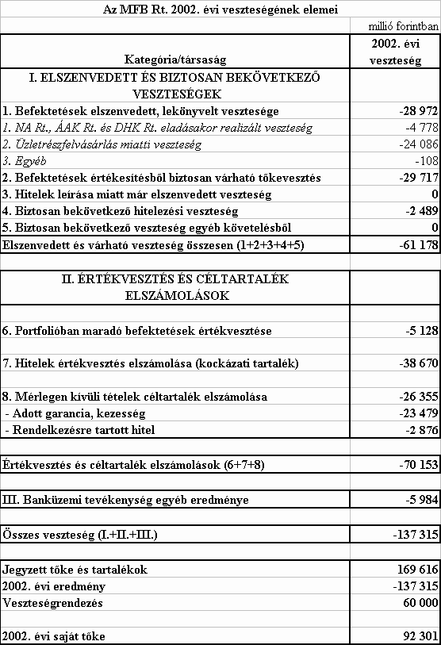

A TÖRVÉNYJAVASLAT ÁLTALÁNOS INDOKOLÁSA
I.
A kormányzat gazdaságpolitikájának fõ vonásai 2002. évben
A makrogazdasági folyamatok alakulása 2002-ben
2002-ben a magyar gazdaság fejlõdésének feltételei lényegesen eltértek attól, amelyekkel 2000. második felében - a 2001-2002. évi költségvetés kidolgozásakor - az elõrejelzõk számoltak. Mivel ezek - az elsõsorban a világgazdasági konjunktúra alakulásával összefüggõ - feltételváltozások már 2000. végén, 2001-ben jelentkeztek, a 2002. évi makrogazdasági folyamatok több ponton eltértek a költségvetésben eredetileg feltételezettõl.
A 2000-ig kedvezõnek mondható nemzetközi konjunkturális helyzet mély és tartós dekonjunktúrába váltott. Ez, erõteljesen korlátozván a magyar gazdaság exportlehetõségeit, jelentõsen csökkentette a növekedést, amivel párhuzamosan a GDP összetevõinek kedvezõtlen, a belsõ fogyasztást elõtérbe emelõ változása - az eredetileg feltételezettel ellentétben - rontotta az egyensúlyi pozíciókat.
Nemzetközi feltételek
Az év folyamán a várt fellendülés idõpontjával, terjedelmével kapcsolatos bizonytalanságok továbbra is fennmaradtak. Ugyanakkor az iraki válság megoldatlansága, az azzal kapcsolatos nemzetközi konfliktusok élezõdése egyértelmûen rontotta a gyors kibontakozás lehetõségének esélyét. E válság tovább késleltette a globális beruházási döntéseket, drágította az olaj árát, és elsõsorban e tényezõkön keresztül fékezte a gazdasági növekedést.
Az Eurozóna 2002. évi növekedése a pesszimista szcenáriók szerint következett be annak ellenére, hogy a múlt év bíztatóan kezdõdött, ami fõként a külsõ kereslet élénkülésének volt köszönhetõ. A külsõ élénkülés azonban ezúttal - a korábbi tapasztalatokkal ellentétben - nem tevõdött át a belsõ keresletre, így a második és harmadik negyedév alig hozott gyorsulást. A belsõ keresleti elemek közül a beruházások csökkenése folytatódott. A fogyasztói bizalom gyengesége miatt a háztartások fogyasztása is alig nõtt az elsõ félév során. Ennek oka a munkaerõpiaci fejleményeken és részvényárfolyamok alakulásán kívül a nemzetközi politikai légkörben és a bizonytalanság növekedésében rejlik. Ilyen körülmények között a vállalatok finanszírozási feltételei nem voltak olyan jók, mint amilyennek az irányadó kamatok alakulása alapján tûnhettek. A német gazdaság gyakorlatilag stagnált.
A magyar export iránti külsõ - a legfontosabb kereskedelmi partnerek importján alapuló - kereslet a tavaly tavaszi várakozásokhoz képest 2002-ben nemhogy nõtt, hanem kifejezetten csökkent. A magyar gazdaság számára tehát a nemzetközi feltételek az eredetileg feltételezettnél egyértelmûen kedvezõtlenebbül alakultak. Mindemellett a magyar kivitel dinamikája - bár az elõzõ évekhez képest csökkenõ mértékben, de - meghaladta a külsõ kereslet dinamikáját. Ez részben a transzformációs válságot követõ természetes felzárkózási folyamatnak, nagyobbrészt pedig annak köszönhetõ, hogy az 1995-98. évi intenzív mûködõtõke beáramlás bázisán kiépült kapacitások exportdinamikát érintõ késleltetett hatása még érvényesülni tudott. Emellett a külsõ keresletet a környezõ, szintén átalakulási periódusban lévõ gazdaságok még élénk aktivitása is kedvezõen érintette.
Gazdasági növekedés
A Központi Statisztikai Hivatal elõzetes tájékoztatója szerint a bruttó hazai termék a tavalyi év egészében 3,3%-kal nõtt. Ez némileg alacsonyabb a várakozásoknál, de nemzetközi összehasonlításban még mindig magasnak mondható, jóval nagyobb, mint az EU-tagállamok átlaga, s a kelet-közép-európai országok között is elõkelõ helyet biztosít. A GDP növekedése az elsõ negyedévi 2,9%-os mélypont után negyedévrõl negyedévre gyorsult, a negyedik negyedévi ütem már elérte a 3,7%-ot. A gazdaság teljesítményének fokozódása továbbra is kedvezõtlen külpiaci feltételek mellett következett be.
A GDP növekedési tényezõi jelentõsen megváltoztak. A nemzetközi összehasonlításban még mindig jelentõs, 3,3%-os GDP növekedést úgy sikerült elérnünk, hogy 2001 második felétõl kezdve - a gyenge külsõ kereslet következtében - az export szerepét fokozatosan a belföldi végsõ felhasználás vette át, de ennek bõvülése nem tudta pótolni az export húzóerejének csökkenését. A gazdaság tehát letért az exportvezérelt növekedési pályáról. A GDP felhasználási szerkezete igen elõnytelenné vált: a végsõ fogyasztás növekedése már második éve jelentõsen meghaladja a GDP bõvülését, így a fogyasztás/GDP arány a 2000. évi 73%-ról 2002-ben 78% fölé került.
A fogyasztási kereslet 2001-tõl folyamatosan és jelentõs mértékben növekedett. A minimálbér kétszeri, összességében közel 100%-os emelése, a közszférában foglalkoztatottak nagyléptékû bérrendezése a bruttó átlagkeresetek gyors (2001-ben 18%-os, 2002-ben több mint 18%-os) növekedéséhez vezetett. 2002. szeptemberétõl csökkent a keresetek adóterhelése, tehát a nettó keresetek a bruttó kereseteket meghaladó ütemben nõttek. A dinamikus keresetkiáramlás mellett az infláció is mérséklõdött, így két év alatt együttesen az egy keresõre jutó reálbér közel 21%-kal - a magyar gazdaságtörténetben eddig példa nélkül álló mértékben - emelkedett. Ugyancsak számottevõen, két év alatt közel 17%-kal nõtt a nyugdíjak reálértéke, még a 19 ezer forintos egyszeri kiegészítés nélkül is. Növekedtek - különösen 2002-ben - a gyermekneveléssel kapcsolatos támogatások is. Összességében a lakosság egy fõre jutó reáljövedelme 2002-ben mintegy 10%-kal haladta meg a 2000. évi szintet. Az erõteljes jövedelemnövekedés ellenére drasztikusan csökkentek a lakosság pénzügyi megtakarításai. Jelentõsen nõttek viszont a háztartások felhalmozási kiadásai (lakásépítés). Így összességében e folyamatok eredõjeként a lakosság fogyasztása 2002-ben 8,8%-kal, két év alatt pedig 14,6%-kal nõtt.
A beruházások tavalyi 5,8%-os volumenbõvülése az elõzõ évi növekedési ütemet (3,5%) markánsan meghaladta, de a szerkezet tovább torzult. A beruházásokon belül csökkent a vállalkozások és nõtt az államháztartás és a háztartások (ennek része a lakásépítés, ahol az átadott lakások száma 12%-kal nõtt) beruházása. A beruházások volumene kizárólag - az egyébként vitathatatlanul fontos - infrastrukturális szektor (illetõleg az építés-lakásépítés) révén nõtt, miközben a feldolgozóipari beruházások közel 10%-kal, a vállalkozói beruházások, ezen belül a vállalkozói beruházások kétharmadát megvalósító, 49 fõnél többet foglalkoztató vállalkozások beruházásai 3-4%-kal zsugorodtak. Ez azért kedvezõtlen, mivel az összes beruházás ötödét a feldolgozóiparban, több mint a felét a vállalkozásoknál realizálják. A visszaesést több tényezõ eredményezte, és nyilván összefügg a dekonjunktúrával, az erõs forinttal és a magas kamatszinttel. A szerkezet javulására mutató halvány jelek 2002 negyedik negyedévében jelentkeztek: a vállalkozói - ezen belül a feldolgozóipari - beruházások visszaesése mérséklõdött.
Külkereskedelmi áruforgalom
A külsõ kereslet növekedése nem tudott ösztönzõül szolgálni a vállalkozások külpiaci expanziójához. Az árukivitel volumene éves szinten 6,8%-kal bõvült, amit a szolgáltatásforgalom (ezen belül fõként az idegenforgalom) rendkívül kedvezõtlen eredményei a nemzeti számlákban megjelenõ áru- és szolgáltatásexport dinamikájában 3,8%-ra mérsékeltek.
Az export ütemének mérséklõdéséhez, illetve ahhoz, hogy a magyar export és az EU-országok importmutatói közötti különbség csökkent, valószínûleg hozzájárult a forint felértékelõdése és a dollár számottevõ romlása is. Különösen azokat a kis- és középvállalatokat érintette erõteljesen a felértékelõdés, ahol az export importtartalma nem túl magas, illetve a bérmunkázókat, akik jórészt az euróhoz képest is romló dollárban realizálták bevételeiket. Az exportõrök helyzetét továbbá a dekonjunktúrával összefüggõ külpiaci árcsökkenés is rontotta.
Az importbõvülés üteme is mérséklõdött 2002 folyamán, ha kisebb mértékben is, mint az exporté (folyó áron, euróban a behozatal 2000-ben 32,5%-kal, 2001-ben 7,8%-kal, 2002-ben pedig csak 6,4%-kal bõvült. Az import volumene éves szinten 6,1%-kal bõvült. Ez megegyezik a szolgáltatásokkal együtti (a nemzeti számlákban megjelenõ) importnövekedés dinamikájával.
A nem túl jelentõs importnövekmény struktúrája is arra utal, hogy a bõvülés nem elsõsorban fogyasztásvezérelt volt. Az élelmiszerek és a személygépkocsi importnövekedésén kívül a közvetlenül fogyasztást szolgáló behozatal érdemben nem növekedett.
Az év utolsó hónapjaiban a behozatal üteme növekedett, ami úgy következett be, hogy a nagyvállalatok importja jelentõsen visszaesett, míg a behozatal többi része - azaz a belsõ gazdaság szükségleteihez szorosabban, a kivitel alakulásához inkább csak közvetetten kapcsolódó import - érdemben gyorsult. Ekkor tehát - az év egészére jellemzõvel szemben - már a fogyasztás erõteljesebb növekedésének hatása is jelentkezett.
A külkereskedelmi mérleg hiánya korábbi várható számításainkhoz képest kedvezõbb lett, 3,4 milliárd euró, ami különösen az exportban, de az importban is viszonylag alacsony év végi forgalmak eredményeként jött létre. A szaldó viszonylati struktúrájában az aktívum növekvõ hányada a fejlett országokkal szemben, a növekvõ passzívum a fejlõdõ régiókkal folytatott forgalomban következett be.
Mind a kivitelben, mind a behozatalban a gépek forgalma nõtt a leggyorsabban. Az élelmiszerek importja ugyan dinamikusan nõtt, exportja pedig csökkent, a szektor azonban így is tekintélyes aktívumot termelt.
Termelés
Az elhúzódó világgazdasági recesszió, párosulva a versenyképességet rontó minimálbér növeléssel és a forint erõsödésével az ipari termelés növekedését kedvezõtlenül befolyásolta, 2002-ben az ipari termelés az elõzõ évi 3,6%-os növekedéssel szemben 2,6%-kal nõtt a KSH elõzetes közlése szerint. (2001-ben az elõzetes közléshez képest a KSH a végleges adatában 0,5 százalékponttal lépett vissza.) Az export-értékesítés növekedése 5,7% volt, míg a belföldi értékesítés a 2001. évi szinttõl 0,2%-kal maradt el.
A feldolgozóipar termelése a múlt évben 3,6%-kal növekedett, amelyet a külföldi - bár az elõzõ éveknél jóval alacsonyabb - kereslet-emelkedés tett lehetõvé. Az átlagosnál kilencszer magasabb növekedést produkált az év folyamán csaknem egyenletes dinamizmusú gépgyártás, és így a feldolgozóipar termelésén belüli súlya a 2001. évi 4,3%-ról 2002-ben 5,6%-ra emelkedett.
Az átlagos növekedéstõl elmaradt, de még a pozitív tartományban volt az építõanyag-, vegyianyag-, jármû gyártás, az élelmiszeripar, valamint a kõolajfeldolgozás. A csökkenõ termelésûek a klasszikus értelemben vett könnyûipari ágazatból kerültek ki, valamint itt található a hosszabb ideje válságjelenségeket mutató kohászat is.
A feldolgozóipari export-értékesítés 2002-ben 5,8%-kal nõtt, amelyben meghatározó szerepe volt a gépgyártás csaknem 50%-os volumennövekményének.
A feldolgozóipar belföldi értékesítésében a legmagasabb növekménye (13%) a gépgyártásnak volt, ami azért is különösen kedvezõ, mert vélelmezhetõen a kis- és középvállalkozások gépberuházásait szolgálta. A jármûipar termékei iránt megnõtt hazai kereslet közel 7%-os forgalomnövekedést tett lehetõvé a 2001. évi stagnálás után. Az élelmiszeripar belföldi értékesítése a megelõzõ évi 3%-os csökkenés után valamivel több, mint 3%-kal nõtt. Tekintettel arra, hogy az élelmiszeripar termelése nem egészen 2%-kal emelkedett, feltehetõen a felhalmozott jelentõs készletek terhére történt a (mind a bel- mind a külföldi) forgalmazás. Az építõanyagipar 5%-os belföldi értékesítési ütemében - amely szintén magasabb a termelésénél- nem érzékelhetõ az építõipari "boom" hatása, annál is inkább mert az ágazat forgalmazása az elõzõ évben ennél magasabb dinamikájú volt. Különösen kedvezõtlen jelenségnek ítélhetõ meg, hogy az informatikai eszközök gyártását is magában foglaló villamosgép-, és mûszergyártás hazai forgalma, amely a 2001. évi csaknem 18%-os csökkenés után, az elmúlt évben is tovább szûkült valamivel több, mint 7%-kal.
Kedvezõtlen továbbá, hogy a hazánkban mûködõ nagy nemzetközi vállalatok közül egyesek, fõként a tömegtermelést végzõk, a nyereségesség és a kedvezõbb piaci lehetõségek szem elõtt tartásával megkezdték teljes termelésük áthelyezését.
A nemzetgazdaság egészében és ezzel párhuzamosan az iparban tevékenykedõ vállalatok körében a jövedelmezõség (mûködési eredmény/GDP) az 1999. évi "boom" óta folyamatosan romlik. (1999-ben: 21,7%, 2000-ben: 20,5%, 2001-ben: 19,1, és számításaink szerint 2002-ben 17-18% körüli.)
Az építõipar 2002-ben a 2001. évinél is látványosabb havi adatokat produkált: a legalacsonyabb növekedésû hónapban is megközelítette a 9%-ot. Az ágazat éves teljesítménye 20%-kal nõtt. Ezt a dinamizmust elsõsorban az államilag támogatott lakásépítkezések, a középületek felújítási munkálatai, valamint a nagy értékû közlekedés-fejlesztési beruházások (híd-, út-, autópálya-építések) alapozták meg. Az épületek építése 15%-kal, az egyéb építmények teljesítménye 28%-kal emelkedett.
A mezõgazdaság tavalyi teljesítménye 4,4%-kal volt alacsonyabb a megelõzõ évinél. A legfõbb szántóföldi terményeink termésmennyisége elmaradt a 2001. évi kiugró szinttõl a gabonáknál 23%-kal, a burgonyánál 18%-kal. Az állatállományt illetõen - a sertés ágazatot kivéve - az enyhe csökkenés a jellemzõ. Az ágazati felvásárlás összességében 1,9%-kal nõtt, miközben áraik 1,1%-kal mérséklõdtek.
A szállítási ágazatokhoz tartozó vállalkozások 2002-ben a megelõzõ évivel csaknem azonos árumennyiséget, árutonna-kilométerben viszont némileg többet teljesítettek. Közúton és vízen 5%-kal nõttek a teljesítmények, vasúton 2%-kal visszaestek, így az árutonna-kilométerben mért ágazaton belüli súlya a közúti szállításnak már 72%, míg a vasúté 18%. Belföldi viszonylatban a szállított árutömeg kissé csökkent. A távolsági személyszállításban az utasforgalom 2%-kal nõtt. A helyi tömegközlekedés teljesítménye stagnált.
Bérek, keresetek, foglalkoztatás
Az év egészében a bruttó átlagkereset 18,3%-kal, a nettó átlagkereset 19,6%-kal, az egy keresõre jutó reálbér 13,6%-kal haladta meg az elõzõ évi színvonalat. A reálkeresetek példátlanul gyors növekedésében szerepet játszott a minimálbér 25%-os emelése, a közszféra béreinek jelentõs emelése, a személyi jövedelemadó terhelés évközi csökkentése, valamint az infláció mérséklõdése.
A versenyszférában a bruttó átlagkereset 13,3%-kal nõtt (az Országos Munkaügyi Tanács 8-10,5%-os növekedést ajánlott). Bár a 2002. évi növekedés alacsonyabb volt a 2001. évinél (16,3%), a csökkenõ infláció és a vállalatok romló jövedelmezõsége erõteljesebb mérséklõdést indokolt volna. A bérnövekedés általában azokban az ágazatokban volt magasabb, amelyeket nagyobb mértékben érintett a 2002. évi minimálbér-emelés (mezõgazdaság, kereskedelem, szálláshely-szolgáltatás, vendéglátás).
A költségvetési szektorban a bruttó átlagkereset 29,2%-kal nõtt. A gyors növekedéshez hozzájárult a 2001. évi illetményemelések áthúzódó hatása, a minimálbér, valamint a fegyveres testületekben dolgozók keresetének év eleji emelése, a közalkalmazottak szeptemberi béremelése.
A dinamikus reálbérnövekedés a munkaerõpiacon is éreztette a hatását. 2002-ben a legalább öt fõt foglalkoztató vállalkozásoknál, valamint a költségvetési és társadalombiztosítási intézményeknél összesen az alkalmazásban állók létszáma gyakorlatilag stagnált (0,1 százalékponttal nõtt), a tervezett kis mértékû emelkedéssel szemben. A stagnálás fõ okai között kiemelt szerepet játszik még az elhúzódó világgazdasági dekonjunktúra, illetve a forint reálfelértékelõdése. A költségvetési szektorban, ellentétben a versenyszektorral, ahol csökkenés volt tapasztalható, növekedés valósult meg. A növekedéshez hozzájárult, hogy a közalkalmazotti béremelés révén fõként az egészségügyi és szociális ellátásban a pályát elhagyók száma csökkent. 2003-ra sem várható a foglalkoztatottság érzékelhetõ növekedése, mivel az elmúlt idõszakban tapasztalt folyamatok áthúzódó hatásai nagy valószínûséggel továbbra is megmaradnak.
Áralakulás
2002-ben a dezinflációs cél teljesült: a fogyasztói árszintemelkedés éves átlagban 5,3%, az év végére 4,8% lett (2001-ben: 9,2, illetve 6,8%). Külpiaci és szezonális okokból éven belül az inflációs ráta 2002-ben is ingadozást mutatott. Az elõrejelzettõl eltérõ makrogazdasági folyamatok (lassuló gazdasági növekedés, nagy költségvetési hiány, erõteljes bérnövekedés) következményei csak kevéssé módosították a tervezett áralakulást. A nemzetgazdasági ráfordítások szintjén ugyanis a forint felértékelõdés (külön is az alacsony dollár árfolyam), a számítottnál kedvezõbb világpiaci áralakulás és az elmaradt energia áremelés költségcsökkentõ hatása ellensúlyozta a nagyobb béremelkedésbõl származó ráfordítás többletet. Keresleti inflációs hatás a vásárolt fogyasztás egészét tekintve nem mutatható ki. A kereslet bizonyos strukturális változására utal, hogy a fogyasztási iparcikkek körében az árak, illetve az árnövekedés mérséklõdése kisebb volt, mint amit az importbekerülési költségek csökkenése indokolt volna. Ugyanakkor a szolgáltatások iránti lassabban növekvõ kereslet korlátozta a költségáthárítást. Ezzel átmenetileg kisebb lett az ütemkülönbség a tradable és nontradable javak áremelkedése között. 2002-ben a gazdasági szférában - az építõipar kivételével, ahol 4,5%-kal nõttek az árak - már inkább deflációs tendenciák érvényesültek. Az ipari termelõi árak az elõzõ évhez képest 1,8%-kal csökkentek; az exportárak 4,5%-os mérséklõdése és a belföldi értékesítési árak 1,6%-os növekedése eredõjeként. Az ipar belsõ vertikális kapcsolataiban nem volt árszintemelkedés. Az import kb. 5%-kal alacsonyabb forintárszinten bonyolódott. A belföldi ipari árak csak a beruházási javak, az építõanyagok és az élelmiszerek körében nõttek (kb. 3%-kal). A mezõgazdasági árak 2002-ben 1,1%-kal voltak alacsonyabbak, mint az elõzõ évben. Az új agrárolló számítás szerint ez a ráfordítási szint 1,2%-os csökkenése mellett következett be, az árviszonyokból adódóan a jövedelmi helyzet nem változott.
Monetáris folyamatok
Inflációs célkitûzésének megvalósítása érdekében az MNB 2002-ben szigorú kamatpolitikára törekedett. A jegybank inflációs elõrejelzéseinek felfelé történõ módosítása miatt, valamint a kockázatokra történõ hivatkozással, az elsõ hónapokban végrehajtott, összesen 125 bázispontos, kamatcsökkentéseket május végén a 8,5%-os irányadó kamat 50 bázispontos emelése követte. Július elején a Monetáris Tanács újabb 50 bázisponttal növelte az irányadó kamatot. Az így kialakult 9,50%-os kamatszintet november közepéig tartotta, majd ekkor, a forint felértékelõdésének inflációt mérséklõ hatásaira hivatkozva, 50 bázisponttal mérsékelte. December 16-án részben újból a forint erõsödése miatti monetáris szigorodásra való hivatkozással, részben pedig az Európai Központi Bank kamatcsökkentésére, valamint a csatlakozási folyamat kedvezõ fejleményeivel kapcsolatos kockázati prémium csökkenésre való tekintettel, a Monetáris Tanács újabb 50 bázispontos kamatcsökkentés mellett döntött.
A bankközi kamatok volatilitásának mérséklése és az Európai Központi Bank gyakorlatának átvétele érdekében az MNB szeptember 1-jétõl az egy napos jegybanki hitel és az egy napos betét kamatai által meghatározott kamatfolyosó szélességét ± 1,5 százalékpontról ± 1 százalékpontra csökkentette.
A magyar bankrendszer versenyképességének javítása, valamint az Európai Központi Bank elõírásaihoz való közelítés érdekében az MNB augusztus 1-jétõl 5%-ra csökkentette a kötelezõ tartalékráta mértékét. A tartalékolás alapját az év során két lépésben szûkítették. A kötelezõ tartalékok után fizetett kamatot szeptemberben és októberben 50-50 bázisponttal, 5, 25%-ra emelték.
Az állampapírok hozama szempontjából a 2002-es év változatos volt: év elején csökkenés, majd májustól egy - kétszeri jegybanki kamatemeléssel párosuló - emelkedés következett. Összességében 2002-ben minden lejáraton estek a hozamok: a rövid oldalon természetszerûleg nagyobb változás (160-180 bázispontos csökkenés) következett be, mint a hozamgörbe hosszú oldalán, ahol 20-70 bázisponttal mérséklõdtek a hozamok. A térségben azonban így is a magyar állampapírok kínálták a legnagyobb többletet az euró hozamok fölött.
2002. elsõ kilenc hónapjában a reálkamat újabb meredek emelkedésnek indult, melynek hatására az elõretekintõ (ex ante) reálkamat kitört az addig megszokott 3-4%-os sávjából. A reálkamat-mutatók emelkedését a monetáris politikai lépések következtében növekvõ állampapír-piaci hozamok és a vártnál kisebb infláció magyarázza. 2002 negyedik negyedévében azután a jelentõs hozamesés következtében csökkenésnek indultak a reálkamat-mutatók.
A forint árfolyama 2002. október végéig - eltekintve július elején egy rövid idõszaktól - stabilan alakult, 1 euró jellemzõen 242-246 forintot ért. A júliusi átmeneti gyengülésben a lengyel és a dél-amerikai gazdasági helyzetrõl megjelent információk, valamint a kedvezõtlen magyar makrogazdasági adatok játszottak közre. A kormány jelentõs fiskális konszolidációt elõre vetítõ középtávú makrogazdasági stratégiájáról szóló hírek nyilvánosságra kerülését követõen a forint visszaerõsödött korábbi pozíciójába.
Az ír népszavazás kedvezõ eredményét követõen a bizonyossá váló EU tagságunkat visszatükrözve a kedvezõtlenül alakuló államháztartási és folyó fizetési mérleg deficit ellenére is a forint tovább erõsödött, folyamatosan haladt az erõs sávszél felé. Ebben elsõsorban a felerõsödõ konvergencia játék (hosszabb távon realizálható nagyobb hozam elérése érdekében történõ befektetés) nyilvánult meg.
A versenyképesség alakulásában már a sávszélesítést megelõzõen is jelentkeztek kedvezõtlen tendenciák. A kialakult folyamatra erõsített rá a monetáris rezsimváltozás és a gazdasági folyamatok inkonzisztenciája, amelyek a forint túlzott erõsödéséhez vezettek. A fõbb versenytársainkhoz képest pozíciónk kedvezõtlen irányba változott. A vállalatok költségérzékenysége nem volt kellõ mértékû és csak lassan reagáltak az árfolyam tartós erõsödésére. Mindez azonban meglehetõsen differenciáltan érintette a magyar vállalkozókat. A felértékelõdés következtében azok, akik importtal és/vagy importból történõ beruházással is rendelkeztek, nyereséget is elkönyvelhettek, azonban a fõként hazai alapanyagot és munkaerõt felhasználók kedvezõtlenebb helyzetbe kerültek. A 245 forint/euró árfolyam mellett is igen jelentõs, 15-20%-os a sávszélesítést megelõzõ idõszakhoz képest bekövetkezett reálfelértékelõdés.
Jövedelmi, pénzügyi folyamatok, az egyensúly alakulása
2002-ben romlottak a magyar gazdaság egyensúlyi mutatói. A kormányzati szektor deficitje a GDP százalékában mérve megduplázódott az elõzõ évhez képest és - bár jóval kevésbé, de - növekedett a folyó fizetési mérleg hiánya is.
A vállalkozások finanszírozási szükséglete visszaesett, mivel a kedvezõtlen konjunkturális környezetben visszafogták beruházásaikat. A vállalati szektor nettó megtakarító pozícióban volt. Ez egyben mérséklõleg hatott a külsõ egyensúly bekövetkezett romlására.
2002-ben lényegesen mérséklõdött a lakosság nettó finanszírozói kapacitása az elmúlt évekhez képest. A szektor nettó pénzügyi pozíciójának mintegy 2,3%-os GDP arányos értéke csak valamivel több, mint fele a 2001-ben tapasztalt 4,3%-nak. A lakosság nettó finanszírozó kapacitásának visszaesését, apadását a háztartások dinamikusan növekvõ eladósodása determinálta, ami jellemzõen a szektor fogyasztási és beruházási célú (döntõen lakásberuházás) kiadásainak növekedésében éreztette hatását. A háztartások fogyasztási, megtakarítási döntéseiben utóbbi években tapasztalt változás alapvetõen egy strukturális váltás eredménye, melynek során a háztartások egy magasabb fogyasztási pályát, és ezzel párhuzamosan egy magasabb eladósodottsági szintet érnek el.
Tavaly az államháztartás deficitje kiugróan magas volt. Az eredményszemléletû számbavételen alapuló, európai követelményeknek (ESA95) megfelelõ hiánymutató - az Európai Uniónak átadott Notifikációs Jelentés szerint - a GDP 9,2%-ára nõtt a 2001. évi 4,7%-ról. A nagymértékû egyenlegromlásban azonban olyan egyszeri hatások is szerepet játszottak, amelyek a következõ évek költségvetési folyamatait már nem befolyásolják. A 2002 végén elhatározott, az adósságok utólagos átvállalásához, veszteségek rendezéséhez kapcsolódó tõketranszfer jellegû kiadások mellett ide sorolhatók az egyszeri jellegû támogatások, de például a júliusi egyszeri nyugdíjkiegészítés is. Ezek nélkül a hiány jóval alacsonyabb. Az államháztartás keresleti hatása 2002-ben a GDP 4%-a körül alakult.
Mivel 2002-ben visszaesett a vállalkozói aktivitás, a háztartások nettó megtakarítása pedig jelentõsen csökkent, az a szokatlan állapot alakult ki, hogy az egyetlen nagy hitelfelvevõ a költségvetés lett. Ezt a helyzetet tovább nehezítette, hogy ugyanakkor a folyó fizetési mérleg hiánya is növekedett. Az új - a nemzetközi normáknak megfelelõ -, a külkereskedelmi statisztikára alapozott módszertan szerint 2002-ben a fizetési mérleg a korábbi várakozásoknál kevésbé, 800 millió euróval romlott 2001-hez képest, így megközelítõleg a GDP 4%-ának felelt meg. A romlás kizárólagos oka a szolgáltatási aktívum - ezen belül döntõen az idegenforgalmi bevételek - tekintélyes (1 milliárd eurós) visszaesése, a többi tétel összességében nem változott érdemben, kismértékben javította a szaldót. A külkereskedelmi mérleg vártnál szintén kedvezõbb volta fõként az import viszonylag alacsony ütemével függ össze, aminek dinamikája ugyan 2002. augusztustól kezdve már valamelyest meghaladta a kivitelét (fõként októberben és decemberben), de mértékét összességében a mérséklõdõ termelés és export alacsony igényei határozták meg.
II.
A költségvetés-politikai célok végrehajtása, prioritások érvényesülése
A 2002 májusában hivatalba lépett Kormány elsõ 100 napos, valamint az "Esélyt a jövõnek!" elnevezésû második 100 napos programja prioritásként kezelte a nyugdíjasok, a bérbõl és fizetésbõl élõk, továbbá az elmaradott kistérségek, valamint a gyermekek és fiatal szülõk helyzetének javítását.
Mindezen társadalmi rétegek támogatására az új Kormány kidolgozta a 2002. évre vonatkozó költségvetés-politikai koncepcióját és az ehhez kapcsolódó finanszírozási javaslatát. Az elfogadott költségvetési prioritások az alábbiak szerint valósultak meg 2002-ben.
A kormányprogramnak megfelelõen 2002. július hónapban 19 ezer forintos egyszeri juttatásban részesültek a nyugellátásban és nyugdíjszerû rendszeres szociális ellátásban részesülõ személyek. 1999-ben a nyugdíjas társadalom a korábban elfogadott törvényben foglaltaknál alacsonyabb nyugdíjemelésben részesült. Ezt kompenzálta ez az intézkedés, mely alapján összesen 3150 ezer idõs, rokkant, özvegy, árva és segélybõl élõ személy kereken 60 milliárd forint többletjuttatást kapott.
2002. júliusától visszaállításra került a méltányossági nyugdíjemelés intézménye. Az alacsony nyugdíjból élõ, legnehezebb élethelyzetû személyek nyugdíjának méltányossági emelésére a II. félévben 400 millió forint pénzügyi keret állt rendelkezésre, s a nyugdíjra jogosultság feltételeivel - általában az elõírt szolgálati idõvel - nem rendelkezõk méltányossági nyugdíj megállapítására 2002-ben 100 millió forint állt rendelkezésre. Méltányossági nyugdíjemelésben azok részesülhetnek, akiknek ellátása nem haladta meg a 40 200 forintot. A kormányrendelet hatálybalépése óta 600-650 ezer kérelem érkezett a nyugdíjbiztosítási szervekhez.
A közszférában a közalkalmazottak körében jelentõs bérkiigazítás valósult meg.
A kormányzat kedvezõ fordulatot akart elérni a pedagógusok, az oktatásban, a szociális és egészségügyi ellátásban dolgozók anyagi elismerésének több évtizedes rendszerében. 2002. szeptember 1-jétõl jelentõs (átlagosan 50,0%) béremelés valósult meg és bevezetésre került a 100 ezer forintos legalacsonyabb diplomás bér ("diplomás minimálbér"). A költségvetési szerveknél foglalkoztatott közalkalmazottakon kívül a kedvezményezetti körbe tartoztak a humán normatívában részesülõ szervezetek, illetve azon államháztartáson kívüli szervezetek is, amelyek nem humán normatívával támogatottak (egészségügy, kultúra).
A költségvetés-politika terén egyik legfontosabb cél a családok támogatása. A Kormány meg kívánta teremteni a gyermekneveléshez nyújtott univerzális és méltányos társadalmi segítség rangját. A családi pótlék összegének egyszeri megemelésével bevezette az augusztusban folyósítandó egyhavi iskolakezdési támogatást, hogy enyhítse a tanévkezdés terheit. Az egyenlõtlenségek már az iskolakezdés elõtt kialakulnak és behozhatatlan hátrányként rögzülhetnek. Ennek mérsékléséhez nyújtott segítséget az új támogatási forma.
A családok anyagi helyzetének könnyítésére szolgált a TV készülékhasználati díj eltörlése.
A közoktatásban étkezésben részesülõ és szociálisan rászorult gyermekek élelmezésére fordította a Kormány az Országimázs Központ megszüntetésbõl felszabaduló költségvetési forrásokat, mindezzel támogatva a hátrányos helyzetû családok gyermekeinek megfelelõ ellátását.
Szintén a családok helyzetének könnyítésére szolgált a kormányprogram szerint a minimálbér adómentességének bevezetése 2002. szeptember 1-jétõl adójóváírás formájában.
Bevezetésre került új intézményként az édesapák számára öt munkanap munkaidõ-kedvezmény, melynek értelmében a Munka Törvénykönyve módosításával 2002. december 1-jétõl az újszülött gyermek édesapja, gyermeke kéthónapos koráig öt munkanap pótszabadságra jogosult. Emellett a családok támogatásáról szóló törvény módosításával december 1-jétõl lehetõvé vált, hogy a nagyszülõk nyugdíjuk változatlan folyósítása mellett is jogosulttá váljanak a GYES-re. A korábbi szabályok szerint ugyanis a nagyszülõknek választaniuk kellett a GYES vagy a nyugdíj összege között.
Az országos múzeumok diáklátogatói számára október 1-jétõl ingyenes lett a vasúti utazás a MÁV és a GySEV vonalain. A gyermekek esélyteremtõ programjának másik jelentõs intézkedése, hogy mintegy százmillió forintos támogatással, ötezer rászoruló gyermek egyhetes ingyenes üdülésen vehetett részt a téli szünidõben.
A felsõoktatás egyre bõvülõ szolgáltató piac, melyben az államra kiemelt feladat hárul. A hallgatók és a források megszerzése egyben feltétele is a magas színvonalú oktatásnak. Ehhez nyújtott segítséget 2002. szeptemberétõl a hallgatói ösztöndíjak 30%-os mértékû megemelése.
2002-ben emelkedett a lakásépítési támogatás összege. A lakásépítési kedvezmény összege ugyanis 1995 óta változatlan volt. A gyermekes családok otthonteremtési esélyének javítása érdekében a Kormány két lépcsõben jelentõsen emelte a közvetlen, vissza nem térítendõ állami támogatás összegét. A támogatás mértéke elsõként 2002. decembertõl gyermekenként a korábbi kétszázezer forintról ötszázezer forintra emelkedett, a második és a harmadik gyermek után pedig egyaránt 1,1-1,1 millió forint lett. Mindezek mellett decembertõl ismét megelõlegezésre került a két gyermek után járó lakásépítési kedvezmény, így azok a gyermektelen házasok, akik meghatározott idõn belül két gyermeket vállalnak, otthonteremtésükhöz szintén igénybe vehetik az 1,6 millió forintos támogatást.
A második 100 napos program intézkedéseként minden településen elkezdõdött a számítógép és az internet közösségi hozzáférési lehetõség megteremtése. A programhoz kapcsolódik az ország valamennyi településén az internet-csatlakozást lehetõvé tevõ végpontok kiépítése, és az ezt biztosító szolgáltatók közbeszerzés útján történõ kiválasztása.
A Kormány szem elõtt tartja a hátrányos helyzetû kistérségek felzárkóztatását. Ennek eredményeként november 1-jével elindult a Kistérségi Támogatási Alap program, amely az ország 42 leghátrányosabb helyzetû kistérsége számára is lehetõvé teszi a fejlõdésük megindulásához szükséges programokban való részvételt és a pályázatokon való induláshoz szükséges önerõt a területfejlesztési célelõirányzat 1 milliárd forintos kerete terhére.
Az önkormányzatok gazdálkodásnak segítésére a kormányzat olyan döntést hozott, hogy a tulajdonában lévõ használaton kívüli ingatlanokat, laktanyákat térítésmentesen a közigazgatásilag illetékes önkormányzatok tulajdonába adja, amennyiben vállalják azok ipar- és területfejlesztési, foglalkoztatási, szociális vagy ifjúsági célokra történõ hasznosítását. Eddig 15 ilyen ingatlan átadására került sor a települési önkormányzatok részére.
Elsõsorban aszálykárok, a Dunán és mellékfolyóin 2002 augusztusában kialakult árvízi károk miatt nehéz pénzügyi helyzetbe került mezõgazdasági termelõk és integrátor szervezetek hitelintézeti adósságterheinek és egyéb meghatározott kötelezettségeinek csökkentése, valamint az európai uniós követelményeknek és a Nemzeti Agrár - környezetvédelmi Programnak megfelelõ szerkezetváltás elõsegítése érdekében 60 milliárd forintos adósságrendezési program került meghirdetésre.
A kis- és középvállalkozások támogatására 2002-ben további 1,5 milliárd forintot biztosított a kormányzat az általános tartalékból. Ezen felül közel 1 milliárd forint került átcsoportosításra a gazdaságfejlesztési célelõirányzathoz szintén a központi költségvetés tartalékának terhére.
III.
Az állami feladatellátás funkcionális bemutatása, változásának jellemzõi
Az államháztartás 2002. évi kiadásaira hatást gyakoroltak a gazdaságban végbemenõ év közbeni változások valamint a 2001. és 2002. évi költségvetési törvény 2002. évre vonatkozó módosításai. Mindezeket figyelembe véve a 2002. évre vonatkozóan az alábbiak szerint alakultak az állami feladatellátások.
a) Az államháztartási szerepvállaláson belül az állami mûködési funkciók konszolidált kiadásai a GDP 8 %-át tették ki, ezzel az összes kiadásból 16 %-ot képviseltek.
A 2002. évben védelemre az összes kiadáson belül 2,5%-ot fordított az államháztartás. A ráfordítások jelentõs hányada a NATO csatlakozással kapcsolatos kötelezettségvállalások fedezetéül szolgált. Ezen felül jelentõs mértékben növekedett a más honvédelmi célokra fordított támogatások összege is.
A közrend és közbiztonság javítása, a szervezett bûnözés megfékezése, valamint az intézményeknél megvalósult fejlesztések a 2002. évi államháztartási kiadások 3,6%-át tették ki. Emellett a legnagyobb mértékben - mintegy 81%-kal a tûzvédelemre fordított összegek emelkedtek.
b) Az állampolgárok helyzetét javító, a társadalmi egyenlõtlenségeket mérséklõ jóléti funkciókra (oktatás, egészségügy, társadalombiztosítás) 2002-ben az államháztartás kiadásainak 56,2%-át fordították. Ezen belül az iskolai elõkészítéssel és alapfokú oktatással kapcsolatos költségek több mint 30%-kal; a középfokú oktatásra fordított összegek közel 17,4%-kal, míg a felsõfokú oktatási feladatok finanszírozására költött kormányzati kiadások több, mint 16%-kal növekedtek az elõzõ évihez viszonyítva. A felsõoktatásban az államilag finanszírozott hallgatók létszáma jelentõsen megemelkedett.
Az egészségügy területén prioritásként kezelt célokra, valamint az intézmények mûködési feltételeinek biztosítására többet fordított a költségvetés, ami csaknem 19,3%-os javulást eredményezett a 2001. évihez viszonyítva.
A társadalombiztosítási és jóléti funkción belül a költségvetés-politikában prioritásként is megjelölt nyugellátások több mint 21,8%-kal, a táppénz, anyasági vagy ideiglenes rokkantsági juttatások 19,7%-kal növekedtek a 2001. évhez képest. Ezen felül a 2002. évben tovább növekedtek az egyéb társadalombiztosítási ellátások, valamint a szociális és jóléti intézményi szolgáltatások jogcímen folyósított összegek is. Ez utóbbi mintegy 23,5%-kal haladta meg a 2001. évi teljesítést.
A lakástámogatásokra, települési és közösségi tevékenységekre és szolgáltatásokra az elõzõ évinél csaknem 17,3%-nál magasabb összeg került kifizetésre 2002 folyamán. A lakástámogatási rendszerben megvalósult új szabályozás lehetõséget teremtett a magánerõbõl való lakásépítések nagyobb mértékû támogatására, a fiatal házasok és a legrászorultabbak lakáshoz jutásának elõsegítésére.
A szórakoztató, kulturális és vallási tevékenységek funkcionális kiadásai az összkiadásokon belül 3,2%-ot képviseltek, amely az elõzõ évhez viszonyítva azonos arányú. Ezen funkció csoporton belül kiemelkedõek a sport és szabadidõs tevékenységek jogcímen folyósított kiadások összege mely az elõzõ évhez képest mintegy 61%-os növekedést mutat.
c) A gazdasági funkciók elõzõ évihez viszonyított emelkedésének döntõ részét a tüzelõ- és üzemanyag, valamint energiaellátási feladatok, továbbá a mezõ-, erdõ-, hal- és vadgazdálkodás kiadásainak növekedési üteme irányította. Ezen felül az elõzõ évhez viszonyítva több mint 15%-kal növekedtek a környezetvédelemre fordított kiadások is.
d) Az államadóssággal kapcsolatos kiadások a tárgyévben 2,2%-kal növekedtek, ami alapvetõen két tényezõvel magyarázható:
IV.
A költségvetés végrehajtásának általános értékelése
1. Az államháztartás helyzetének fõbb jellemzõi
A 2001-2002. évi költségvetés készítése óta a gazdasági folyamatok bizonyos változásokon mentek keresztül egyrészt a világgazdaságban zajló események, másrészt bizonyos makrogazdasági tényezõk pl. bérek, növekedési ütem várhatótól eltérõ alakulása folytán. Ezek a hatások az államháztartás alrendszereiben is eltérõ folyamatokat indukáltak.
A 2001. és 2002. évi költségvetési törvényben jóváhagyott eredeti hiány a 2002. évre vonatkozóan 511,5 milliárd forint volt. Ezt a 2001. évi zárszámadási törvény és a 2003. évi költségvetési törvény 1255 milliárd forintra módosította. Ezzel szemben az államháztartás egészének pénzforgalmi szemléletû hiánya 1685,6 milliárd forintban teljesült, amely a GDP 9,9%-át teszi ki. Az államháztartás bevételei a módosított elõirányzat 107,7%-ára, kiadásai 111,1%-ára teljesültek. Az ESA'95 szerinti hiány a GDP 9,2%-át teszi ki.
Az alrendszerek - privatizációs bevételek nélküli - fõbb adatai a következõk:
milliárd forint
|
2001. évi tény |
2002. évi LXII. tv. szerint módosított elõirányzat |
2002. |
Módosított elõirányzat |
|
|
Központi költségvetés egyenlege |
-402,9 |
-1 218,0 |
-1 469,6 |
120,7 |
|
bevétel: |
4068,0 |
4 288,4 |
4 357,3 |
101,6 |
|
kiadás: |
4470,9 |
5 506,4 |
5 826,9 |
105,8 |
|
Elkülönített állami pénzalapok egyenlege |
-2,3 |
-2,2 |
1,4 |
|
|
bevétel: |
198,1 |
202,5 |
233,8 |
115,5 |
|
kiadás: |
200,4 |
204,7 |
232,4 |
113,5 |
|
Társadalombiztosítási alapok egyenlege |
-28,8 |
-29,1 |
-100,9 |
|
|
bevétel: |
2 061,3 |
2 281,3 |
2 416,2 |
105,9 |
|
kiadás: |
2 090,1 |
2 310,4 |
2 517,1 |
108,9 |
|
Helyi önkormányzatok egyenlege |
-9,9 |
-6,0 |
-116,6 |
|
|
bevétel: |
1 892,5 |
1 746,5 |
2 169,3 |
124,2 |
|
kiadás: |
1 902,4 |
1 752,5 |
2 285,9 |
130,4 |
|
EGYENLEG ÖSSZESEN |
-444,0 |
-1 255,3 |
-1 685,6 |
134,3 |
|
bevétel: |
8 219,9 |
8 518,7 |
9 176,7 |
107,7 |
|
kiadás: |
8 663,9 |
9 774,0 |
10 862,3 |
111,1 |
A központi költségvetés 2002. évi hiánya 1469,6 milliárd forint, azaz az elõirányzat 120,7%-a volt. Jelentõsebb befizetési többlet a társaságiadó-bevételeknél, a költségvetési szervek, valamint a támogatási célprogramok saját bevételeinél történt. Az általános forgalmi adó 1304,9 milliárd forintos bevétele a módosított elõirányzattól 3,8%-kal elmaradt. Személyi jövedelemadó jogcímen 2002-ben a központi költségvetésbe 940,6 milliárd forint folyt be. A központi költségvetés kiadásai a módosított elõirányzatot 5,8%-kal haladták meg, melyek közül jelentõsebb mértékben a gazdálkodó szervezetek támogatásai, a központi költségvetési szervek kiadásai és a helyi önkormányzatok támogatásai teljesültek túl a legnagyobb mértékben.
Az elkülönített állami pénzalapok 2002. évre jóváhagyott 2,2 milliárd forint hiányával szemben a teljesítés +1,5 milliárd forint lett. A Központi Nukleáris Pénzügyi Alap jóváhagyott 5,8 milliárd forintos többlete 0,2 milliárd forinttal nõtt. A Munkaerõpiaci Alapnál a tervezett 8 milliárd forint deficit helyett mindössze 4,5 milliárd forint lett a hiány. A Munkaerõpiaci Alap bevételei közül a munkaadói járulék 108,1%-ra, a munkavállalói járulék 107,7%-ra teljesült. A kiadások közül a "munkanélküli ellátások" 124,8%-ra teljesült. A Központi Nukleáris Pénzügyi Alap bevétele a Paksi Atomerõmû Rt. befizetésébõl - a 2001. és 2002. évi költségvetési törvény 60. § (2) bekezdésében foglaltak szerint - 17,2 milliárd forint lett, így az elõírt befizetés teljesült.
A társadalombiztosítás pénzügyi alapjainál az év végi egyenleg -100,9 milliárd forintot tett ki. A hiány mértéke a Nyugdíjbiztosítási Alap esetében 14,2 milliárd forint, az Egészségbiztosítási Alapnál 86,7 milliárd forint volt. A kiadási oldalon jelentõsen túl teljesültek az Egészségbiztosítási Alap pénzbeli ellátásaira fordított összegek (táppénz, terhességi-gyermekágyi segély). A nyugellátások céljaira fordított kiadások a módosított elõirányzatot 9,7%-kal haladták meg, az évközi kiegészítõ nyugdíjemelések következtében.
A helyi önkormányzatok bevétele 2169,3 milliárd forint, kiadása 2285,9 milliárd forint volt. A hiány 110,6 milliárd forinttal magasabb az elõirányzatnál, melynek oka a felhalmozási kiadások növekedése, amihez az önkormányzatok tartalékaikat, privatizációs bevételeiket vonták be.
A központi költségvetés 2002. évi bevételi fõösszege a módosított elõirányzatot közel 70 milliárd forinttal haladta meg, a kiadások 321 milliárd forinttal lettek magasabbak, s így a 1218 milliárd forint módosított hiánynál az éves deficit, mintegy 252 milliárd forinttal lett kedvezõtlenebb.
A központi költségvetés bevételeinek és kiadásainak fõbb jogcímcsoportok szerinti megoszlását a következõ táblázatok tartalmazzák:
|
|
|
az LXII tv. szerinti 2002. évi törvényi módosított elõirányzat |
|
|||
|
Összeg |
Megoszlás |
Összeg |
Megoszlás |
Összeg |
Megoszlás |
|
|
Bevételek összesen |
4068,0 |
100,0 |
4 288,4 |
100,0 |
4 357,3 |
100,0 |
|
Ebbõl: |
508,1 |
12,5 |
537,4 |
12,5 |
566,2 |
13,0 |
|
- fogyasztáshoz kapcsolt adók |
1 783,6 |
43,7 |
1 938,9 |
45,2 |
1 895,4 |
43,5 |
|
- a lakosság befizetései |
896,4 |
22,0 |
993,9 |
23,2 |
1 016,2 |
23,3 |
|
- központi költségvetési szervek bevételei |
584,7 |
14,4 |
450,6 |
10,5 |
583,9 |
13,4 |
|
- egyéb bevételek |
295,2 |
7,3 |
367,6 |
8,6 |
295,6 |
6,8 |
A központi költségvetés bevételi oldalán a gazdálkodó szervezetek befizetései között a társasági adóbevételek a módosított elõirányzatot mintegy 22 milliárd forinttal haladták meg. Az elõirányzatokat meghaladó teljesítésben több tényezõ játszott szerepet. Így említést érdemel az ún. külföldön tevékenységet végzõ adózók többlet befizetése valamint az adózók decemberi feltöltési kötelezettségének túlteljesítése.
A vám- és importbefizetések bevétele a 120 milliárd forintos költségvetési elõirányzathoz képest 4,8%-kal magasabb szinten realizálódott, meghaladva az elõzõ évi teljesítést is. Az elõirányzatnál kedvezõbb mértékben alakultak a bányajáradék és az egyéb adó és adójellegû befizetések.
A gazdálkodó szervezetek befizetéseinek aránya 12,9%-ot tett ki a bevételi oldalon, amely mind a 2001. évi, mind pedig a 2002. évi módosított elõirányzathoz képest is magasabb.
Az év közben végrehajtott elõirányzat módosítással szemben a fogyasztáshoz kapcsolt adók aránya 2 százalékponttal alacsonyabban teljesült. A 2002. évben a számítottnál kedvezõtlenebb áfa-bevételek alakulását a kiskereskedelmi forgalom és a lakossági fogyasztás élénkülése, valamint a II. negyedévtõl a GDP és a beruházások növekedési ütemének lassú emelkedése befolyásolta. A gazdasági élénkülés fokozatos beindulása azonban rövid távon - a meglévõ készletek felhasználása miatt - a visszaigényléseket a bevételekénél nagyobb mértékben növelte.
A fogyasztási és jövedéki adók terven felüli alakulásában elsõsorban a használt személygépkocsi-import forgalom megduplázódása játszotta a meghatározó szerepet.
A lakosság befizetései kedvezõbben alakultak a 2001. évi teljesítéstõl, és a módosított elõirányzat mértékét is meghaladták. A személyi jövedelemadó bevételek közel 2%-kal túllépték a módosított elõirányzatot. A tervezett összeget felülmúló teljesítés elsõdlegesen a prognosztizáltat meghaladó lakossági-jövedelemnövekedés eredménye.
A központi költségvetési szervek bevételeinek aránya az elõirányzathoz képest magasabban teljesült. Ebben a központi költségvetési saját bevételeinek dinamikus növekedése játszotta a szerepet.
Az egyéb bevételek a tervezethez képest mintegy 1,8 százalékponttal alacsonyabb részarányban teljesültek.
|
|
|
az LXII tv. szerinti 2002. évi törvényi módosított elõirányzat |
|
|||
|
Összeg |
Megoszlás |
Összeg |
Megoszlás |
Összeg |
Megoszlás |
|
|
Kiadások összesen |
4470,9 |
100,0 |
5 506,4 |
100,0 |
5 826,9 |
100,0 |
|
Ebbõl: |
|
|
|
|
|
|
|
- felhalmozási kiadások |
195,1 |
4,4 |
193,5 |
3,5 |
218,7 |
3,8 |
|
- TB közremûködésével folyósított ellátások |
329,0 |
7,4 |
374,5 |
6,8 |
389,2 |
6,7 |
|
-garancia és hozzájárulás a TB-hoz |
220,5 |
4,9 |
360,6 |
6,5 |
383,9 |
6,6 |
|
- központi költségvetési szervek kiadásai |
1 816,1 |
40,6 |
1 671,6 |
30,4 |
2 105,6 |
36,0 |
|
- támogatási célprogramok kiadásai |
259,0 |
5,8 |
387,1 |
7,0 |
359,2 |
6,2 |
|
- helyi önkormányzatok támogatása |
508,9 |
11,4 |
537,2 |
9,8 |
620,5 |
10,6 |
|
- adósságszolgálat, kamattérítés |
723,9 |
16,2 |
729,9 |
13,3 |
738,0 |
12,7 |
|
- adósságátvállalás és tartozás-elengedés |
420,8 |
7,6 |
363,2 |
6,2 |
||
|
- egyéb kiadások |
203,1 |
4,5 |
626,2 |
11,4 |
411,4 |
7,1 |
A gazdaságpolitikai céloknak megfelelõen, a költségvetés-politikai prioritásokat érvényesítve a központi költségvetés kiadásain belül a legmagasabb részarányt a központi költségvetési szervek és a helyi önkormányzatok támogatásai jogcímek jelentették. Az adósságszolgálati kiadások az elõzõ évhez képest kisebb arányt képviseltek a kiadások között, viszont az év végi adósságrendezés kapcsán megjelent új jogcím az összes kiadás 6,2%-át tette ki.
A gazdálkodó szervezetek támogatásainak aránya elmaradt a tavalyi teljesítéshez képest, de a 2002. évi módosított elõirányzatot kismértékben meghaladta.
A felhalmozási kiadások részaránya is alulmaradt a 2001. évi mértéktõl, de abszolút értékben a 2002. évi teljesítés több mint 23 milliárd forinttal meghaladta a 2001. évi teljesítést és mintegy 25 milliárd forinttal a módosított elõirányzatot. Ez a központi beruházások 2001. évi maradványának jelenetõs mértékû felhasználásával és a lakástámogatások dinamikus növekedésével magyarázható. A lakástámogatás év végi összege 72,3 milliárd forint volt, ami több mint 54%-kal haladja meg a módosított elõirányzatot. A kirívó túllépést jellemzõen a kormányzati intézkedések - a lakáscélú állami támogatásokat szabályozó 12/2001. (I. 31.) kormányrendelet többszöri módosítása - és közvetetten a személyi jövedelemadó törvény lakáscélú hiteltörlesztés kedvezményének hatása eredményezte.
A társadalombiztosítás valamint a területi államháztartási hivatalok közremûködésével folyósított ellátásokra 2002-ben összesen 389,2 milliárd forintot fordítottak, amely az éves elõirányzat 103,9%-a. A magasabb teljesülést elsõsorban az évközi emelések, a nyugdíjak és a nyugdíjszerû szociális ellátások 2002. júniusi 4,5%-os kiegészítõ emelése, valamint az ellátások novemberi kiegészítõ 1%-os emelése okozta. 2002-ben a nyugdíjszerû szociális ellátásban részesülõ személyek 19 000 forintos egyszeri juttatásban is részesültek. A Jogcímen belül a gyermekgondozási segély teljesítése is jelentõsen meghaladta az elõirányzatot, sor került ezen ellátásokban részesülõk részére egyszeri juttatásra (10 500 forint/fõ) is, kapcsolódva az idei, júniusi 4,5%-os kiegészítõ nyugdíjemeléshez. Családi pótlékra a törvényi módosított elõirányzat 101,9%-át kellett felhasználni. Augusztusban megvalósult a családi pótlék kétszeres összegének a folyósítás az iskolakezdés megkönnyítése érdekében, továbbá 2002. szeptember 1-jétõl 20%-kal megemelésre került a családi pótlék összege.
A központi költségvetés kiadásain belül jelentõsen növekedés következett be mind az elõzõ évhez, mind pedig az elõirányzathoz képest a központi költségvetési szervek kiadásai és a helyi önkormányzatok támogatásai jogcímeken. Ebben a kormányprogram végrehajtásából adódó intézkedések játszottak szerepet, sor került ugyanis 2002. szeptember 1-jétõl a közalkalmazottak bérének 50%-os megemelésére, valamint a közalkalmazottaknál a diplomás minimálbér (100 000 forint) bevezetésére.
Adósság-átvállalás és tartozás-elengedés címén 420,8 milliárd forintot irányzott elõ a 2002. évi költségvetési törvény módosításában a költségvetés azzal a céllal, hogy a korábbi kötelezettségvállalások következõ éveket terhelõ kiadásaitól megszabadítsa, és az elkövetkezendõ években átláthatóbbá tegye a közszféra gazdálkodását. A tényleges teljesítés 363,2 milliárd forint volt. A terv- és a tényadatok közötti különbözet legfõbb oka az egyes kiadásoknál abból adódott, hogy míg a devizában fennálló hitelek forintösszegét a tervezés során a 2001. évi év végi árfolyamon számolva tartalmazta az elõirányzat, addig a teljesítés a 2002. év végi árfolyamok alapján történt. Emellett egyes hitelek esetében a tervezettnél alacsonyabb összegû átvállalás történt. Az NA Rt. hitelei átvállalásának összege az állam részére átadható autópályák mértékével állt összhangban. A tervezés során nagyobb volumenû út-átadással lehetett számolni, a tényleges átadás kevesebb lett, ezáltal mérséklõdött az átvállalt hitelek értéke is. A teljesítés tehát zömében megegyezik a törvényben foglaltakkal, de a 2002. év végi árfolyamok alapján a forintban kimutatott összeg alacsonyabb lett.
V.
Adópolitika
Az adórendszer 2002. évi változásait alapvetõen a jogszabályi környezet változása, valamint a jogharmonizációs kötelezettségek teljesítése indokolták.
1. Kormányprogramokban megfogalmazott célok teljesülése
A személyi jövedelemadóról szóló törvényben az elfogadott módosítások révén emelkedett a lakáscélú hitelekhez kapcsolódó adókedvezmény mértéke, kialakult a családi gazdaságok adóztatásának rendszere, valamint módosult egyes tõkejövedelmek adóztatatásának szabályozása. Adómentessé vált a nyugdíjjövedelem, valamint az ingyenes vagy kedvezményes Internet-hozzáférés, ha a magánszemély központi költségvetési forrásból pályázat útján jutott az Internet hozzáféréshez.
Az Szja-nál a 2002. évben évközi módosításokra került sor. A módosítások közül a legfontosabb az alacsony jövedelmûek adóterheinek enyhítése volt. Ennek érdekében 2002. szeptemberétõl a bérjövedelemmel rendelkezõk esetében a minimálbér adómentessé vált az adójóváírás mértékének módosítása által.
A társasági adóról és az osztalékadóról szóló törvényt érintõ módosítások közül kiemelendõ a kis- és középvállalkozások helyzetének javítása érdekében, hogy a kisvállalkozói kedvezmény összeghatára 10 millió forintról 30 millió forintra emelkedett (ezzel párhuzamosan a személyi jövedelemadó törvényben is az egyéni vállalkozókra vonatkozóan).
A jogalkalmazás segítése érdekében a társasági adóalap megállapítását érintõen néhány kisebb módosítás is történt.
A vállalkozásbarát környezet kialakítása érdekében a 2003. évben visszamenõleges hatállyal meghozott intézkedés eredményeképpen a vállalkozásoknak már 2002. évben lehetõségük nyílt az ún. adómentes fejlesztési tartalék igénybevételére. Eszerint az eredménytartalékból képzett, lekötött fejlesztési tartalékként kimutatott összeg, de legfeljebb az adózás elõtti eredmény 20 százalékkal, és legfeljebb 500 millió forinttal volt csökkenthetõ a 2002. évi adózás elõtti eredmény. Az adómentesen képzett fejlesztési tartalék összege a 2003. év végéig használható fel adómentesen.
Az általános forgalmi adó szabályai alapvetõen a megváltozott jogi környezet, valamint a 2001. évi tapasztalatok alapján felmerült jogszabály értelmezési problémák miatt módosultak. A devizaliberalizáció a számlázási és adó-visszatérítési szabályok módosítását igényelte.
A jövedéki adó területén az adóelkerülések visszaszorítása érdekében szigorodtak a fûtõolaj adásvételéhez kapcsolódó elõírások.
A vámszabályozás területén a devizaszabályozásra vonatkozó jogszabályváltozások miatt módosult a "külföld", valamint meghatározásra került a nem kereskedelmi jellegû áruk fogalma.
Az illeték törvény módosítását elsõsorban a Kormány otthonteremtési programjának megvalósítása indokolta. Ennek részeként pontosabbá vált az új lakás elsõ vásárlójához kapcsolódó adómentességre vonatkozó szabályozás. Meghatározásra került, hogy egy más hasznosítású épület átépítésével létesített új lakás elsõ megszerzése is az illetékmentes körbe tartozik.
A családi mezõgazdasági vállalkozások többoldalú támogatásának egyik elemeként a családi mezõgazdasági vállalkozó öröklés útján történõ termõföldszerzéséhez 75 százalékos illetékkedvezmény került bevezetésre, valamint mentesült a vagyonátruházási illeték alól a visszteher melletti termõföldszerzés 300 hektár területnagyságig, illetõleg 6000 aranykorona értékig.
A gépjármûadóról szóló törvény módosítása egyrészt összhangot teremtett a hatáskörváltozással, másrészt a külföldön bejegyzett és vegyes honosságú, hazánkban közlekedõ jármûszerelvények esetében egyértelûbbé vált a szabályozás.
A helyi adók területén a magánszemélyek kommunális adója esetén a módosítás szabályozta a lakásbérleti joggal összefüggésben az adóalanyisággal kapcsolatos jogokat és kötelezettségek gyakorlásának módját. Egyértelmûbbé vált az iparûzési adóval kapcsolatosan az eszközérték-arányos megosztási módszer szabályozása.
Az adózás rendjérõl szóló törvény többek között a devizaliberalizációval kapcsolatosan módosult, szabályozva a devizakülföldiek és devizabelföldiek közötti ügyletek esetén az adófizetés módját.
A számvitelrõl szóló törvény az elektronikus aláírásról szóló törvény szerinti elektronikus aláírással ellátott dokumentumok, iratok számviteli bizonylatkénti elfogadásához, a devizakülföldi társaságok egységes fogalomrendszerének alkalmazáshoz kapcsolódóan, illetve az egyes értelmezõ rendelkezéseknek a tõkepiaciról szóló törvényben történõ illesztése miatt változott. A számviteli törvény módosítása több jogalkalmazást segítõ intézkedést is tartalmazott.
2. Az Európai Unióhoz való csatlakozást szolgáló jogharmonizációs intézkedések
A társasági adóról és az osztalékadóról szóló törvényt érintõen az európai uniós követelményeknek megfelelõen módosult a társasági adókedvezményekre való jogszerzés idõpontja. Beépült a törvénybe az uniós követelményeknek megfelelõ fejlesztési adókedvezményre vonatkozó rendelkezés.
A jövedéki adó területén az európai unióhoz való csatlakozás miatt szükségessé váló jogharmonizációs lépések közül kiemelkedõ jelentõségû volt az európai uniós minimum adómértékekhez való közelítés. A jövedéki adó mértékek 2002. január 1-jétõl általában az inflációnak megfelelõ mértékben 5 százalékkal emelkedtek, azon termékeknél, amelyek adómértékének szintje jelentõs mértékben elmarad az uniós minimumszinttõl jelentõsebb mértékû adóemelésre került sor, így például a köztes alkoholtermékek, valamint a cigaretta esetében.
A vámszabályozás területén a jogharmonizációs programban foglaltakból eredõ módosítások alapvetõen a gazdasági vámeljárások további összehangolására, illetve az ún. használati gazdasági vámeljárás, az ideiglenes behozatal részletszabályainak átvételére irányultak.
Az Európai Unióhoz történõ csatlakozással összefüggõ jogharmonizációs feladat megvalósulásaként az adózás rendjérõl szóló törvény kiegészült egy, az Európai közösségek adóügyi együttmûködési szabályainak alkalmazásáról szóló új fejezettel.
VI.
A központi költségvetés elõirányzatai
1. Bevételi elõirányzatok
1.1. Gazdálkodó szervezetek befizetései
A 2002. évi eredeti költségvetési elõirányzat a társasági adó (pénzintézetek nélkül) címen 313,5 milliárd forint bevétellel számolt. Az évközi, az adóbevétel teljesülését jellemzõ kedvezõ folyamatokat figyelembe véve a 2001. és 2002. évi költségvetésrõl szóló törvény módosítását tartalmazó törvény 29,5 milliárd forinttal, 343 milliárd forintra emelte az elõirányzatot. A tervezettel szemben a központi költségvetés tényleges bevétele a zárszámadással érintett évben 364,9 milliárd forint (éves szinten a bruttó befizetés 415,2 milliárd forint, a kiutalás pedig 50,3 milliárd forint) lett, amely 6,4%-kal több az elõirányzatnál.
Az elõirányzatot meghaladó bevételben több tényezõ is szerepet játszott, így
A 2002. évi bevétel az elõzõ évi teljesítést 45,4 milliárd forinttal, illetõleg 14,2%-kal haladta meg, vagyis a pénzintézeteken kívüli vállalkozások társasági adófizetése reálértéken is jelentõsen növekedett. A társasági adóelõleg-fizetés és a feltöltés rendjébõl fakadóan a decemberi befizetés 2002-ben is kiemelkedõ volt, ekkor 156,1 milliárd forint került átutalásra a központi költségvetésbe. Megjegyzendõ, hogy az utolsó hónapban realizált bevétel aránya a 2001. évi 41,2%-ról 2002-ben 42,8%-ra emelkedett.
2002. évben a bányajáradék bevétel összesen 14,7 milliárd forint volt, ami 1 milliárd forinttal meghaladta a 2001. évi teljesítést, és némiképp magasabb az elõirányzott összegnél is. A legjelentõsebb növekedés - 0,9 milliárd forint - a szénhidrogének után fizetett bányajáradék összegében következett be annak ellenére, hogy mind a kõolaj, mind a földgáz termelése csökkent mintegy 5%-kal. A befizetés növekedését döntõen a földgáz után fizetendõ bányajáradék számítását szabályozó jogszabály módosítása okozta. A kõolaj fajlagos értéke 1%-kal csökkent a termék világpiaci árának alakulása miatt, a földgáz fajlagos értéke viszont - a jogszabályi változások alapján - közel 14%-kal emelkedett 2002-ben. A szén, lignit ásványi nyersanyagok után fizetett bányajáradék összege több mint 50 millió forinttal nõtt a fajlagos értékek kis mértékû emelkedése miatt. A beruházási piac élénkülésének hatására mintegy 40 millió forinttal több bányajáradékot fizettek az építõanyag-ipari termékek után, fõként a kõ- és kavicsbányászatban. Bányajáradék fizetés alóli mentességben részesült a Lencsehegyi Szénbánya Kft., a Gömör Szén Kft., valamint a Mecsekérc Környezetvédelmi Rt, az Agyag- Ásvány Kft. pedig fizetési mérséklést kapott. Ezek összesen mintegy 25 millió forint költségvetési bevételkiesést jelentettek.
2002-ben a vám- és importbefizetések bevétele a 120 milliárd forintos módosított elõirányzatot 4,8%-kal, az elõzõ évit pedig 2,8 milliárd forinttal túlteljesítve, 125,7 milliárd forint összegû. A vámbiztosíték-számla egyenlege 34,7 milliárd forint lett az év végére. A 89,5 milliárd forintot kitevõ tényleges vámbevétel alakulásában meghatározó szerepet játszott a behozott termékek értékének növekedése. Az elõzõ évhez képest a végleges import ugyan 3,8%-kal emelkedett, azonban ezen belül a szabadkereskedelmi megállapodásokkal érintett országokból származó import súlya jelentõsen nõtt, és elérte a behozatal 75%-át. A vámbevételek az importnál kisebb ütemben 2,4%-kal emelkedtek, fõként a szabadkereskedelmi forgalom arányának növekedése miatt. A vámok GATT és szabadkereskedelmi megállapodások alapján vállalt leépítése az ipari termékekre lényegében már 2001. évben megvalósult. A mezõgazdasági termékeknél a mennyiségi feltételhez kötött szabadkereskedelmi vámkedvezmények körét - export piaci pozícióink javítása érdekében folyamatosan - bõvítettük, így a mezõgazdasági alaptermékekre 2002. év végére már 0 %-os vám érvényesül. A vámjogi szabályozás az EU vámjogi elõírásaihoz közelítõ intézkedéseket folyamatosan lépteti életbe, a gazdasági vámeljárások tekintetében történt közelítést követõen szinte teljes a harmonizáció. Egyes részszabályok teljes körû átvételére azonban a csatlakozás idõpontjával vállaltunk kötelezettséget.
Játékadóból 2002-ben a központi költségvetésbe befolyt 38,8 milliárd forintos bevétel a módosított elõirányzat 97,1%-át teszi ki, amely a 2001. évi játékadó-bevételt 13%-kal haladta meg.
Az egyéb befizetésekbõl az év során 22,2 milliárd forint volt a bevétel. Ez elsõsorban az adóhatósági intézkedésekbõl eredõ bírságokból, pótlékokból, illetve az önellenõrzésekbõl származott. A 20 milliárd forintos éves elõirányzat 10,8%-kal, az elõzõ évi befizetés pedig mintegy 25%-kal túlteljesült.
1.2. Fogyasztáshoz kapcsolt adók
2002. év folyamán általános forgalmi adóból 1304,9 milliárd forint bevétele keletkezett a központi költségvetésnek, ami az eredeti elõirányzatot 22,4 milliárd forinttal (1,7%-kal) haladta meg, a módosított elõirányzattól azonban 52,1 milliárd forinttal (3,9%-kal) maradt el. A nettó egyenleg az 1178,5 milliárd forintos belföldi és az 1429,1 milliárd forintos importbefizetések, valamint az 1302,7 milliárd forint összegû visszautalások eredõje. A 2002. évben a belföldi áfa befizetés 13,7%-kal, az importból származó adóbevétel pedig 8,3%-kal emelkedett a tavalyi év hasonló idõszakához képest. A 2002. évben az áfa bevételek alakulását a kiskereskedelmi forgalom és a lakossági fogyasztás élénkülése, valamint a II. negyedévtõl a GDP és a beruházások növekedési ütemének lassú emelkedése befolyásolta. Az év második felében az import dinamika is emelkedésnek indult. A gazdasági élénkülés fokozatos beindulása azonban rövidtávon - meglévõ készletek felhasználása miatt - a visszaigényléseket a bevételeknél nagyobb mértékben növelte.
A fogyasztási és jövedéki adóból az év során 590,5 milliárd forint bevétele keletkezett a költségvetésnek, amely a módosított éves elõirányzat 101,5%-a. Ezen belül a fogyasztásiadó-bevételek 48,5 milliárd forintot, a jövedéki adóból származó befizetések pedig 542 milliárd forintot tettek ki. A bevétel növekedés részben az adóemelések, részben a kiskereskedelmi árak, valamint a fogyasztási szerkezet változását jelzik.
A jövedéki adóköteles termékek körében a bevételek az elõzõ évi 498,9 milliárd forintos bevételhez képest 43 milliárd forinttal növekedtek, és elérték az 542 milliárd forintot. A bevétel jelentõs részét az üzemanyagok termékcsoportjában keletkezett 361,5 milliárd forintos befizetés tette ki. A dohányipari termékek utáni jövedéki adó 120,2 milliárd forint volt. A szõlõbor után 1,3, egyéb termékek után pedig 59 milliárd forint összegû bevétel teljesült. A fogyasztási adó bevételek jelentõs részét az import után beszedett fogyasztási adó tette ki, ebbõl 41 milliárd forint folyt be. A belföldi személygépkocsi-értékesítés utáni fogyasztásiadó-bevétel 5 milliárd forintot, egyéb termékek utáni fogyasztási adó pedig 2,5 milliárd forintot tett ki. A fogyasztási adóbevételek az elõzõ évhez képest 18,8%-kos emelkedésében a használt személygépkocsi-import forgalom megduplázódása játszotta a meghatározó szerepet.
1.3. A lakosság befizetései
Az államháztartásba a 2002. évben befolyt 1273,6 milliárd forintos személyi jövedelemadó bevétel az 1315,5 milliárd forintnyi bruttó befizetés és a 41,9 milliárd forintot kitevõ kiutalás különbségeként képzõdött. A 2002. évben a magánszemélyek az elõzõ évhez képest 156,9 milliárd forinttal, 14,1%-kal több személyi jövedelemadót fizettek. Az éves teljesítés 19,6 milliárd forinttal, 1,6%-kal meghaladta az 1254 milliárd forintos módosított éves elõirányzatot (az eredeti elõirányzat 1164,5 milliárd forint volt). A tervezett összeget felülmúló teljesítés elsõdlegesen a prognosztizáltat meghaladó lakossági jövedelemnövekedés eredménye. Mivel az adóbevételnél tapasztalt dinamikus növekedés az infláció mértékét jelentõsen meghaladta, így megállapítható, hogy az elõzõ évhez képest 2002-ben a személyi jövedelemadóból származó bevétel reálértéken is emelkedett.
A 2002. évben a központi költségvetésben a személyi jövedelemadó címen 940,6 milliárd forint bevétel jelent meg, amely a vonatkozó éves elõirányzat 102,2%-os teljesítésének felel meg. A helyi önkormányzatok személyi jövedelemadóból való részesedése 2002-ben 333 milliárd forint volt.
Az egyéb lakossági adók jogcím a bérfõzési szeszadóból származó bevételt tartalmazza, amely 2002. évre 3,5 milliárd forintban teljesült. Ez az összeg a 3,2 milliárd forintos éves elõirányzatot közel 10%-kal, az elõzõ évi befizetést pedig 11,5%-kal haladta meg.
A lakossági vámbevételek összege a 2002-re elfogadott 2 milliárd forintos elõirányzatot jelentõsen túlteljesítve 3,6 milliárd forintban realizálódott, melynek döntõ része a gépkocsi behozatalhoz kapcsolódott. Ez a teljesítés az elõzõ évi bevételt több mint 70%-ban múlta felül.
A 68,7 milliárd forintos 2002. évi költségvetési illeték-bevételi elõirányzat 68,5 milliárd forintban realizálódott, ami 99,7%-os teljesítésnek felel meg. Az elõirányzathoz képest jelentkezõ mindössze 182 millió forintos bevétel elmaradás több tényezõ együttes hatásaként következett be. Az ingatlanárak az általános árszínvonal növekedésnél magasabb emelkedése, az illetékalapok bõvülése következtében a vagyonszerzési illetékbevételek növekedtek. A bélyegilletékbõl származó bevétel viszont 6,8 milliárd forinttal elmaradt az elõirányzattól.
1.4. A központi költségvetési szervek befizetései
A központi költségvetési szervektõl származó befizetések a 2002. évben 15,4 milliárd forintot tettek ki. Az elõzõ évihez képest ez 7,3 milliárd forintos csökkenést jelent. A csökkenésbõl 2 milliárd forint a befizetési kötelezettségeknél, 5,3 milliárd forint pedig az elõzõ évi maradvány elszámoláshoz kapcsolódó befizetéseknél jelentkezik.
1.5. A helyi önkormányzatok befizetései
A helyi önkormányzatok befizetései címen 2002-ben az 5 milliárd forintos éves elõirányzat 109,1%-a, 5,45 milliárd forint került befizetésre. Ez az elõzõ évi teljesítésnél 15,0%-kal magasabb. E bevétel alapvetõen a helyi önkormányzatok ellen - a 2000. évi zárszámadással összefüggésben - benyújtott inkasszók teljesülésébõl, továbbá a 2001. évi zárszámadással és az Állami Számvevõszék megállapításaival, valamint a könyvvizsgálók "hitelesítési" munkájával kapcsolatban - döntõen a normatív állami támogatások tervezésével, valamint a központosított, a címzett és céltámogatások elszámolásával összefüggésben - jogtalanul igényelt támogatások évközi visszafizetésébõl származik.
Elkülönített állami pénzalapok befizetései
A Munkaerõpiaci Alap 2002-ben teljesítette a Magyar Köztársaság 2001. és 2002. évi költségvetésérõl szóló 2000. évi CXXXIII. törvény 63. § (4) bekezdésében elõírt, összesen 56,4 milliárd forint költségvetési befizetést: Az Alap 37,4 milliárd forinttal járult hozzá a járadékból kikerülõ aktív korú munkanélküliek rendszeres szociális segélyezésére szolgáló önkormányzati elõirányzat 2002. évi kiegészítéséhez, a közcélú munkavégzés kiadásaihoz, valamint az önkormányzatok ez irányú feladataival összefüggésben növekedett igazgatási költségeinek részleges kompenzálásához. A megváltozott munkaképességû személyek foglalkoztatásának támogatására az elõírt 19 milliárd forint befizetést az Alap teljesítette. (A Munkaerõpiaci Alap K/1 táblájának I/8. a "Befizetés a központi költségvetésbe" során 56,7 milliárd forint teljesítés abból adódik, hogy az alapkezelõ e sorra számolta el a Magyar Köztársaság 2001. és 2002. évi költségvetésének 2001. évi végrehajtásáról szóló 2002. évi XL. törvény 18. § ac) pontjában elõírt kötelezettség teljesítését, vagyis a központi költségvetésnek a 308,1 millió forint megtérítését az Ózdi Kohászati Üzemektõl átvállalt korengedményes nyugdíjak folyósítása kapcsán a 2000. december 31-én fennálló követelés jogcímén.)
Állami, kincstári vagyonnal kapcsolatos befizetések
2002-ben az állami és kincstári vagyonkezelésbõl 7 milliárd forint bevétele származott a központi költségvetésnek. A bevételek eredetileg tervezett összege 100,8 milliárd forint volt, a költségvetési törvény módosítása során azonban az Országgyûlés mentesítette az ÁPV Rt-t osztalék-fizetési kötelezettsége alól (32 milliárd forint), így az elõirányzat 68,8 milliárd forintra változott.
A kincstári vagyonkezelés bevételei a koncessziós befizetésekbõl származnak.
A távközlési koncessziós díjakból származó költségvetési bevétel (5,5 milliárd forint) 61,6 milliárd forinttal elmaradt a tervezettõl. A jelentõs összegû elõirányzat (67,1 milliárd forint) alapvetõen az univerzális mobil távközlési rendszer (UMTS) koncesszióján alapult. A ferkvenciasávok pályázati értékesítése az európai távközlési piacon a licencekkel kapcsolatos események alapján késõbbi évekre halasztódott. Nem történt meg a 26 GHz-es frekvenciasávok értékesítése, mivel ezek felhasználása szorosan kapcsolódik az UMTS rendszerhez. Bevétel-elmaradást eredményezett az is, hogy a korábbi vezetékes koncessziós szerzõdések a Hírközlési törvény alapján egyetemes szolgáltatássá alakultak át, így 2002-re már nem terhelte ezeket éves koncessziós díjfizetési kötelezettség.
A szerencsejáték szervezésével kapcsolatos 1,5 milliárd forintos koncessziós díj lényegében megfelel a tervezettnek, 62,5 millió forinttal haladja meg azt. A játékkaszinók koncessziós díját évente valorizálni kell a KSH által megállapított, a megfizetést megelõzõ év fogyasztói árindexével. A tervezési idõszakban (2000. év õsze) elõre jelzett, illetve a tényleges 2001. évi fogyasztói árnövekedés eltérésének következménye az említett eltérés.
A Kincstári Vagyoni Igazgatóság a kincstári vagyonkezelésbõl és -hasznosításból származó bevételekbõl - azok elmaradása miatt - befizetést nem teljesített .
Pénzintézetek társasági adója
A 2002. évben a pénzintézetek társasági adója 31,7 milliárd forint volt (kiutalásra az egész évben nem került sor), amely az elõzõ évhez képest 0,7 milliárd forinttal, 2,2%-kal kevesebb társasági adó befizetését jelenti. A 2002. évi tényleges bevétel 2,7 milliárd forinttal, 7,9%-kal elmaradt a 34,4 milliárd forintos módosított elõirányzattól is. Az elõzõ évhez képest mutatkozó, illetõleg az elõirányzathoz viszonyított elmaradás ellentétes folyamatok eredõje. Így például egyrészt egy a 2001. évben bankfúzióhoz kapcsolódó rendkívüli eredmény a 2002. évben már nem jelentkezett; másrészt bár a kereskedelmi bankok jövedelmezõsége 2002-ben némileg javult, a decemberi feltöltésnél a pénzintézetek az elõzõ évinél 3 milliárd forinttal kevesebb társasági adót fizettek.
A Magyar Nemzeti Bank és a központi költségvetés közötti pénzügyi kapcsolatok
1.9.1. Makrogazdasági folyamatok
2002-ben a forint széles, a centrumtól +/-15%-os eltérést lehetõvé tevõ árfolyamrendszerében a forint erõsödése volt tapasztalható. Elsõdleges célja, az infláció leszorítása érdekében a jegybank kamatpolitikai eszközökkel nem állta útját a forint erõsödésének. Az árfolyam mindvégig a sávon belül maradt, így a jegybank nem kényszerült intervencióra. A korábban szokásos, költséges intervenció és sterilizáció elmaradása a korábbi évekkel összehasonlítva jelentõs mértékben javította az MNB eredményét.
1.9.2. Az MNB mérlege és eredménye 2002-ben
a) Az MNB mérlege
A korábbi árfolyamrendszerben a mérleget alapvetõen befolyásoló intervenció és sterilizáció 2002-ben nem játszott szerepet az MNB mérlegének alakulásában. A forint árfolyamának 4,2%-os évközi erõsödése miatt a devizakövetelések és -tartozások forintban kifejezett nagysága, és így a nettó devizapozíció is csökkent. Ennek következtében képzõdött a jegybanknál 82,9 milliárd forintnyi nem realizált átértékelési veszteség.
Az MNB mérlegszerkezetének átalakulását a következõ fõbb tendenciák befolyásolták:
- a viszonylag magas kamatozású, döntõ részt a költségvetéssel szemben fennálló követelések csökkenése,
- az alacsony kamatozású devizatartalék éves átlagállományának csökkenése,
- a (nulla kamatozású) monetáris bázis növekedése
- a magas kamatozású sterilizációs állományok csökkenése.
A költségvetéssel szemben fennálló követelések és a devizaadósság a lejárati szerkezetet csökkenését követve történt. A jegybank és a költségvetés közt 2002-re szóló megállapodás szerint a központi költségvetés a lejárt devizaadósságának nagyobb részét forint forrásbevonással finanszírozta, amihez a szükséges devizát az MNB-tõl vásárolta meg a devizatartalék és az ezen képzõdõ veszteség csökkentése érdekében. A monetáris bázis növekedésében a forgalomban levõ bankjegy- és érmeállomány növekedése játszott szerepet, amit részben ellensúlyozott a kötelezetõ jegybanki tartalékok csökkenése a tartalékráta 5%-ra történt leszállítása következtében.
A sterilizációs eszközállomány a fent ismertetett folyamatok eredõjeként csökkent.
b) A kamatok, hozamok változásának hatása
Az MNB eredményét a fõbb mérlegtételek átalakulásán túl jelentõsen befolyásolta a hazai és a nemzetközi kamatlábak változása. A nemzetközi kamatlábak az MNB devizatartalékában szereplõ értékpapíroknak megfelelõ lejáratokon mérséklõdtek. Ennek megfelelõen a devizatartalékokon elért kamat csökkent. Ezt nem ellensúlyozta az, hogy a devizatartalékból eladott értékpapírokon az MNB 2,3 milliárd forint kamatjellegû eredményt realizált.
Forrásoldalon a legnagyobb súlyt képviselõ külföldi tartozások kamatlábára a devizakamatlábak esése nincs hatással, mivel itt korábban felvett hitelekrõl van szó, amelyek kamatlábai rögzítettek.
A piaci folyamatokhoz kötött forint kamatlábak (sterilizációs állományok, bankok forint betétei, KESZ, refinanszírozási hitelek kamatlábai) mind forrás, mind eszközoldalon estek, ami az MNB negatív nettó forint pozíciója mellett pozitív irányban befolyásolta az eredményt.
Az MNB kamat- és kamatjellegû eredménye a fenti tényezõk eredõjeként 16,1 milliárd forint volt.
c) Deviza árfolyamváltozásból származó (átértékelési) eredmény
Az év során a forint árfolyama az euróhoz képest 4,2%-kal erõsödött. Ez az erõsödés a jegybank nettó devizapozícióján árfolyamveszteséget okoz, ami a devizaárfolyamváltozásból származó eredményt csak realizálódása mértékében érinti a 2002-ben módosult számviteli szabályok szerint. Az árfolyamváltozásból származó eredmény a számviteli szabály-módosulás miatt csökkent 2001-rõl 2002-re. A múlt évi árfolyamveszteség nagysága 3,4 milliárd volt, szemben a 2001. évi 55,1 milliárd forintos nyereséggel. Az MNB teljes eredményének romlása erre vezethetõ vissza.
d) Egyéb tételek
Az egyéb eredménytényezõk nettó ráfordítása 17,6 milliárd forint volt, 2,3 milliárddal kisebb, mint egy évvel korábban. Ebbõl a megtakarításból 1,8 milliárd forint a banküzemi mûködési ráfordítások mérséklõdésére vezethetõ vissza.
Az MNB eredménye összességében -4,9 milliárd forintot tett ki.
|
Az MNB eredményének változása 2001-2002. |
|||
|
|
milliárd forint |
|
|
Megnevezés |
2001. Auditált |
2001. Korrigált* |
2002. Auditált |
|
Nettó kamat- és kamatjellegû eredmény |
-31,6 |
-31,6 |
16,1 |
|
Deviza árfolyamváltozásból származó eredmény |
55,1 |
-20,0 |
-3,4 |
|
Egyéb eredménytényezõk |
-19,9 |
-19,9 |
-17,6 |
|
Eredmény |
3,6 |
-71,5 |
-4,9 |
|
*2002-ben érvényes számviteli szabályok szerint |
|
|
|
1.9.3. Az MNB és a központi költségvetés közötti pénzforgalmi elszámolások
A jegybank a törvényi elõírásoknak megfelelõen az 1998-as, 1999-es és 2000-es eredményének átlagával megegyezõ 23,316 milliárd forintnyi osztalékot havi egyenlõ részletekben befizetett a költségvetésnek. Mivel az adott évi eredmény és eredménytartalék összevontan erre fedezetet nyújtott, a költségvetésnek nem kellett a jegybank mérleg szerinti veszteségére térítést nyújtania.
Az MNB deviza és nemesfém árfolyamváltozás miatt képzett kiegyenlítési tartalékának 2001. év végi 250,180 milliárd forint hiányát az MNB-rõl szóló 2001. LVIII törvény 17§ (4) bekezdése szerint a költségvetés az MNB-nek megtérítette.
1.10. Egyéb bevételek
Az egyéb költségvetési bevételek 2002-ben 8,7 milliárd forintot tettek ki, amely összetevõi a következõk szerint alakultak:
Az egyéb vegyes bevételekbõl mintegy 4 milliárd forint folyt be a központi költségvetésbe az idõszak folyamán, ez lényegében megegyezik az eredeti elõirányzattal. Ebbõl elszámoltan az önkormányzatok 163 millió forint kamatot fizettek be a jogtalanul igénybe vett támogatások után. A maradványok visszafizetésébõl 2,7 milliárd forint bevétele származott a költségvetésnek. A korábban átutalt összegekbõl a felszámolók 358 millió forintot fizettek vissza. A szanálásokból származó bevétel 60 millió forintot, a különbözõ bírságokból, eljárási díjakból befolyt bevétel 755 millió forintot tett ki. A 25 millió forintos kezességvállalási díjbevételt a Budapest Ferihegy Nemzetközi Repülõtér Üzemeltetõ Rt. fizette be a hitelként felvett 89,5 millió USD tõke és annak járulékai visszafizetésére vállalt készfizetõ kezesség ellenértékeként. A Kormány az összes többi kezességvállalás esetében eltekintett a díjfizetéstõl.
Kezesség-visszatérülés címen 4,6 milliárd forint bevételt realizált a költségvetés a 2002. évben. Ebbõl 2,3 milliárd forintot a Postabank részvényesei fizettek vissza. A Kereskedelmi és Hitelbank Rt. 321 millió forint átutalásáról intézkedett az 1992. december 30-án érvényesített költségvetési garancia részbeni megtérülésével összefüggésben. Az APEH végrehajtási tevékenységének eredményeként - korábbi vállalati kezességekkel kapcsolatosan - 129 millió forint és egyéb ügyekkel összefüggésben 405 millió forint bevétel keletkezett. A viszontgaranciával érintett intézmények (MEHIB Rt., Hitelgarancia Rt., Agrárvállalkozási Hitelgarancia Alapítvány) által behajtott és befizetett összeg 1,5 milliárd forintot tett ki.
11. A központi költségvetés adósságával és követelésével kapcsolatos bevételek
Az ún. adósságszolgálati bevételek (tõke-, kamat és egyéb bevételek) 78,9 milliárd forintos teljesülése 8,1 milliárd forint többletet mutat a módosított elõirányzathoz viszonyítva, egyrészt a kamatok nélküli bevételek 15,5 milliárd forintos elmaradása, másrészt a kamatbevételek 23,6 milliárd forintos többlete miatt. (Módosult év közben a tõkebevételek elõirányzata, mivel az orosz haditechnikai szállítások elszámolásának elõirányzata megnövelésre került.)
1.11.1. Tõkebevételek
A költségvetési követelések tõke-visszatérüléseibõl származó bevételek 15,5 milliárd forinttal elmaradtak a módosított elõirányzattól. A kormányhitelek lebontásából származó bevételek eredeti elõirányzata (20 milliárd forint) csak a polgári célú törlesztéseket tartalmazta. Az orosz haditechnikai termékek pénzügyi elszámolásáról rendelkezõ 1994. évi XIII. törvény alapján az orosz haditechnikai szállítások (2002-ben 0,3 milliárd forint) egyszerre jelennek meg adósságszolgálati bevételként (teljesítéskor a Kormány megnöveli ezt az elõirányzatot) és HM fejezeti kiadásként, tehát ez a központi költségvetés egyenlegét nem érinti.
A kormányhitelekbõl származó kintlévõségek visszatérülését a 2002. évi tervezés során is meglehetõs bizonytalansággal lehetett elõrejelezni. Ezt egyrészt az okozta, hogy a fizetõképesebb adósokkal szemben már sikerült leépíteni követeléseink jelentõs részét, másrészt a meghatározó orosz adósság esetében az államközi tárgyalások az év elsõ felében megrekedtek, áttörést csak az évvégén lezárult tárgyalások során sikerült elérni, ami a bevételek növekedésében csak 2003 elején jelentkezik.
A kormányzati szervek új kormányszintû törlesztési megállapodások kidolgozásával, illetve az adott viszonylatok sajátosságaihoz igazodóan az üzleti szféra bekapcsolásával 2002-ben is folytatták a központi költségvetés felé fennálló kormányhitel és kereskedelmi-szaldó tartozások minél biztonságosabb leépítését.
A külfölddel szemben fennálló kormányzati követelések lebontásából a központi költségvetésnek 2002. évben összesen 5,4 milliárd forint bevétele keletkezett, amelyen belül 4 milliárd forint a volt rubel, 1,4 milliárd forint pedig a volt dollár elszámolású országoknak nyújtott kormányhitelek megtérülésébõl származik.
A volt szocialista országok felé fennálló kormányhitelek törlesztésének eredeti elõirányzata 19 milliárd forint volt. Ezzel szemben az orosz államadósság polgári célú lebontásából és a Laosszal szemben fennálló követelés minimális összegû visszatérülése csak 4 milliárd forintnyi bevételt jelentett a költségvetésnek.
A volt dollár-elszámolású hitelek visszatérülése Algéria és Törökország törlesztésébõl ered. E tõkebevételek az elõirányzatot (1 milliárd forint) némileg meghaladva 1,4 milliárd forintban teljesültek.
A belföldi adósokkal szemben, devizában, illetve forintban fennálló követelések visszatérülésébõl közel 5,6 milliárd forint bevételhez jutott a költségvetés. E tõkebevételek több mint 0,5 milliárd forinttal maradtak el a tervezettõl. Az elmaradás a nemzetközi pénzügyi szervezetek és külföldi pénzintézetek belföldre kihelyezett hiteleinek tõke-visszatérüléseinél mutatkozik. A világbanki hitelek esetében az elmaradás fõként a "Nyugdíjigazgatási és egészségbiztosítási" programnál, valamint a MÁV Rt-nél jelentkezett (az Országgyûlés a 2001. évi LXXV. tv. 22. §-ának (2) bekezdésében mentesítette a MÁV Rt-t a 2002-2004. években fennálló, e körbe tartozó kötelezettségének teljesítése alól). További kisebb eltérést az árfolyam, valamint néhány szerzõdés (Várpalota és környéke OECF hitelei) módosítása jelentett.
Az állami alapjuttatás járadékaként visszatérült 3,3 milliárd forint lényegében megegyezik a tervezettel, a minimális többlet-bevételt a korábbi elmaradások teljesítése, illetve elõtörlesztések eredményezték.
1.11.2. Kamatbevételek
A kamatbevételek (67,9 milliárd forint) 23,6 milliárd forinttal kedvezõbben alakultak a vártnál. Ezen belül 5,3 milliárd forint a devizakövetelések és 62,6 milliárd forint a forint követelések bevételének összege.
A kamatbevételeken belül a devizakövetelések kamatbevétele (5,3 milliárd forint) mintegy 0,8 milliárd forinttal haladta meg a tervezett szintet. Ez a többlet lényegében a költségvetési devizabetét célú hitelek kamatbevételeihez kötõdik.
A forintadósság és követelések kamatbevételei (62,6 milliárd forint) az elõirányzatot 22,9 milliárd forinttal meghaladták, mely a Kincstári Egységes Számla (KESZ) állománya után járó kamatok, valamint az államkötvények ún. felhalmozott kamatbevételei növekedésének köszönhetõ.
A KESZ állománya 2002 során jellemzõen magasabb volt a tervezettnél, míg a KESZ után fizetendõ kamatmérték (a jegybanki alapkamat) napi átlaga valamelyest a tervezett alatt alakult. Ennek eredményeként a KESZ egyenlege után befolyt kamat 7,8 milliárd forinttal (40,4%-kal) kedvezõbb volt a vártnál.
A tervezetthez képest éves szinten magasabb összegû kötvénykibocsátás következtében az államkötvények aukciós kibocsátásakor elszámolt ún. felhalmozott kamatbevételek is 14,7 milliárd forinttal haladták meg az elõirányzatot. Ez a bevételi típus a költségvetés számára késõbbi kamatfizetési kötelezettség megelõlegezését jelenti, így ezen bevétel még ugyanazon évben, vagy a következõ évben azonos összegû kamatkiadást jelent.
2. Kiadási elõirányzatok
A 2002. évi Kormányváltás hatása a központi költségvetés fejezetrendjére, illetve a kapcsolódó elõirányzatok átcsoportosítása
A Magyar Köztársaság minisztériumainak felsorolásáról szóló 2002. évi XI. törvény a Kormány 2002. május 27-ei megalakulásával hatályba lépett. A hatálybalépés a 2002. évi költségvetés fejezetrendjében az alábbi változásokat eredményezte:
|
Régi elnevezés |
Új elnevezés |
|
XV. Gazdasági Minisztérium |
XV. Gazdasági és Közlekedési Minisztérium |
|
XVI. Környezetvédelmi Minisztérium |
XVI. Környezetvédelmi és Vízügyi Minisztérium |
|
XVII. Közlekedési, Hírközlési és Vízügyi Minisztérium |
Megszûnt |
|
XIX. Szociális és Családügyi Minisztérium |
Megszûnt |
|
XXI. Egészségügyi Minisztérium |
XXI. Egészségügyi, Szociális és Családügyi Minisztérium |
|
XXIV. Ifjúsági és Sportminisztérium |
XXIV. Gyermek-, Ifjúsági és Sportminisztérium |
A törvény 2. §-a rendezte az ágazati, illetve a funkcionális irányítás alapvetõ kérdéseit, az 5. §-a pedig felhatalmazta a Kormányt a szükséges - fejezetek közötti, illetve új fejezetekhez történõ - törvényi elõirányzat-átcsoportosítások végrehajtására. Az érintett fejezetek kétoldalú megállapodásai alapján a Kormány 2344/2002. (XI. 13.) és 2362/2002. (XII. 5.) számú határozataival hajtotta végre a 13, miniszter által felügyelt költségvetési fejezetet érintõ átcsoportosításokat. Az átcsoportosításra kerülõ törvényi elõirányzatok összege kiadásként közel 600 milliárd, központi és saját bevételként több mint 160 milliárd, költségvetési támogatásként pedig mintegy 300 milliárd forintot tett ki.
2.1. A gazdálkodó szervezetek támogatása, ágazati összetétele
A gazdálkodó szervezetek számára a központi költségvetés 2002-ben 219,6 milliárd forintot biztosított, ami 9,1%-kal haladja meg az elõzõ évben felhasznált támogatásokat és 4,9% -kal több a módosított elõirányzatnál. A magasabb igénybevételt a normatív módon folyósított megváltozott munkaképességûek foglalkoztatását elõsegítõ támogatás tervezettet jóval meghaladó felhasználása indokolta.
A támogatásokból 17,2%-ot képvisel az úgynevezett normatív támogatás, az elõzõ évi 12,3%-kal szemben. Az egyedi támogatások 2001. évi 28,3%-os részaránya tovább csökkent 26,9%. Az agárgazdasági támogatások folyó támogatásai mind az elõzõ évi kifizetéshez, mind pedig a 2001. évi elõirányzathoz képest növekedtek 0,9 illetve 12,3%-kal.
Agrárgazdasági támogatások
A mezõ- és erdõgazdálkodás, az élelmiszer-feldolgozás folyó támogatásaira 2002-ben a költségvetési törvény 107,3 milliárd forintot irányozott elõ. A 2001-2002. évre vonatkozó költségvetési törvény nem számolt állami felvásárlást és értékesítést szükségessé tevõ piaci zavarokkal, ezért termékértékesítésébõl származó bevételi elõirányzatot sem tartalmazott. 2002-tõl az agrárgazdasági kezességbeváltás forrásbiztosítási kötelezettsége is az agrárgazdasági támogatások terhére történt, amit 50-50%-ban kellett fedezni az agrártermelési és agrár beruházási támogatásból.
Az évközi kormányhatározatok értelmében a családi gazdálkodók külön támogatásaira az általános tartalékból juttatott 8,0 milliárd forint tovább növelte a folyó támogatások együttes elõirányzatát.
A vállalkozások folyó támogatásaira 2002-ben ténylegesen összesen 120,6 milliárd forintot folyósítottak, amelybõl
A piacra jutási támogatás kiadás törvényi elõirányzata 41,3 milliárd forint volt, az év közben végrehajtott elvonások és többletforrások, valamint a bevételt is figyelembe véve végsõ soron 3,4 milliárd forinttal nagyobb összeggel rendelkezhetett a tárca. A piacra jutási támogatás céljainak módosított elõirányzata 44,7 milliárd forint lett, amelybõl ténylegesen e címen összesen 44,6 milliárd forintot folyósítottak.
A támogatáson belül a kiemelt termékek felvásárlásához nyújtott segítség 20,0 milliárd forint volt, melynek 57%-át közvetlenül az élelmiszeripari, 30%-át pedig, a mezõgazdálkodáshoz sorolt társas vállalkozások kapták. Az egyéni vállalkozók és õstermelõk e jogcímbõl 9%-kal részesedtek. A jogszabály szerinti célok közül errõl a számláról legnagyobb összeggel a tehén- és juhtej felvásárlást 8740 millió forinttal, a sertéságazatot 5,0 milliárd forinttal, a baromfipiac egyensúlyban tartását pedig 4,6 milliárd forint hozzájárulással segítette a kormányzat.
A piacra jutást elõsegítõ támogatás elõirányzatából a tényleges felhasználás 20,4 milliárd forint volt, amelybõl 23% került közvetlenül a mezõ- vad- erdõgazdálkodás ágazathoz, 40% az élelmiszeriparhoz, 11% a gazdasági tevékenységet segítõ szolgáltatás ágazathoz, a kistermelõkhöz, egyéni gazdálkodókhoz együttesen 9%, a többi pedig, más ágazatokhoz sorolt vállalkozásokhoz került. Errõl a számláról a marketing tevékenységre és az informatikai fejlesztések támogatására a 2002-ben 2,5 milliárd forintot, az állat- és növény-egészségügyi költségek egy részének kompenzálására 3,5 milliárd forintot, továbbá a minõségi termelés elõsegítésére 6,8 milliárd forintot, állati hulladék megsemmisítésére 2,7 milliárd forintot, raktározási és egyéb tevékenység támogatására 4,9 milliárd forintot fordítottak.
A mezõgazdasági és élelmiszeripari termékek kiviteléhez adott közvetlen támogatás 4,2 milliárd forint volt. Az elõzõ évekrõl áthúzódó kötelezettségek tárgyévi kifizetése 80%-ot tett ki, azaz 3,4 milliárd forint volt. A jogszabályok alapján az exporttámogatás 74%-át az élelmiszeripari, 20%-át pedig kereskedelemhez tartozó vállalkozások vették igénybe, pályázatos rendszer szerint. A támogatás drasztikus csökkenését a WTO korlátozás alóli mentesség megszûnése, illetve az ezt biztosító szerzõdés lejárata okozta.
Az agrártermelési támogatás céljainak költségvetési törvény szerinti elõirányzata összesen 65,7 milliárd forint volt, amelyhez fejezeten belüli átcsoportosítással 2,0 milliárd forint többlet kerülhetett felhasználásra. A rendelkezésre álló elõirányzatból összesen 67,6 milliárd forintot folyósítottak.
A jogcímen belül agrárfinanszírozási, kamattámogatási célra felhasznált összeg ténylegesen 12,6 milliárd forint, melybõl a mezõgazdálkodáshoz sorolt társas vállalkozások 55%-kal részesedtek, az élelmiszeriparhoz soroltak pedig 18%-kal. Az elõzõ évhez viszonyítva e jogcímbõl is növekedett az egyéni vállalkozások és kistermelõk részesedése, ami közel 10% lett.
A földalapú növénytermesztési támogatásra összesen 20,1 milliárd forintot költöttek, amibõl döntõen a mezõgazdasággal foglalkozó egyéni vállalkozók és magánszemélyek részesedtek, 82%-os arányban. A mezõ- és erdõgazdálkodás ágazathoz tartozó társas vállalkozások az elõirányzat 13%-át tudták igénybe venni, azaz 2,7 milliárd forintot.
Az agrárgazdasági termelés egyéb céljaira együttesen 34,5 milliárd forintot folyósítottak. Az állattenyésztés költségeinek mérséklésére 5,7 milliárd forintot, a biológiai alapok megõrzésére 1,2 milliárd forintot, a minõségi termelés elõmozdítására 6,5 milliárd forintot, az elemi károk enyhítésére 2,5 milliárd forintot, a mezõ- és erdõgazdálkodás biztosítási díjainak mérséklésére 3,4 milliárd forintot folyósítottak. A külön rendeletek szerint, több évre meghirdetett programok közül a 30/2000. (III. 10.) Korm. rendelet szerinti kibontakozási hitelprogram kamattámogatással együttes esedékes összege 8,6 milliárd forint, a régi reorganizációs program 2002-ben kifutó támogatása pedig 20,3 millió forint volt.
A két éves költségvetésben az agrárgazdaságot érintõ kezesség beváltásokra az agrártermelési támogatás nyújtott fedezetet. Az agrárgazdasági kezességbeváltási számla 2002. évi forgalmának egyenlege 436 millió forint. 2002-ben a beváltásokra kifizetett összeg 641 millió forint, a realizálódott visszafizetés pedig 205 millió forint volt. Az elõzõ évi 2,6 milliárd forintos beváltáshoz viszonyítva a résztvevõ vállalkozások pénzügyi helyzetének lényeges javulására lehet következtetni.
Az erdõkárok elhárításának költségvetési támogatásának elõirányzata 360,0 millió forint volt, amire a tárgyévi kifizetés ténylegesen 316,3 millió forint.
A Kormány - törvényi felhatalmazást követõen - a 326/2001. (XII. 30.) határozatával döntött a családi vállalkozások létrehozásáról, nyilvántartásba vételérõl, mûködtetésérõl, valamint kiemelt támogatásukról. A külön támogatás 2002. évi forrása a 2025/2002. (II. 1.) és a 2230/2202. (VIII. 2.) Kormányhatározatok szerint az általános tartalékból 4 - 4 milliárd forint, amely az FVM fejezet Vállalkozások folyó támogatásai között (11. cím), önálló, új 5. alcímen jelent meg. A támogatás tényleges igénybe vétele, - mint minden új konstrukció - meglehetõsen lassan indult, az év közepén felgyorsult, majd az év utolsó hónapjaiban, forrás hiányában a folyósítás teljesen leállt. A felhasznált 8,0 milliárd forintból kiegészítõ földalapú támogatásra 4,9 milliárd forint került felhasználásra, a többivel pedig beruházásokat támogattak.
Normatív támogatások
A megváltozott munkaképességû dolgozók rehabilitációs foglalkoztatása támogatásnak a 2002. évi összege 37,8 milliárd forint volt, 53%-kal, 13,1 milliárd forinttal több, mint egy évvel korábban.
A támogatás mintegy 90%-t, 34 milliárd forintot 2002-ben is a kijelölt célszervezetek vették igénybe, az általuk foglalkoztatott megváltozott munkaképességûek száma kereken 6000 fõvel meghaladta az elõzõ évi létszámot. A támogatás segítségével összesen mintegy 45 ezer fõ megváltozott munkaképességû dolgozó foglalkoztatása valósult meg. Az általuk létrehozott termelési érték 33-35 milliárd forint körül alakult. A kijelölt célszerveztek (82 vállalkozás) 2002-ben 1,1 milliárd forint adózás elõtti eredményt realizáltak, ami több mint kétszerese az egy évvel korábbinak.
2.1.3. Egyedi támogatások
Az iparban az egyedi támogatás a bányászati ágazatban jelenik meg. A központi költségvetés az un. bányabezárási támogatásra 2002. évben 2,7 milliárd forintot biztosított, ami a bányavagyon-hasznosító részvénytársaságok kötelezettségeinek vagyonértékesítésbõl nem fedezett hányadát finanszírozta.
2002-ben is érvényesült a közlekedési alágazatot érintõen az országos közforgalmú vasúti személyszállítási alapellátás mûködési támogatása. A vasút (MÁV Rt. és a GySEV Rt.) támogatására, mely a személyszállítási alapellátás bevételeit egészítette ki, és lényegében közszolgálati tevékenység veszteségének részbeni pótlását szolgáló funkciója volt, 2002. évben 56,5 milliárd forint került kiutalásra. Az összegbõl a MÁV Rt. 55,4 milliárd forinttal, a GySEV Rt. pedig 1,1 milliárd forinttal részesedett.
A pénzintézeti szektorban
- Az Eximbank a 2,2 milliárd forint kamatkiegyenlítési elõirányzat terhére a kereskedelmi bankoknak folyósított, 365 napon túli refinanszírozási hitelek, valamint a közvetlenül nyújtott Eximbanki kölcsönök kamattámogatását számolja el. A refinanszírozási konstrukcióban részt vevõ 24 hitelintézet 2001-ben 82 db ügyletet fogadott be, összesen 25,5 milliárd forint összegben, míg 2002-ben 131 hitelügylet esetében 53,7 milliárd forintot. Az egyedi refinanszírozás és a közvetlenül nyújtott kölcsönök együttes összege a 2001. évi 74,1 milliárd forintról 2002-ben 95,1 milliárd forintra nõtt. A kamatkiegyenlítési elõirányzat tényleges igénybevétele a kamatlábak csökkenése miatt 2002-ben 1,6 milliárd forint volt, 669,1 millió forinttal elmaradt a tervezettõl és mintegy 96 millió befizetés is jelentkezett a költségvetés javára.
- Magyarországon jelentõs a felszámolási eljárás alatt lévõ gazdálkodó szervezetek száma. Ezen megszûnõ cégek eszközeinek további mûködtetését - más vállalkozásokban történõ hasznosulását - segítõ kamattámogatási konstrukció 1994 óta mûködik. Az elmúlt évben e célra 152 millió forint került kifizetésre a költségvetésbõl;
- a mezõgazdasági biztosító egyesületek létrehozásához tõkejuttatásként nyújtandó 30 millió forintos elõirányzatból 6,6 millió forintot kellett felhasználni.
2.1.4. Egyéb támogatások
Az egyéb vállalati támogatások 500 millió forintos elõirányzatával szemben 273,8 millió forintot biztosítottak. A kifizetések között szerepel a mecseki bányászat humán jellegû (baleseti járadék, kereset-kiegészítés és szénjárandóság) támogatása és egyre kisebb mértékben az egyéb úgynevezett járó, de korábban igénybe nem vett - az idõközben megszûnt támogatási jogcím miatt e támogatásból igényelhetõ - támogatás utólagos igénylése illetve befizetése.
2.1.5. A közszolgálati mûsorszolgáltatók támogatása
A rádiózásról és televíziózásról szóló - módosított - 1996. évi I. törvénybõl adódó, és a közszolgálati mûsorszolgáltatókat illetõ támogatási kötelezettségeit az állam az I. Országgyûlés fejezet 10-12. címein elõirányzott támogatással teljesítette. A mûsorterjesztési költségek fedezetét biztosító támogatás folyósítását mindenkor a számlával igazolt tényleges költségek szerint közvetlenül a szolgáltatónak utalta az Államháztartási Hivatal, de a média részvénytársaságoknál ez bevételként is, kiadásként is jelentkezett. A tényleges kiadás 17%-kal haladta meg az elõirányzatot, de 16%-kal alatta maradt a szolgáltató által közölt elõzetes becslésnek. (A költségvetésnek nincs ráhatása a tényleges költségekre, mivel azt a szolgáltató és a szolgáltatást igénybevevõ szabad megállapodása határozza meg.)
A 2002. év jelentõs eseményeként a Kormány törvényi felhatalmazást kapott az - addig jobbára használó által fizetett - üzemben tartási díj átvállalására. A második félévben így már nem kellett fizetnie a TV készüléket üzemben tartóknak. Ez természetesen nem tekinthetõ média-támogatásnak, hiszen az eddigi díjfizetõk helyett teljesített a költségvetés, azaz õket támogatta. Éppen úgy, mint a szociális okból felmentettek helyett térítendõ díjátalány esetében. E két kötelezettség 12 milliárd forint terhet jelentett a költségvetésnek.
Az év közben keletkezett kényszerhelyzetre tekintettel a Magyar Köztársaság 2003. évi költségvetésérõl szóló 2002. évi LXII. törvénnyel módosított, a Magyar Köztársaság 2001. és 2002. évi költségvetésérõl szóló 2000. évi CXXXIII. törvény 1. sz. melléklete kiegészült egy új, a Magyar Televízió Közalapítvány támogatására szolgáló 5,0 milliárd forintos célelõirányzattal, melyet a közalapítványnak a Magyar Televízió Rt. saját vagyona egyes elemeinek kiegészítésére kellett fordítania.
A Magyar Rádió mûvészeti együtteseinek fenntartását 500 millió forint támogatás segítette.
Fogyasztói árkiegészítés
2002. év során 99 milliárd forint fogyasztói árkiegészítést fizettek ki a közlekedésben a szolgáltató társaságok részére. Ez az összeg az éves elõirányzatnál 11,3%-kal, az elõzõ évi kiutalásoknál pedig 8,9%-kal volt magasabb. A kifizetéseknek az elõirányzatot meghaladó emelkedése a kedvezményes utazások növekedésével magyarázható. A kiadások túlteljesüléséhez - a tervezett inflációt némileg meghaladó tarifaemeléseken túlmenõen - hozzájárult még a távolsági közlekedésben az utasok számának emelkedése, valamint a kedvezményes utazások összetételének változása
2.3. Felhalmozási kiadások
Központi beruházások
2002. évben a 130,1 milliárd forint elõirányzattal szemben az év során összesen 146,4 milliárd forint kiadás realizálódott. A jelzett kiadás terhére az év folyamán 1700 beruházás kivitelezése zajlott. Ezek közül közel 750 beruházás 2002. évi éves pénzügyi elõirányzata nem érte el az egyenkénti 10 millió forintot, míg 327 fejlesztésé egyenként is meghaladta a 100 millió forintot. 200 millió forint feletti éves költségvetési igénybevételt 126 beruházásnál értek el. 1 milliárd forint feletti pénzügyi igénybevétel 17 beruházásnál regisztrálható, ezekre összesen 31,1 milliárd forint kifizetés történt. Az évsorán pénzügyileg befejezett központi beruházások száma megközelíti az ezret.
A központi beruházások funkcionális összetétele:
Általános közösségi szolgáltatások beruházási kiadásai 4,6 milliárd forinttal emelkedetek a 2001. évi 14,5 milliárd forint tényhez képest. A pénzügyi és költségvetési tevékenységek és szolgáltatások területén a beruházási kiadások a 2001. évi 7,5 milliárd forintról 9,2 milliárd forintra emelkedtek.
Védelem, rendvédelem és közbiztonság területén belül a védelmi funkcióhoz kapcsolódó beruházások a 2001. évi 8,3 milliárd forintról 7,9 milliárd forintra csökkentek. A rendvédelmi és közbiztonsági beruházások keretében folytatódott a bíróságok és ügyészségek rekonstrukciója valamint a rendõrkapitányságok fejlesztései összesen 15,6 milliárd forint értékben. Ezen belül az igazságszolgáltatás központi beruházási kiadásai 0,9 milliárd forinttal, a rend- és közbiztonság beruházásai 0,5 milliárd forinttal, a büntetés-végrehajtás beruházásai 0,9 milliárd forinttal, a tûzvédelem beruházásai pedig 0,1 milliárd forinttal nõttek a 2001. évhez képest.
Oktatási tevékenységek és szolgáltatások beruházásainak kiadásai 7,7 milliárd forinttal emelkedtek a 2001. évi tényhez képest. Ebben az évben a felsõfokú oktatási beruházások kiadásai emelkedtek számottevõen, mivel a vidéki egyetemek fejlesztései is elkezdõdtek, ezen a területen összesen 25,4 milliárd forint kiadás realizálódott a 2001. évi 17,7 milliárd forintkiadással szemben.
Egészségügy területén 2002. évben folytatódtak a korábban megkezdett kórház rekonstrukciók és orvosi diagnosztikai eszközpark korszerûsítések 6,6 milliárd forint értékben a 2001. évi 5 milliárd forint kiadással szemben.
Társadalombiztosítási és jóléti szolgáltatások területén a beruházási kiadások 2002. évben jelentõsen csökkentek az elõzõ évhez képest, amelynek az az oka, a folyamatban volt beruházások jórészt 2001-ben befejezõdtek, új projektek indítása pedig nem volt megalapozható.
Szórakoztató, kulturális és vallási tevékenységek és szolgáltatások területén összesen 14,7 milliárd forint kiadás gyakorlatilag a 2001. évi szinten teljesült. A területen belül kiemelkednek a millenniumi és egyéb kulturális beruházások, a közgyûjteményi és a Szent István Bazilika rekonstrukciós beruházások, valamint a különbözõ sportlétesítményi beruházások.
A mezõ-, erdõ-, hal- és vadgazdálkodás hatósági feladataihoz kapcsolódó központi beruházási kiadásai a 2001. évi szinten, mintegy 0,4 milliárd forint értékben kerültek megvalósítása.
Bányászat és ipar területébe sorolható egyetlen nagy beruházás a Mecseki uránérc bánya bezárása, a korábbi évek üteméhez hasonló szinten folytatódott 3 milliárd forint kiadási összegben.
Közlekedés és távközlési tevékenységek és szolgáltatások területén 2002. évben megvalósuló beruházásokra összesen 34,1 milliárd forint kiadás történt az elõzõ évi 32,2 milliárd forint ténnyel szemben. Az idén is a vasúti közlekedés és szolgáltatások beruházásai voltak a meghatározóak összesen 23,1 milliárd forint kiadási összegben.
Egyéb gazdasági tevékenységek és szolgáltatások beruházásai között az árvízvédelmi és vízügyi beruházások domináltak, ezekre a területekre 17,1 milliárd forint kiadás történt.
Környezetvédelem területén 2002. évben 1,9 milliárd forint kiadás realizálódott. A kiemelt városok szennyvízkezelési beruházásai tovább folytatódtak összesen 0,6 milliárd forint nagyságban.
Az állam lakáskiadásai
2002. évben 72,3 milliárd forint folyósítása történt meg a Pénzügyminisztérium fejezeten belül az Egyéb lakástámogatások címrõl. Az eredeti törvényi elõirányzat 63,4 milliárd forint volt, amelybõl több alkalommal történt átcsoportosítás: a Gazdasági Minisztériumhoz. Ezen belül a Tömbházak rehabilitációjára és Nyugdíjasházak építésének támogatására 4 milliárd forint, az Állami Támogatású Bérlakásprogramra összesen 11 milliárd forint, a Belügyminisztériumhoz az ózdi martinsalak felhasználásával készül épületekben keletkezett károk helyreállításának támogatására a 1,65 milliárd forint.
A módosított 46,7 milliárd forint elõirányzathoz képest a teljesítés 163,3%-os volt.
A túlteljesítés egyik oka, hogy a lakáscélú állami támogatásokról szóló 12/2001. (I. 31.) Korm. rendelet évközi módosításai egyrészt - költségvetési támogatással - visszamenõlegesen csökkentették a használt lakásra felvehetõ támogatott hitelek kamatait, ami jelentõsen megnövelte az igénybevételt (277,7%). Ehhez kapcsolódóan a folyósítási költségek is növekedtek (149,2%) és jelentõsen nõtt a követelések kereskedelmi bankok és a jelzálogbankok közötti adásvételéhez nyújtott 2%-os költségtérítés (4,7 milliárd forint). A túlteljesítés másik oka, hogy a 2002. évben hétezerrel több új lakást vettek használatba, mint az elõzõ évben, ezért az új lakás építéséhez, vásárlásához igényelhetõ kiegészítõ kamattámogatású hitel (345,7%), és az adó-visszatérítési támogatásra fordított kiadás (134%) is jelentõsen növekedett. A december 1-jétõl felemelt lakásépítési kedvezmény azonban nem hatott a 2002. évi teljesítésre.
A PHARE és ISPA elõcsatlakozási alapok és az ANP elõirányzatainak teljesülése
Az Európai Unióhoz való csatlakozáshoz kapcsolódó programok 2002. évi alakulása
1. Az ANP 2002. évi fejezeti elõirányzatainak teljesülése
Az Európai Unió Közösségi Vívmányainak Átvétele Nemzeti Programjának (ANP) 2002. évi teljesítése a csatlakozási felkészülés jelentõs elõrehaladását eredményezte, hozzájárulva a csatlakozási tárgyalások 2002. év végi sikeres lezárásához.
A jogharmonizációra és intézményfejlesztésre elõirányzott pénzügyi források felhasználása - elõzetes adatok alapján - a 2002. évben tervezettnél alacsonyabb volt. A tényleges felhasználás összességében a költségvetésben tervezett ANP jogharmonizációs és intézményfejlesztési keret 69%-át érte el (20,5 milliárd forint került felhasználásra az elõirányzott 30,0 milliárd forinttal szemben).
2. A PHARE és ISPA programok elõirányzatainak teljesülése
A 2002-es költségvetésben is jelentõs szerepet töltöttek be az európai uniós források nemcsak a csatlakozási felkészülésben, hanem a csatlakozás utáni támogatások befogadásának elõkészítésében is.
A PHARE programok keretében elsõsorban a csatlakozási folyamat szempontjából fontos, illetve problematikus ágazatok részesültek támogatásban. A PHARE programok az intézményfejlesztésre összpontosítottak, amelyen belül kiemelkedõ volt a mezõgazdaság, a környezetvédelem, a határvédelem ügye. A PHARE programok teljes kifizetései (uniós forrás és hazai társfinanszírozás együtt) a tervezettnek felét sem érték el, 2002-ben a tényleges felhasználás 37,4 milliárd forint volt, míg a módosított elõirányzati kiadási összeg 103,7 milliárd forint volt. Phare forrásból 26,7 milliárd forint került felhasználásra, mely a tervezett összeg 35%-a.
Az ISPA programok 2002. évi módosított kiadási elõirányzatából (52,4 milliárd forint) csak mintegy 11% teljesült (5,8 milliárd forint). ISPA forrásból 4,6 milliárd forint került felhasználásra, a módosított elõirányzat mintegy 10%-a.
Garancia és hozzájárulás a társadalombiztosításhoz
A központi költségvetés az alrendszer bevételeinek kiegészítése céljából támogatást nyújt mindkét társadalombiztosítási alap részére. Ezek együttes összege 2002-ben 383,9 milliárd forint, ami az elõzõ évi hasonló rendeltetésû összeget, mintegy 74,1%-kal haladja meg.
A Nyugdíjbiztosítási Alap részére biztosított támogatások a következõk voltak:
- a magánnyugdíj-pénztárakba átlépettek kiesõ járulékbevételeinek pótlására átutalt összeg az elõirányzattal megegyezõen 88,7 milliárd forint,
- a központi költségvetésben tervezett, az Alap költségvetésének kiegyensúlyozására szolgáló pénzeszközátadás nagysága 185,2 milliárd forint, ez megegyezik a módosított elõirányzattal,
- a GYES-ben, GYED-ben, GYET-ben részesülõk utáni nyugdíjbiztosítási járulék megtérítése az elõirányzattal megegyezõen 17,1 milliárd forint. Az összeg egy része 9,8 milliárd forint (GYES, GYET utáni térítés) a Pénzügyminisztérium fejezetbõl, másik része 7,3 milliárd forint (GYED utáni térítés) az Egészségügyi, Szociális és Családügyi Minisztérium fejezetbõl származott.
Az Egészségbiztosítási Alap támogatására fordított központi költségvetési támogatás 93,0 milliárd forint. Az elõirányzat eredeti nagysága 34,5 milliárd forint volt, ezt a 2002. évi XXIII. törvény 16. § (3) bekezdése 69,7 milliárd forintra módosította. Utóbbi és a tényleges teljesítés közötti 23,3 milliárd forint többlet az egészségügyi dolgozók szeptember 1-jével végrehajtott béremelésének fedezetére szolgált a Miniszterelnökség fejezetbõl történõ pénzeszközátadással. Erre törvényi felhatalmazás (2002. évi XXIII. törvény 10. §) adott lehetõséget.
Családi támogatások, jövedelempótló és jövedelemkiegészítõ szociális támogatások és egyéb térítések
A központi költségvetésbõl finanszírozott családi támogatások (családi pótlék, anyasági támogatás, GYES, GYET, GYED) 2002. évi eredeti elõirányzata összesen 231,3 milliárd forint volt, amely 254,8 milliárd forintra teljesült, azaz a kiadása 10,2%-kal haladta meg az eredeti elõirányzatot. A 23,5 milliárd forint többletkiadásból 18,0 milliárd forint a családi pótlék módosított elõirányzatából származik, tekintettel arra, hogy a családi pótlék 2002. szeptember 1-jétõl 20%-kal nõtt, illetve bevezetésre került a 13. havi családi pótlék, amelyet augusztusban kaptak meg a jogosultak. A családi pótlék összes kiadása (155,9 milliárd forint) a módosított elõirányzatot 2,9 milliárd forinttal haladta meg.
A családi támogatások összességében - a családi pótlék elõirányzatának módosítását leszámítva - 2,4%-kal haladták meg az eredeti elõirányzatot, de a belsõ struktúrán belül már jelentõsebb változások voltak. Ezek közül legjelentõsebb a GYED és a GYES kiadásainak - az eredeti elõirányzatokhoz képest - ellentétes irányú alakulása. Míg a GYES 6,0 milliárd forinttal meghaladta az eredeti elõirányzatot, addig a GYED kiadása 2,5 milliárd forinttal elmaradt az elõirányzattól. Ennek oka, hogy a GYED szabályai - viszonylag alacsony maximum, illetve, hogy csak a gyermek 2 éves koráig vehetõ igénybe - nem bizonyultak olyan vonzónak, mint azt feltételeztük.
A jövedelempótló és jövedelemkiegészítõ ellátások közül a legjelentõsebb eltérés a 2002. évi eredeti elõirányzathoz képest a fogyatékossági támogatás és a vakok személyi járadéka vonatkozásában figyelhetõ meg.
A 2001-2002. évi elõirányzatok kialakításánál az volt a feltételezés, hogy a vakok személyi járadékában részesülõk jelentõs része fogyatékossági támogatást fogja választani, tekintettel arra, hogy az számukra kedvezõbb. Ez nem így történt, így a vakok személyi járadéka a tervezett 300 millió forint helyett 4,0 milliárd forint lett. Ezzel ellentétesen alakult a fogyatékossági támogatás kiadása, amely - részben a vakok személyi járadékával összefüggésben, részben a fogyatékossági támogatásra való jogosultság kritériumai viszonylag szigorú szabályozása következtében -az eredeti elõirányzathoz képest 41%-ra teljesült (22,7 milliárd forint helyett 9,3 milliárd forint lett). Ez a nagyarányú eltérés vezetett a fogyatékossági támogatás rendszerének 2003. március 1-jétõl történõ módosításához, a jogosultság jelentõs kiterjesztéséhez.
Az egyéb jövedelempótló és jövedelemkiegészítõ ellátások vonatkozásában az eltérést az elõirányzatoktól egyrészt az okozta, hogy a nyugdíjszerû ellátásban részesülõk - a nyugdíjasokhoz hasonlóan - egyszeri, 19 ezer forintos juttatásban részesültek, amely ebben a körben 6,3 milliárd forint többletkiadást eredményezett. Ezen túlmenõen ezen ellátások vonatkozásában az elõirányzatok túlteljesülése az érintettek létszámának nehezen becsülhetõ tendenciáiból származnak.
A térítések vonatkozásában a közgyógyellátás kiadása tért el jelentõsen (28,4%-kal) az eredeti elõirányzattól. A közgyógyellátás kiadásának ilyen mértékû növekedése alapvetõen a gyógyszerfelhasználás jelentõs emelkedése miatt történt.
2.6. A központi költségvetési szervek gazdálkodása
2.6.1. A központi költségvetési szervek gazdálkodásának fõbb szabályváltozásai
A központi költségvetési szervek gazdálkodásának szabály- és feltételrendszerében 2002. évben alapvetõ, átfogó változásokra nem került sor, de a tapasztalatok alapján, gyakorlati problémák megoldására több szabályozási elem módosult. Ezen túlmenõen több olyan szabályozási elem beépítésére került sor, amely az átláthatóan mûködõ mechanizmusok és a költséghatékony feladatmegoldások megkövetelésének, illetve a közpénzek racionális felhasználásának irányába hatott és hat. Az Áht. végrehajtásáról szóló rendelet módosítása jelentõsen erõsítette és szigorította a jórészt költségvetési forrásból történõ feladatellátás és finanszírozás jellegének megfelelõ gazdálkodási szabályozást. Az új elõírások 2002. és 2003. évtõl fokozatosan érvényesülnek.
2002. évtõl hatályos fõbb szabályváltozások a következõk:
2.6.2. Bevételek alakulása
A központi költségvetési szervek összes bevétele - a fejezeti kezelésû célprogramokkal együtt - 2611,2 milliárd forint volt 2002-ben, mely összeg 21%-kal (461,1 milliárd forinttal) magasabb az eredeti elõirányzatnál (ld. Az általános indokolás mellékletei között a központi költségvetési szervek adatait bemutató táblázatokat). Az összes bevétel 78%-a támogatásból, 22%-a saját bevételbõl származott.
Ez utóbbin belül
2.6.2.1. A költségvetési támogatás
A központi költségvetési szervek 2002. évi eredetileg 1194,9 milliárd forintra tervezett támogatási elõirányzatának összege év közben 1464,7 milliárd forintra módosult, amely 269,8 milliárd forintos (22,6%-os) eltérést jelent. A jelentõsnek mondható növekedés mögött az erõirányzat Országgyûlés általi módosítása, valamint a Kormány és pénzügyminiszter törvényi felhatalmazásokon alapuló elõirányzat-átcsoportosítási, és -módosítási jogkörének gyakorlása áll. A támogatással fedezett kiadás 2002. évben pénzforgalmilag 1536,5 milliárd forint, amelybõl mintegy 225,0 milliárd forintot a 2001. évi elõirányzat-maradvány felhasználása, 65,6 milliárd forintot pedig a módosítás nélkül teljesülõ elõirányzatok túllépése tett ki.
A központi költségvetési szervek támogatásának elõirányzata az Országgyûlés által törvény keretében módosítva összességében 33,8 milliárd forinttal növekedett. A törvényi elõirányzatok az OM felsõoktatási intézmények hallgatóinak pénzbeli juttatásai elõirányzata esetében 950 millió forinttal, az ESZCSM fejezetnél a Hadigondozottak Közalapítványa által feladatok támogatása az életüktõl és szabadságuktól politikai okból jogtalanul megfosztottak kárpótlásáról szóló törvény végrehajtása céljából 26,1 milliárd forinttal, a PM fejezetnél a Diákhitel Központ Rt. mûködési támogatása 2,1 milliárd forinttal, valamint a GYISM fejezetnél a Bozsik-program támogatása 4,2 milliárd forinttal került megemelésre.
Az elõirányzat a Kormány, illetve a pénzügyminiszter jogkörében további mintegy 236,0 milliárd forinttal növekedett az alábbiak szerint:
A központi költségvetés általános tartalékának eredeti elõirányzata év közben - a költségvetési törvény módosításával - mintegy 44,5 milliárd forinttal megemelkedett 37,5 milliárd forintról 82,0 milliárd forintra. Ezen összeg közel 2/3-át a Kormány döntései alapján központi költségvetési szervek használhatták fel, amely 55,5 milliárd forinttal növelte meg támogatásuk elõirányzatát. Az átcsoportosítás mintegy 10%-a a 2002. január 1-jén hatályba lépett a szomszédos államokban élõ magyarokról szóló törvény végrehajtásával kapcsolatos többletfeladatok finanszírozására szolgált. A Dunán és mellékfolyóin 2002. augusztusában kialakult árvíz elleni védekezési költségek biztosítására közel 5,1 milliárd forint került felhasználásra a központi költségvetési szerveknél. Az általános tartalék terhére kapott kiemelt támogatást a Magyar Állami Operaház, a Nemzeti Színház, a rendõrség, valamint egyes sportesemények, illetve fejlesztések.
A költségvetésben megtervezett céltartalékok terhére összesen 160,2 milliárd forint került átcsoportosításra a központi költségvetési szervek támogatására. Ezen belül a különféle személyi kifizetések jogcímen - amely a költségvetési törvény módosításával 89,5 milliárd forinttal 28,4 milliárdról 117,9 milliárd forintra nõtt - a minimálbér felemelésébõl, a köztisztviselõk és rendvédelmi szervek hivatásos állománya új illetményrendszerének bevezetésébõl, a közszolgálati életpálya átalakításával összefüggõ egyéb intézkedésekbõl, a pártok képviselõcsoportjainak munkáját segítõ köztisztviselõkre vonatkozó törvényi változásokból, valamint a közalkalmazottak illetményhelyzetének javításából adódó többletkiadásokra összesen 154,1 milliárd forint lett átcsoportosítva. (A módosított elõirányzatnál nagyobb mértékû átcsoportosítást e céltartalék "túlléphetõsége" tette lehetõvé.) A közalkalmazottak 2002. szeptemberi illetményemelésével összefüggõ 2,5 milliárd forintos tartalékból 1,1 milliárd forint, míg a Nemzeti Földalap elõkészítése, mûködtetése és földvásárlás támogatása címén 5,0 milliárd forint került évközben a költségvetési szervekhez átcsoportosításra.
A Kormány törvényes hatáskörében végrehajtott fentieken túlmenõ államháztartáson belüli elõirányzat-átcsoportosítások mintegy 16,6 milliárd forinttal növelték tovább a központi szervek és az általuk kezelt feladatok támogatását. Ezek közül a legnagyobb tétel az Állami Támogatású Bérlakás Program (GM, majd BM) javára a PM Lakástámogatások elõirányzata terhére (15,0 milliárd forint) történt átcsoportosítás, valamint az önkormányzatoktól évközben átvett iskolák az FVM és a nem állami fenntartók által (1,7 milliárd forint). A NKÖM fejezetnél tervezett helyi önkormányzatok közgyûjteményi, közmûvelõdési és mûvészeti tevékenységet végzõk bérpolitikai támogatásának évközi átcsoportosítása közel 1,5 milliárd forinttal csökkentette a központi költségvetési szervek támogatását.
A nemzetközi pénzügyi elszámolásokból adódóan összesen mintegy 3,7 milliárd forinttal növekedett az Oroszországi Föderáció területén létrehozott magyar hadisírok elszámolásával a Honvédelmi Minisztérium támogatási elõirányzata (0,3 milliárd forinttal), valamint a Magyarországgal szembeni orosz államadósság ellentételezéseként a MÁV Rt. részére beszállított iker motorkocsik pénzügyi elszámolásának keretében a GKM támogatási elõirányzata 3,4 milliárd forinttal.
A költségvetési törvényben meghatározott, módosítás nélkül teljesülõ elõirányzatok túllépése 65,6 milliárd forintot tett ki, melynek legnagyobb tétele a nem állami humánszolgáltatások normatív állami támogatása elõirányzatának 40,8 milliárd forintos, valamint az APEH 9,4 milliárd és a VPOP 3,9 milliárd forintos beszedési teljesítményt ösztönzõ személyi kiadásainak túlteljesítésébõl adódik.
|
A 2000. évi CXXXIII. törvényben szereplõ felhatalmazás |
|
|
|
47. § (1) e) |
Állatkár-térítés |
750,0 |
|
47. § (1) x) |
Nem állami humánszolgáltatások normatív támogatása |
40 848,2 |
|
47. § (1) o) |
Büntetõeljárásról szóló törvény alapján megállapított kártalanítás |
14,2 |
|
47. § (1) g) |
Polgári szolgálat |
3 337,9 |
|
47. § (1) v) |
Gyermektartásdíjak megelõlegezése |
293,6 |
|
47. § (1) w) |
Hozzájárulás a hadigondozásról szóló törvényt végrehajtó közalapítványhoz |
2 849,7 |
|
47. § (1) t) |
Otthonteremtési támogatás |
136,0 |
|
47. § (1) u) |
Mozgáskorlátozottak támogatása |
1 300,0 |
|
47. § (1) z) |
Átadásra nem került egyházi ingatlanok utáni járadék |
1 286,2 |
|
47. § (1) s) |
Szerencsejátékok adójából származó támogatás |
1 567,1 |
|
47. § (2) |
APEH beszedési teljesítményét ösztönzõ támogatás |
9 363,2 |
|
47. § (3) |
VPOP beszedési teljesítményét ösztönzõ támogatás |
3 864,0 |
|
Elõirányzat-módosítás nélkül teljesülõ elõirányzatok túllépése |
65 610,1 |
A központi költségvetés mérlegében (a törvény 2/A. számú melléklete) a központi költségvetési szervek pénzforgalmi kiadásainak és saját bevétellel fedezett kiadásainak különbségeként adódó "számított" költségvetési támogatás összege (kiadás - saját bevétel = támogatás) nem kerül feltüntetésre. Ennek indoka, hogy az elõirányzat-maradványok kezelése, számon tartása miatt az államháztartási információs rendszer - ellentétben a tervezési és az év közbeni idõszakkal- a zárszámadás keretében a támogatási keretmegnyitás (év végi aktuális támogatási elõirányzat + elõirányzat-módosítás nélkül teljesülõ elõirányzatok engedélyezett túllépése) összegét tartalmazza a törvény 1. számú mellékletében, valamint az általános indoklás mellékleteiben.
2.6.2.2. Saját bevételek
A fejezetek - a központi költségvetési szervek, a beruházások és a fejezeti kezelésû támogatási célprogramok együtt - 2002. évben 583,9 milliárd forint nem költségvetési támogatásként kezelt bevételt értek el, mely 133 milliárd forinttal - 30%-kal magasabb az eredeti elõirányzatnál, a 2001. évben befolyt 578,8 milliárd forint bevételnél pedig 5,1 milliárd forinttal - 1%-kal - több.
A központi költségvetési szervek és a támogatási célprogramok bevételeinek alakulását 2001-2002-ben a következõ összeállítás mutatja be:
|
|
|
|
2002. évi |
2002/2001. évi |
2002. évi |
Változás |
Változás 2002. tény- eredeti elõirányzat |
|
|
Bevételek összesen |
2 357,8 |
2 150,1 |
2 611,2 |
110,7 |
121,4 |
253,4 |
461,1 |
|
|
Ebbõl: |
|
|
||||||
|
I. Költségvetési támogatás |
1 779,0 |
1 699,5 |
2 027,2 |
114,0 |
119,3 |
248,2 |
327,7 |
|
|
II. Saját bevételek |
578,8 |
450,6 |
583,9 |
100,9 |
129,6 |
5,1 |
133,3 |
|
|
Ebbõl: |
|
|
||||||
|
1. Intézmények saját folyó bevételei |
227,6 |
246,73 |
225,7 |
99,2 |
91,5 |
-1,9 |
-21,0 |
|
|
Ebbõl: |
|
|||||||
|
- alaptevékenység bevételei |
82,0 |
103,1 |
95,5 |
116,5 |
92,6 |
13,5 |
-7,6 |
|
|
- alaptevékenységgel összefüggõ bevételek |
81,9 |
85,4 |
81,0 |
98,9 |
94,8 |
-0,9 |
-4,4 |
|
|
- egyéb bevételek |
34,5 |
35,1 |
23,9 |
69,3 |
68,1 |
-10,6 |
-11,2 |
|
|
- áfa bevétel és visszatérítés |
28,8 |
23,1 |
24,9 |
86,5 |
107,8 |
-3,9 |
1,8 |
|
|
- kamatbevételek |
0,4 |
0,03 |
0,4 |
100,0 |
1 333,3 |
0,0 |
0,4 |
|
|
2. Felhalmozási és tõke-jellegû bevételek |
15,0 |
1,0 |
9,7 |
64,7 |
970,0 |
-5,3 |
8,7 |
|
|
3. Támogatások, vissza-térülések, átvett pénzesz-közök |
331,3 |
202,6 |
345,3 |
104,2 |
170,4 |
14,0 |
142,7 |
|
|
Ebbõl: |
|
|||||||
|
a) Államháztartáson belülrõl átvett pénzeszköz |
275,6 |
134,3 |
292,9 |
106,3 |
218,1 |
17,3 |
158,6 |
|
|
|
-Társadalombiz-tosítástól átvett pénzeszköz |
88,4 |
86,0 |
107,1 |
121,2 |
124,5 |
18,7 |
21,1 |
|
|
- Elkülönített alapoktól átvett pénzeszköz |
26,5 |
16,5 |
34,7 |
130,9 |
210,3 |
8,2 |
18,2 |
|
|
- Fejezettõl, költségvetési szervtõl átvett pénzeszköz |
109,6 |
19,5 |
97,7 |
89,1 |
501,0 |
-11,9 |
78,2 |
|
b) Államháztartáson kívülrõl átvett pénzeszköz |
55,7 |
68,3 |
52,4 |
94,1 |
76,7 |
-3,3 |
-15,9 |
|
|
4. Korábban nyújtott kölcsönök visszatérülése |
4,9 |
0,1 |
2,6 |
53,1 |
2 600,0 |
-2,3 |
2,5 |
|
Az alaptevékenység bevételei - az összes saját bevétel 16%-a - 95,5 milliárd forintra teljesültek, a 2001. évi 82 milliárd forint teljesítéshez képest 13,5 milliárd forinttal - 16%-kal - nõttek. Ugyanakkor a tervezett 103,1 milliárd forinthoz képest 7,6 milliárd forint a bevételi lemaradás. Évek óta e bevételek - ha nem is jelentõs mértékben - túlteljesültek. A lemaradásban közrejátszott az a költségvetési szabályozás, hogy e bevételek elõirányzatot meghaladó többletének 50%-át használhatják fel az intézmények, a másik 50%-a a központi költségvetést illeti meg. Ebbõl adódóan az intézmények a pontosabb tervezésben (esetlegesen felültervezésben) érdekeltek.
Az alaptevékenységgel összefüggõ egyéb bevételek összege (alaptevékenység során létrehozott áru- és készletértékesítés bevétele, az alaptevékenység körében végzett szolgáltatások ellenértéke, a nyereség nélkül tovább számlázott szolgáltatások ellenértéke) 81 milliárd forintot tett ki, ami a 2001. évi teljesítésnél 0,9 milliárd forinttal, 1%-kal kevesebb, és 4,4 milliárd forinttal -5%-kal - kevesebb az eredeti elõirányzatnál. Ez a teljes bevételi összeg 14%-át teszi ki.
Az intézmények egyéb bevételei a 2001. évi 34,5 milliárd forintos teljesítéshez képest 10,6 milliárd kevesebbek, az eredetileg tervezettõl pedig mintegy 11,2 milliárd forinttal marad el. E bevételek túlnyomó része a helyiségek tartós és eseti bérbeadásából származik. Az általános forgalmi adó bevétel és visszatérülés 24,9 milliárd forint volt, ami 1,8 milliárd forinttal haladta meg az eredeti elõirányzatot. A kamatbevételeknél a teljesítés - az elõzõ évekhez hasonlóan - 0,4 milliárd forint volt.
A felhalmozási és tõkejellegû bevételek a 2001. évi 15 milliárd forinthoz képest 9,7 milliárd forintra teljesültek, ami 8,7 milliárd forinttal magasabb az eredeti elõirányzatnál. Ezen belül a tárgyi eszközök értékesítésébõl 7,9 milliárd forint származott, a tervezett 0,8 milliárd forinttal szemben. Közel 0,5 milliárd forint a nem tervezett osztalék és hozambevétel, 1,1 milliárd forint pedig az állami készletek, tartalékok alapvetõen nem tervezett bevétele.
A támogatások, kiegészítések és átvett pénzeszközök jogcímein az elért bevétel az összes bevétel közel 59%-át teszi ki, összege 345,3 milliárd forint volt. Ez a tervezett elõirányzatot 142,7 milliárd forinttal - 70%-kal - haladja meg. E bevétel több, mint 85%-a államháztartáson belülrõl átvett pénzeszköz. Döntõ többsége a fejezettõl, költségvetési szervtõl átvett pénzeszköz (97,7 milliárd forint), mely az elszámolás technikájából adódóan jelentõs halmozódást takar. Ez az oka a tervezettõl való eltérésnek a (a jelentõs pályázati forrásfelosztásból adódó) nehezen tervezhetõség mellett. A társadalombiztosítás pénzügyi alapjaiból származó pénzeszközátvétel 107,1 milliárd forintos összege 18,7 milliárd forinttal magasabb a 2001. évi teljesítésnél, míg az elkülönített állami pénzalapokból származó bevétel alig magasabb a 2001. évi szintnél. Ezen bevételekre általánosan jellemzõ, hogy nehezen tervezhetõk, év közben egyedi döntésekkel, sok esetben egyszeri jelleggel jutnak hozzá az intézmények. A társadalombiztosítási alapoktól átvett pénzeszközök nagyságrendje a teljesítményfinanszírozás miatt nem tervezhetõ pontosan.
Az államháztartáson kívülrõl (külföldrõl, vállalkozásoktól, lakosságtól stb.) átvett pénzeszközök összege több mint 15 milliárd forinttal alacsonyabb az eredeti elõirányzatnál, és nem éri el a 2001. évben teljesített összeget.
A fejezeten belüli és fejezetek közötti pénzmozgásokhoz kapcsolódva keletkezõ halmozódások érdemben történõ mérséklésére vagy megszüntetésére irányuló elmozdulás már megtörtént, a vonatkozó kormányrendelet 2003. január 1-jei hatállyal már tartalmaz egyes szükségessé vált szabályozási korrekciókat (nem csak fejezeten belül, hanem fejezetek között is megszûnt az átadott-átvett pénzeszközként való elszámolás lehetõsége, a lebonyolítás elõirányzat-módosítás keretében történik).
A vállalkozási tevékenység bevételei között kizárólag az ahhoz kapcsolódó áruértékesítés és szolgáltatás bevételei jelennek meg (a többi bevétel a jellegének megfelelõ soron szerepel, ld. a vállalkozási tevékenység alakulása címû részt), melyek tervezett összege 13,3 milliárd forint, a teljesítés mindössze 6,7 milliárd forint volt, ami az elõzõ évi teljesítéstõl jelentõsen - 7,3 milliárd forinttal - elmarad.
2.6.3. A kiadások alakulása
A központi költségvetési szervek és a fejezetek által kezelt egyes jogcímeken megjelenõ programok, feladatok, támogatások 2002. évi - támogatással és saját bevétellel fedezett - kiadása 2105,6 milliárd forintra teljesült, amely összeg 310,9 milliárd forinttal, mintegy 17,3%-kal haladja meg az 2001. évi teljesítést.
Az Országgyûlés által elfogadott, illetve módosított kiadási elõirányzat összességében 1671,6 milliárd forintot tett ki, amelyhez képest az év során - jogszabályi felhatalmazás alapján - a következõk miatt változtak az elõirányzatok: tárgyévi többletbevétel, a megelõzõ évek kötelezettségvállalással terhelt elõirányzat-maradványának igénybevétele, egyéb költségvetési mérlegsorokról (központi beruházás, központi elõirányzatok, általános tartalék) történõ évközi átcsoportosítás, a költségvetési törvény felhatalmazása alapján egyes elõirányzatok elõirányzat-módosítás nélküli teljesülése. Mindezek következtében az év végi aktuális elõirányzat 742,6 milliárd forinttal haladta meg az Országgyûlés által jóváhagyott mértéket. Ennek 32%-a Kormány hatáskörben, 51%-a fejezeti hatáskörben, 17%-a intézményi hatáskörben végrehajtott elõirányzat-módosításból adódott. Ugyanakkor az év végi aktuális kiadási elõirányzathoz viszonyított teljesülés/kifizetés 87,2% volt.
A központi költségvetési szervek 2001. évi kiadásainak alakulását az alábbi táblázat szemlélteti:
milliárd forint
|
2001. évi teljesítés |
1 794,6 |
|
2002. évi eredeti elõirányzat |
1 637,9 |
|
2002. évi törvényi módosított elõirányzat |
1 671,6 |
|
2002. évi aktuális elõirányzat |
2 414,2 |
|
2002. évi teljesítés |
2 105,6 |
2.6.4. Az elõirányzat-maradványok alakulása
A központi költségvetési szerveknél és a különbözõ fejezeti kezelésû elõirányzatoknál (szakmai célfeladatok, tárgyévi célprogramok, beruházások) együtt a gazdálkodás során a 2002. évben 347 milliárd forint elõirányzat-maradvány keletkezett (2001. évben 370,4 milliárd forint). Az elõzõ évek felhasználatlan elõirányzat-maradványával (79 milliárd forint) az összes megtakarítás 426 milliárd forint, ami 26 milliárd forinttal haladja meg az elõzõ évit. A képzõdött maradvány - az elõzõ évhez hasonlóan - 19,8%-a az eredeti elõirányzatnak.
A teljes elõirányzat-maradvány megoszlása a következõ:
milliárd forintban
|
|
Fejezeti kezelésû elõirányzatok maradványa |
Intézményi |
|
|
2002. év elõtt keletkezett maradvány |
67 |
12 |
79 |
|
2002. évben keletkezett maradvány |
208 |
139 |
347 |
|
Összes maradvány |
275 |
151 |
426 |
|
ebbõl: |
|||
|
kötelezettségvállalással terhelt |
265 |
144 |
409 |
|
kötelezettségvállalással nem terhelt |
10 |
7 |
17 |
|
A 2002. évben keletkezett maradvány összetétele: |
|
|
kiadási megtakarítás |
476 milliárd forint |
|
bevételi lemaradás |
129 milliárd forint |
A kiadási megtakarítások és a bevételi lemaradások egyenlegébõl származó maradvány összetételének arányai az elõzõ évhez képest módosultak (2001. évben a kiadási megtakarításból keletkezett maradvány 460 milliárd forint, a bevételi lemaradás 86 milliárd forint volt). A 2002. évi valós bevételi lemaradás ennél lényegesen nagyobb (194,6 milliárd forint), tekintettel arra, hogy az igénybe vett költségvetési támogatás az elõirányzat-módosítási kötelezettség nélkül teljesülõ elõirányzatoknál közel 66 milliárd forinttal haladta meg a tervezettet. A bevételi lemaradás a jelentõsebb költségvetési volumennel rendelkezõ tárcáknál (MEH 48 milliárd forint, GKM 53 milliárd forint, KvVM 25 milliárd forint) keletkezett. Ezek fõbb okai:
Jelentõsebb összegû maradványok - az elõzõ évekhez hasonlóan - a kiterjedt intézményhálózattal, illetve szakmai programok, célfeladatok, támogatási célelõirányzatok finanszírozásával megbízott fejezeteknél képzõdött (MEH, BM, FVM, GKM, OM), döntõ többsége kötelezettségvállalással terhelt.
A kötelezettségvállalással terhelt maradvány megoszlása:
|
- önrevízió keretében történõ befizetés |
3 milliárd forint |
|
- alapokból származó maradvány |
12 milliárd forint |
|
- központi beruházások |
27 milliárd forint |
|
- támogatási célelõirányzatok |
108 milliárd forint |
|
- szakmai fejezeti kezelésû elõirányzatok |
103 milliárd forint |
|
- egyéb (fõként intézményi) maradvány |
156 milliárd forint |
A kötelezettségvállalással nem terhelt maradvány 17 milliárd forintos összegébõl 10 milliárd forint a fejezeti kezelésû elõirányzatok maradványa, 7 milliárd forint az intézményeknél keletkezett, melybõl 5 milliárd forint a Nemzeti Földalapkezelõ Szervezeté. Nagyobb összegû a maradvány a MeH-nél (2,7 milliárd forint), a GKM-nél, KüM-nél (1-1 milliárd forint) és a PM-nél (3 milliárd forint).
A tárgyévben keletkezett elõirányzat-maradvány elvonásokkal csökkentett összege, továbbá az elõzõ évek felhasználatlan maradványa a 2003. évi felhasználási lehetõségeket növeli. Ezek célja adott: a maradványokat - mint a fentiekbõl kitûnik -csaknem teljes összegükben kötelezettségvállalás terheli.
2.6.5. A vállalkozási tevékenység alakulása
A központi költségvetési szervek 2002. évi vállalkozási tevékenységbõl származó bevétele 13,4 milliárd forint volt, mely 7,3 milliárd forinttal alacsonyabb az elõzõ évinél. A vállalkozási tevékenység volumene az összkiadáshoz viszonyítva nem jelentõs, csökkenõ tendenciájú, alig haladja meg a 0,5%-ot. A vállalkozási bevétel 26,8%-a a Gazdasági és Közlekedési Minisztérium, 20,9%-a az Környezetvédelmi és Vízügyi Minisztérium, 19,4%-a az Oktatási Minisztérium, 16,4%-a a Egészségügyi, Szociális és Családügyi Minisztérium intézményeinél realizálódott. A többi fejezet intézményeinél ennél kisebb bevétel teljesült. A vállalkozási tevékenység pénzforgalmi eredménye 1,9 milliárd forint volt, a 2001. évi 4,7 milliárd forinttal szemben. A pénzforgalmi eredménybõl az alaptevékenységre visszaforgatott összeg meghaladta az 1,2 milliárd forintot.
2.6.6. Létszám és személyi kifizetések
A központi költségvetési szerveknél a személyi juttatások 2002. évi eredeti elõirányzata 544,1 milliárd forint, az év végi aktuális (módosított) elõirányzat 712,5 milliárd forint volt. Összesen tehát 168,4 milliárd forinttal, 31%-kal nõtt az eredeti elõirányzat. A módosítás döntõ része - 76%-a - kormányzati, 15%-a felügyeleti szervi hatáskörben történt, az intézményi kezdeményezésû aránya 9% volt. Az elõirányzat ilyen mértékû növelése egyrészt a 2001. évi bérpolitikai intézkedések áthúzódó hatásával függ össze (a két évre jóváhagyott költségvetés miatt nem került sor az elõirányzatok automatikus rendezésére), másrészt 2002. évben további jelentõs bérpolitikai intézkedések történtek (honvédelmi életpálya rendszer hatálybalépése, rendvédelmi szervek illetményemelésének második üteme, közalkalmazotti illetményemelés, minimálbér-emelés).
A teljesítés 697 milliárd forintot tett ki, 15,5 milliárd forinttal (2%) maradt el a módosított elõirányzattól, valamelyest (kb. 28%-ra) csökkentve az eredeti elõirányzattól való eltérést a tárgyévi felhasználásnál. Az elmaradás elsõsorban az állományba nem tartozók juttatásainál (11%) és a külsõ személyi juttatásoknál (10%) mutatkozott, kevésbé a rendszeres személyi juttatásoknál (4%) is, miközben a nem rendszeres személyi juttatások 5%-kal, a munkavégzéshez kapcsolódó juttatások 10%-kal nõttek. Az állományba nem tartozók juttatásainak (megbízási díjak, tiszteletdíj, szerzõi díj stb.) összege 35,9 milliárd forint, mely az elõzõ évi teljesítést 6%-kal haladja meg.
A teljes és részmunkaidõs foglalkoztatottaknál a személyi juttatásokon belül a rendszeres személyi juttatások teljesítése 505,2 milliárd forintot tett ki, ami 91,5 milliárd forinttal, 22%-kal több az eredeti elõirányzatnál, a módosított elõirányzathoz képest azonban a teljesítés 19 milliárd forinttal elmarad. A munkavégzéshez kapcsolódó juttatások (jutalom, túlóra, helyettesítés stb.) összege 85,5 milliárd forint, amely tendenciájában az elõzõ évekhez hasonlóan - az elõbbi megtakarításra alapozva - 48 milliárd forinttal (228%) haladta meg az eredeti elõirányzatot. A többlet döntõ többségét (35,6 milliárd forint) jutalmak kifizetésére fordították. Az összes jutalom a rendszeres személyi juttatás 10%-a, vagyis öt heti juttatásnak megfelelõ (2001-ben ez az arány hét heti volt).
A rendszeres személyi juttatások egy fõre jutó éves összege 1836 ezer forint (kb. havi 141 ezer forint), a munkavégzéshez kapcsolódó juttatásoké 311 ezer forint, összesen 2147 ezer forint volt. A bruttó átlagkereset-növekedés 27% az elõzõ évihez viszonyítva, s mintegy 31%-kal haladja meg az eredeti elõirányzatot, elsõsorban az elõbbiekben említett 2001. és 2002. évi bérpolitikai intézkedések hatásaként.
A foglalkoztatottak sajátos juttatásai (végkielégítés, jubileumi jutalom, napidíj stb.) 37,1 milliárd forintot tettek ki, ez 8,4 milliárd forinttal több az eredeti elõirányzatnál. A személyhez kapcsolódó költségtérítés (ruházati, közlekedési költségtérítés, üdülési hozzájárulás stb.) 24,4 milliárd forint, a növekedés 23%-os. A növekedés egyik összetevõje, hogy a köztisztviselõi ruházati költségtérítés 2002. január 1-jével alanyi jogúvá vált, egységes mértéke az illetményalap 150%-a, (ezt megelõzõen adható juttatás volt az illetményalap 100-150%-áig terjedõen).
A központi költségvetési szerveknél a foglalkoztatottak létszáma 275 140 fõ. Ebbõl köztisztviselõ 55 226 fõ (20%), közalkalmazott 120 369 fõ (44%), bíró, ügyész, igazságügyi alkalmazott 12 864 fõ (5%), a rendvédelmi szervek hivatásos állományú tagja 56 548 fõ (21%), a Honvédelmi Minisztérium szerveinél foglalkoztatott hivatásos állományú 21 385 fõ (8%), az egyéb bérrendszer alá tartozó munkavállaló 8342 fõ, választott tisztségviselõ 406 fõ.
A központi költségvetési szerveknél a 2002. évi engedélyezett létszámkerethez képest 5%-kal kevesebb a foglalkoztatottak éves átlagos létszáma, azonban az elõzõ év tényleges foglalkoztatotti létszámához képest jelentõs változás nincs. Így az eltérés - hasonlóan az elõzõ évhez - nem létszámcsökkenésre, hanem az engedélyezett létszám túltervezésére utal.
2.6.7. A bevételek és a kiadások, valamint a létszám kormányzati funkciónkénti alakulása
A központi költségvetési szervek kiadásainak funkcionális megoszlása alapján 2002. évben csökkent a jóléti funkcióra költött források aránya 32,1%-ról 30,0%-ra, miközben a gazdasági funkcióra szánt kiadások aránya nõtt 20,6%-ról 29,2%ra.. Az állami mûködési funkció aránya változatlan maradt (49,6%). A jóléti funkciót ellátó intézmények és feladataik, programjaik kiadása növekedett a legnagyobb mértékben, 2002. évben közel 25%-kal haladta meg az 2001. évi mértéket. Ezen belül kiemelkedõen emelkedett a nyugellátásra (158%), lakásügyre (763%), szociális intézményekre (38%), kulturális tevékenységekre (32%) költött források összege. Az állami mûködési funkcióra szánt kiadások aránya 25,1 %-ról 23,5 %-ra változott. Átlag felett emelkedett a büntetés-végrehajtásra (33%), rend- és közbiztonságra (27%), az alapkutatásra (22%) és védelemre (19%) fordított kiadások összege. A legszerényebb mértékben a gazdasági tevékenysége fordított kiadások növekedtek (2,0%), ugyanakkor a mezõgazdasági intézmények és feladataik kiadásai közel 35%-kal emelkedtek. Az agrár terület kiemelt kezelését (intézményfejlesztését) az EU integrációs felkészülésben játszott fontos szerep indokolja.
A központi költségvetési szervek engedélyezett létszámkerete 2002. év során 1%-kal, 2924 fõvel nõt. A növekedés döntõrészben a jóléti funkciót ellátó intézményeknél (2,1%), így a középfokú oktatást, kórházi tevékenységet és szociális szolgáltatásokat végzõ intézményeknél történt. Az állami mûködési funkciót ellátó intézményeknél végbement 1,5%-os létszámkeret-növekedés elsõsorban a rend- és közbiztonság, valamint a büntetés-végrehajtásnál jelentkezett. A gazdasági funkciót ellátó szerveknél a létszámkeret 4,6%-kal csökkent, amely jórészt az LRI-bõl "kiszervezett" Budapest Airport Rt. létrejöttének tulajdonítható, ugyanakkor egyes, az EU integráció kapcsán lényeges szakterületeken (pl. környezetvédelem) közel 10%-kal nõtt a foglalkoztatottak keretszáma.
A fenti funkcionális fõcsoportokon belül az egyes funkció és tevékenység csoportoknál a ráfordítások a következõképpen alakultak.
Állami mûködési funkciók
A törvényhozó és végrehajtó szervek kiadása 2002-ben 166,8 milliárd forint volt, ami az elõzõ évinél 23,3 milliárd forinttal (16,3%-kal) magasabb. A bevétel 6,5%-kal, 39,3 milliárd forintról 36,8 milliárd forintra csökkent, a támogatás 112,8 milliárd forintról 131,1 milliárd forintra (16,2%-kal) nõtt.
A kiadás, illetve támogatás növekedését elsõsorban a személyi juttatási elõirányzatnak a törvényhozó és végrehajtó szerveknél bekövetkezõ 10%-os létszámbõvülés, illetve az új közszolgálati illetményrendszerek bevezetésével összefüggõ, 2002. évben jelentkezõ többletkiadás miatti növekedése idézte elõ.
A törvényhozó szervek kiadásainak döntõ része az Országgyûlés hivatali szerveinél jelentkezik, ahol 2002-ben e tekintetben az átlagosnál jelentõsebb, 25%-os növekedés ment végbe. Ezt elsõsorban az országgyûlési képviselõk munkáját segítõ köztisztviselõkkel kapcsolatos, illetve az új illetményrendszer bevezetésébõl adódó 2002. évi többletkiadás idézte elõ. Intézményi beruházási kiadások keretében sor került az Országgyûlési Könyvtár külsõ raktárának felújítására, továbbá jelentõs informatikai beruházások (strukturált hálózat fejlesztés, számítástechnikai és telekommunikációs eszközök beszerzése) történtek. Tovább folytatódott az Országház déli kõtornyának rekonstrukciója.
A végrehajtó szervek költségvetésének jelentõs részét a minisztériumok igazgatása teszi ki. E körben a mintegy 154 milliárd forintos kiadás 15,6%-kal magasabb az elõzõ évinél, ami nem jelent nagymértékû növekedést. Döntõen a kiadások átrendezõdése következett be az egyes minisztériumok átszervezésével kapcsolatban. Jelentõs növekedés történt mindenekelõtt a GKM (a közlekedési ágazat a minisztériumhoz került), a HM (integrált vezérkar létrejötte, egyes feladatok közhasznú társaságokhoz való átszervezése), az FVM (bizonyos fejezeti kezelésû elõirányzatként megtervezett összegek az 1. Igazgatás címen keresztül kerültek felhasználásra) igazgatásnál, illetve a Miniszterelnökség Közbeszerzési és Gazdasági Igazgatósága kiadásában.
A pénzügyi és költségvetési tevékenységek és szolgáltatások kiadása 163,8 milliárd forint volt, 25,7 milliárd forinttal (18,6%) nõtt az elõzõ évihez képest. A 15,1 milliárd forint saját bevétel 2,0 milliárd forinttal kevesebb, a 147,6 milliárd forint támogatás 15,1 milliárd forinttal több az elõzõ évinél.
Az APEH kiadása 81,5 milliárd forint, amely 9,0 milliárd forinttal haladja meg az elõzõ évit. Ez a többlet tartalmazza a 13 ezer fõ köztisztviselõ részére az új közszolgálati illetményrendszer bevezetésének éves hatását. Befejezõdött két jelentõs beruházás, a Dél-budapesti Igazgatóság használatába adott Budapest Vaskapu u. 33-35. szám alatti ingatlan, valamint új irodaház épült Miskolcon.
A Vám- és Pénzügyõrség 2002. évi kiadása 42,5 milliárd forint, mely 6,5 milliárd forintos többletet jelent az elõzõ évi kiadásokhoz viszonyítva. Ebbõl kerültek finanszírozásra az új közszolgálati illetményrendszer bevezetéséhez kapcsolódó személyi juttatások és járulékok többletkiadásai. Ez a többlet biztosította a bor jövedéki termékkörbe való besorolását, az ezzel kapcsolatos ellenõrzési feladatok, valamint a TAXUD informatikai rendszer megvalósításának finanszírozását
A kincstári vagyonkezelés és hasznosítás kiadási elõirányzata 7,4 milliárd forint, mely 4,0 milliárd forinttal több az elõzõ évinél. A növekedés az egyéb felhalmozási kiadásoknál jelentkezett. Ebbõl került biztosításara a vételre felajánlott termõföldek megvásárlásához szükséges fedezet átadása az FVM részére, a Bábolna Nemzeti Ménesbirtok Kft, a Monostori Erõd Hadkultúra Központ Kht támogatása is.
Az államháztartási törvény 2001. évi módosításának megfelelõen a Magyar Államkincstár megszûnésével egyidejûleg 2002. január 1-jén létrejött a Magyar Államkincstár Rt. A rendelkezésre bocsátott 3,4 milliárd forint biztosította az Rt mûködését.
A külügyek kiadási elõirányzata 2002-ben az elõzõ évhez képest 3,98%-kal, 46,0 milliárd forintról 47,8 milliárd forintra, támogatása 7,3%-kal, 36,4 milliárd forintról 39,1 milliárd forintra nõtt, míg bevétele 28%-kal, 13 milliárd forintról 9,3 milliárd forintra csökkent. A kiadási és bevételi oldalon a csökkenés oka elsõsorban a Phare segélyprogramok kifutása. A Külképviseletek cím kiadási elõirányzata 2,4 milliárd forinttal, támogatási elõirányzata 1,6 milliárd forinttal haladta meg az elõzõ évit. Az EU csatlakozással kapcsolatos kiadás 871 millió forinttal megegyezett az elõzõ évivel.
Az alapkutatás - támogatási célprogramokat nem tartalmazó - kiadásai 30,5 milliárd forintról 37,4 milliárd forintra (22,6%-kal), a támogatások pedig 16,9 milliárd forintról 21,1 milliárd forintra (24,9%-kal) nõttek a 2001. évi teljesítéshez képest. Az alapkutatásban foglalkoztatottak létszámának csökkenõ trendje megfordult, a létszám 5091-re (2,5%-kal) nõtt. A K+F szféra mûködési kiadásainak 2002. évi - a korábbi évekhez képest jelentõs - költségvetési többlettámogatása döntõen a közalkalmazotti béremelésbõl ered. Az alapkutatás és mûszaki fejlesztés funkciók támogatása növekménye túlnyomórészt nem itt, hanem a támogatási célprogramokon jelent meg.
A védelem mûködési kiadásai a 2002-es költségvetési évben összesen 234,8 milliárd forintot tettek ki, mely 35,4 milliárd forinttal (17,7%-kal) haladta meg az elõzõ évi hasonló szerkezetû kiadásokat. A támogatások növekménye mintegy 26,0 milliárd forint, amely 13,0%-os emelkedést jelent. A növekedés elsõdlegesen a honvédelmi tárca területén realizálódott.
A Honvédelmi Minisztérium fejezet mûködési kiadása - amely nem tartalmazza a más funkciókba sorolt igazgatási, felsõoktatási, egészségügyi, igazságszolgáltatási, a kormányzati frekvencia hálózat mûködtetésével kapcsolatban felmerül 55,8 milliárd forint összegû kiadásokat - 222,5 milliárd forint volt.
Ez magában foglalta:
A NATO definíciónak megfelelõ védelmi kiadások összege 2002-ben összesen 318,7 milliárd forint, az elõzetesen számított GDP 1,88%-a volt, amely az elõzõ évhez viszonyítva 45,1 milliárd forint növekedésnek felel meg. Ezen belül a Honvédelmi Minisztérium kiadása 278,4 milliárd forint, a Belügyminisztérium Határõrségé pedig 39,1 milliárd forint volt. Az egyéb védelmi kiadásokra (rögzített kapacitások fenntartása, országmozgósítással összefüggõ feladatok, K-600-as információs rendszer üzemeltetése) 1,2 milliárd forint került felhasználásra.
Az igazságszolgáltatási funkcióba tartozó szervek és fejezeti kezelésû elõirányzatok kiadásai mintegy 56 milliárd forintot tettek ki 2002-ben, ami közel 5 milliárd forinttal (13%-kal) magasabb a 2001. évi értéknél. Ez - hasonlóan az elõzõ évek tendenciáihoz - átlagos növekedésnek felel meg. Az 49,8 milliárd forintos támogatás 7%-kal, míg az 5,9 milliárd forintot kitevõ bevétel 5%-kal növekedett az elõzõ évhez képest.
A kiadások több mint fele a Bíróságok, közel 30%-a pedig a Magyar Köztársaság Ügyészsége fejezetnél jelenik meg. Elõbbinél 4,3 milliárd forintot (13%-ot), utóbbinál 1,3 milliárd forintot (9%-ot) tett ki a növekedés. A támogatás rendre 3,1 milliárd forinttal és 311 millió forinttal haladta meg az elõzõ évi teljesülést. A saját bevételek alakulása nem volt egységes a két fejezetnél: míg a Bíróságoknál 163 millióval nagyobb, addig az Ügyészségeknél 10 millió forinttal kevesebb összegben teljesültek, mint 2001-ben.
A költségvetési támogatás megnövekedett összege mindkét fejezetnél biztosította a személyi és tárgyi feltételek kialakítását. A növekménybõl a Bíróságoknál 2 milliárd, az Ügyészségeknél 749,2 millió forint, az igazságügyi és az ügyészségi alkalmazottak új illetményrendszerének bevezetésébõl adódó többletkiadásokat, a közalkalmazottak illetményemelése és a minimálbér 50 000 forintra történõ felemelése miatt keletkezett többletkiadásokat fedezte. A további többlettámogatás lehetõvé tette a három ítélõtábla 2003. évi felállítása érdekében az elsõ felszerelések, több rekonstrukciós munkálat bejezését, új bírósági épület-beruházások megkezdését. Az ügyészségeknél is folytatódtak a felújítások, az elhelyezési körülmények javultak. Tovább folytatódott az európai uniós követelmények figyelembe vételével az informatikai rendszer- és hálózatfejlesztés, a bírák és ügyészek közösségi jogi felkészítése, melyekre mindkét fejezet számára PHARE támogatás állt rendelkezésre.
A büntetés-végrehajtási igazgatás és mûködtetés funkcióhoz az Igazságügyi minisztérium fejezet kiadásainak több mint háromnegyedét kitevõ büntetés-végrehajtás intézményrendszere, s a hozzá kapcsolódó fejezeti kezelésû elõirányzatok (beruházás) tartoznak. A büntetés-végrehajtás kiadásai 2002-ben 38,2 milliárd forintot tettek ki, ami 33%-kal magasabb az elõzõ évi 28,7 milliárd forintnál. A támogatás 23,9 milliárdról 34 milliárd forintra nõtt (42%-os növekedés), a bevétel 2,4 milliárdról 3,7 milliárdra (54%-os növekedés).
A támogatási növekménybõl (közel 13 milliárd forint) jelentõs rész (több mint 8 milliárd forint) szolgált a rendvédelmi szervek hivatásos állományú tagjai új illetményrendszerének 2001. évi bevezetésébõl adódó többletkiadások 2002. évi szintrehozására, a 2002. évi 30%-os illetményemelés többletére, a minimálbér felemelésébõl adódó többletekre, a közalkalmazottak 50%-os béremelésére.
Többletforrást kellett biztosítani emellett a fogvatartotti létszám növekedése miatti létszámfejlesztésre (ami összességében 226 fõt jelentett), az üdülési hozzájárulás és a teljes személyi állományt megilletõ egyszeri juttatás biztosítására. A dologi kiadások többlete a létszámemelkedéssel összefüggõ kiadások fedezetén túl megteremtette a fogvatartottak közérzetét javító intézkedések forrásának szükségletét, melyen belül kiemelt jelentõséggel bírt az élelmezési norma emelése.
A felhalmozási kiadások fedezték mintegy 415 új fogvatartotti férõhely kialakítását. Befejezõdött a Borsod-Abaúj-Zemplém megyei büntetés-végrehajtási intézet és a Fiatalkorúak Regionális Intézete beruházásai, folytatódtak a Veszprém megyei új büntetés-végrehajtási intézet létesítésének munkálatai, valamint az egyéb rekonstrukciók, felújítások. A büntetés-végrehajtás emellett 2002-ben is több, a fogvatartás biztonságát szolgáló beruházást valósított meg, biztonságtechnikai eszközöket és gépjármûveket szerzett be.
2002-ben megváltozott a fejezet címrendje, a 2003. évi költségvetés már ennek alapján készült. Elkerült a fejezettõl a Nemzeti és Etnikai Kisebbségi Hivatal (cím), a fejezeti kezelésû elõirányzatokból kimaradt az Országos kisebbségi önkormányzatok támogatása, de ugyanakkor ez a cím ki is bõvült Az Európai Unióhoz való csatlakozás igazságügyi nemzeti programjai és kormányzati feladatai alcímmel.
A rendvédelem és közbiztonság, valamint a tûzvédelem funkciókat ellátó központi szervek 2002. évi mûködési kiadása megközelíti a 255 milliárd forintot. Ez 39,6 milliárd forinttal, 18,4%-al haladja meg az elõzõ évi kiadásokat. A bevételek 26,45 milliárd forintot tettek ki, ami 11,4 milliárd forinttal, 30%-al kevesebb, mint 2001-ben. Az összes támogatás 224,4 milliárd forint volt; 21,3%-al, 39,4 milliárd forinttal több az elõzõ évinél.
A kiadások (és a támogatások) növekményének egy része az illetményemelésekbõl s az azokhoz kapcsolódó járuléknövekményekbõl adódik. 2002. januárban az illetményalap 33 000 forintra történõ emelésével a köztisztviselõk átlag 7,75%-os illetményemelésben részesültek. A hivatásos állomány esetében az illetményalap emelése, valamint a 100% illetményszorzóra történõ beállás 19,4%-os emelést eredményezett. A közalkalmazottak körében év elején átlag 15%, szeptemberben pedig átlagosan újabb 44,6% volt az illetményemelés.
A rendvédelmi kiadások mintegy 63%-át a Rendõrség kiadásai teszik ki. A Rendõrség intézményi beruházási kerete terhére közel mintegy 5,8 milliárd forint értékben végzett fejlesztéseket. A nemzetközi bûnüldözõ szervekkel történõ együttmûködés javítása céljából, valamint az Európai Unió rendõri és bûnügyi együttmûködésre felkészülés keretében folytatódott a Nemzetközi Bûnügyi Együttmûködési Központ fejlesztése, megalakult az Integrációs alosztály. Regionális kábítószer vizsgálati laboratóriumok telepítése történt meg Gyõr, Veszprém, Szeged és Pécs székhellyel. Befejezõdött az egységes segélyhívó szám- rendszerbe állítása. A központi lõfegyver-nyilvántartás a Phare COP' 2000. támogatás terhére készült el. A Kormány által évközben biztosított 1,5 milliárd forintból gépjármûvek valamint informatikai eszközök beszerzésére történt.
A Határõrség az Európai Unió által támasztott követelmények megvalósítására 3,0 milliárd forintot kapott. A hazai és az Uniós többletforrások terhére a schengeni követelményeknek megfelelõ határõrizeti és határforgalom-ellenõrzési rendszer kialakításához kapcsolódóan jelentõs fejlesztések (informatikai eszközök, speciális ellenõrzõ jármûvek, kézi hõkamerák beszerzése, objektum felújítás) valósultak meg. A Schengeni Információs Rendszerhez történõ csatlakozás feltételeként az állomány tagjai speciális informatikai és nyelvi képzésben vettek részt. A címnél 1035 fõ létszámfejlesztés történt 2002-ben.
Az augusztusi dunai árvíz és a hortobágyi tûzeset okozta károk elhárításához a katasztrófavédelem 2,02 milliárd forintot használt fel. 2002. évben egy három éves fejlesztési program fejezõdött be, melynek keretében a hivatásos önkormányzati tûzoltóságok részére magasból mentõ jármûveket, mûszaki mentõket, tûzoltó autódarukat és gépjármûfecskendõket adtak át. A 2002-ben átadott eszközök értéke 2,1 milliárd forint. Újabb 6 mûszaki mentõbázis eszközátadása történt meg költségvetési támogatásból és PHARE források segítségével.
A Polgári Nemzetbiztonsági Szolgálatok 2002. évi mûködési kiadása 29,4 milliárd forint, a bevétel 1,4 milliárd forint volt. (A 2001. évben a mûködési kiadás 23,4 milliárd forint, a bevétel 1,1 milliárd forint volt.)
A mûködési támogatások 24,1%-kal - 5,5 milliárd forinttal - növekedtek 2002-ben, és 28,4 milliárd forintot értek el. A növekedés alapvetõen két intézkedés többletkihatásaként jelentkezett. A hivatásos állomány illetmény-szorzó emelésének 2001. évrõl 2002. évre áthúzódó hatásából adódó többletkiadást a Kormány támogatásként a költségvetési céltartalékból biztosította. A másik a Hszt. illetmény-szorzó második ütemének bevezetésébõl (illetmény-szorzó 100%-ra való beállásából) adódó többlettámogatás.
A bevételek 2002-ben 30%-kal haladták meg az elõzõ évit, amely nagyobb részt az elõzõ évi elõirányzat maradvány bevételként való elszámolására vezethetõ vissza.
Jóléti funkciók
A felsõoktatás mûködési és intézményi felhalmozási kiadása (az intézmények valamennyi funkciót tartalmazó, valamint és a fejezeti központi felsõoktatási kiadásai) az elõzõ évi teljesítéshez képest (244,4257,4 milliárd forint) 275,1290,0 milliárd forintra, mintegy 30,732,6 milliárd forinttal (12,612,7%) nõtt. Ezen belül a támogatás 146,4158,3 milliárd forintra (16,721,9 milliárd forinttal, 12,916,0%), a bevétel 124,7140,6 milliárd forintra (6,416,0 milliárd forinttal, 5,412,8%) emelkedett. E funkcióhoz a felsõoktatási intézmények képzési és fenntartási feladatait, intézményi infrastrukturális fejlesztéseit, a hallgatók juttatásait, egyéb ösztöndíjakat, felsõoktatási szakmai fejlesztéseket, továbbképzéseket biztosító elõirányzatok tartoznak. Itt jelennek meg továbbá egyes K+F célú forrásokból felsõoktatási intézmények által elnyert összegek is.
A kiadások növekedése változása elsõsorban a 100 napos program keretében 2003. szeptember 1-jétõl megvalósított átlagosan 50%-os illetményemeléssel, valamint a 30%-os hallgatói ösztöndíjnöveléssel 2001. január 1-jével bevezetett új felsõoktatási illetményrendszerre való átállással együtt járó jelentõs támogatásnövekedéssel magyarázható. Ezen túlmenõen az államilag finanszírozott hallgatói létszám jelentõs emelkedése, a határon túli felsõoktatás támogatásának, a felsõoktatási körben felhasznált K+F célú források bõvülése, a doktorandusz ösztöndíj, a köztársasági ösztöndíj és az oktatói, kutatói ösztöndíjak Széchenyi Professzori Ösztöndíj összegének változása, a korábbi években elõkészítettegyes fõiskolai és egyetemi beruházások részbeni intézményi megvalósítása, továbbá az intézményi bevételek és pénzeszközátvételek növekménye is jelentõs mértékben hozzájárult a kiadások emelkedéséhez.
Az egyéb oktatás funkciót alkotó oktatási intézmények, háttérintézmények, regionális átképzõ központok, közalapítványok, egyes központi köz- és felsõoktatási, szakképzési feladatok, PHARE programok mûködési kiadása az elõzõ évi teljesítéshez képest (28,733,6 milliárd forint) 34,548,2 milliárd forintra, mintegy 5,814,6 milliárd forinttal (20,243,3%) nõtt. Ezen belül a támogatás 21,526,8 milliárd forintra (2,96,4 milliárd forinttal, 15,631,2%), a bevétel 20,122,3 milliárd forintra (8,13,7 milliárd forinttal, 67,520,0%) emelkedett. A kiadások növekedését az intézményeknél az átlagosan 50%-os illetményemelés, esetenként pályázaton elnyert kutatási célú támogatások, a fejezeti kezelésû elõirányzatoknál többek között az Andrássy Gyula Német Nyelvû Egyetem Közalapítványának létrehozására, az Egyetem épületének kialakítására és a 2001. évi mûködésére biztosított támogatás, továbbá a határon túli felsõoktatás támogatásának növelése, a 100 napos program keretében bevezetett rászorultsági alapú gyermekétkeztetési támogatás megjelenése, a cigány tanulók ösztöndíj-támogatásának emelkedése, egyes közoktatás-fejlesztési projektek felfutásaPHARE programok indítása, valamint az államháztartáson belüli pénzeszközátvételek növekedése eredményezte.
A kulturális tevékenységekre és szolgáltatásokra fordított 2002. évi mûködési kiadás 64,1 milliárd forint, ami az elõzõ évi teljesített kiadáshoz viszonyítva 32,2%-kal, 15,6 milliárd forinttal több. A saját bevételek 10,2 milliárd forintban realizálódtak, ami a 2001. évihez képest 1,5 milliárd forint növekedést jelent. A 2002. évi tényleges mûködési támogatás 52,9 milliárd forint, amely 14,2 milliárd forinttal haladja meg az elõzõ évi támogatási összeget. A támogatás 10 költségvetési fejezetnél került felhasználásra, döntõ része a Nemzeti Kulturális Örökség Minisztériumánál.
A 2002. évi költségvetés 2000-ben került jóváhagyásra, ezért az a Nemzeti Kulturális Örökség Minisztériuma intézményhálózatában 2001. évben végrehajtott feladatváltozásokat (a Várszínház feladatainak Kht. körbe adása, Hagyományok Háza - Magyar Mûvelõdési Intézet, továbbá az NKÖM Hivatala - Kulturális Örökségvédelmi Hivatal közötti feladatátrendezések, beruházásból belépett intézményrészek mûködtetési többletkiadásai, a Nemzeti Kulturális Alapprogram Igazgatósága mûködtetésére az Alapprogramból átadott pénzeszköz, stb.) nem tartalmazza. 2002. január 1-ével a Nemzeti Filharmonikus Zenekar, Énekkar és Kottatár, mint költségvetési intézmény megszûnt, feladatait az ugyanilyen néven létesített közhasznú társaság látja el. Az ilyen korrekciós jellegû változások az intézmények tárgyévi támogatását mintegy 1 milliárd forinttal, engedélyezett létszámát 138 fõvel csökkentették, bevételeiket 350,3 millió forinttal növelték.
Az elmúlt évben megnyitásra került az új Nemzeti Színház, valamint a Terror Háza Múzeum. A Nemzeti Színház Rt. alaptõkéjének emelésére 10,0 milliárd forint volt elõirányozva. A tárca támogatási elõirányzata kormányhatáskörben 7,8 milliárd forinttal (12%) növekedett (figyelemmel a közel 1,5 milliárd forint összegû bérpolitikai keret Belügyminisztériumhoz történõ átcsoportosítására, az árvíz miatti elvonásra és egyéb csökkenésre) az eredeti elõirányzathoz képest. A többlettámogatás a Nemzeti Színház megnyitásával és mûködtetésével kapcsolatos kiadásokra (2,4 milliárd forint), a Terror Háza Múzeum befejezõ munkálatainak fedezetére (200,0 millió forint), a Magyar Állami Operaház szervezeti átalakítására (3,5 milliárd forint), az intézményeknél, alapítványoknál, közhasznú társaságoknál foglalkoztatottak bérfejlesztésére (1,8 milliárd forint), új nemzeti játékfilmek elõkészítésére, gyártására (800,0 millió forint), alapítványok mûködésének támogatására (131,0 millió forint), Kossuth-évfordulóval és egyéb rendezvényekkel kapcsolatos kiadásokra (370,0 millió forint), valamint beruházási- rekonstrukciós feladatokra (435,1 millió forint) került biztosításra.
A kormányváltást követõen az egyházakkal kapcsolatos feladatok, az Egyházi Kulturális Alap, továbbá az egyházi ingatlanok átadásával kapcsolatos központi kiadás a Miniszterelnöki Hivatalhoz került át az eredeti elõirányzatokkal és a teljesített kifizetésekkel együtt.
A tárca elõirányzat-maradványa 7,1 milliárd forint, amelybõl mintegy 4 milliárd forint beruházást és támogatási célprogramot érint.
A társadalombiztosítási és jóléti szolgáltatások összesített kiadási elõirányzatának teljesítése 2002-ben 72%-kal haladta meg az elõzõ évit. A támogatási elõirányzat teljesítése is jelentõsen, 61%-kal nõtt a 2001. évhez viszonyítva.
A kiadások és támogatások markáns növekedése az alábbi okokkal magyarázható:
Az életüktõl és szabadságuktól politikai okokból jogtalanul megfosztottak kárpótlásáról szóló 1992. évi XXXII. Törvény 2§ (1)-ban foglaltak végrehajtásának fedezetét hivatott biztosítani 26,1 milliárd forintos kiadási elõirányzat, amely az összesített kiadásokat önmagában is 50%-kal emelte.
A nem állami humánszolgáltatások normatív támogatásának összes kiadása 28%-kal haladta meg az elõzõ évben teljesített kiadásokat. A kiadás növekményt az ellátottak átlagos létszámának 1510 fõvel történt növekedése indokolja. valamint az intézményekben foglalkoztatottak 2002. szept. 1-tõl kezdõ átlagos 50%-os béremelése.
A sport és szabadidõs tevékenységeket és szolgáltatásokat ellátó szervek 2002. évi összkiadása 24,7 milliárd forint volt, 31,78%-kal több mint a 2001. évi 18,8 milliárd forint. A bevételek 546,2 millió forintról 897,6 forintra nõttek. A 2002-ben kapott 25,6 milliárd forintos támogatás a 2001. évi 16,6 milliárd forinthoz képest 53,6%-kal növekedett. A növekedés többek közt annak köszönhetõ, hogy új feladatként jelentkezett a Nemzeti Utánpótlás-nevelési Intézet (600 millió forint) létrehozása, valamint az, hogy a Bozsik-program 4,2 milliárd forintos és a Forma-1 Magyar Nagydíj 3 milliárd forintos forrásbiztosítása a költségvetés része lett. Az említetteken kívül a támogatás jelentõs hányadát a labdarúgó stadionok és sportlétesítmények fejlesztése, valamint a sportlétesítmények építési, korszerûsítési feladatai illetve kezelésének intézményrendszere kapta. A támogatási összeg négy költségvetési fejezetben került elosztásra, ennek meghatározó része (99,65%) a Gyermek-, Ifjúsági és Sportminisztérium fejezetében található. Összességében 2002-ben a támogatások összege 3,3%-kal meghaladta a kiadások összegét.
A központi költségvetés egészségügyi funkcióban sorolt kiadásai összességében 28,6 milliárd forinttal haladták meg az elõzõ évit, ami 25,3%-os növekedést jelent. A bevételek nagyságrendje 23%-kal, a költségvetési támogatás 18,5%-kal emelkedett. A dinamikus növekedést elsõsorban az egészségügyben dolgozók szeptembertõl átlagosan 50%-os béremeléséhez kapcsolódó többletkiadások eredményezik. A központi költségvetési intézményrendszer szerkezetében lényeges változások 2002-ben nem következtek be.
A kórházi tevékenységek és szolgáltatások alfunkcióhoz tartozó kiadások növekedése 29%-os, a legintenzívebb az egészségügyi funkciócsoporton belül. A közel 24%-os reálérték növekedést magyarázza, hogy ebbe az alfunkcióba kerülnek besorolásra a gyógyító intézmények, és a szeptemberi béremelés kiadásnövelõ hatása erõteljesen mutatkozik. 3,0 milliárd forint került kifizetésre az egészségügyi konszolidációs program céljaira, amely visszatérítendõ támogatás formájában segítette az adósságállománnyal küzdõ egészségügyi intézmények likviditási helyzetének rendezését. A támogatások emelkedése is igen jelentõs, 20,7%-os, amely jelzi a központi költségvetés szerepvállalását elsõsorban a mentõdolgozók béremelése, valamint az intézményi felhalmozási kiadások fedezetének biztosításában.
A közegészségügyi tevékenységek és szolgáltatások között megjelenõ két nagy, országos szervezõdésû intézménycsoport az Állami Népegészségügyi és Tisztiorvosi Szolgálat, valamint a Országos Vérellátó Szolgálat. A teljesített kiadások 20,2%-kal haladták meg az elõzõ évit, amelyen belül a személyi juttatások növekedése 29%-os. Ebben a köztisztviselõket érintõ 2001. évi keresetnövekedés 2002. évi szintrehozása, valamint a közalkalmazottak szeptember 1-jei átlagosan 50%-os béremelése játszott szerepet. A bevételek átlagosan 8,6%-kal növekedtek, amely növekmény kizárólag az OVSZ bevételei emelkedésébõl származik.
Az Egyéb egészségügy funkcióba sorolt kiadási elõirányzatok összességében 12%-os csökkenõ tendenciát mutatnak 2002-ben. A csökkenés egyes szakmai programok módosulása, befejezése, a kiadások struktúrájának változása, az intézményi címekhez köthetõ támogatást programok átrendezése miatt mutatkozik.
Gazdasági funkciók
A tüzelõ- és üzemanyag, valamint energiaellátási feladatok intézményei (Mûszaki Biztonsági Fõfelügyelet, Magyar Energia Hivatal, Országos Atomenergia Hivatal) feladatainak kiadása 4,7 milliárd forint volt, ami az elõzõ évinél (a köztisztviselõi törvény 2002. évi többletkiadásai, valamint a Magyar Energia Hivatal vezetékes energia- szolgáltatási tevékenysége költségei miatt) 1,2 milliárd forinttal magasabb. Az intézmények feladataikat döntõen - a hatósági eljárási, vizsgálati, engedélyezési, felügyeleti és ellenõrzési tevékenységükbõl származó - saját bevételbõl (4,3 milliárd forint) látták el, ami az elõzõ évhez képest 1,1 milliárd forint nõtt. Költségvetési támogatásuk (Országos Atomenergia Hivatal 0,45 milliárd forint), az elõzõ évhez képest alig változott.
A mezõ-, erdõ-, hal- és vadgazdálkodás szakigazgatási, kutatási feladatait ellátó intézmények és ágazati feladatok kiadása 96,6 milliárd forint volt, ami 25,2 milliárd forinttal (35,3%) nõtt a 2001. évi teljesítéshez képest. A saját bevétel 46,2 milliárd forint, ami 10,2 milliárd forinttal (28,2%), a támogatás pedig 53,5 milliárd forint, ami 10,9 milliárd forinttal (25,7%) több az elõzõ évinél.
Az elõirányzatok növekedése döntõen az európai uniós csatlakozáshoz szükséges intézményfejlesztési többletekbõl adódik (elsõsorban az állat- és növényegészségügyi, a földmûvelésügyi, valamint a földhivatali szakigazgatási intézményeknél az ellenõrzési és adatkezelési tevékenységek kialakítására, illetve fejlesztésére). További jelentõs (együttesen 6,0 milliárd forint) elõirányzat növekedést jelentett az ágazati célelõirányzatok között a Nemzeti Földalap programhoz kapcsolódó új jogcímek megjelenése.
A közlekedési és távközlési tevékenységeket és szolgáltatásokat végzõ intézmények kiadása 61,6 milliárd forint, bevétele 56,6 milliárd forint, támogatása 8,9 milliárd forint volt. Összességében a kiadás a 2001. évi teljesítéshez képest 17,7 milliárd forinttal (22,4%), a bevétel 14,0 milliárd forinttal (19,8%) csökkent, a támogatás 0,3 milliárd forinttal (3,9%) nõtt. A kiadási és bevételi változások eredõjeként kimutatott csökkenésekben a légi közlekedési igazgatás szervezeti átalakulása volt a meghatározó. A Légiforgalmi és Repülõtéri Igazgatóság átalakulása a kiadási fõösszeget 19,9 milliárd forinttal, a bevételi fõösszeget 20,1 milliárd forinttal mérsékelte, miközben a bevételi fõösszegen belül a Közlekedési Felügyeletek 3,5 milliárd forintos növekedést ért el az elõzõ évi teljesítéshez képest.
Az egyéb gazdasági tevékenységeket és szolgáltatásokat végzõ intézmények és feladatok (beleértve a Többcélú fejlesztési témák tevékenységeit és szolgáltatásait is) kiadása 109,0 milliárd forint volt, ami 3,3 milliárd forint (2,9%-kal) kevesebb a 2001. évi teljesítésnél. A saját bevételek elõirányzata (70,7 milliárd forint ) 1,3 milliárd forinttal, a támogatási elõirányzatoké (44,7 milliárd forint ) 6,6 milliárd forinttal marad el az elõzõ évi teljesítéstõl. Az elõirányzatok csökkenését (BM katasztrófa elhárítási célelõirányzat, valamint a vízügyi és árvízvédelmi intézmények jogcímeken felhasználásra került elõirányzatok) a tárgyévi - a korábbi éveknél kisebb mértékû - árvízi védekezési feladatok határozták meg. Az árvízkárokkal kapcsolatos forrásfelhasználás elsõsorban az elmaradt helyreállítási és újjáépítési (egyházi- és mûemlék épületek) lezárását szolgálta.
A környezetvédelem intézményi és ágazati célfeladatainak kiadása 19,2 milliárd forint volt, ami az elõzõ évi teljesítéshez képest 0,5 milliárd forinttal (3,0%) csökkent. A 8,8 milliárd forint saját bevétel 4,3 milliárd forinttal kevesebb, a 10,5 milliárd forint támogatása 1,5 milliárd forinttal több az elõzõ évinél.
A kiadások csökkenését két jelentõsebb ellentétes irányú tényezõ eredõje okozta. Egyrészt kiadás növelõ a környezetvédelmi és természetvédelmi területi szerveknél a mintegy 2 ezer fõ köztisztviselõ részére az új közszolgálati illetményrendszer bevezetésének éves összege, másrészt az EU csatlakozás körében kifutó szakaszához érkezett a Környezetvédelmi Phare program (HU-9807), ami 2,0 milliárd forint kiadáscsökkenést okozott, valamint az Észak-budapesti szennyvíztisztítómû folyadékfázis (HU-9811) PHARE programja jelentõsen elõrehaladt, ezért a megelõzõ évhez képest 1,5 milliárd forinttal kisebb elõirányzattal folytatódott tovább 2002-ben.
Katasztrófa elhárítási célelõirányzat a Belügyminisztérium fejezetben a 2000. év folyamán létrehozott fejezeti kezelésû jogcímen 2002-ben eredeti elõirányzat nem került megtervezésre, de az augusztusi felhõszakadással összefüggõ helyreállítási munkák finanszírozására a Kormány 296 millió forintot biztosított. A helyreállítási munkákat az Országos Katasztrófavédelmi Fõigazgatóság az érintett megyékben létrehozott Helyreállítási és Újjáépítési Bizottsággal együttmûködve végezte. Az elõirányzat forrását növelte a Szabolcs-Szatmár-Bereg megyei helyreállítási munkák lezárásához biztosított kormányzati támogatás, amelynek összege 727,6 millió forint. Ebbõl az egyházi és mûemlék épületek újjáépítésének befejezése történt meg.
2.7. Az egyházak és a társadalmi önszervezõdések támogatása
Az egyházak hitéleti tevékenységének támogatására - ami a személyi jövedelemadó 1%-os rendelkezésére épülõ alapintézmény-mûködési támogatásból, a hitoktatók díjazásából, a kistelepülések lelkészeinek jövedelempótlékából és az egyházak nemzetközi tevékenységének támogatásából áll - 2002-ben 8,6 milliárd forintot fordított a központi költségvetés. Ez az összeg 2,2 milliárd forinttal több, mint az ugyanezen célokra fordított 2001. évi támogatás. E jelentõs növekedés oka: a kistelepülések lelkészeinek jövedelempótlékának újonnan megjelenõ elõirányzatként teljesülése (1,35 milliárd forint), de nõtt a hitoktatóknak az 50%-os központi illetményemeléshez kapcsolódó díjazása (510 millió forinttal) is, továbbá az alapintézmény támogatás is (300 millióval). Az átadásra nem került ingatlanok után kifizetett járadék és az egyházak közgyûjteményeinek támogatására fordított központi költségvetési támogatás ugyancsak jelentõsen emelkedett 2002-ben (730, illetve 91 millió forinttal).
A társadalmi szervezetek tevékenységének központi támogatását az Országgyûlési fejezetnél a Társadalmi Szervezetek Bizottságának felügyeletével felosztott társadalmi önszervezõdések támogatása elõirányzat, valamint a Miniszterelnökség fejezeténél a civil szervezetek és kapcsolódó feladatok támogatási elõirányzata szolgálta 926,2 millió forinttal. Ez az érték a 2001. évi értékeknél 128,1 millió forinttal volt magasabb, amelynek közel fele (57,9 millió) a személyi jövedelemadó 1%-ának ki nem fizethetõ rendelkezései alapján kerülhetett e célra felhasználásra.
A 2002. évi költségvetés címzetten, illetve pályázatok bonyolításával további 3,9 milliárd forint szétosztását biztosította a társadalmi önszervezõdések (egyesületek, alapítványok és közalapítványok) számára. A személyi jövedelemadó 2001. évi befizetéseinek 1%-os rendelkezései nyomán 19 ezer kedvezményezett egyesület, alapítvány, közalapítvány összesen 5,0 milliárd forint költségvetési támogatáshoz jutott az év második felében.
Az országos kisebbségi önkormányzatok a 2002. évi költségvetési törvényben elõírt összesen 697,3 millió forint támogatáshoz jutottak hozzá, ami 66 millióval volt több az elõzõ évinél. Tevékenységüket a Magyarországi Nemzeti és Etnikai Kisebbségekért Közalapítvány pályázatai 618,0 millió forinttal, valamint az Oktatási és a Nemzeti Kulturális Örökség Minisztériumnak a magyarországi nemzeti, etnikai és kisebbségi feladataira fordítható elõirányzatai segítették együtt 279,7 millió forinttal. Ezen támogatások a 2001. évi elõirányzatoknál 15,0 millió forinttal voltak nagyobbak.
A pártok a párttörvénynek megfelelõen a választási eredményeik alapján jutottak költségvetési támogatásukhoz, vagyis a 10 párt összesen 2,5 milliárd forintot kapott.
2.8. Humánszolgáltatások normatív támogatása
A szociális, a köz- és felsõoktatási feladatokat ellátó egyházak, alapítványok, közalapítványok, közhasznú társaságok, társadalmi szervezetek, gazdasági társaságok és e feladatokat fõtevékenységként végzõ egyéni vállalkozók az általuk nyújtott humánszolgáltatásokhoz normatív állami hozzájárulásban részesültek. A közoktatási és a szociális célú humánszolgáltatások normatív és kiegészítõ támogatását 2002-ben a Belügyminisztérium fejezet költségvetése tartalmazta, míg a pénzügyi bonyolítást a területi államháztartási hivatalok végezték. A nem állami felsõoktatási intézmények normatív támogatását a felsõoktatási törvény elõírásai szerint az Oktatási Minisztérium fejezet költségvetése tartalmazta és bonyolította.
Az egyházi és alapítványi fenntartású felsõoktatási intézmények 2002-ben a normatív támogatást hallgatói létszám képzési többlete elnevezéssel kapták - 5,0 milliárd forint kiutalásával - az Oktatási Minisztériumtól. A közoktatási, valamint a szociális és a gyermekjóléti, gyermekvédelmi közfeladatok támogatásánál a normatívák mértéke - azonos jogcímeken és feltételek mellett - megegyezett a helyi önkormányzatoknál alkalmazott normatívákéval. Mind a közoktatási, mind a szociális feladatokat ellátó egyházi intézmények fenntartói a normatív állami hozzájáruláson túl kiegészítõ támogatásban is részesültek. Ennek mértékét a törvény a közoktatásban "valós oktatott" tanulónként - kiszûrve a duplázódásokat - 74 583 forintban írta elõ, a szociális ellátásban pedig a megállapított normatíva 36,3%-ában.
A humánszolgáltatások nem költségvetési intézményi formában történõ normatív támogatására a Belügyminisztérium fejezeténél a költségvetési törvény 2002. évben is 17,1 milliárd forintot irányzott elõ. A tényleges teljesítés 62,0 milliárd forint, ami tartalmazza az intézményrendszerre is kiterjesztett foglalkoztatotti illetményemeléseket is (4,6 milliárd forinttal). A további 40,3 milliárd forint eltérést a tanulók és az ellátottak számának nem tervezhetõ emelkedése és egyéb tervezési megfontolások, adottságok (ú.m.: kétéves költségvetés) idézték elõ. Az egyházi fenntartók 31,9 milliárd (az elõzõ évihez képest 22,9%), az alapítványiak 15,9 milliárd (36,4%), míg az egyéb fenntartású (társadalmi-szervezeti, vállalkozói) intézmény fenntartók 14,1 milliárd forint (32,9%) támogatásban részesülnek.
Az egyházi intézményfenntartók esetében a kiegészítõ támogatás teljesítésénél az eltérés rendezésére - az önkormányzati tervezett és tényleges adatok ismeretében - az éves költségvetés végrehajtásáról szóló törvényben kerül sor. A 2002. év végén elfogadott, megelõzõ évi zárszámadási törvény alapján decemberben az egyházi közoktatási intézmények kiegészítõ támogatására 1,6 milliárd forint került pótlólag kiutalásra.
2.9. Támogatási célelõirányzatok elõirányzatainak alakulása
A Magyar Köztársaság 2001. és 2002. évi költségvetésérõl szóló 2000. évi CXXXIII. törvény 17. §-ában foglaltak alapján a fejezeti kezelésû támogatási célelõirányzatok bevételei 2002-ben - a 2001. évhez hasonlóan - a központi költségvetés központi bevételeit képezték, az érintett fejezet támogatási célelõirányzatánál történõ azonos összegû támogatás elõirányzása mellett. A központosításra került - adójellegû, és a korábban visszterhesen nyújtott támogatások visszatérülésébõl származó - bevételek elõirányzathoz viszonyított többletbevétele, valamint a bevétel kiesésébõl eredõ csökkenése az adott célelõirányzat kiadásának és támogatásának azonos összegû növelését, illetve csökkentését vonta maga után. A célprogramok saját bevételeinek csak az átvett pénzeszközök, adományok, segélyek, önkéntes befizetések, pályázati, nevezési, eljárási díjak és késedelmi kamatok minõsültek.
A saját bevételek összege 2002-ben elérte a 11,6 milliárd forintot, jelentõsen meghaladva ezzel az eredeti elõirányzatot (195,2%). A közel kétszeres túlteljesítés a bevételi elõirányzatok alultervezettségével függ össze.
A támogatási célprogramok együttes kiadásainak összege 359,2 milliárd forint volt. Ez jelentõsen meghaladta ugyan az elõzõ évi teljesítést, de még így sem érte el a 2002. évi törvényi módosított elõirányzatot, annak 92,9%-át tette ki. A célelõirányzatoknál - hasonlóan az elõzõ évhez - a 2002. évben is tetemes összegû 100 milliárd forint feletti maradvány keletkezett. Ennek fõ oka, hogy a pályázati eljárások és a szerzõdéskötések tervezettnél lényegesen lassabb lebonyolítása miatt a többnyire utólagos finanszírozás keretében történõ pénzügyi teljesítésekre az év végéig számos esetben nem került sor. A 2003. évet terhelõ determinációk miatt fennáll a 2003. évi GFS egyenleg jelentõs romlásának veszélye.
Az összes kiadás 31%-a mûködési, 68%-a felhalmozási célokat szolgált, a fennmaradó rész kölcsön volt. A kiadások 3%-át saját bevételbõl fedezték, 97%-ához pedig a központi költségvetés biztosította a forrást.
A turisztikai célelõirányzat felhasználását a turisztikai szolgáltatások széles körét igénybevevõ, magasabb fajlagos költésû turistaréteg megnyerése, továbbá a turisták tényleges keresletéhez igazodó fogadókapacitás és programkínálat megteremtésének elõsegítése vezérelte. A tárgyévi 25,2 milliárd forintos kiadás megközelítette az eredetileg tervezettet (90%). A kiadások közül kiemelendõ a marketingtevékenységre (vásárok, kiállítások, hirdetések szervezése, az országot népszerûsítõ kiadványok készítése) fordított 5,7 milliárd forint, valamint a Széchenyi Terv Turizmusfejlesztési Programján belül meghirdetett pályázatok (egészségturizmus, konferenciaturizmus, kulturális turizmus, lovas turizmus stb.) keretében kifizetett támogatások 14 milliárd forint feletti összege. A 2000. évi zárszámadási törvény rendelkezése értelmében a turisztikai hozzájárulás fizetési kötelezettsége 2001. december 31-ei hatállyal megszûnt, az elõzõ évekrõl történõ pénzforgalmi áthúzódások miatt azonban 2,3 milliárd forint központosított bevétel realizálódott ezen a jogcímen.
A területfejlesztési célfeladatok támogatással fedezett kiadásai törvényi elõirányzatának 30%-a a megyei területfejlesztési tanácsok, 35%-a a regionális fejlesztési tanácsok döntési keretét képezte. A megyei keretekbõl elsõsorban az elmaradott térségek és települések gazdasági fejlõdését segítõ munkahelyteremtõ és munkahely-megõrzõ beruházások támogatása valósult meg pályázati rendszer keretében, a régiós kereteket a PHARE támogatásban nem részesülõ ún. tükörrégiók Elõzetes Regionális Programjai megvalósítására fordították. Az elõirányzat központi kerete biztosított forrást a Kormány második 100 napos programja keretében a 42 leghátrányosabb helyzetû kistérségben a pályázati fejlesztési lehetõségekbõl saját forrás hiánya miatt kimaradt vállalkozások, önkormányzatok kiegészítõ támogatására. A támogatással fedezett kiadások 14,5 milliárd forintos pénzügyi teljesítése jelentõsen elmaradt az eredeti elõirányzattól, annak mindössze 75%-át tette ki. Ezt - többek között - a pályázati, döntési rendszer nehézkessége, a hátrányos helyzetû térségekbõl pályázók saját erõ elégtelensége, a támogatásból megvalósuló beruházások elhúzódása okozta. A célelõirányzat segéllyel fedezett mintegy 4 milliárd forintos kiadásához az Európai Unió segélyprogramjai biztosították a forrást.
Az agrárgazdasági beruházások támogatásainak eredeti 65 milliárd forintos elõirányzata az év folyamán több kormányhatározat rendelkezésének megfelelõen 2,7 milliárd forinttal növekedett, illetve fejezeti hatáskörben 772 millió forint átcsoportosításra került. Az elõirányzat felhasználása összességében a várakozásoknak megfelelõen alakult. A jogcímhez tartozó támogatások közül új mezõgazdasági gépek vásárlására, illetve lízingelésének támogatására 32,3 milliárd forintot fordítottak, az egyéb élelmiszeripari beruházások, ültetvénytelepítés, kutatás és mûszaki fejlesztés, vízkárelhárítási program stb. támogatására ténylegesen elköltött összeg pedig 33,9 milliárd forint volt.
Az erdõtelepítés, erdõszerkezet átalakítás 2002. évre jóváhagyott költségvetési támogatása - az elõzõ évhez hasonlóan - 6 milliárd forint volt. Az elõirányzatból teljesített kiadások felhasználása az agrártámogatásokról szóló rendeletben meghirdetett céloknak megfelelõen történt. Az erdészeti közcélú feladatok bevételi kötelezettségei a költségvetési törvény értelmében központosított bevételnek minõsültek. A ténylegesen befolyt bevétel a nagyobb mennyiségû fakitermelés után járó befizetéseknek, az ellenõrzés és behajtási tevékenység eredményességének, illetve a befizetett erdõvédelmi és erdõgazdálkodási bírságoknak köszönhetõen több mint 40%-kal meghaladta az elõirányzatot. A tárgyévi kiadási lehetõséget az elõzõ évi maradvány és a bevételi többlet növelte, melynek következtében 5,5 milliárd forint felhasználás realizálódott. Az erdei vasutak mûködtetéséhez és a jóléti-parkerdõ fenntartáshoz kapcsolódó kiadásokból az erdei turizmus fejlesztését finanszírozták.
A termõföld minõsége védelmének keretében az erodált területek vízháztartásának visszaállítását, a vizes élõhelyek rehabilitációját, minõségét javító biológiai, kémiai eljárások megvalósulását segítõ programok támogatása valósult meg. A földvédelmi járulék és talajvédelmi bírság címén befizetett központosított bevétel 15%-kal haladta meg az elõirányzatot. A jogcímhez tartozó összes kifizetés 2,3 milliárd forint volt, amit az elõzõ évi maradvány és a realizált többletbevétel felhasználásával lehetett teljesíteni.
Az állattenyésztési feladatokhoz, a hal- és vadgazdálkodási tevékenységekhez, kapcsolódó adójellegû befizetések 2002-ben a költségvetési törvény értelmében központosított bevételnek minõsültek. Az így befolyt összegeket a tárca az agrárgazdasági támogatási rendeletben meghatározott célokra fordította. A támogatás pályázat útján volt elnyerhetõ.
Az agrárinformatika, farm és egyéb szakmai feladatok jogcímen elköltött 233 millió forint az eredetileg tervezett 65%-át tette ki. Az elõirányzatból teljesített kiadásokat a TESZT üzemi hálózatban résztvevõ vállalkozások, könyvelõ irodák és az összefogásért felelõs agrárkutató intézetek, valamint a külföldi szakmai programok és farmgyakorlat támogatására fordították.
Vidékfejlesztési támogatási célra 2002-ben a költségvetésben 5,5 milliárd forintot irányoztak elõ, melyet kiegészített a célprogram elõzõ évi 3,9 milliárd forintos maradványa és a vidékfejlesztés 589 millió forintos privatizációs maradványa. A tényleges 5,8 milliárd forintos teljesítés azonban jelentõsen elmaradt a módosított elõirányzattól. Ennek oka, hogy a tárgyévi támogatások felhasználását szabályozó 50/2001. (VII. 20.) FVM rendelet, a vidékfejlesztési célok részletes szabályaival, csak július végén jelent meg. Ez azt eredményezte, hogy a pályázatokat csak az év második felében lehetett elkészíteni, a beadás és bírálat pedig tovább késleltette a folyósításokat. A kifizetések egy jelentõs része így a 2003. évre csúszott át.
A gazdaságfejlesztési célelõirányzat keretében pályázati úton elnyerhetõ támogatások elsõsorban a befektetések és beruházások ösztönzését, a vállalkozások versenyképességének fejlesztését, a minõség- és környezetirányítási rendszerek bevezetését, továbbá az energiatakarékossági programok elõsegítését célozták meg. Mindezen célokra kifizetett összeg (mely tartalmazza az elõzõ évekrõl áthúzódó pályázatokra történt kifizetéseket is): 13,8 milliárd forint volt. Ebbõl is kiemelendõ a versenyképes beruházások támogatására fordított mintegy 8,7 milliárd forint. A versenyképes beruházások támogatásával kapcsolatos pályázatoknál a rendelkezésre álló keret szûkössége miatt 2002. augusztus 2-ával az új pályázatok befogadását fel kellett függeszteni. A helyzetet javította a 2393/2002. (XII. 20.) Korm. határozat, melynek értelmében a központi költségvetés általános tartaléka terhére 900 millió forint addicionális forrás került a célelõirányzathoz. A támogatást elnyert pályázatok közel kétharmada kis- és középvállalkozás volt. A célprogram 2002. évi kiadásainak összege a szerzõdéssel lekötött, de a tárgyévben ténylegesen még ki nem fizetett támogatások magas összegébõl adódóan az eredeti elõirányzatot nem érte el (85%), a tárgyévben keletkezett kötelezettségvállalással terhelt maradvány értéke meghaladta a 15 milliárd forintot.
A kis- és középvállalkozói célelõirányzat keretében elkülönített pénzösszeg nagy része a kis- és középvállalkozások számára kiírt pályázatok során elnyerhetõ támogatások finanszírozására szolgált. 2002-ben folytatódtak a Széchenyi Terv keretében meghirdetett programok. Ennek alapján a Gazdasági és Közlekedési Minisztérium kidolgozta a Széchenyi Vállalkozásfejlesztési Programot, amelyet a Kormány tavaly év végén fogadott el. Bõvültek a kis- és középvállalkozások támogatási formái is: a 2002. augusztusában elindult Széchenyi Hitelkártya Program révén a kisvállalkozások a megszokottnál egyszerûbben és gyorsabban juthattak támogatott forgóeszköz-hitelhez. Folytatódott a garanciarendszer továbbfejlesztése is: gyorsabbá vált a kérelmek elbírálása, jelentõsen növekedett az ügyletek száma és összértéke, továbbá kibõvült a garanciadíj támogatásban részesített hitelek köre is. A 2243/2002 (VIII. 12.) Korm. határozat értelmében a célelõirányzat az általános tartalékból feladatai ellátásához 1,5 milliárd forintos pótlólagos forrásban részesült. Az elõirányzat terhére ténylegesen kifizetett 21,2 milliárd forint az elõzõ évi maradvány felhasználásnak köszönhetõen több mint 20%-kal felülmúlta az eredetileg tervezettet, ugyanakkor a tárgyévben keletkezett maradvány - az áthúzódások magas összege miatt - még így is megközelítette a 9 milliárd forintot.
A regionális gazdaságépítési célelõirányzat második éve jelent meg elkülönítetten a központi költségvetés Gazdasági Minisztérium fejezetében. A célelõirányzatból a Széchenyi Terv Regionális Gazdaságépítési Programjának megvalósításával kapcsolatos kiadásokat fedezték. A felhasználás fõ prioritásai a kistérségi mintaprogramok kidolgozása, a regionális klaszterek létrehozása, az ipari parkok és logisztikai centrumok kialakítása, valamint a kiemelkedõ magyar termékek (hungarikumok) piacra jutásának elõsegítése volt. A tárgyévi 6 milliárd forintos kiadás az eredeti várakozásoknak megfelelõen alakult.
Az útfenntartási és fejlesztési célelõirányzat eredeti 72,4 milliárd forintos kiadási elõirányzata a 2003. évi költségvetésrõl szóló LXII. törvény értelmében 77,4 milliárd forintra módosult. A célelõirányzat tárgyévi kiadása lényegében megegyezett a törvényi módosított elõirányzattal. A kiadások elsõsorban az állami tulajdonú országos közúthálózat üzemeltetésére, fenntartására, rekonstrukciójára, továbbá új utak építésére biztosítottak forrásfedezetet. A bel- és külföldi gépjármûvek után befizetett gépjármûadóból és túlsúlydíjból származó központosított bevétel 1,2 milliárd forinttal elmaradt a tervezetthez képest.
A környezetvédelmi alap célfeladatok a környezetkímélõ gazdasági szerkezet kialakításának ösztönzését, a környezeti ártalmak megelõzését, csökkentését, felszámolását, illetve a védett természeti értékek, területek megõrzését szolgálta. A kiadások a 2001. évi maradvány felhasználás következtében 22%-kal meghaladták a tárgyévi eredeti elõirányzatot. Az összes kiadás 70%-át a környezet és természet védelmét közvetlenül elõsegítõ fejlesztésekhez, beruházásokhoz nyújtott támogatások tették ki, összegük megközelítette a 27 milliárd forintot. Ebbõl csak vízminõség-védelemre 13,4 milliárd forintot, a hulladékok káros hatásának csökkentésére pedig 6,3 milliárd forintot fordítottak. A környezetvédelmi termékdíjakból és bírságokból befolyt bevételek a költségvetés központi bevételét képezték, együttes összegük megközelítette a 21 milliárd forintot.
A vízügyi célelõirányzathoz kapcsolódó vízkészletjárulék címén 2002-ben befolyt 7,1 milliárd forintos összeg központosított bevételnek minõsült, amely költségvetési támogatásként került átutalásra a vízügyi célelõirányzat számlájára. A vízkészletjárulék tervezetthez képesti 1,2 milliárd forintos többlete, illetve az elõzõ évi 1,9 milliárd forintos maradvány teljes felhasználásának köszönhetõen az eredeti kiadási elõirányzat messze túlteljesült (163%). A kiadások között a legnagyobb tételeket az önkormányzati beruházások támogatására (vízellátási, szennyvíz-elhelyezési beruházásokra) fordított 2,8 milliárd forint, a Dunán levonuló árhullámmal kapcsolatos védekezési feladatokra kifizetett szintén 2,8 milliárd forint, valamint a vízügyi állami alapfeladatokra (vízkárelhárítási létesítmények mûködtetése és fenntartása) elköltött mintegy 2,3 milliárd forint jelentették.
A mûszaki fejlesztési alapprogram finanszírozta a versenyképességet megalapozó kutatásokat, a hazai mûszaki fejlesztési projekteket, továbbá az Európai Unió K+F keretprogramjában való magyar részvételt. Az alapprogram 2002. évi mintegy 10,6 milliárd forintos kiadása jelentõsen alulmúlta az eredeti elõirányzatot, annak csupán 64%-át érte el.
A nemzeti kutatás fejlesztési program második éve jelent meg elkülönítetten a központi költségvetés Oktatási Minisztérium fejezetében. A pályázat útján elnyerhetõ pénzösszegek többek között az információs és kommunikációs technológiai, a környezetvédelmi és anyagtechnológiai, illetve az agrárgazdasági és biotechnológiai kutatásokhoz nyújtottak támogatást. A tárgyévben ténylegesen elköltött 5,3 milliárd forint alig több mint az eredeti elõirányzat fele.
A kárrendezési alap tárgyévi 2,4 milliárd forintos kiadása valamelyest kevesebb volt a tervezettnél. A célelõirányzatból folyósították az 1991. július elseje elõtt gépjármûbalesetet szenvedett károsultakat megilletõ kártérítéssel kapcsolatos kifizetéseket (függõ kár, járadék, tõkésítésre kifizetés).
A nemzeti és egyetemes értékek létrehozásának, megõrzésének, valamint hazai és határon túli terjesztésének támogatásával kapcsolatos feladatokat - részben - a nemzeti kulturális alapprogram finanszírozta a 2002. évben. A kulturális járulék - mely a költségvetés központi bevételét képezte - 6 milliárd forintos összege lényegében megegyezett a tervezettel. Az alapprogram tárgyévi kiadásaiból 5,2 milliárd forint a pályázók részére, 439 millió forint pedig a pályázatkezelõ NKA Igazgatóság mûködésére került átutalásra. A beadott 11 204 db pályázatból 6565 db pályázat részesült változó - átlagosan az igényelt összeg 62%-ának megfelelõ - összegû támogatásban.
A gyermekek és fiatalok programjait, szervezeteit, kezdeményezéseit és az azokat segítõ szolgáltatásokat a gyermek- és ifjúsági alapprogram keretében 2002-ben több mint 400 millió forinttal támogatta a központi költségvetés.
Az informatikai, távközlési-fejlesztési és frekvencia-gazdálkodási célelõirányzat kezelõje az év elsõ felében a MEH Informatikai Kormánybiztossága volt, majd a kormányváltást követõen az újonnan létrejött Informatikai és Hírközlési Minisztérium (IHM), valamint a Kormányzati Informatika és Társadalmi Kapcsolatok Hivatala (MEH KITKH) között felosztásra került az eredetileg 46 milliárd forint támogatásból és 1,1 milliárd forint bevételbõl álló elõirányzat. Az IHM fejezethez tartozó informatikai célelõirányzat 2002-ben teljesített 19,5 milliárd forintos kiadása éppen a fele a fejezethez került eredeti elõirányzatnak. Az elõirányzat felhasználási lehetõségét 2002-ben nagymértékben determinálta az Informatikai Kormánybiztosság által korábban kidolgozott Nemzeti Információs Társadalom stratégia. A célprogram felhasználási jogcímei közül többek között kiemelendõ a köztisztviselõk és közoktatásban dolgozó pedagógusok számára otthoni számítógép használat, Internet-hozzáférés támogatása és távoktatási csomag biztosítása, az önkormányzatok informatikai infrastruktúrájának támogatása, valamint az elektronikus közigazgatás szolgáltatások bevezetéséhez megtett elõkészületek. A MEH KITKH a kormányzati informatika támogatása célelõirányzat keretében a 2002. évben 7,6 milliárd forintból gazdálkodott, melybõl ténylegesen 4,8 milliárd forint került elköltésre (63%). A legjelentõsebb központi kormányzati informatikai beruházás a Kormányzati Portál megvalósítása volt, amely az állampolgárok elõtt egy új internetes közigazgatási kapu megnyitását célozta meg.
Az országos tudományos kutatási alapprogramok (OTKA) nagysága összességében 6,6 milliárd forint volt, amely megközelítette az eredeti elõirányzatot, egyúttal számottevõ csaknem 30%-os növekedést jelentett az elõzõ évhez képest. A célelõirányzat mûködtette a kutatás-támogatás korszerû pályázati rendszerét, amely segítette a kutatási infrastruktúra kiépítését, a fiatal kutatók tudományos munkásságát, nemzetközi tudományos eredmények létrehozását.
2.10. A nemzetközi pénzügyi kapcsolatokból eredõ kiadások
A nemzetközi pénzügyi kapcsolatokból eredõ kiadások - az egyes nemzetközi pénzügyi szervezetek és pénzintézetek részére fizetett alaptõke-hozzájárulások és tagdíjak - teljesített 1,6 milliárd forintos összege 1,1 milliárd forinttal elmaradt az elõirányzattól. Ez nagyrészt abból adódik, hogy a nemzetközi pénzintézetek a vállalt tõkebefizetésekre kiállított kötelezvényeket a felmerülõ hiteligényekkel összhangban váltják be, ami esetenként eltér a tervezettõl (pl.: IBRD), másrészt a forint erõsödése, illetve az általános kamatláb-csökkenés miatt a devizában elõírt kötelezettségek teljesítése forintra átszámítva kisebb megterhelést jelentett a költségvetés számára (IDA, IMF HIPC segélyprogramban való részvétel).
2.11. A költségvetés adósságával kapcsolatos folyó kiadások
Az államadósság költségvetési elszámolásai fejezet kiadásainak 738,0 milliárd forintos összege mintegy 8,1 milliárd forinttal haladta meg az elõirányzatot. E folyó kiadásokat döntõen (98,8%-ban) a kamatteher határozta meg, az adósságkezelés és követeléskezelés egyéb költségei 9,2 milliárd forintot tettek ki, amely a tervezettnél összesen 7,3 milliárd forinttal kevesebb lett.
A tervezettnél kedvezõbben alakultak a devizaárfolyamok, az átlagos forint/EUR árfolyam a tervezett 275,5 helyett 243,0 lett. A tervezés idõszakában (2000. év) még nem voltak ismertek a 2001. évben bekövetkezett monetáris politikai változások és annak hatásai, a forint árfolyamsávjának megnyitása és a forint ezt követõ erõteljes erõsödése. A tervezés idõszakában az akkor fennálló csúszó leértékelés további folytatásával kellett számolni. Az árfolyam-alakulás a kamatkiadások csökkenése irányába, míg a nagyobb adósságállomány és hiány, a nem tervezett adósság-átvállalások, a forintosítás és az év második felétõl a 10 év alatti futamidõn a tervet meghaladó állampapír-piaci forinthozamok a kamatkiadások növekedése irányába hatottak. Ennek megfelelõen a devizában fennálló adósság 135,1 milliárd forintos kamatkiadásai az elõirányzatnál 25,9 milliárd forinttal voltak alacsonyabbak, a forintadósság kamataira azonban az elõirányzott összegnél 41,2 milliárd forinttal többet, 593,7 milliárd forintot kellett teljesíteni.
A devizaadósság után fizetett kamatok összege a devizahitelek után történõ kifizetéseknél 16,1 milliárd forinttal, míg a devizakötvények utáni kifizetéseknél 9,8 milliárd forinttal alakultak kedvezõbben a tervezettnél. Ennek oka a forint árfolyamának és a keresztárfolyamoknak vártnál kedvezõbb alakulása, illetve a bõs-nagymarosi hitel esetében az osztrák hitelnyújtó tartozás-elengedése. A 2000-ben még nem tervezett, MÁV-tól történt újabb hitelátvállalások következtében a terveknél 2,1 milliárd forinttal magasabb lett a kamatfizetési kötelezettség az átvállalt devizahitelek után.
A tervezettnél jóval nagyobb adósságállomány és hiány, a nem tervezett adósság-átvállalások, a forintosítás és 2002 második felétõl a 10 év alatti futamidõn a tervet meghaladó állampapír-piaci forinthozamok a forint-kamatkiadások növekedését okozták. A forintban fennálló adósság 593,7 milliárd forintos kamatterhe elsõsorban a kötvények után fizetett 34,8 milliárd forint többletkiadás következtében emelkedett. A kincstárjegyek utáni kamatfizetések növekménye 5,7 milliárd forint volt. A diszkont kincstárjegyek kamatkiadása a megemelt kibocsátás miatt 32,4 milliárd forinttal lett magasabb a tervezettnél. A többlet-kibocsátást a lakosság számára értékesített kincstárjegyek csökkenõ kereslete is szükségessé tette, a diszkont kincstárjegyek magasabb kamatkiadását a lakossági papírok kamatánál jelentkezõ 26,7 milliárd forint csökkenés ellensúlyozta. Az egyéb hitelek (átvállalások) kamatai mintegy 0,7 milliárd forint többlet kiadást jelentettek.
Az adósságkezeléshez kapcsolódó jutalékok és egyéb kiadások megvalósulása jelentõsen elmaradt az elõirányzattól. A forintjutalékok esetében ez a terveknél jóval alacsonyabb lakossági állampapír értékesítés eredménye volt, míg a devizajutalékoknál elsõsorban a tervezett devizakötvény-kibocsátás elmaradása okozta az alacsonyabb kiadást.
2.12. Egyéb kiadások
Az egyéb költségvetési kiadások a módosított törvényi elõirányzathoz viszonyítva 110,8%-ban, 17,9 milliárd forintban teljesültek. Ez az összeg a következõkbõl tevõdik össze:
2.13. Kormányzati rendkívüli kiadások
A kormányzati rendkívüli kiadások címén 2002-ben 286,3 milliárd forint, azaz a módosított elõirányzat 99%-a került kiutalásra a következõ jogcímeken:
millió forint
|
Jogcím megnevezése |
2002. évi mód. elõirányzat |
2002. évi teljesítés |
|
Az ÁPV Rt. tartalékának az önkormányzati gázközmû-igények rendezése miatti feltöltése |
11 000,0 |
10 148,6 |
|
A Nemzeti Autópálya Rt. részesedés megvásárlása |
81 000,0 |
81 000,0 |
|
Az Állami Autópálya Kezelõ Rt. részesedés megvásárlása |
16 800,0 |
16 800,0 |
|
A Diákhitel Központ Rt. részesedés megvásárlása |
2 500,0 |
2 500,0 |
|
Az MFB Rt. veszteségrendezése |
60 000,0 |
60 000,0 |
|
Az ÁPV Rt. tartalékának feltöltése ingatlan-vásárlás miatt |
5 000,0 |
5 000,0 |
|
A Pécsi Tömegközlekedési Rt. lízing-kötelezettségeinek támogatása |
442,5 |
442,5 |
|
Összesen: |
176 742,5 |
175 891,1 |
2.14. Adósságátvállalások és tartozás-elengedések
A 2003. évi költségvetési törvényrõl szóló 2002. évi LXII. törvény módosította a 2002. évi költségvetési törvényt. Ennek keretében az Országgyûlés 2002. december 31-i hatállyal állami követelések elengedését, illetve számos állami vagy önkormányzati tulajdonú társaság hiteleinek átvállalását hagyta jóvá.
Az állam felé fennálló tartozások megfizetése alól a Gödöllõi Királyi Kastély Kht. és a Budapesti Közlekedési Vállalat Rt. (BKV) mentesült.
A Gödöllõi Királyi Kastély Kht-nak a Környezetvédelmi és Vízügyi Minisztériummal szemben állt fenn tartozása 380,5 millió forint összegben (ebbõl tõke-tartozás 231,8 millió forint, kamat-tartozás 148,7 millió forint).
A BKV a Környezetvédelmi Alap Célelõirányzattól kapott 544,5 millió forint összegû kamatmentes visszatérítendõ támogatást, amelynek megfizetése alól 2002. év végén mentesült. A központi költségvetés az általa a Világbanktól felvett hitelbõl nyújtott kölcsönt a BKV-nak, melybõl 2002 végén 75,7 millió forint volt a tõke- és 0,5 millió forintnyi a kamat-tartozás, amelyet a törvény szerint nem kell a közlekedési társaságnak megfizetnie. (A kölcsön visszafizetése 2005-ben lett volna esedékes, így a további évekre 7 millió forintnyi kamat megfizetésétõl mentesült a BKV.)
Az említett törvény-módosítás alapján a központi költségvetés mintegy 363,3 milliárd forint összegû hitelt vállalt át 2002. év végén. A hitel-átvállalásokat részletesen az indokolás mellékletében szereplõ "A központi költségvetés 2002. évi hitelátvállalásai" címû táblázat foglalja össze.
A hitel-átvállalások tervezett összege 420,8 milliárd forint volt, amelynél 57,5 milliárd forinttal kevesebb adósság átvállalása történt meg. Nem valósult meg a Budapesti Rendezvénycsarnok építéséhez kapcsolódó hitelek átvállalása (34,9 milliárd forint), illetve a tervezettnél kisebb összegû (16 milliárd forinttal) volt az NA Rt. hiteleinek átvállalása is. Az autópálya építõ cég hiteleinek átvállalása a 2002. év végén átadható autópályák és egyéb utak volumenétõl függött. Mivel a ténylegesen átadott útszakaszok hossza, így értéke elmaradt a tervezettõl, alacsonyabb lett a hitel-átvállalás mértéke is.
A hitel-átvállalások alacsonyabb mértéke emellett a tervezésnél használt és a tényleges árfolyamok eltérésébõl is adódik. Az elõirányzatokat a 2001. év végi árfolyamok alapul vételével állapítja meg a törvény, a 2002. év végi árfolyamok ennél kedvezõbben alakultak. (Az NA Rt. hitelei kapcsán említett elmaradásban is érvényesül az árfolyam-eltérés hatása.)
2.15. Állami kezesség és viszontgarancia érvényesítése
Az állam által vállat kezesség és viszontgarancia érvényesítésére a 2002. évi költségvetés 19,5 milliárd forint elõirányzatot tartalmazott öt alcímre bontva. A tényleges kifizetés mindössze 3,4 milliárd forint volt, ami az elõirányzatnak csak 17,5%-a.
Részleteiben:
|
XXII. fejezet 18. cím alcímei |
Elõirányzat |
Teljesítés |
|
|
millió forintban |
%-ban |
||
|
1. Jogszab. és egyedi kezesség |
50,0 |
- |
- |
|
3. Eximbank Rt. |
5 000,0 |
- |
- |
|
4. MEHIB Rt. |
2 300,0 |
471,9 |
20,5 |
|
5. Hitelgarancia Rt. |
10 000,0 |
2 489,0 |
25,0 |
|
7. Agrárváll. Hitelgar. Alapítvány |
2 125,0 |
443,2 |
21,0 |
Egyedi-, kötvény- és takarékbetét-kezesség beváltására nem került sor. Az Eximbank által vállalt garanciaügyletekbõl - a tavalyi évhez hasonlóan - nem adódott fizetési kötelezettség. A MEHIB Rt. részére az elõirányzat 20,5%-a került kifizetésre a bekövetkezett biztosítási káresemények következtében. A Hitelgarancia Rt. és az Agrárvállalkozási Hitelgarancia Alapítvány elõirányzatának 25 illetve 21%-át használta fel, ami arra utal, hogy az általuk vállalt kezességek érvényesítésére nem a várt mértékben került sor. Összességében megállapítható, hogy a garantõr intézmények a központi költségvetéssel szembeni kifizetési igényeiket jelentõsen túltervezték.
Kezességvállalások (tételes elszámolás az általános indokolás XI. fejezetében)
Az év során a Kormány az Országgyûlés által - a kiadási fõösszeg 2,2 majd 2,5%-ában - meghatározott keret terhére (36.§ (1) bekezdés) 30 db új kezességet vállat és egy további döntésével 600 millió forint póthitel felvételét tette lehetõvé a Debreceni új rendezvénycsarnok felépítéséhez. A 30 db kezességbõl szám szerint 15 az ISM által elõterjesztett célokat szolgálta. Összeg szerint azonban a vállalt kezesség 54%-a a GKM-hez kapcsolódik, mint például Budapest Ferihegy Repülõtér hitelfelvétele (25 milliárd forint), Vértesi Erõmû Rt. kéntelenítõ beruházása (10,3 milliárd forint), MÁV Rt. forgóeszköz- és gördülõállomány felújítási hitele (összesen 24,3 milliárd forint), Magyar Villamosmûvek Rt. hitele (10 milliárd forint). Nagyösszegû kezességvállalás történt még a szövetkezetek üzletrészeinek állami megvásárlásához kapcsolódóan (29 milliárd forint). Két nemzetközi kiállítás megrendezéséhez (Nagyszentmiklósi kincs bemutatása, Uralkodók és corvinák) is vállalt kezességet a Kormány, ezek azonban év közben bezártak. Így a kezesség megszûnt és a vállalási keret egy része "felszabadult", ami lehetõvé tette további fontos nemzetgazdasági célok (pl. Mikrohitel Program forráshelyzetének javítása) megvalósulását.
A 31 db kezesség együttesen 133,3 milliárd forintot tett ki. A két kiállítás nélkül 114,8 milliárd forint a kezességvállalás, amely a lehetséges vállalási összeg (a kiadási fõösszeg 2003. évi költségvetési törvényben év végén történõ emelését figyelmen kívül hagyva) 94,4%-a.
A kereten kívül vállalható kezességvállalási lehetõségeivel a Kormány 2002-ben - a törvényben kapott felhatalmazások alapján - az alábbiak szerint élt:
A kõolaj és kõolajtermékek biztonsági készletezésének finanszírozásához felvett hitelekhez 2001. június 30-a óta nem kapcsolódik állami kezesség (36.§ (2) bekezdés).
A nemzetközi fejlesztési intézményektõl történõ hitelfelvételekhez kapcsolódóan (37.§(1) a) pont) egy kezességvállalás történt 47,03 milliárd forint értékben. Kezesség beváltására e hitelek esetében nem került sor.
A hitelintézetek által nyújtott agrárhitelekre a központi költségvetés terhére 15 milliárd forint összegben vállalhatott kezességet a Kormány (37.§ (1) c) pont). Ez már a 2001. évben megtörtént az 1149/2001. (XII. 29.) kormányhatározattal, a mezõgazdasági családi gazdálkodók hitelprogramjához kapcsolódóan.
A 37.§ (1) e) pontja alapján a Kormány a Nemzeti Autópálya Rt. 69,9 milliárd forint összegû hiteleiért vállalt kezességet a gyorsforgalmi úthálózat és az elkerülõ utak, valamint az országos közúthálozat kiemelten fontos elemeinek finanszírozása céljából.
A Magyar Fejlesztési Bank Rt. ügyleteiért három módon vállalhatott a Kormány kezességet, illetve garanciát (37.§ (2)-(4) bekezdés). Forrásszerzési hiteleiért és kötvénykibocsátásaiért 500 milliárd, harmadik fél javára vállat készfizetõ kezességeiért (viszontgarancia) 300 milliárd és az általa finanszírozott ügyletekhez kapcsolódó hosszú lejáratú külföldi hitelek árfolyamkockázatára 200 milliárd forint összegben. A 2002. évben az MFB Rt. 97,9 milliárd forint összegben vont be forrást szindikált hitel formájában és 200 milliárd forint (850 millió euró) értékû devizahitel árfolyamát biztosította állami kezességvállalás mellett. Viszontgarancia vállalás nem történt az év folyamán. A forrásszerzési keret kihasználtsága 49%, az árfolyamgarancia keret kihasználtsága 100% volt 2002. december 31-én. Kezességbeváltásra nem került sor.
EXIMBANK Rt.
Az Eximbank Rt. által a kül- és belföldi hitelintézetektõl elfogadott betétek, felvett hitelek és kibocsátott kötvények visszafizetésére rendelkezésre álló költségvetési keret eredeti összege 2002. évre 95 milliárd forint volt. A Magyar Köztársaság 2000. évi költségvetésének végrehajtásáról szóló törvényben az Országgyûlés e limitet 135 milliárd forintra emelte. A bank a megemelt limitet az elõzõ évi 96%-nál kisebb arányban, 93%-ban használta ki. A forrásbevonás összességében a nyújtott kölcsönök állományának 40%-os növekedését tette lehetõvé az egy évvel korábbihoz képest. A költségvetési kezesség mellett vállalható 80 milliárd forint exportcélú garanciakeret terhére kibocsátott garanciaállomány 2002. év végén 43,7 milliárd forintot tett ki, ami 10 milliárd forintot meghaladó növekedés az elõzõ évhez képest. A garanciakeret kihasználtsága így az egy évvel korábbi 41%-ról 55%-ra nõtt. 2002-ben 63 ügylethez mintegy 25 milliárd forint összegben került sor új garancia kibocsátására. Az Eximbank által a költségvetés terhére nyújtott új garanciák Kuvaitba komplett erõsáramú berendezések szállításához, Nyugat-Európába és Amerikába futómûvek szállításához, Szíriába portáldaruk kulcsra kész szállításához, a Metrimpex brazil kiviteléhez, a Medicor Oroszországi kiszállításához, valamint az US Eximbankkal közösen törökországi erõmû exporthoz teremtették meg a megfelelõ pénzügyi hátteret.
A 2002. évi 5 milliárd forint garanciabeváltási elõirányzatból kifizetés nem történt, a garanciaállomány minõsítési kategóriák szerinti megoszlása azonban romlott. Az állomány kétharmada külön figyelendõ, egyharmada átlag alatti minõsítésû.
MEHIB Rt.
A MEHIB Rt. nem-piacképes hátterû biztosítási állományának felsõ határa 2002-ben 250 milliárd forint volt. Kihasználtsága a 2001. évi 30%-ról 28%-ra csökkent. A teljes kihasználtságból ebben az évben 18,7%-ot képviselt az igérvények részaránya. A szerzõdéses állomány 23,3%-ot, a fedezetbevétel 58,0%-ot tett ki. Kedvezõen alakult a viszonylati megoszlás, mivel a kevésbé kockázatos 2-5. kategóriájú országok képviselték az üzletkötések csaknem 87-át. Az 5. kategóriába tartozó Oroszország ebbõl 30%-os részarányt képvisel. A 2002. évi nem-piacképes fedezetbevétel 9,2 milliárd forint összegben valósult meg, brazil, román viszonylathoz kapcsolódó autóbusz alváz, orvosi berendezés szállításokra, bevásárlóközpont megvalósítására. A 2002. évi világgazdasági környezet kedvezõtlen alakulása, illetve a forint árfolyamának az exportõrök versenyképességére gyakorolt hatása miatt azonban a szerzõdéses forgalom elmaradt a tervezettõl.
A költségvetési hátterû, nem-piacképes kockázatú biztosítási tevékenységgel kapcsolatos kárfizetésekre a 2002. évi költségvetés 2,3 milliárd forint kiadási elõirányzatot tartalmazott. A tárgyidõszakban a költségvetésbõl ténylegesen 471,9 millió forint került lehívásra a Mehib Rt. kárfizetéseihez. Ezen összeg legnagyobb tételét az Eximbank Rt. vezette konzorciumnak kifizetett 379,9 millió forint jelentette, amely a Leningrád-megyei Közlekedési Vállalat nemfizetése miatt teljesített kárfizetések utolsó részlete volt. Az elõirányzattól elmaradó kárfizetés elsõsorban a biztosított követelések kockázatainak kedvezõ alakulásával, illetve a tervezettnél kisebb üzleti számokkal magyarázható.
Hitelgarancia Rt.
A kis- és középvállalkozások támogatása, hitelezésük javítása érdekében a garancia intézmények tevékenysége az elmúlt évben tovább bõvült. A Hitelgarancia Részvénytársaság költségvetési viszontgaranciával támogatott kezességvállalási kerete 2002-ben 180 milliárd forintra növekedett, amely a szabályozás oldaláról biztosította a kisvállalkozások hitelezésében megindult dinamikus fejlõdés elõsegítését.
A Hitelgarancia Rt. 2002-ben 107,9 milliárd forint összegû új kezességet vállalt 8487 hitelszerzõdéshez, amelynek növekvõ aránya rövid lejáratú, éven belüli hitelhez kapcsolódott. Mérséklõdött a mikrovállalkozások hiteleihez nyújtott kezesség és növekedett a nagyobb összegû hitelek és a középvállalkozások aránya.
A kezesség év végi állománya 118,6 milliárd forint, a költségvetési törvényben megállapított keret kihasználtsága közel 2/3-os. A mezõgazdasági tõkepótló hitelkonstrukcióval összefüggésben az Rt. 2002. december 31.-én 687 db szerzõdéssel rendelkezett, 7,8 milliárd forint hitelösszegben, amelyhez 4,9 milliárd forint készfizetõ kezesség kapcsolódott.
A viszontgarancia elõirányzatból a költségvetés 2002. évben 2,5 milliárd forintot fizetett ki. A Társaság gazdálkodása stabil, 2002. évi mérleg szerinti eredménye közel 1,4 milliárd forint, saját tõkéje 19 milliárd forint feletti. A Hitelgarancia Rt. mûködését segíti, hogy adómentes státusza van, továbbá a tulajdonosok - köztük a Kormány, 28 bank, több mint 40 takarékszövetkezet, valamint 10-nél több érdekképviseleti szerv - osztalékot nem vesznek ki a társaságból.
Agrárvállalkozási Hitelgarancia Alapítvány
Az Alapítvány 2002. december 31-én fennálló összes kötelezettsége a következõk szerint alakult: a szerzõdések száma 6484, amely mintegy 84,9 milliárd forint hitelállományt és 32,8 milliárd forint kezességet takar. Ebbõl a tõkepótló hitelkonstrukcióval függ össze 2310 db szerzõdés 36,9 milliárd forint hitelösszegben, 11 milliárd forint készfizetõ kezességgel.
Az Alapítvány kezességvállalásainak felsõ határa 2002-ben a költségvetési törvényben foglaltak szerint 48 milliárd forint volt, a december 31-ei állomány 32,8 milliárd forint, így a keretkihasználás 68%-os.A tárgyévben az Alapítvány összesen 2026 db szerzõdést kötött, 30,5 milliárd forint összegben, melyhez 16,9 milliárd forint kezesség társult.
A költségvetés az Agrárvállalkozási Hitelgarancia Alapítvány számára viszontgarancia címén 2002-ben 443,2 millió forintot utalt át. Ez csökkenõ tendenciát mutat az elõzõ évi kifizetéshez képest.
Diákhitel Központ Rt.
A Felsõoktatási Fejlesztési Program alapján az állam a központi költségvetés terhére készfizetõ kezességet vállal a Diákhitel Központ Rt. (DK Rt.) azon fizetési kötelezettségeire, amelyek a belföldrõl és külföldrõl, a diákhitelezési rendszer finanszírozása érdekében felvett hiteleibõl, illetve kötvénykibocsátásaiból erednek. A DK Rt. 2001. szeptemberében kezdte meg mûködését. 2002 folyamán több mint 52 ezer új szerzõdést kötött a hallgatókkal, melyhez összesen 19,2 milliárd forint hitelt folyósított. December 31-én a szerzõdések száma meghaladta a 115 ezer darabot.
2001-ben a hallgatói hitelek folyósítására a Magyar Fejlesztési Bank Rt-tõl (MFB Rt.) 15 milliárd forint rövidlejáratú kölcsönt vett igénybe állami kezességvállalás mellett, amelynek kamata 8,5% volt. E hitel tõkerészét az MFB Rt-tõl 2002-ben felvett újabb hitelbõl (28 milliárd forint), míg a kamattartozást saját forrásból törlesztette. A 28 milliárd forintos állami kezességvállalással biztosított hitel kamata változatlanul 8,5% volt. A kölcsönszerzõdés alapján felvett hitelek állománya 2002. december 31-én meghaladta a 24,7 milliárd forintot.
VII.
A központi kormányzat hiányának finanszírozása, a központi költségvetési adósságának változása
1. A központi költségvetés finanszírozása
1.1. Makrogazdasági és finanszírozási környezet 2002-ben
A 2002-es év folyamán az állampapír-piaci folyamatok kedvezõen alakultak. Mindvégig megfelelõ kereslet volt az állampapírok iránt, így sikeresen biztosítani lehetett a központi költségvetés finanszírozását. Emellett azonban a felmerülõ kockázatok közül kiemelendõ a tervezettnél jóval magasabb hiány, a kormányzati döntés alapján történt kizárólagos forintfinanszírozás miatti magas állampapír-kibocsátási igény és az ír népszavazás akkor még bizonytalan (majd végül pozitív) kimenetele.
2002-ben az év egészét tekintve valamennyi lejáraton csökkentek az állampapír-piaci referenciahozamok. Az egyéves hozam - 1,6 százalékponttal - 7,5%-ra, az ötéves hozam - 0,8 százalékponttal - 6,9 százalékra a tízéves hozam pedig - 0,6 százalékpontos süllyedés után - 6,5%-ra csökkent.
A külföldi intézményeknek tavaly is jelentõs szerep jutott a költségvetés nettó forint-kibocsátási igényének finanszírozásában. Bár az egész év folyamán erõteljes volt a külföldiek állampapír-állományának növekedése, az különösen az év végén vált intenzívvé. A nem rezidensek kezében lévõ állampapírok mennyisége az év eleji 1075,4 milliárd forintról 1794,6 milliárdra gyarapodott. Ez a külföldi aktivitás elegendõ volt arra, hogy nagy részét finanszírozza az éves államháztartási deficitnek. A hiány fennmaradó részét többnyire a hazai befektetési alapok, biztosítók és nyugdíjpénztárak finanszírozták, a lakossági megtakarítások csak mintegy 90 milliárd forint értékben kaptak szerepet.
1.1.1. Finanszírozási igény - finanszírozás
A kincstári kör hiánya (1569,0 milliárd forint) a központi költségvetés 1469,6 milliárd forint összegû hiányából, a társadalombiztosítási alapok KESZ igénybevételének 100,9 milliárd forintos növekedésébõl és az elkülönített állami pénzalapok mintegy 1,5 milliárd forintos többletének összegébõl adódott.
A nettó finanszírozási igény ettõl annyiban tért el, hogy az év végi, összesen mintegy 363,3 milliárd forint összegû hitel-átvállalások a hiány részét képezték, de önfinanszírozó tételek voltak. Így nem érintették a KESZ egyenlegét, és nem jelentettek finanszírozási szükségletet.
2002-ben a finanszírozási igény új elemmel bõvült. A Jegybanktörvény (2001. évi LVIII törvény) alapján, amennyiben az MNB deviza eszközein és kötelezettségein a tárgyév végével elszámolt árfolyam-nyereségeket és veszteségeket tartalmazó ún. kiegyenlítési tartaléka negatív egyenlegû, annak mértékéig a központi költségvetés térítést nyújt az MNB részére a következõ év március 31-éig. A 2002-ben teljesített térítés összege 250,2 milliárd forint volt, amely az államháztartási törvény szerint finanszírozási célú pénzügyi mûvelet, azaz nem része a költségvetési kiadásoknak. (A részletesebb elemzést az MNB-rõl szóló 1.9. fejezet tartalmazza.)
A teljes finanszírozási igény a kincstári kör hitelátvállalások nélküli finanszírozási igényének, az MNB-nek fizetett térítés, valamint a törlesztések összegébõl adódik.
Az éven túli törlesztések a következõk szerint valósultak meg:
milliárd forintban
|
Esedékesség (szerzõdés) szerinti törlesztések |
Rendkívüli törlesztések |
Törlesztések összesen |
|
Forinthitelek |
76,7 |
10,0 |
86,7 |
|
Forintkötvények |
679,4 |
9,6 |
689,0 |
|
MNB-vel szembeni devizahitel |
202,1 |
|
202,1 |
|
Devizahitelek |
24,4 |
3,2 |
27,6 |
|
Devizakötvények |
0,04 |
|
0,04 |
|
Összesen |
982,7 |
22,8 |
1005,6 |
A rendkívüli törlesztésekbõl 9,6 milliárd forintot tett ki a gázközmû kötvények törvény szerinti visszavásárlása, 10,0 milliárd forintot a MÁV-tól 2002 elsõ felében átvállalt forinthitel, 2,7 milliárd forintot pedig az ugyancsak a MÁV-tól átvállalt devizahitel törlesztése. E tételeknek nem volt elõirányzata, mivel mind a gázközmû igények rendezésérõl, mind a 2002. évi MÁV-átvállalásokról a tervezési idõszakot követõen elfogadott törvények rendelkeztek. Ugyancsak a rendkívüli törlesztések között szerepel a Bõs-Nagymaros Vízlépcsõrendszer hitel 0,5 milliárd forintos visszafizetése. A hitelt ugyanis 2001. év végén az osztrák fél elengedte, a 2002. évi törlesztés pénzforgalmilag áthúzódó tétel volt.
1.1.2. A finanszírozás alakulása 2002 során
Meghatározó volt a 2002. évi finanszírozás tekintetében a gazdasági kabinet 2001. évi döntése, mely szerint 2002-ben a Magyar Állam nem hajt végre devizakötvény-kibocsátást. 1999 és 2001 között az adósságkezelés egyik alapelve szerint a devizatörlesztések finanszírozását deviza kibocsátások, minden más finanszírozási igény kielégítését forint kibocsátások szolgálták. Így az említett döntés alapján forint kibocsátásokból kellett finanszírozni a devizatörlesztéseket is, amely nagy mértékben megemelte a nettó forintfinanszírozás összegét (a forint-kibocsátások mintegy 114 milliárd forinttal növekedtek a lejáró devizaadósság megújítása miatt).
A 2002. évi költségvetési hiány finanszírozására 545,6 milliárd forint összegû forint államkötvény kibocsátás, 358,6 milliárd forint nettó kincstárjegy kibocsátás, valamint 65,0 milliárd forint értékû projektfinanszírozó külföldi devizahitel felvétel valósult meg.
A TB alapok igénybevétele és az MNB kiegyenlítési tartalékának feltöltése a KESZ állományának terhére történt. A KESZ állománya 2002-ben 293,2 milliárd forinttal csökkent az elõzõ év végéhez képest. Ez részben a 2001. év végi magas KESZ állomány következménye. A kizárólagos forintfinanszírozás és az MNB tartalékfeltöltése ugyanis 2001 végén már ismert volt, ezért elõfinanszírozásként 2001 utolsó negyedévében a forintkibocsátások növekedtek, ami magasabb 2001. év végi KESZ állományt eredményezett. A KESZ állományának 2002. évi csökkenésébõl 50,4 milliárd forintot egyes 2003. évi kiadások (pl. bér) megelõlegezése okozott. Az elkülönített alapok többlete (mintegy 1,5 milliárd forint) és a 2002 év végi devizabetét-felhasználás (44 milliárd forint) ugyanakkor kedvezõen befolyásolta a KESZ állományát.
Az esedékes törlesztéseket 998,9 milliárd forint értékû forint-államkötvény kibocsátása és 6,6 milliárd forint összegû devizabetét felhasználása finanszírozta. Ez utóbbi során az EFSAL hitel esedékes törlesztése a hozzá kapcsolódó azonos feltételû betét felhasználásából valósult meg.
A költségvetés finanszírozása a 2002. évben a nagyobb hiány mellett is végig biztosított volt, a finanszírozási tervben kitûzött célok nagyrészt teljesültek. A stratégiai adósságkezelési célok megvalósultak, a piaci forint adósság futamideje tovább növekedett.
A 2002. évi adósságszolgálati elõirányzatokat megalapozó finanszírozási terv - mely nem tartalmazhatta az említett jogszabályi módosulásokat, a finanszírozási konstrukció változását, illetve a tervezett költségvetési hiánnyal számolt - mintegy 790 milliárd forinttal alacsonyabb összegû nettó finanszírozási igényt vett alapul. Ennek megfelelõen tartalmazta a finanszírozási konstrukciót is.
Az eredeti terv 7818,1 milliárd forintos nyitó adósságállományt tartalmazott, amely az év során adósságmûveletek révén 8351,7 milliárd forintra emelkedik. Ehhez képest a finanszírozás és az adósságállomány változása is jelentõs mértékben módosult, a 2002. évi nyitó 7719,5 milliárd forintról a központi költségvetés bruttó adósságállománya 9224,2 milliárd forintra növekedett év végére.
Az eredeti finanszírozási tervhez képest a tényleges finanszírozási igény folyamatosan magasabb szinten alakult, valamint az éven belüli lefutása is kedvezõtlenebb volt. Ebbõl adódóan az év folyamán megfelelõ piaci helyzet és kereslet esetén az állampapír aukciókon a kibocsátott mennyiségeket folyamatosan meg kellett emelni. A 2002. évi 1277,2 milliárd forintos nettó forint piaci kibocsátás így jelentõsen, 678,3 milliárd forinttal meghaladta az eredeti tervet.
Az államkötvények esetében az aukciós kibocsátások mintegy 1013,0 milliárd forintról 507 milliárddal (50%-kal) 1520 milliárd forintra emelkedtek. A nettó piaci kibocsátás a tervezett 447,7 milliárd forinttal szemben mintegy 872 milliárd forint lett. (A nettó kibocsátást ezen felül emeli a 2002. évi költségvetési törvény módosítása alapján december végén az MFB Rt-nek és az ÁPV Rt-nek átadott, összesen 148,7 milliárd forintnyi államkötvény portfolió összege is.)
A diszkont kincstárjegyek esetében 2002-re nem tervezett az adósságkezelõ többlet nettó értékesítést, a kizárólagos forint-finanszírozás miatt azonban ez szükségessé vált. Ezen állampapírok nettó értékesítése 403,3 milliárd forintot ért el.
A lakossági nettó értékesítés 155,6 milliárd forintra tervezett nagyságrendjével szemben összesen 15,4 milliárd forint valósult meg. Az elmaradás több tényezõre is visszavezethetõ: a Kincstári Takarékkötvények értékesítése már 2001-ben megszûnt; a Kincstári Takarékjegyek esetében az is szerepet játszott az állomány csökkenésében, hogy a terrorizmus elleni küzdelemrõl és a pénzmosás megakadályozásáról szóló 2001. évi LXXXIII. törvény kötelezõvé tette az addig bemutatóra szóló értékpapírok névre szólóvá alakítását, ami kedvezõtlenül érintette ezen állampapír keresletét.
A kizárólagos forintfinanszírozás következtében a nettó deviza kibocsátás összege mínusz 164,3 milliárd forint volt, míg a tervezett devizakötvény-kibocsátások miatt pozitív, 37,7 milliárd forintos nettó deviza-kibocsátást tartalmazott a terv.
1.1.3. Állampapírok értékesítése
Az adósságkezelés 2002-ben is törekedett arra, hogy az állam forrásbevonásai során egyre inkább a hosszabb futamidejû, piaci finanszírozást biztosító államkötvények játsszanak fontos szerepet. Ez évben is kevesebb új sorozat kibocsátása valósult meg, a megfelelõ likviditás elérése érdekében pedig az egyes sorozatokból a korábbiaknál nagyobb volumen került forgalomba.
2002-ben 5 új kötvénysorozatot bocsátott ki az adósságkezelõ, melyek mindegyike fix kamatozású, 3, 5 és 10 éves lejáratú volt. Folytatódott a 2001-ben kibocsátott 15 éves kötvény értékesítése is. 2002-ben már nem értékesített az adósságkezelõ 2 éves fix kamatozású, illetve 5 éves változó kamatozású államkötvényeket, ezzel is segítve a piaci forintadósság átlagos futamidejének növelését, amely továbbra is az adósságkezelés egyik alapvetõ stratégiai célja volt. Az egyes új kötvénysorozatok piacra dobott mennyisége a 3 éves futamidõn 250-310 milliárd forint, az új 5 éves kötvénybõl mintegy 400 milliárd forint körül alakult. A 15 éves kötvénybõl összesen mintegy 60 milliárd forintot értékesített az ÁKK ez évben. A nagy lejáratok kisimítása és könnyebb refinanszírozása érdekében az adósságkezelõ 2002-ben is rendszeresen vásárolt vissza a piacról kötvényeket (mintegy 124 milliárd forint névértékben) azok lejáratát 1-7 hónappal megelõzõen. Ezen összegen felül az állam törvényi kötelezettsége alapján 9,6 milliárd forint értékben vásárolt vissza az önkormányzatoktól az ún. gázközmû kötvényekbõl.
A kötvényaukciók során elfogadott összes mennyiségen belül a 3 éves államkötvények aránya volt a legmagasabb, elérte az 55%-ot. A hosszú futamidejû kötvények aránya az összes aukciós kötvény-kibocsátáson belül emelkedett, az 5 éves kötvény részaránya mintegy 25%-ot tett ki, a 10 és 15 éves futamidejû állampapíroké pedig együtt, elérte a 20%-ot.
A diszkont kincstárjegyek kibocsátása a magas forint finanszírozási igény miatt 2002-ben a lejáratok megújításán és a Kincstári Egységes Számla megfelelõ likviditásának biztosításán túl a hiány finanszírozását is szolgálta. Az összes, 2838,8 milliárd forint értékû diszkont-kincstárjegy kibocsátásból névérték alapján a 3 hónapos futamidejû állampapírok mintegy 43%-kal részesedtek, a 6 és 12 hónaposok aránya 27, illetve 30%-ot tett ki.
A lakossági állampapírok nettó értékesítése 2002-ben 15,4 milliárd forintot ért el, amely mind az elõirányzatokat megalapozó tervben szereplõ, mind pedig a 2001-ben megvalósult nettó értékesítésnél alacsonyabb. Az ÁKK 2001 májusában megszûntette az 1998-ban bevezetett kincstári takarékkötvények értékesítését, ugyanis e 3 éves futamidejû állampapír folyamatosan alacsony keresletet vonzott, így ezen instrumentum állománya 2002-ben mintegy 16 milliárd forinttal csökkent. A Kincstári Takarékjegyek esetében pedig a korábban említett törvényi elõírás mérsékelte a keresletet.
1.1.4. Devizafinanszírozás
A gazdasági kabinet döntése alapján 2002-ben nem bocsátott ki devizakötvényt a Magyar Állam, a deviza lejáratokat forint kibocsátásokból kellett finanszírozni.
Egyes infrastrukturális, környezetvédelmi stb. programok finanszírozására azonban az állam továbbra is vett fel deviza-hiteleket nemzetközi fejlesztési intézményektõl mintegy 65,0 milliárd forint értékben.
E hitelek közül 60,6 milliárd forint összegû az Európai Beruházási Bank (EIB), 4,3 milliárd az Európai Tanács Fejlesztési Bank (CEB) és mintegy 40 millió forint a Világbank által nyújtott hitelek lehívásának eredménye.
2. A központi költségvetés adósságának alakulása
A központi költségvetés 2002. év végi bruttó adóssága a 2000-ben tervezett 8351,7 milliárd forintot jóval meghaladva, 9224,2 milliárd forintot tett ki. Ez az összeg 19,5%-kal (1504,7 milliárd forinttal) volt magasabb a 2001. évinél. Az államadósság tényleges nemzetgazdasági súlyát jelzõ mutató, a GDP arányában mért államadósság a korábbi éveket jellemzõ csökkenés után 2002-ben növekedett, a GDP 52%-áról annak mintegy 54,3%-ára. Ez a szint azonban még mindig azt jelenti, hogy Magyarország eladósodottsága nem haladja meg a maastrichti kritériumokban elvárt mértéket (60%).
Az adósság-állomány növekedésbõl összesen 424,6 milliárd forintot az egyes állami, illetve önkormányzati tulajdonú társaságok hiteleinek átvállalása okozott. A 2002-ben megvalósult hitel-átvállalásokat részletesen az indokolás mellékletében szereplõ "A központi költségvetés 2002. évi hitelátvállalásai" címû táblázat foglalja össze. Az alábbiak csak az egyes hitelelemekkel kapcsolatos fontosabb mozzanatokat emeli ki.
A 2000. évi zárszámadási törvény keretében a MÁV Rt. és a GySEV Rt. hiteleinek egy részét átvállalta a központi költségvetés. E hiteleket a törvény szerint nem kell elszámolni a költségvetési kiadások között.
A MÁV-tól átvállalt 20 milliárd forint összegû forint-hitelbõl 10,0 milliárd forintot elõtörlesztett az Állam, 10,0 milliárd forintot pedig devizahitellé alakított át.
A 2003. évi költségvetési törvény módosította a 2002. évi költségvetést, amelynek felhatalmazása alapján a központi költségvetés átvállalta különbözõ társaságok hiteleit és azok járulékait. Az átvállalások 2002. december 31-i hatállyal történtek.
A 363,2 milliárd forint összegû hitel-átvállalások - az államháztartási törvénynek megfelelõen - megjelennek a központi költségvetés kiadásai között.
A devizahitelek forintösszege a 2001 végi árfolyamon szerepelt a felhatalmazást adó törvényben, a tényleges árfolyam, amelyen végül is átvállalások történtek ennél alacsonyabb volt.
A Sporfolió Kht. hitelei esetében még 2002. decemberében 0,1 milliárd forint kamattõkésítés elszámolása is megtörtént, amely a hitelek állományát növelte.
A központi költségvetés adósságszámítási metodikáján kívül ismert még az Európai Unió statisztikai elõírásai alapján meghatározott kormányzati szektor adóssága, amely (Maastrichti adósságmutató) 2002-re a GDP arányában számított 56,3% mérték. Ez az arány szervezeti kör és a számbavétel módja tekintetében eltér a központi költségvetés e fejezetben tárgyalt, könyvi értéken számított adósságától. Módszertanilag a két mérték nem összehasonlítható.
2.1. Forintban fennálló adósság
A központi költségvetés bruttó, forintban fennálló adóssága 1559,5 milliárd forinttal 6956,9 milliárdra nõtt 2002 végére. Ezen adósságnövekedésbõl a hiányt finanszírozó és adósságmegújító tartozások 1402,4 milliárd forintot, az egyéb kötelezettségvállalások 157,1 milliárd forintot magyaráznak.
A forinthitelek állománya 2002-ben összesen 124,9 milliárd forinttal növekedett. A növekedést (221,6 milliárd forint) az említett hitelátvállalások és kamattõkésítés okozták. Az 1999-ben az Útalaptól, 2002-ben pedig a MÁV Rt-tõl átvállalt hitelek összesen 13,4 milliárd forintos és az MNB-vel szemben fennálló, 1990 elõtt keletkezett hitelek 73,3 milliárd forint összegû törlesztésén felül további 10 milliárd forinttal csökkentette a forinthitel állományt az átvállalt MÁV-hitel devizává alakítása. Ezen mûveletek eredményeként a központi költségvetés forinthitel állománya 2002 végén az MNB-vel szembeni, összesen 144,0 milliárd forint összegû és a piacról átvállalt 209,2 milliárd forint összegû hitelekbõl állt.
A forintkötvények állománya 999,5 milliárd forinttal nõtt 2002 során. Ez a hiányt finanszírozó és adósságmegújító kötvények állományának 1011,7 milliárd forintos növekedésébõl, és az egyéb jogcímen kibocsátott kötvények 12,2 milliárdos csökkenésébõl eredt. Az adósságkezelés 2002-ben is követte azt a stratégiai célkitûzést, mely szerint a piaci értékesítésû forint kötvények átlagos hátralévõ futamidejét növelni kell. E kötvények esetében a mutatószám 2,85 évrõl 3,4 évre nõtt.
A kincstárjegyek nettó kibocsátása 2002-ben 434,7 milliárd forintot tett ki. Ennek legnagyobb része, 403,3 milliárd forint összegû növekedés a diszkont kincstárjegyek állománynövekedésébõl adódott, a fennmaradó 31,4 milliárd forintos növekedést a lakosság számára értékesített kincstárjegyek állományváltozása eredményezte.
A devizakülföldi befektetõk 2002 során is nagy mértékben növelték forintállampapír befektetéseik állományát. A kötvények esetében a külföldiek kezében lévõ állomány mintegy 711 milliárd forinttal, 1708,5 milliárdra nõtt, míg a diszkont-kincstárjegyek külföldi tulajdonú állománya 8,2 milliárd forinttal növekedett, 86,0 milliárd forintot ért el év végén.
2.2. Devizában fennálló adósság
A központi költségvetés devizában fennálló bruttó adóssága összességében 54,8 milliárd forinttal (2,4%-kal) csökkent 2002-ben, és az év végén 2267,3 milliárd forintot tett ki. Az összes adósságon belül a devizaadósság aránya 2001 év végéhez képest 5,5%-os csökkenéssel 24,6%-ot ért el. A devizaadósság jellemzõje volt 2002 végén is, hogy fedezeti mûveletek segítségével gyakorlatilag minden kötelezettség euróban állt fenn, az egyéb devizák részaránya (USD, GBP) elenyészõ, 0,1% alatti volt.
A nemzetközi szervezetektõl, illetve külföldi bankoktól felvett, továbbá az átvállalt devizahitelek együttes állománya 278,0 milliárd forintos növekedés, 27,6 milliárd forint értékû törlesztés és 23,5 milliárd forintos árfolyamnyereség következtében 544,7 milliárd forintot ért el a 2002. év végén.
Az 1997-ben az MNB-vel szembeni kamatmentes adósság lecserélésével létrejött, az MNB-vel szembeni devizaadósság állománya az év végén 849,6 milliárd forintot tett ki, amely a törlesztések és árfolyamnyereség következtében 243,0 milliárd forinttal volt kisebb a 2001. év végén fennálló állománynál.
Az 1999 óta kibocsátott devizakötvények állománya 872,9 milliárd forintot tett ki év végén, amely a kedvezõ árfolyamváltozás révén 38,6 milliárd forintos csökkenést mutat az elõzõ évi értékhez képest.
A forint árfolyamának viszonylagos erõssége a külföldi devizákkal szemben 2002 során jelentõs árfolyam-nyereséget eredményezett, s összességében 103,0 milliárd forint csökkenést jelentett a devizaadósság forintban kimutatott állományváltozásában.
A központi költségvetés bruttó adósság-állományának összetevõit és változását részletesen az indoklás mellékletében szereplõ "A központi költségvetés bruttó adósságának alakulása 2002-ben" címû táblázat mutatja be.
VIII.
Az állami vagyon kezelése
1. Az ÁPV Rt. 2002. évi tevékenysége
2002-ben gyakorlatilag leállt a privatizációs folyamat, az elõzõ kormány gazdaságpolitikai törekvéseivel, irányelveivel összhangban lévõ vagyonkezelési tevékenység kapott hangsúlyt. Ennek következtében nem voltak elõkészített értékesítési tranzakciók, ami a privatizációs bevételek elmaradását okozta.
Az új kormány vagyonpolitikai koncepciója lendületesebb privatizációs programot, valamint egy funkcióban egységes privatizációt és vagyonkezelést határoz meg.
Az ÁPV Rt. feladatai között szerepelt a kormány gazdaságpolitikai intézkedéseinek támogatása, beruházási programok megvalósítása, projektek üzemeltetése (Ganz projekt, média központ, buszpályaudvar építés), a társaságok reorganizációja és válságkezelése.
Az ÁPV Rt. kötelezettségeit, és az állam vagyonával kapcsolatos rendelkezéseket a költségvetési törvény 6. §-a és 14. számú melléklete tartalmazta.
A privatizációs bevétel alacsonyabb lett a tervezett értéknél, amely szükségessé tette a költségvetési törvény ÁPV Rt-t érintõ rendelkezéseinek módosítását.
1.1. Az ÁPV Rt. hozzárendelt vagyonából származó bevétel
A bevételek fõbb tételei az alábbiak:
millió forintban
|
Módosított elõirányzat |
teljesítés |
|
Értékesítési bevételek készpénzben |
15 568 |
10 018 |
|
Értékesítési bevételek kárpótlási jegyben |
1 290 |
255 |
|
Értékesítés összesen |
16 858 |
10 273 |
|
Vagyonhasznosítás bevételei |
746 |
741 |
|
Kapott osztalék, részesedés |
10 530 |
12 824 |
|
Egyéb bevételek |
-1 540 |
-2 871 |
|
Bevételek összesen |
26 594 |
20 967 |
A bevételek alakulását egyes, tervezett értékesítések elmaradása, illetve következõ évre húzódása határozta meg. Nem valósult meg a Váltó-4 Libra Rt. privatizációja (2 milliárd forint), illetve egyes, kisebb volumenû ingatlan-értékesítések a tervezettõl elmaradó bevételt hoztak. A CW Bank székház értékesítése (3 milliárd forint) megindult ugyan, de ebbõl bevétel 2003-ban várható.
A megvalósult jelentõsebb értékesítések a következõk voltak:
milliárd forintban
|
Hungaropharma Rt. |
4,1 |
|
MFB Rt. és ÁPV Rt. közötti portfoliócsere származó rés |
3,9 |
|
Ingatlan értékesítések |
0,9 |
|
HM-tõl átvett ingóságok értékesítése |
0,3 |
|
OTP Bank Rt. |
0,2 |
|
MATÁV Rt. |
0,1 |
|
Egyéb |
0,5 |
|
Értékesítések összesen |
10,0 |
A kárpótlási jegy bevétel jelentõs részben a Tiszai Vegyimûvek Rt. értékesítésébõl származik (0,2 milliárd forint).
A vagyonhasznosítási bevételek (0,7 milliárd forint) körében a földbérleti díjak 2001-rõl áthúzódó pénzügyi teljesítései emelhetõk ki.
A hozzárendelt vagyon összbevételének közel 61,2%-a az ÁPV Rt. tulajdonosi körébe tartozó cégek osztalék befizetésébõl származott.
A társaságoktól való osztalék-elvonás mértékét az ÁPV Rt. egyedi mérlegelés alapján, az egyes társaságok gazdasági helyzetét és fejlesztési terveit figyelembe véve határozta meg. Az ÁPV Rt. 2002. évi osztalékbevétele a következõkbõl tevõdött össze:
milliárd forintban
|
2001. évi osztalék |
10,0 |
|
MVM Rt. |
3,0 |
|
Szerencsejáték Rt |
1,9 |
|
Richter Gedeon Rt. |
1,5 |
|
MOL Rt. |
1,4 |
|
Tiszavíz Erõmû |
0,6 |
|
Egyéb |
1,6 |
|
2002. évi osztalékelõleg |
2,8 |
|
Szerencsejáték Rt. |
2,8 |
|
Összesen |
12,8 |
A 2001. évi osztalékelõlegbõl 0,2 milliárd forintot visszautalt az ÁPV Rt. a Mahart Balatoni Hajózási Rt. részére.
Az "egyéb bevételek" negatív értéke elszámolási technikából adódik, mivel a korábban átutalt letétek, bánatpénzek visszautalása és az ÁFA összegek, illetve végelszámolásból, felszámolásból származó bevételek elszámolása történik ezen a soron.
1.2. Az ÁPV Rt. hozzárendelt vagyonával kapcsolatos kiadásai
A hozzárendelt vagyonból származó bevételek felhasználását az Országgyûlés hagyta jóvá a költségvetési törvény mellékleteként. E kiadások egy része csökkentette a hozzárendelt vagyont, más részük nem okozott vagyonváltozást.
A 2002. évi költségvetési törvény 6. §-a határozott meg az ÁPV Rt. részére fizetési kötelezettségeket. Ezek közül a költségvetési törvény módosítása a központi költségvetés felé fennállt osztalék-fizetési kötelezettséget törölte.
Szintén a költségvetési törvény határozza meg a privatizációs tartalék felhasználásának jogcímeit, valamint mondja ki, hogy az ÁPV Rt. hitelfelvételre és kötvénykibocsátásra nem jogosult.
A hozzárendelt vagyont csökkentõ kiadások mértéke együttesen 11,8 milliárd forintot tett ki. Ebbõl 8,9 milliárd forintnyi kifizetést a privatizációs törvény felhatalmazása alapján teljesített az ÁPV Rt. Ide tartoznak az értékesítésekhez kapcsolódó költségek, a vagyonkezelés kiadásai, a hozzárendelt vagyonba tartozó társaságok támogatása, az ÁPV Rt. mûködési költségei valamint a kárpótlási jegy bevonás. A privatizáció és a kárpótlási jegy bevonás kiadásai a tervezett értékesítések elmaradása következtében jóval alacsonyabbak a költségvetési törvényben jóváhagyottnál. A vagyonkezelésre és a társaságok támogatására kedvezõtlen likviditási helyzete miatt kevesebbet fordított az ÁPV Rt. A hozzárendelt vagyon társaságainak támogatása (1,7 milliárd forint) alapvetõen az autóbuszrekonstrukcióra nyújtott összegeket (1,5 milliárd forint) tartalmazza.
A hozzárendelt vagyont egyéb kötelezettségek alapján csökkentõ kiadásokra 2,9 milliárd forintot fordított az ÁPV Rt. E kiadások tartalmazták eredetileg a központi költségvetésnek fizetendõ 32 milliárd forint összegû osztalékot, amely kötelezettség alól a törvény módosítása mentesítette az ÁPV Rt-t kedvezõtlen pénzügyi helyzete miatt. Ezt az összeget környezetvédelmi feladatokra és a Honvédelmi Minisztériumtól átvett eszközök értékesítésének és vagyonkezelésének költségeire fordította a társaság.
A hozzárendelt vagyont nem csökkentõ 12,7 milliárd forint összegû kiadások a vagyonkezeléssel összefüggõ reorganizációs kifizetéseket, vagyontárgyak vásárlását, üzleti célú befektetéseket és a privatizációs tartalék feltöltését foglalják magukban.
A reorganizációs célú kifizetések értéke negatív (-1,8 milliárd forint) mivel a korábban folyósított tulajdonosi kölcsönök megtérülési összege (Bábolna Rt. 2,5 milliárd forint) meghaladta a 2002-ben folyósított kölcsönök összegét. A megvalósult reorganizációs célú kifizetések jelentõsen elmaradtak a 10 milliárd forintnyi elõirányzattól, amely alapvetõen az ÁPV Rt. bevételeinek elmaradásával magyarázható. A jelentõsebb kifizetések a Nemzeti Lóverseny Kft. részére folyósított tulajdonosi kölcsön (520 millió forint), Balatoni Halászati Rt. részére (100 millió forint), illetve a Mafilm Rt. tõkeemelése (140 millió forint) voltak.
A vagyontárgyak vásárlásaként szereplõ 0,4 milliárd forint a 2001-ben az ÁPV Rt. tulajdonába került CW Bank székház vételár-hátraléka kiegyenlítésének elszámolása. A 2001. évben 6,1 milliárd forintot fizetett ki az ÁPV Rt. a KVI-nek a CW Bank székház vételára fejében, a vételár fennmaradó részét (0,4 milliárd forint) az ÁPV Rt. 2002. évi osztalékkövetelésének engedményezésével egyenlítette ki.
A tervben e kiadások között szerepelt a fejlesztési projektekre fordítható 5 milliárd forintos elõirányzat is. Ilyen projekteket az ÁPV Rt. források hiányában 2002-ben nem valósított meg.
A 4,9 milliárd forint összegû üzleti célú befektetések közül az MFB-ÁPV Rt. portfoliócsere révén az ÁPV Rt.-hez kerülõ részvénycsomagok (Borsodchem Rt, MOL Rt, FHB Rt.) 3,9 milliárd forintos bekerülési értékének elszámolása a legjelentõsebb. A fennmaradó 1 milliárd forintot a társaság alapvetõen agrár- és erdõgazdasági társaságok, a Volánbusz Rt. tõkehelyzetének rendezésére, a Balatoni Halászati Rt. részére folyósított kölcsönökre fordította.
A privatizációs tartalék feltöltésére a jóváhagyott 10 milliárd forint összegû elõirányzattal szemben 9,2 milliárd forintot használt fel az ÁPV Rt.
Az ÁPV Rt. hozzárendelt vagyonnal kapcsolatos összes kiadása 24,5 milliárd forintot tett ki, amelyet a bevételei és az elõzõ évrõl származó pénzkészlete fedeztek. A 2000-ben tervezett 95,5 milliárd forint összegû kiadási elõirányzattól a forráshiány miatt 71 milliárd forinttal maradtak el a tényleges kifizetések.
1.3. A privatizációs tartalék bevételei és kiadásai
Az ÁPV Rt. a privatizációval és egyéb tevékenységeivel összefüggõ, jövõbeni kötelezettségeinek teljesítéséhez privatizációs tartalékot köteles képezni. A tartalék felhasználásának jogcímeit a mindenkori költségvetési törvény szabályozza.
A privatizációs tartalék nyitó egyenlege 7,1 milliárd forintnyi készpénzbõl és 44,8 milliárd forint értékû részvényekbõl (Richter, MOL) tevõdött össze.
2002. év során összesen 24,3 milliárd forint összegben történt tartalékfeltöltés. 9,2 milliárd forintnyi forrást az ÁPV Rt. biztosított a hozzárendelt vagyon bevételeibõl. A központi költségvetés két jogcímen, együttesen 15,1 milliárd forinttal növelte a privatizációs tartalék állományát. Az ÁPV Rt. az önkormányzati gázközmû vagyonnal kapcsolatos kötelezettségek kielégítésére 10,1 milliárd forint összegben kapott államkötvényt tartalékfeltöltésként. További 5 milliárd forinttal növelte a költségvetés a privatizációs tartalék állományát, melyet az ÁPV Rt. ingatlan vásárlásra fordíthatott.
A költségvetési törvény 6. §-ának (11) bekezdése szerint az ÁPV Rt. a privatizációs tartalékának maximum 90%-át tarthatja a Budapesti Értéktõzsdére bevezetett részvényekben. Ugyanezen rendelkezés (12) bekezdése elõírja, hogy köteles a társaság gondoskodni arról, hogy a tartalék állomány ne legyen kevesebb 30 milliárd forintnál. Az ÁPV Rt. mindkét követelménynek eleget tett.
A privatizációs tartalék kiadásai a következõk voltak:
millió forintban
|
Jótállással, szavatossággal kapcsolatos kifizetések |
74 |
|
Belterületi föld ellenértéke alapján a helyi önkormányzatokat megilletõ kifizetések |
-1 288 |
|
Elvont vagyontárgyak után beálló kezesi felelõsség rendezése |
3 256 |
|
Szerzõdéses kapcsolaton alapuló tartozások kiegyenlítése |
105 |
|
A "reverzális levelek" alapján történõ kifizetések |
11 |
|
A villamosipari dolgozókkal kötött megállapodás teljesítésének fedezete |
1 180 |
|
Privatizációs Ellenérték Hányad |
779 |
|
Gázközmûvekkel kapcsolatos önkormányzati igények rendezése |
-5 |
|
Kárpótlási jegyek életjáradékra váltása |
2 816 |
|
A tartalékkal kapcsolatos ráfordítások |
193 |
|
Az állam vagyon- és gazdaságpolitikai tevékenységét támogató intézkedésekkel, válsághelyzetek megszüntetésével összefüggõ kiadások |
7 943 |
|
Tartalék felhasználás összesen |
15 064 |
A privatizációs tartalék kifizetéseinek meghatározó elemét az állam vagyon- és gazdaságpolitikai tevékenységét támogató intézkedésekkel, válsághelyzetek megszüntetésével összefüggõ kiadások jelentették. A 7,9 milliárd forint összegben elszámolt ráfordítás kifizetések és visszatérülések egyenlegeként adódott. Ezek lényegesebb elemei a következõk:
A költségvetési forrásjuttatás felhasználásával 7,6 milliárd forint összegben ingatlanokat vásárolt az ÁPV Rt. a Dunaferr Rt-tõl. Törvényi elõírások alapján megvásárolta az ÁPV Rt. a debreceni egyetem templom-épületét (1 milliárd forint), valamint a romániai magyar nyelvû egyházak részére ingatlant vásárolt (0,4 milliárd forint). A Bábolna Rt-tõl történt 2001. évi földvásárlás áthúzódó összege 0,7 milliárd forint volt, továbbá 0,6 milliárd forintnyi tõkeemelést adott a társaság az Népliget Autóbuszpályaudvar Kft-nek.
Az itt elszámolt, korábbi kölcsönökbõl a Reorg Apport Rt. 3,6 milliárd forintot, a MALÉV Rt. 1 milliárd forintot, a Népliget Autóbuszpályaudvar Kft. mintegy 0,3 illiárd forintot fizetett vissza.
A belterületi föld értéke alapján, alapítói jogon kifizetett önkormányzati járandóságok értéke negatív (-1,3 milliárd forint), mely a 7,6 milliárd forintnyi kifizetés és az 1989. évi XIII. törvény alapján járó 8,9 milliárd forintnyi megtérülés egyenlege.
Az ÁPV Rt. hozzárendelt vagyonának állományát és változását az általános indokolás mellékletét képezõ tájékoztató táblák mutatják be.
1.4. Az ÁPV Rt. hozzárendelt vagyoni portfoliójába tartozó társaságok 2002. évi eredményei
A portfólióba tartozó társaságok adatszolgáltatása alapján az ÁPV Rt. tulajdonrészére jutó adózás elõtti eredménye 23,2 milliárd forintnyi veszteség. A teljes portfólió szintû ÁPV Rt. tulajdonrészre jutó eredmény a veszteséges cégek 65,4 milliárd forintos veszteségtömegébõl és a nyereséges cégek 42,2 milliárd forintos nyereségtömegébõl adódik.
A 2002. évre várható eredmények alakulását változatlanul determinálják az ÁPV Rt. alábbi meghatározó társaságainak 2002. évi gazdasági körülményei:
A felsorolt 6 társaság 2002. évi jelentõs veszteségtömegét (összesen közel -61 milliárd forint) részben ellensúlyozták az egyes magas jövedelmezõséget és nyereséget elérõ társaságok.
Az agrárgazdasági társaságoknál (Bábolna Mg Rt. nélkül) összességében csak 121 millió forint a 2002. évi nyereség, ami jelentõs visszaesés a 2001. évi 1,24 milliárd forinthoz képest. Az eredmények alakulásában fontos szerepet játszott az év végi kormányzati hitelkonszolidációs támogatás. A 2002. év során az FVM összesen 1 milliárd forint nagyságrendû támogatást nyújtott több agrártársaság számára hitelállományuk csökkentése érdekében. A támogatás eredményhatása nélkül a 14 társaság összegzett adózás elõtti eredménye 1 milliárd forint veszteséget mutatna.
A 14 agrár társaság közül 6 veszteséggel zárta a 2002. évet, különösen jelentõs a veszteség a Tokaj Kereskedõház Rt-nél (több mint -328 millió forint). Változatlanul eredményesen mûködik és jelentõs nyereséget ért el viszont a Szerencsi Mg. Rt. és a Bólyi Mg. Rt.
A Bábolna Rt-nél a tervezett szintet meghaladó, 5,54 milliárd forintos üzemi veszteség következett be, annak ellenére, hogy egyes tevékenységek kiszervezésétõl és a szervezet átalakításától a veszteségek csökkenését remélték. A társaság 2002. év végén 24,2 milliárd forintos rövid lejáratú kötelezettsége állt fenn. A cég adózás elõtti vesztesége 2002. év végére elérte a 6,8 milliárd forintot.
Az erdõgazdasági társaságcsoportban összességében az adózás elõtti eredmény 2002. évben (749 millió forint) csak 42%-a az elõzõ évinek (1,76 milliárd forint). A 19 erdõgazdasági társaságból három társaságnál (Bakonyi, Egererdõ, Tanulmányi Rt) a veszteség összesen 320 millió forintot tett ki. Az adózás elõtti eredmények 2002. évi alakulásában szerepet játszott a pénzügyi mûveleteknél jelentkezõ veszteség, amely jelentõs részben a többségi tartós részesedések után elszámolt nagy összegû értékvesztésekbõl származott.
A Volán társaságok eredetileg tervezett 2002. évi eredményét (összességében közel 800 millió forint) nagymértékben csökkentették a bértárgyalások és az elfogadott további keresetnövelési igények, amelyeknek jelentõs többletköltsége miatt a 2002. évi eredeti üzleti terveket nem tudták tartani. A másik meghatározó költségelem, az üzemanyag átlagára viszont 2002. évben a tervezett szint alatt alakult. Így a Volán társaságcsoportban az összesített 2002. évi eredmény mégis közel az eredeti terveknek megfelelõ, 750 millió forintos nagyságú.
A privatizálható többségi társaságcsoporton belül jelentõs a Váltó-4 Libra Rt. 3,3 milliárd forintos vesztesége (1,6 Mrd forintos értékvesztés elszámolásával).
Az MFB Üzletrészhasznosító Kft. eredménye -11 milliárd forint, a CASA Vagyonkezelõ Kft. eredménye -22 milliárd forint. A CASA Kft. tárgyévi saját tõkéje jelentõsen a jegyzett tõke alá csökkent.
2. A Kincstári Vagyoni Igazgatóság 2002. évi vagyonkezelési tevékenysége
2.1. A kincstári vagyongazdálkodás bevételei és kiadásai
A Kincstári Vagyoni Igazgatóság (KVI) kezelésében lévõ kincstári vagyon kezelését és hasznosítását érintõen az alábbi bevételek és kiadások merültek fel:
A KVI kincstári vagyongazdálkodással kapcsolatos bevételei
|
|
Eredeti |
Módosított elõirányzat |
Teljesítés |
|
Támogatás |
199,900 |
692,857 |
692,857 |
|
Saját mûködési bevételek |
800,000 |
806,000 |
1105,915 |
|
Visszaforgatott hasznosítási bevétel |
1800,000 |
1800,000 |
1285,000 |
|
Átvett pénzeszközök |
1126,617 |
1104,987 |
|
|
Felhalmozási bevételek |
49,680 |
51,931 |
|
|
Elõzõ évi elõirányzat-maradvány |
4909,608 |
4817,498 |
|
|
Összesen |
2799,900 |
9389,037 |
9058,188 |
A költségvetési támogatás összege megnövekedett az általános tartalékból a Bábolna Ménesbirtok Kft. mûködési támogatásához nyújtott 200 millió forinttal, illetve további átcsoportosítások eredményeként.
A saját mûködési bevételek többlete az ÁPV Rt. által átutalt 2000. és 2001. évi erdõ haszonbérleti díjakból származott.
A visszaforgatott hasznosítási bevétel a költségvetési törvény 9. §-a alapján a KVI vagyonkezelésében lévõ kincstári vagyon értékesítésébõl származó bevételek felhasználását jelenti. Az értékesítési bevételek a központi költségvetés központosított bevételét képezik, de a törvény a KVI állami feladatai ellátásához 1,8 milliárd forint felhasználását tette lehetõvé.
A kincstári vagyon értékesítésébõl és hasznosításából származó 2002. évi bevételek a következõk:
|
- Ingatlanértékesítési bevétel |
922,0 millió forint |
|
Ebbõl: |
|
|
- Ingóságértékesítési bevételek |
13,5 millió forint |
|
Ebbõl: |
2,2 millió forint |
|
- Részvények, üzletrészek, kötvények értékesítésébõl származó bevételek |
215,6 millió forint |
|
- Egyéb bevételek |
308,5 millió forint |
|
Ebbõl: |
|
|
Összesen: |
1 459,6 millió forint |
E bevételeket, valamint a vagyonhasznosítási bevételek 2002. évi nyitóállományát a KVI az alábbiak szerint használta fel:
|
Központi költségvetésnek elszámolt bevételek |
- |
|
Önkormányzatoknak elszámolt összeg |
57,3 millió forint |
|
Költségvetési törvény 9. §-a alapján elõirányzatosított |
1 285,0 millió forint |
|
Elszámolás alatt |
459,7 millió forint |
|
Mindösszesen |
1 802,0 millió forint |
A költségvetési törvény felhatalmazása szerinti lehetséges 1,8 milliárd forint helyett 2002-ben 1,3 milliárd forintot használt fel a KVI. Ennek oka, hogy a bevételek egy része az év végén teljesült (a 2002. december 10. utáni forgalom eléri a 0,3 milliárd forintot), így ezek felhasználása 2003-ban lehetséges. (Ezt jelzik az "elszámolás alatt" lévõ összegek.)
Az átvett pénzeszközök alapvetõen az ÁPV Rt-tõl a romániai magyar nyelvû egyházak részére vásárolt ingatlan fedezetére átvett összegbõl (420 millió forint), valamint a fejezeti kezelésû elõirányzatok 2001. évi elõirányzat-maradványából (411,9 millió forint) származtak.
A 4,9 milliárd forintos elõirányzat-maradványból 2,993 milliárd forint a "zsebszerzõdésekkel" szembeni földvásárlás lehetõségének megteremtésérõl rendelkezõ, 2221/2001. számú Kormányhatározat alapján a vételre felajánlott termõföldrészletek megvásárlására nyújtott 3 milliárd forintos támogatás fel nem használt része ( ezt az összeget 2002-ben átutalta a KVI az FVM-nek). 1,5 milliárd forint a kötelezettségvállalással terhelt elõirányzat-maradvány. Ennek nagyságrendjét az magyarázza, hogy a 2001. évi, a költségvetési törvény alapján felhasználható értékesítési többletbevételekbõl mintegy 0,6 milliárd forint felhasználásának jóváhagyása az év végén történt meg. 0,4 milliárd forint a kötelezettségvállalással nem terhelt maradvány, melyet a PM elvont a KVI-tõl.
A KVI kincstári vagyongazdálkodással kapcsolatos kiadásai
|
Megnevezés |
Eredeti |
Módosított elõirányzat |
M Ft Teljesítés |
|
Dologi kiadások |
2006,600 |
2779,527 |
2655,317 |
|
Egyéb mûködési kiadások |
- |
347,500 |
334,420 |
|
Intézményi beruházási kiadások |
200,000 |
644,854 |
538,175 |
|
Felújítás |
570,000 |
1191,349 |
743,617 |
|
Egyéb felhalmozási célú kiadások |
23,300 |
3340,076 |
3176,335 |
|
Állami vagyonkezelési beruházások |
- |
662,881 |
596,794 |
|
Kincstári vagyonnal összefüggõ egyéb ingatlanfejlesztési feladatok |
|
|
|
|
Összesen |
2799,900 |
9389,037 |
8394,034 |
A KVI állami feladatai ellátásához kapcsolódó fenti kiadásai a következõ, lényegesebb elemeket tartalmazzák:
Dologi kiadások:
- a kezelt ingatlanállomány üzemeltetése (240,0 millió forint)
- ingatlanok õrzésvédelmi kiadásai (435,0 millió forint)
- karbantartási, veszélyforrás-elhárítási, régészeti jellegû kiadásokra (386,0 millió forint)
- értékbecslési, pályáztatási, ingatlan-dokumentációs és szakértõi díjakra (430,7 millió forint)
- vagyonbiztosításra- adó- és egyéb befizetési kötelezettségre (maradványt terhelõ elvonás, bevételek meghatározott köre utáni 5%, 808,5 millió forint)
- elõzetesen felszámított ÁFA (350,0 millió forint)
Egyéb mûködési kiadások:
Intézményi beruházási kiadások:
Központi beruházások és a felújítási kiadások:
2.2. A kincstári vagyongazdálkodást érintõ egyéb ügyek
Autópályák és elkerülõ utak állami tulajdonba adása
A 2002. évi - módosított - költségvetési törvény 122. §-a szerint a Nemzeti Autópálya Rt. (NA Rt.) és az Állami Autópálya Kezelõ Rt. (ÁAK Rt.) autópályákat és elkerülõ utakat adott át a Magyar Államnak. Az utak átvételénél az állam nevében a KVI járt el.
Az átadandó utak tervezett értéke az NA Rt. esetében 207 milliárd forint, az ÁAK Rt. esetében 28,2 milliárd forint volt. Az autópályák és elkerülõ utak átvétele az alábbiak szerint valósult meg:
Borsod-Abaúj-Zemplén megyében 294,3 millió forint értékben,
Gyõr-Moson-Sopron megyében 1026,5 millió forint értékben,
Hajdú-Bihar megyében 921,8 millió forint értékben,
Komárom-Esztergom megyében 2071,6 millió forint értékben,
Somogy megyében 452,4 millió forint értékben,
Tolna megyében 162 millió forint értékben,
Vas megyében 1187,5 millió forint értékben,
Veszprém megyében 738,9 millió forint értékben,
Valamennyi elkerülõ út vagyonkezelõje a megyei közútkezelõ közhasznú társaságok lettek. Az utak átadása 2002. december 31-én történt meg, és ugyanezen dátummal módosította a KVI az említett kht-k vagyonkezelési szerzõdését.
Az NA Rt. összességében 192,4 milliárd forint értékû vagyont adott át, melybõl 185,5 milliárd forint az autópályák, 6,8 milliárd forint az elkerülõ utak értéke.
Az ÁAK Rt. 2002. december 19-én a Magyar Állam tulajdonába adott autópályákat (tartozékokkal) 27,9 milliárd forint értékben. Ezt a vagyont ugyanezen a napon a KVI visszaadta az ÁAK Rt. vagyonkezelésébe, az errõl szóló vagyonkezelési szerzõdést 2002. december 20-án kötötte meg a két szervezet.
A 2002. év végén lezajlott átadások eredményeként jelenleg - az M5 kivételével - minden, a forgalomnak átadott autópálya kincstári tulajdonban és az ÁAK Rt. kezelésében van.
2.3. A Nemzeti Földalap létrejötte
A Nemzeti Földalapról szóló 2001. évi CXVI. törvény 2002. január 1-jével lépett hatályba, s ettõl kezdve a kincstári vagyonba tartozó termõföld meghatározott részeit a Nemzeti Földalap szervezete - 2002. január 1-tõl az MNFA Kht. 2002. augusztus 1-tõl pedig ennek jogutódja az NFA (Nemzeti Földalapkezelõ Szervezet) - kezeli.
Az NFA forrását a vagyonkezelésre és mûködésre 2001 és 2002 években évi 5-5 milliárd forint értékben biztosította a költségvetési törvény. A 2001. évi 5 milliárd forintból 3 milliárd forint megmaradt. Ezt az összeget átmenetileg a KVI-hez rendelte a Kormány az esetleges, magánszemélyek által felajánlott földterületek megvételére. 2001. évben ilyen jellegû termõföldvásárlás nem történt, a KVI ezt az összeget 2002-ben visszautalta az FVM-hez. A 2002. évi 5 milliárd forintból 800 millió forintot elköltött az FVM a MNFA Kht. alapítói törzstõkéjének és mûködésének biztosítására, 185,9 millió forint felhasználásra került a Nemzeti Földalapkezelõ Szervezetnél. Az MNFA megalakulásáig a feladatokat ellátó Nemzeti Földalapkezelõ Kht. részére az FVM 2,0 milliárd forintot átutalt. 2002. évben a földalap részére átadott vagyonban minõségi és mennyiségi változás - adás-vétel, csere - nem történt (a haszonbérleti szerzõdésekben az ÁPV Rt. és a KVI helyére a földalap lépett).
3. A központi költségvetési fejezetek 2002. évi vagyonkezelési tevékenysége
A központi költségvetési szervek éves beszámolási kötelezettségük keretében - a számviteli törvény elõírásai szerint - készített mérlegének fõösszege a 2002. év végén 13%-kal (343 milliárd forinttal) magasabb az elõzõ évinél. A befektetett eszközök értéke (2327,5 milliárd forint) 16,5%-kal, a forgóeszközök értéke (625,2 milliárd forint) 2,3%-kal emelkedett.
A hosszabb távon rendelkezésre álló (befektetett) eszközök közül
A forgóeszközök változásának összetevõi
A költségvetési szervek vagyonának forrás szerinti összetétele a következõképpen változott:
4. A Magyar Fejlesztési Bank Részvénytársaság 2002. évi költségvetési kapcsolatai
A Magyar Fejlesztési Bank Részvénytársaság (MFB) 2002. évi tevékenysége kettõs képet mutat. Az MFB mûködését két szakaszra kell bontani:
a) Az év elsõ öt hónapjában a korábbi kormányzat gazdaságpolitikai döntéseinek végrehajtása történt, ahhoz illeszkedõ új konstrukciók indultak be (döntõen az agrárgazdaság finanszírozása területén).
b) A kormányváltás után az új vezetés az MFB stratégiáját felülvizsgálta, az új kormányzati gazdaságpolitikához illeszkedõ stratégiát dolgozott ki. Ezzel együtt az MFB a korábbi döntésekbõl fakadó finanszírozási determinációk kötelezettségeit teljesítette, és igyekezett a várható kockázatokat minimalizálni.
Az MFB Rt. a 2002. évet 507,8 milliárd forint mérlegfõösszeggel, 92,3 milliárd forint saját tõkével és -137,3 milliárd forint adózás elõtti eredménnyel zárta.
A saját tõke értékét jelentõsen befolyásolták a 2002-ben megvalósult tõkeemelések, valamint a 2002. évi veszteség összege. A 2002. évi költségvetési törvény szerinti 36 milliárd forint összegû állami tõkeemelést 2002 februárjában kapta meg az MFB. A tõkejuttatás a Bank jegyzett tõkéjét 15,3 milliárd forinttal, a tõketartalék összegét 20,7 milliárd forinttal növelte. A törvény rögzíti, hogy az MFB Rt. a tõkejuttatást autópálya-építés céljára kapja. Ennek megfelelõen a Bank a Nemzeti Autópálya Rt. és az Állami Autópálya Kezelõ Rt. tõkejuttatását fedezte a kapott összegbõl.
A 2002. évi költségvetési törvénynek a 2003. évi költségvetésérõl szóló 2002. évi LXII. törvényben jóváhagyott módosítása az MFB könyveiben elszámolandó 2002. évi veszteségek ellensúlyozására 60 milliárd forint összegû veszteségrendezést biztosított, amely a felmerült veszteségek részbeni kompenzálására volt elegendõ. A veszteségrendezés összegébõl 15 milliárd forintot készpénzben, 45 milliárd forintot állampapírban kapott meg az MFB. A könyvvizsgáló javaslatára a bank a 60 milliárd forint összegû tõkejuttatást eredménytartalékba helyezte.
Az MFB 2002. évi 137,3 milliárd forint összegû vesztesége alapvetõen a közvetett és közvetlen kormányzati befolyású kockázatvállalásokhoz kapcsolódik. A veszteség elemeit a következõ táblázat tartalmazza:
Az MFB Rt. 2002. évi veszteségének elemei
|
Kategória/társaság |
2002. évi veszteség |
|
I. ELSZENVEDETT ÉS BIZTOSAN BEKÖVETKEZÕ VESZTESÉGEK |
|
|
1. Befektetések elszenvedett, lekönyvelt vesztesége |
-28 972 |
|
1. NA Rt., ÁAK Rt. és DHK Rt. eladásakor realizált veszteség |
-4 778 |
|
2. Üzletrészfelvásárlás miatti veszteség |
-24 086 |
|
3. Egyéb |
-108 |
|
2. Befektetések értékesítésébõl biztosan várható tõkevesztés |
-29 717 |
|
3. Hitelek leírása miatt már elszenvedett veszteség |
0 |
|
4. Biztosan bekövetkezõ hitelezési veszteség |
-2 489 |
|
5. Biztosan bekövetkezõ veszteség egyéb követelésbõl |
0 |
|
Elszenvedett és várható veszteség összesen (1+2+3+4+5) |
-61 178 |
|
II. ÉRTÉKVESZTÉS ÉS CÉLTARTALÉK ELSZÁMOLÁSOK |
|
|
6. Portfolióban maradó befektetések értékvesztése |
-5 128 |
|
7. Hitelek értékvesztés elszámolása (kockázati tartalék) |
-38 670 |
|
8. Mérlegen kívüli tételek céltartalék elszámolása |
-26 355 |
|
- Adott garancia, kezesség |
-23 479 |
|
- Rendelkezésre tartott hitel |
-2 876 |
|
Értékvesztés és céltartalék elszámolások (6+7+8) |
-70 153 |
|
III. Banküzemi tevékenység egyéb eredménye |
-5 984 |
|
Összes veszteség (I.+II.+III.) |
-137 315 |
|
Jegyzett tõke és tartalékok |
169 616 |
|
2002. évi eredmény |
-137 315 |
|
Veszteségrendezés |
60 000 |
|
2002. évi saját tõke |
92 301 |

A Bank az elmúlt években több olyan tevékenységet finanszírozott, amely szorosan az államháztartáshoz kötõdik, és az ESA'95 statisztikai módszertan szerinti elszámolásokban már állami feladatként veendõ számításba. Ezen tevékenységeknél alkalmazott finanszírozási és elszámolási konstrukciók - azaz hogy az MFB folyamatosan tõkét emelt cégekben és azok ezt a tõkét a feladat végrehajtása során felélték - a bank számára veszteségeket okoztak. 2002. év végén az Országgyûlés a költségvetési törvény módosításában e tevékenységek közvetlen állami feladattá nyilvánításáról döntött.
A törvényben foglaltaknak megfelelõen a 2002. év végén megvalósult rendezési lépések a következõk voltak:
A 2002. évben a devizaátértékelõdésbõl az MFB-nek nyeresége keletkezett, amelynek várható kormányzati befizetési kötelezettsége miatt 2002. év végén céltartalékot képzett a Bank.
Az MFB költségvetési kapcsolatai nem korlátozódnak a tõkejuttatásokra, az MFB-rõl szóló törvény és a költségvetési törvény szerint az Állam garanciavállalással segíti a bank forrásbevonását, illetve tevékenységét. Három típusú garanciáról rendelkezik a költségvetési törvény, melynek lényege a következõ:
A kezességvállalásokat és a garantált kötelezettségek állományának bemutatását a "A Kormány kezességvállalásai" címû fejezet, valamint az indokolás "Az állam által vállalt kezességek/garanciák 2001. évi záró és 2002. évi állományi adatai" címû tábla tartalmazzák.
IX.
Elkülönített állami pénzalapok
2002-ben két elkülönített állami pénzalap mûködött: a Munkaerõpiaci Alap és a Központi Nukleáris Pénzügyi Alap. A Munkaerõpiaci Alappal a gazdasági miniszter rendelkezett. Rendelkezési jogát a Foglalkoztatás elõsegítésérõl és a munkanélküliek ellátásáról szóló 1991. évi IV. törvényben (a továbbiakban: Flt.) foglaltak szerint a Munkaerõpiaci Alap Irányító Testületével (MAT), a fejlesztési és képzési alaprész tekintetében az oktatási miniszterrel, valamint a rehabilitációs alaprész tekintetében a szociális és családügyi miniszterrel megosztva gyakorolta. Kormányváltás után az Alappal a foglalkoztatáspolitikai és munkaügyi miniszter rendelkezik. Rendelkezési jogát az Flt-ben foglaltak szerint a MAT-tal, a fejlesztési és képzési alaprész tekintetében az oktatási miniszterrel megosztva gyakorolja. A Központi Nukleáris Pénzügyi Alappal a gazdasági miniszter rendelkezik, kezelõje az Országos Atomenergia Hivatal.
I. A bevételek alakulása
1. Járulékok
a) Munkaadói járulék: 2002-ben a Munkaerõpiaci Alap (a továbbiakban: MPA) bevételeinek 60,8%-a, 131,6 milliárd forint a munkaadói járulékból folyt be, így a teljesítés 13,5%-kal meghaladta a tervezett elõirányzatot. Túlteljesülés indoka a 2002. évi tervezettet jelentõsen meghaladó bérkiáramlás.
b) Munkavállalói járulék: a MPA bevételeinek 27,7%-a, 60,0 milliárd forint a munkavállalói járulékból folyt be, így e bevétel 12,9%-kal túlteljesült.
2. Hozzájárulások
a) Szakképzési hozzájárulásból 18,5 milliárd forint folyt be, ez az eredeti elõirányzathoz viszonyítva 54,0%-kal több. E bevétel aránya a MPA összes bevételei között évrõl-évre emelkedõ tendenciájú. Az eredeti elõirányzatot meghaladó jelentõs arányú túlteljesítésére elsõsorban a tervezettnél magasabb 2002. évi bérkiáramlásnak, ezen túlmenõen a kötelezettségek beszedésében való aktív APEH részvételnek, valamint az ellenõrzési tevékenység fokozódásának volt érzékelhetõ hatása.
b) Rehabilitációs hozzájárulásból a MPA-nál 2,8 milliárd forint folyt be, amely 27,8%-kal haladta meg az elõirányzatot. A tervezés alapjául szolgáló, egy fõre jutó rehabilitációs hozzájárulás éves mértéke 2002-ben 31 500 forint/fõ volt, amely a múlt évhez képest - 27 800forint/fõ - 13,3%-kal emelkedett. A rehabilitációs hozzájárulás nagy arányú emelkedéséhez hozzájárulhatott az az évek óta tapasztalható tendencia, hogy a munkaadók a megváltozott munkaképességû személyek foglalkoztatása helyett inkább a kisebb költséget és szervezést jelentõ járulékfizetést vállalják.
b) Nukleáris hozzájárulás: a Központi Nukleáris Pénzügyi Alap (a továbbiakban: KNPA) bevétele a Paksi Atomerõmû Rt. befizetése, részére a 2001 és 2002. évi költségvetésrõl szóló törvény 17,2 milliárd forint befizetést írt elõ, amelynek teljesítése megtörtént.
3. Térítési és szolgáltatási díjak
Az engedélyesek befizetései: az atomenergiáról szóló 1996. évi CXVI. törvény szerint a radioaktív hulladékok végleges elhelyezésének költsége az engedélyest terheli. Az 1976 óta üzemelõ püspökszilágyi Radioaktív Hulladék Feldolgozó és Tárolóba (RHFT) a radioaktív hulladékok eseti elhelyezésekor az engedélyesek az érvényes díjtételek szerint megállapított díjat fizetnek. Az engedélyesek befizetéseibõl tervezett és a teljesített bevétel 6,5 millió forint volt.
4. Kölcsönök törlesztése
A kölcsön törlesztése három jogcímen jelenik meg a MPA-nál, e bevételekbõl összességében 0,5 milliárd forint folyt. A szakképzési kamatmentes kölcsön visszafizetése az elõirányzatnál 13,6%-kal alacsonyabban teljesült. A visszterhesen nyújtott rehabilitációs támogatások esetében pedig a teljesítésülés 28,8%-kal meghaladta a tervezettet. A bérgarancia támogatások törlesztése a tervezettnek alig több mint egynegyede volt. A felszámolás alatt álló gazdálkodó szervezetek részére, a munkavállalóikkal szemben fennálló bértartozásra adott kölcsönök visszafizetése jelentõsen függ a felszámolás idõtartamától. Így a bérgarancia támogatások törlesztésébõl származó bevételek visszatérülése az Alapba a megtérülés idejét és összegét tekintve bizonytalan.
5. Egyéb bevételek
A MPA egyéb bevételei 3,2 milliárd forintra teljesült, amely az eredeti elõirányzathoz képest közel négyszeres túlteljesülést jelent. Az egyéb bevétel a megállapodások megszegése miatt határozattal visszakövetelt ellátások és támogatások összegébõl, a kamatbevételekbõl, az önkéntes befizetésekbõl, a bírságokból (döntõen a foglalkoztatási törvényben szabályozott rendbírságból), a diplomáciai testületek befizetéseibõl és különféle egyéb bevételekbõl képzõdõ, nem adó jellegû folyó bevételekbõl, valamint a foglalkoztatási alaprészt illetõ kölcsönök visszafizetésébõl áll.
II. A kiadások alakulása
Összefoglalva:
A két alap költségvetési bevétele 233,9 milliárd forintot, költségvetési kiadása pedig 232,4 milliárd forintot tett ki. Az elkülönített állami pénzalapok a 2002. évet 1,5 milliárd forint többlettel zárták (a Munkaerõpiaci Alap hiánya 4,5 milliárd forint, a Központi Nukleáris Pénzügyi Alap többlete 6 milliárd forint).
III. Az egyes elkülönített állami pénzalapok 2002. évi beszámolóinak auditálási eredménye
Az államháztartásról szóló - többször módosított - 1992. évi XXXVIII. törvény (a továbbiakban: Áht.) 57. § (3) bekezdés rendelkezése szerint az elkülönített állami pénzalap gazdálkodásáról az alappal rendelkezõ (miniszter) éves költségvetési beszámolót és mérleget készít. A beszámolót és a mérleget könyvvizsgálóval hitelesíttetni kell. Az Áht. 57. § (4) bekezdése rendelkezése szerint a Kormány a zárszámadás keretében tájékoztatja az Országgyûlést a könyvvizsgálatok eredményérõl. E tájékoztatási kötelezettségnek eleget téve közöljük az elkülönített állami pénzalapok 2002. évi beszámolójának és mérlegének auditálása során a könyvvizsgálók megállapításait:
1. Az éves költségvetési beszámoló a Munkaerõpiaci Alap 2002. december 31-i mérleg fordulónapon fennálló vagyoni, pénzügyi és jövedelmi helyzetérõl megbízható és valós képet ad.
2. A Központi Nukleáris Pénzügyi Alap 2002. évi beszámolóját könyvvizsgáló hitelesnek minõsítette. Az Alap pénzforgalma a beszámolóban a gazdasági események és a számvitel egybevágó adataival megegyezõen került elszámolásra.
Az egyes alapokról kiadott könyvvizsgálói záradékokat tartalmazzák a "Fejezeti indokolások" kötetek - az éves beszámolók részeként - mellékletei.
X.
A társadalombiztosítás pénzügyi alapjai 2002. évi költségvetésének végrehajtása
1. A gazdálkodás keretei
Az Alapok 2002. évi költségvetését tartalmazó 2000. évi CXXXIII. törvény az alrendszer bevételi fõösszegét 2130,3 milliárd forintban, kiadási fõösszegét 2147,5 milliárd forintban, így hiányát 17,2 milliárd forintban állapította meg. A hiány teljes összege az Egészségbiztosítási Alapnál jelentkezett, a Nyugdíjbiztosítási Alap költségvetése az államháztartási törvény elõírásainak megfelelõen a bevételek és a kiadások összhangjával számolt. Összefüggésben a tárgyév bázisát képezõ 2001. évi költségvetés teljesítésével, valamint a 2002. év elsõ hónapjait jellemzõ folyamatokkal a 2002. évi XXIII. törvény több helyen módosította a társadalombiztosítás pénzügyi alapjai 2002. évi költségvetését is. A módosítás az alrendszer bevételi és kiadási fõösszegét egyaránt ugyanakkora összeggel felemelte, elõbbit 2281,4 milliárd forintra, utóbbit 2310,4 milliárd forintra, így az alrendszer hiánya változatlan maradt. A módosítás mindkét alap bevételi és kiadási fõösszegét az egyenlegek változatlansága mellett megnövelte. A Nyugdíjbiztosítási Alap esetében a központi költségvetésbõl származó támogatás, valamint az egyéb bevételek elõirányzata lett megnövelve, míg a kiadások körében új elõirányzatként jelent meg az egyszeri nyugdíjjuttatás, és a méltányossági nyugdíjemelés. Az Egészségbiztosítási Alap költségvetésében nõtt a munkáltatói és a biztosítotti járulékbevétel elõirányzata, valamint a központi költségvetési támogatás összege, és az így képzõdõ többletbevétel adta a fedezetét a gyógyító-megelõzõ ellátások, a gyógyszertámogatás, a gyógyászati segédeszközök és az alapból finanszírozott nyugellátások kiadási többletének. Az év végén a Magyar Köztársaság 2003. évi költségvetésérõl szóló 2002. évi LXII. törvény tovább módosította az Egészségbiztosítási Alap költségvetését, megnövelte a gyógyszertámogatás, és a gyógyászati segédeszköz-támogatási elõirányzatokat, s ezek összegével (11,8 milliárd forinttal) növelte a kiadási fõösszeget, s mivel a változtatás nem érintette a bevételeket, a hiány nagysága 29,0 milliárd forintra változott.
Az alrendszer költségvetésének megvalósulását jelentõsen befolyásoló makrogazdasági paraméterek a legtöbb esetben számottevõen eltértek a költségvetés tervezésénél feltételezett értékektõl. A bevételek mintegy 71%-át adó munkáltatói és biztosítotti járulékbevételek alakulását a járulékköteles jövedelmek döntõ hányadát kitevõ nemzetgazdasági szintû bruttó keresettömeg alakulása befolyásolja. Ennek tervezett növekedését a tényleges növekedés mintegy 7,8 százalékponttal haladta meg, ez jelentõs járulék-bevételi többletet eredményezett.
A foglalkoztatottak száma - ami alapvetõen meghatározza a járulékot és az egészségügyi hozzájárulást fizetõk létszámát - a megelõzõ év szintjén maradt, a tervezés ezzel szemben mintegy 2%-os mértékû foglalkoztatottság bõvüléssel számolt. A nemzetgazdasági szintû nettó átlagkeresetek növekedése a tervezett értéknél mintegy 11,2 százalékponttal volt nagyobb, a fogyasztói árindex pedig 0,3 százalékponttal haladta meg a tervezettet, mindez a nyugdíjemelés mértékét befolyásolta.
A társadalombiztosítási (munkáltatói) járulék mértéke 2002-ben 29%, az elõzõ évhez viszonyítva ez két százalékponttal kisebb érték, ezen belül az egészségbiztosítási járulék változatlanul 11%, a nyugdíjbiztosítási járulék 20%-ról 18%-ra mérséklõdött. A biztosítotti járulék mértéke miként 2001-ben, 11% maradt, ebbõl az egészségbiztosítási járulék mértéke továbbra is 3%. A magánnyugdíjpénztári tagok esetében a tagdíj mértéke ugyanakkora (6%) mint a megelõzõ évben, a társadalombiztosítási nyugdíjrendszerbe általuk fizetendõ járulék mértéke továbbra is 2% volt.
A fix összegû egészségügyi hozzájárulás összege szerény mértékben emelkedett, a megelõzõ évi 4200,-forint/fõ/hó-ról 4500,-forint/fõ/hó-ra nõtt.
A nyugdíjjárulék-fizetési kötelezettség alá tartozó jövedelmek összegének felsõ határa továbbra is az átlagkereset kétszerese volt, ami napi 6 490,0 forint (az elõzõ évben 6 020 forint volt).
1.1. A Nyugdíjbiztosítási Alap költségvetésének teljesítése
A Magyar Köztársaság 2001. és 2002. évi költségvetésérõl szóló 2000. évi CXXXIII. törvény az Alap 2002. évi költségvetésének bevételi fõösszeget 1232,5 milliárd forintban és kiadási fõösszegét ugyanekkora nagyságban határozta meg. A Nyugdíjbiztosítási Alap kiegyensúlyozott költségvetésének követelményét az államháztartási törvény írja elõ. A 2002. évi XXIII. évi törvény mindkét fõösszeget módosította, megnövelte 46,5 milliárd forinttal. Ez azért volt szükséges, mert a Kormány 100 napos programjának megfelelõen a nyugellátásban részesülõk egyszeri 19 000,-forint/fõ juttatást kaptak, ez értelemszerûen növelte a költségvetési nyugellátási kiadásait, a fedezetet pedig a központi költségvetésben tervezett pénzeszközátadás 46,1 milliárd forinttal történõ megemelése biztosította, míg a további 400,0 millió forint többletbevétel a méltányossági alapon megállapításra kerülõ nyugdíjemelés bevezetéséhez szükséges forrást biztosította.
A 2002. évben lezajlott és a költségvetés készítésénél feltételezettõl lényegesen eltérõ évközi folyamatok eredményeként az Alap összes saját bevétele 1391,7 milliárd forint, összes saját kiadása 1405,9 milliárd forint, így a keletkezett deficit 14,2 milliárd forint.
Az Alap bevételei alapvetõen két forrásból származnak, a meghatározó nagyságrendet mintegy 78,4%-ot a keresetarányosan képzõdõ járulékbevételek képezik, és szintén lényeges módon alakítják a bevételi pozíciót a központi költségvetési hozzájárulások. Utóbbiak részesedése az összes bevételbõl mintegy 20,9%.
Járulékbevételekbõl és hozzájárulásokból (ezek döntõen munkáltatói és biztosítotti járulékok) 1091,3 milliárd forint bevételhez jutott az Alap, ez az összeg az elõirányzott értéket mintegy 10,9%-kal haladja meg. A jelentõs eltérés oka a tervezettet számottevõen meghaladó keresetkiáramlás, a bruttó keresettömeg elõzõ évhez viszonyított növekedése a feltételezettnél mintegy 7,8 százalékponttal nagyobb. A munkáltatóktól származó bevételek nagysága 859,6 milliárd forint, ami az elõirányzatot 13,1%-kal haladja meg. A biztosítottak által fizetett nyugdíjjárulék tartalmazza a csak a felosztó-kirovó típusú rendszerbe tartozók, a magánnyugdíj-pénztári tagok által befizetett összegeket, valamint a magánnyugdíj-pénztárakból érkezett a pénztártagok visszalépésétõl származó átutalásokat. Az együttes teljesítés 201,3 milliárd forint, ami 2,9%-kal nagyobb az elõirányzatnál. Egyéb járulékokból és hozzájárulásokból 25,2 milliárd forint bevétel származott, ez az összeg mintegy 8,4%-kal nagyobb az elõirányzatnál. E bevételi csoport legnagyobb súlyú elõirányzatát a fegyveres testületek kedvezményes nyugellátásához való költségvetési hozzájárulás képezi, ennek teljesítése 20,7 milliárd forint, ami közel ugyanakkora mint az elõirányzat.
Késedelmi pótlék és rendbírság címén 5,1 milliárd forint bevételhez jutott az Alap, a teljesítés közel 10,0%-kal nagyobb mint az elõirányzat
A központi költségvetési hozzájárulások 290,9 milliárd forint, ez az összeg megegyezik az elõirányzattal.
Az említett összegbõl
- a GYES-ben, GYED-ben, GYET-ben részesülõk utáni térítés nagysága az elõirányzattal megegyezõen 17,0 milliárd forint,
- a magánnyugdíj-pénztárakba átlépett személyek kiesõ járulékbevételeinek pótlására - az elõirányzattal egyezõ - nagyságú a megtérítés, azaz 88,7 milliárd forint,
- a központi költségvetésben tervezett a költségvetés egyensúlyát biztosító pénzeszközátadás nagysága, az elõirányzattal megegyezõen 185,2 milliárd forint.
A Nyugdíjbiztosítási Alap összes kiadása 1405,9 milliárd forint, ami mintegy 6,1%-kal haladja meg a módosított elõirányzatot. A kiadások legnagyobb részét kitevõ nyugellátásokra fordított összeg 1376,5 milliárd forint, a módosított elõirányzatnál 5,9%-kal nagyobb a teljesítés. A tervezettet meghaladó nyugdíjkiadásokat az évközi rendkívüli nyugdíjemelések okozták, ezeket az indokolta, hogy a nyugdíjemelés mértékét megszabó makrogazdasági paraméterek - a nemzetgazdasági szintû nettó átlagkereset, valamint a fogyasztói árak növekedése - meghaladták a költségvetés készítésénél feltételezett és az év eleji nyugdíjemelést meghatározó értékeket. A nyugellátások emelésére a januárban történt 9,7%-os mértékû emelésén kívül két alkalommal került sor. Májusban ennek mértéke 4,5%, novemberben 1,0 volt, mindkét esetben az év elejéig visszamenõleges hatállyal történt az intézkedés. A januári, valamint az évközi emelések eredményeként az egyéni nyugdíjak az elõzõ évhez viszonyítva átlagosan 15,8%-kal nõttek, a fogyasztói árak 5,3%-os növekedése mellett az egyéni nyugdíjak reálértéke átlagosan 10,0%-kal nõtt.
A júliusban folyósított egyszeri 19 000,-forint/fõ juttatás teljes összege 45,4 milliárd forint, ennek fedezetét a központi költségvetési támogatás megnövelése teljes egészében fedezte.
A nyugellátási kiadások az öregségi, rokkantsági és baleseti rokkantsági és a hozzátartozói ellátásokra fordított összegek tartalmazzák. Az öregségi nyugdíjakra felhasznált összeg 935,1 milliárd forint, ami mintegy 12,0%-kal több mint az elõirányzat. Rokkantsági és baleseti rokkantsági nyugdíjakra fordított kiadások nagysága 216,7 milliárd forint, ami 8,9%-kal haladja meg az elõirányzatot. A hozzátartozói nyugellátásokra kifizetett összeg 179,3 milliárd forint, az elõirányzat túllépése 3,4%.
A nyugdíjbiztosítás igazgatási szerveinek mûködésére felhasznált összeg 21,3 milliárd forint.
Az Egészségbiztosítási Alap 2002. évi költségvetésének teljesítése
A költségvetési törvény az Egészségbiztosítási Alap 2002. évi költségvetésének bevételi fõösszegét 897,8 milliárd forintban, kiadási fõösszegét 915,0 milliárd forintban, így hiányát 17,2 milliárd forintban határozta meg. A 2002. évi XXIII. törvény mind a bevételi, mind a kiadási fõösszeget 104,5 milliárd forinttal növelte meg, tehát a hiány nagyságát változatlanul hagyta. A kiadási többlet fedezetét a tervezettnél nagyobb keresetkiáramlással összefüggésben a munkáltatói és biztosítotti egészségbiztosítási járulék együttesen 69,4 milliárd forinttal történõ megemelése, továbbá a központi költségvetésbõl átadott pénzeszköz elõirányzatának 35,1 milliárd forinttal történõ növelése biztosította. A kiadási oldalon az alábbi módosítások történtek: az alapból finanszírozott nyugellátási kiadások elõirányzata az egyszeri nyugdíj-kiegészítés összegével 7,5 milliárd forinttal nõtt, a gyógyszer-támogatási elõirányzat 46,0 milliárd forinttal, a gyógyító-megelõzõ ellátásokra felhasználható összeg 50,0 milliárd forinttal és a gyógyászati segédeszköz támogatás elõirányzata 1,0 milliárd forinttal lett megnövelve. A Magyar Köztársaság 2003. évi költségvetésérõl szóló 2002. évi LXII. törvény a hiányt 29,0 milliárd forintra növelte, ez változatlan bevételek mellett a gyógyszer-támogatási kiadások elõirányzatának 10,0 milliárd forinttal és a gyógyászati segédeszköz-támogatás elõirányzatának 1,8 milliárd forinttal történõ megemelésének a következménye.
A 2002. évi folyamatok következményeként az Alap összes bevétele 1024,6 milliárd forint, a kiadások nagysága 1111,2 milliárd forint, így a hiány a tervezettet jelentõsen meghaladva 86,6 milliárd forint.
Járulékokból és hozzájárulásokból származó bevételek nagysága 883,7 milliárd forint, ez csekély mértékben 2,2%-kal haladja meg a módosított elõirányzatot. Ezen belül az Alap összes saját bevételének közel kétharmad részét kitevõ munkáltatói és egyéni járulékbevételek együttes teljesítése 646,5 milliárd forint, ami mindössze csak 0,1%-kal nagyobb a módosított elõirányzatnál. Egyéb járulékokból és hozzájárulásokból származó bevételek nagysága 23,0 milliárd forint, ami mintegy 12,7%-kal több mint a módosított elõirányzat. Az idetartozó bevételek legnagyobb tételét - közel 80,0%-át - a munkáltatói táppénz-hozzájárulás képezi, ennek teljesítése 18,1 milliárd forint, ami az elõirányzatot 8,3%-kal haladja meg. A kérdéses bevételi tétel túlteljesülése összefügg a tervezettet jelentõsen meghaladó táppénzkiadásokkal. A kétféle (fix összegû + százalékos mértékû) egészségügyi hozzájárulásból keletkezett bevételek nagysága 209,9 milliárd forint, az elõirányzattól való elmaradás mintegy 0,8%.
Késedelmi pótlék és bírság címen 4,3 milliárd forint bevételhez jutott az Alap az elõirányzatot közel 20,0%-kal haladja meg a teljesítés.
Az Egészségbiztosítási Alap bevételeinek lényeges részét képezték a központi költségvetési hozzájárulások (135,9 milliárd forint), melybõl az Alap egyenlegét nem érintette a GYED kiadásainak megtérítése (38,7 milliárd forint). A közvetlen támogatást jelentõ garancia és hozzájárulás nagysága 93,0 milliárd forint, az elõirányzatnál nagyobb támogatás átvételére a költségvetési törvényt módosító 2002. évi XXIII. törvény adott felhatalmazást.
Az Egészségbiztosítási alap összes kiadása 1111,2 milliárd forint, a módosított kiadási fõösszeg túllépése mintegy 7,3%. Ennek nagy része a nyugellátásokra, valamint a gyógyító-megelõzõ ellátásokra és a táppénzre fordított kiadások körében keletkezett.
Az Alapból finanszírozott korhatár alatti rokkantsági és baleseti rokkantsági és hozzátartozói nyugellátásokra felhasznált összeg 194,3 milliárd forint, a módosított elõirányzatnál hozzávetõleg 18,2%-kal nagyobb felhasználást az évközi kiegészítõ nyugdíjemelések magyarázzák.
Az egészségbiztosítás pénzbeni ellátásaira fordított összeg 141,5 milliárd forint, ezen belül a legnagyobb részt képviselõ táppénzkiadások nagysága 80,9 milliárd forint. Utóbbi, mintegy 31,0%-kal nagyobb az elõirányzatnál. Terhességi-gyermekágyi segély céljaira felhasznált kiadások összege 15,8 milliárd forint, az elõirányzat túllépése hozzávetõleg 36,3%. A GYED-re fordított kiadások nagysága 37,8 milliárd forint, amely mintegy 8,3%-kal kisebb a költségvetésben erre a célra elõirányzott összegnél.
A természetbeni ellátásokra fordított kiadások nagysága 750,3 milliárd forint, ezen belül a meghatározó nagyságrendet képviselõ gyógyító-megelõzõ ellátásokra 502,9 milliárd forintot költött az egészségbiztosítás. Ez utóbbi az eredeti elõirányzatot 73,2 milliárd forinttal haladja meg, melybõl 50,0 milliárd forintot a költségvetést módosító 2002. évi XXIII. törvény biztosított, a további növekmény az egészségügyi dolgozók béremelésére szolgált, melynek fedezetét a Miniszterelnökség fejezetbõl történõ pénzeszközátadás biztosította.
A gyógyszertámogatásra szánt kiadások nagysága 209,0 milliárd forint, ez a módosított elõirányzat (209,0 milliárd forint) közelében van.
A gyógyászati segédeszközök támogatására felhasznált összeg 28,9 milliárd forint, ez a módosított elõirányzatnál mintegy 2,0%-kal kisebb.
Az egészségbiztosítás igazgatási szerveinek mûködésére fordított összeg 22,0 milliárd forint.
A Kincstári Egységes számlához kapcsolódó megelõlegezési számla igénybevétele a társadalombiztosítási kiadások finanszírozásához
Az Alapok napi bevételi és kiadásai számos ok (jogszabályokban elõírt be- és kifizetési határidõk eltérései, a költségvetési egyenleg alakulása, a befizetõk autonóm döntései, szokások, a pénzforgalom sajátosságai stb.) eltérnek egymástól. Az így keletkezõ napi pénzügyi hiányok áthidalását szolgálja a központi költségvetés által nyújtott kamatmentesen hitel, amelyet a Kincstári Egységes Számlához kapcsolódó megelõlegezési számláról lehet igénybe venni. Ennek lehetõségét a Magyar Köztársaság 2002. évi költségvetését tartalmazó 2002. évi CXXXIII. törvényben a társadalombiztosítás és a központi költségvetés kapcsolatára vonatkozó szabályok biztosítják.
A következõ táblázatban a két alap által igénybe vett napi hitelállomány legfontosabb jellemzõi találhatóak
millió forint
|
Nyugdíjbiztosítási Alap |
Egészségbiztosítási Alap |
|
|
Legkisebb napi érték |
271,0 |
20 535,0 |
|
Legnagyobb napi érték |
327 389,0 |
154 394,0 |
|
Átlagos napi igénybevétele |
120 281,1 |
85 531,9 |
2002-ben a Nyugdíjbiztosítási Alap 22 nap esetében nem kényszerült a KESZ igénybevételére, ebbõl 15 nap januárra, a további 7 nap februárra esett. Az Egészségbiztosítási Alap esetében hasonlóan az elõzõ évhez egyetlen ilyen nap sem volt.
A vagyon alakulása
A költségvetési törvény a vagyongazdálkodásból származó bevételek elõirányzatát 73,0 millió forintban határozta meg, a teljesítés 93,6 millió forint. Az elõirányzott bevétel az Egészségbiztosítási Alap esetében 73,0 millió forint, a teljesítés ezt valamelyest meghaladva 74,8 millió forint. Ez az összeg alapvetõen két tételt tartalmaz, a járuléktartozás fejében átvett vagyon értékesítésébõl döntõen (ingatlanok eladásából) 45,2 millió forint, bérleti díjakból 29,6 millió forint bevétel származott. A Nyugdíjbiztosítási Alap esetében bár ebbõl a forrásból nem terveztek bevételt, minimális összegû 18,8 millió forinthoz jutott az Alap, ami részvények értékesítésébõl, járuléktartozások fejében megítélt vagyonelemek értékesítésébõl és hasznosításából, valamint a korengedményes nyugdíjtartozás fejében megítélt vagyonelemek bérbeadásából származott.
A vagyongazdálkodási kiadások céljaira elõirányzott összeg 1,9 milliárd forint, a teljesítés 1,8 milliárd forint. Az Egészségbiztosítási Alap e célra 567,0 millió forint kiadást tervezett, a teljesítés 531,3 millió forint, melynek nagy része 500,4 millió forintot a Postabankkal kapcsolatos garanciális kötelezettségek teljesítésébõl származik. A további kiadások a járuléktartozás fejében átvett vagyonnal, illetve az egyéb vagyonnal összefüggésben merültek fel. A Nyugdíjbiztosítási Alap esetében a tervezett kiadások nagysága 1,35 milliárd forint, a tényleges kiadások ennek közelében vannak, 1,3 milliárd forintot tesznek ki. Az így keletkezett kiadások döntõ része 1,3 milliárd forint a Postabankkal összefüggõ garanciális kötelezettségek teljesítése.
Létszám- és személyi juttatások
A nyugdíjbiztosítási ágazat átlagos statisztikai állományi létszáma 4088 fõ, ez minimális mértékben kevesebb mint a megelõzõ évben. Az egy fõre jutó személyi juttatás éves összege 2361,4 ezer forint, az elõzõ évhez viszonyítva mintegy 25,0%-os a növekedés.
Az egészségbiztosítási ágazat 2002. évi átlagos statisztikai állományi létszáma 3941 fõ, az elõzõ évhez viszonyított növekedés megközelíti a 2%-ot. Az egy fõre jutó éves személyi juttatás 2479,9 ezer forint, az elõzõ évhez viszonyított növekedés 13,5%.
A bevételek és kiadások funkcionális alakulása
Az államháztartás társadalombiztosítási alrendszerének bevételei és kiadásai három funkcionális csoportba sorolhatóak. A legnagyobb részesedéssel mind a bevételek, mind a kiadások tekintetében a társadalombiztosítási és jóléti szolgáltatások csoportja bír, a bevételek mintegy 95,9%-a, a kiadásoknak hozzávetõleg 70,3%-a tartozik ide. A megelõzõ évet ehhez hasonló arányok jellemezték.
Az egészségügy megnevezésû csoportba sorolható kiadások az összes kiadásnak mintegy 29,7%-át teszik ki, a bevételek körében való részesedés 4,1%.
Az általános közösségi szolgáltatások kategóriába sorolható bevételek és kiadások aránya minimális, egyik esetben sem éri el a statisztikailag értelmezhetõ megoszlási %-ot.
XI.
A helyi önkormányzatok gazdálkodása
1. A költségvetési szabályozórendszer mûködésének értékelése
A helyi önkormányzatok, mint számszerinti, mint önkormányzat típusonkénti alakulását a 2001., illetve 2002. december 31-ei állapotnak megfelelõen az alábbi táblázat tartalmazza:
|
2001. |
2002. |
|
|
Fõváros |
1 |
1 |
|
Kerület |
23 |
23 |
|
Megye |
19 |
19 |
|
Megyei jogú város |
22 |
22 |
|
Város |
229 |
229 |
|
Község |
2883 |
2893 |
|
Összesen |
3177 |
3187 |
Általános értékelés
A helyi önkormányzatok a 2002. költségvetési év során 2316 milliárd forint tárgyévi bevételbõl gazdálkodtak, ami 30,6%-kal haladta meg az eredeti elõirányzatot és 16,4%-kal magasabb az elõzõ évi teljesítéshez viszonyítva. Ez az összeg 135,1 milliárd forinttal magasabb a GFS rendszerû bevételeknél, magába foglalja a hitelbevételeket, az értékpapírok értékesítésébõl származó bevételeket, valamint az államkötvény, egyéb (hosszú lejáratú) pénzügyi befektetések bevételét és az éven belüli értékpapírok vásárlásának és eladásának egyenlegét is. Kiemelkedõ a hitelbevételek elõzõ évhez viszonyított 80,7%-os, 35,5 milliárd forintos növekménye.
A bevételeken belül az állami támogatások és hozzájárulások, valamint az átengedett személyi jövedelemadó együttesen az összes bevétel 41,3%-át teszi ki. Az elõzõ évihez viszonyítva ez a mutató 1,2 százalékpontos emelkedést mutat. Az emelkedés fõ oka a szeptember 1-jei közalkalmazotti béremelések finanszírozása. A központosított elõirányzatok teljesítése - döntõen az év közepétõl hozott kormányzati intézkedések eredményeként - közel négyszerese a 2001. évinek.
Az elmúlt évet megelõzõen a helyi adók összes bevételeken belüli aránya 13,4%-os volt, 2002. évre ez az arány már csak 12,8%. A helyi adó bevételek alakulását az azt közelítõleg 85%-os arányban alkotó iparûzési adó növekedésének mértéke jól tükrözi. A helyi adó bevételek 2001. évi 20% feletti emelkedése 2002. évre már csak 11,3%-os növekedést mutat. Az iparûzési adó bevétel 2001. évhez viszonyított emelkedése is hasonlóan (11,5%)alakult 2002. évre.
A felhalmozási és tõke jellegû bevételek elõirányzata csupán az eredeti elõirányzathoz képest mutat kiugró emelkedést (231,4%), a 2001. évi teljesített adathoz viszonyítva már csak 3,4%-os növekedést tapasztalhatunk.
A bevételek ilyen alakulása mellett az önkormányzatok 2002. évi gazdálkodására a további - 2001. évet maghaladó mértékû - takarékos, egyre inkább csak a kötelezõ feladatok ellátására irányuló szemlélet vált jellemzõvé. E szemléletmód mellé társul egyre több önkormányzatnál - a csökkenõ gyermeklétszám miatti oktatási normatív támogatás kiesés ellensúlyozására - a racionálisabb intézményhálózat kialakítására való törekvés. Ennek jelei a létszámcsökkentéseken, intézmények átvilágításán, összevonásán keresztül egészen az intézmény megszûntetéséig valamennyi változatban megmutatkoznak.
A bevételi oldal bõvítéséhez egyre több önkormányzat próbálta növelni esélyét a különbözõ pályázatokon. A gazdálkodás ésszerûsítésének véges lehetõsége leginkább a kistelepüléseket sújtja oly módon, hogy a kedvezõtlenebb kihasználtságú intézményeik fenntartásához vagyonuk felélésére is esetenként szükség van.
A források szûkössége miatt a költségvetési intézmények épületeinek állagát érintõ munkálatokra, az elhasználódott eszközök cseréjére, készletek beszerzésére a legszükségesebb esetben került sor.
Több önkormányzatnál merült fel évközben likviditási probléma, amelyet a feladatok átütemezésével, rövid lejáratú mûködési hitelek és kiegészítõ központi támogatások igénybevételével oldottak meg.
Az önhibájukon kívül hátrányos helyzetben lévõ forráshiányos önkormányzatok az õket megilletõ kiegészítõ állami támogatás terhére utólagos elszámolási kötelezettség mellett finanszírozási elõleget vehettek igénybe. Emellett egy olyan támogatási forma is az önkormányzatok rendelkezésére állt, mely alapvetõ funkcióját tekintve az egyedi, nem tipizálható és így az "önhiki" rendszerében nem kezelhetõ mûködési problémák megoldásához adhatott segítséget.
A mûködõképesség megõrzése mellett 2002-ben 20% fölé emelkedett a kiadásokon belül a fejlesztési ráfordítások aránya.
Összességében megállapítható, hogy az önkormányzatok fenntartották mûködõképességüket, teljesítették a lakossági közszolgáltatási feladataikat.
2. A 2002. évi önkormányzati költségvetés végrehajtása
2.1. A folyó és felhalmozási bevételek, valamint kiadások egyenlegei
A helyi önkormányzatok konszolidált egyenlege -105,0 milliárd forint. Ha nem vesszük figyelembe a 11,6 milliárd forint összegû privatizációs bevételt, - ami részvény értékesítésbõl és vállalat eladásból származik - akkor a privatizációs bevétel nélküli konszolidált egyenleg -116,6 milliárd forint, ami a tavalyi önkormányzati kiadások és bevételek egyenlegének szintjéhez képest lényegesen rosszabbodott.
A helyi önkormányzatoknál ugyan egységes pénzalap van, de - a jelenségek mögött az okokat feltárva - külön is indokolt vizsgálni a folyó- és a felhalmozási bevételeket és kiadásokat, illetve ezek egyenlegét.
A folyó bevételek és kiadások hitelmûveletek nélküli egyenlege +79,6 milliárd forint, ami ugyan több mint 20 milliárd forinttal kevesebb, mint 2001-ben, de még így is elõnyösnek értékelhetõ. Ennek alakulásában szerepet játszik, hogy az évközi rövidlejáratú értékpapírok forgalmából az önkormányzatok még mindig jelentõs - bár évente csökkentõ mértékû - kamatbevételre tettek szert. A helyi adók bevétele több mint 30 milliárd forinttal haladta meg a 2001-ben realizáltat, és ugyancsak jelentõsen az évközi módosításokkal korrigált helyi költségvetési rendeletekben prognosztizált összeget is. A gazdasági környezet alakulása következtében az elõre becsülthöz képest nagyobb számban és sok helyen valamivel magasabb mértékkel mûködtettek helyi adókat. A legnagyobb bevételt képezõ iparûzési adónál az önkormányzatok korábbinál nagyobb hányada alkalmazott maximális adókulcsot.
Kiadási oldalról mind a költségvetési törvény elõkészítésekor számítotthoz képest, mind az önkormányzatok által, saját módosított rendeleteikben tervezettekhez képest magasabban teljesültek a személyi juttatások és a dologi kiadások. Ami a személyi juttatásokat illeti, az un. rendszeres személyi juttatások növekedési dinamikája erõteljes, különösen a közalkalmazottakat érintõ 50%-os bérfejlesztés eredményeként. A külsõ személyi juttatások és a nem rendszeres juttatások növekedése is töretlen. Ezek részben a külsõ megbízások számának emelkedésére utalnak (azzal együtt, hogy alkalmazásuk 2002-tõl újraszabályozásra került), valamint arra hogy egyes önkormányzati segélyek folyósításának feltétele az érintettek által elvégzett közcélú munka, mely szintén ezen a soron (és nem szociális segélyként) kerül elszámolásra.
A felhalmozási bevételek és kiadások hitelmûveletek nélküli egyenlegét a 2000. és a 2001. évi tõke mérlegek egyenlegével is összevetve megállapítható, hogy annak alakulását 2002-ben a privatizációs bevételek elmaradása és a hitelekre épített aktív fejlesztési tevékenység határozta meg.
A felhalmozási egyenleg az egyszeri jellegû privatizációs bevételek nélkül közel 87 milliárd forinttal romlott 2001-hez képest és -196,2 milliárd forinton zár. A hiány az elmúlt három év viszonylatában is kiemelkedõen magas.
A privatizációs bevételek 1994-tõl a következõ három évben több mint tízszeresére emelkedtek. Az 1997. évi kiugró, több mint 91 milliárd forint már akkor a folyamat várható kimerülését vetítette elõre. Ezt igazolja a privatizációs bevételek 2000. évi 37 milliárd forintos és 2002 évi 11,6 milliárdos értéke is.A privatizációs bevételek visszaesése egyben azt is hozta, hogy az e tételek figyelembe vételével számolt egyenleg -184,5 milliárd forint, ahol mintegy 86 milliárd forint romlás következett be.
2002-ben az önkormányzatoknál mind a hitelfelvétel, mind a pénzmaradvány igénybevétele erõteljesen megnõtt az elõzõ évhez képest. Az elõbbi több mint 80%-os emelkedést mutat - és 79,4 milliárd forintot jelent -, az utóbbi is 45%-kal nõtt és 198,2 milliárd forintot tesz ki. Döntõen ezek a folyamatok eredményezték - a fejlesztési célú állami támogatások szinte változatlansága mellett - a zárszámadás jelentõsen növekvõ hiányát.
Látható, hogy a lezárt év fejlesztési kiadásainak finanszírozását az ugyanilyen célú bevételeken - ezeken belül a privatizációs bevételeken - túlmenõen, döntõ részben a maradvány felhasználás és a hitelfelvétel biztosította. E mellett ugyan a folyó mûködési mérleg többlete a fejlesztések finanszírozásában másodlagos szerepet játszott, de azt karakteresen jelzi, hogy a mûködés érdekében történõ vagyon felélés hipotézisét a számok az önkormányzati szféra egészére nem igazolják vissza.
A mûködési bevételek és kiadások, valamint a fejlesztési bevételek és kiadások egyenlegének számítása 2000-2002. években
|
Megnevezés |
millió forintban |
||
|
Folyó bevételek és kiadások |
2000. évi teljesítés |
2001. évi teljesítés |
2002. évi teljesítés |
|
Intézményi tevékenységek bevételei * |
175 349,2 |
193 009,8 |
228 854,1 |
|
Kamatbevételek |
29 582,5 |
26 097,7 |
24 213,9 |
|
Illetékek |
29 079,1 |
34 981,2 |
39 771,8 |
|
Helyi adók |
221 766,4 |
266 685,2 |
296 772,2 |
|
Környezetvédelmi bírság |
401,8 |
405,9 |
379,0 |
|
Egyéb sajátos bevételek |
33 517,4 |
41 233,3 |
39 859,0 |
|
Személyi jövedelemadó |
242 309,0 |
286 386,5 |
333 006,8 |
|
Gépjármûadó |
12 622,1 |
14 061,5 |
14 584,1 |
|
Mûködési célú állami hozzájárulások és támogatások összesen |
362 247,8 |
423 461,2 |
532 525,8 |
|
Egészségbiztosítási Alaptól átvett pénzeszközök |
230 935,0 |
250 040,7 |
305 135,8 |
|
Egyéb államháztartáson belüli átutalások |
49 303,4 |
46 006,3 |
40 016,8 |
|
Államháztartáson kívülrõl származó pénzeszközök** |
21 824,0 |
34 098,8 |
29 278,9 |
|
Folyó, mûködési bevételek összesen |
1 408 937,7 |
1 616 468,1 |
1 884 398,2 |
|
Személyi juttatások |
495 761,2 |
586 945,8 |
743 167,5 |
|
Tb. járulék, munkaadói járulék, eü. hozzájárulás |
199 464,2 |
220 857,1 |
259 885,4 |
|
Dologi kiadások |
484 757,7 |
522 957,6 |
598 311,5 |
|
Társadalom és szociálpolitikai juttatások |
89 624,7 |
96 026,6 |
103 401,1 |
|
Ellátottak pénzbeni juttatása |
5 165,0 |
5 812,0 |
6 585,9 |
|
Mûködési célú pénzeszköz átadás államháztartáson belülre |
2 010,1 |
2 217,0 |
2 609,9 |
|
Mûködési célú pénzeszköz átadás államháztartáson kívülre** |
53 720,9 |
82 009,1 |
90 884,9 |
|
Folyó, mûködési kiadások és támogatások összesen |
1 330 503,8 |
1 516 825,2 |
1 804 846,2 |
|
Folyó, mûködési bevételek és kiadások egyenlege |
78 433,9 |
99 642,9 |
79 552,0 |
|
Felhalmozási bevételek és kiadások |
|||
|
Tárgyi eszközök, föld és immateriális javak értékesítése |
76 059,4 |
81 417,2 |
82 978,6 |
|
Részvények értékesítése |
24 547,5 |
5 497,5 |
7 036,6 |
|
Vállalat értékesítésébõl származó bevételek |
12 562,9 |
5 713,1 |
4 612,7 |
|
Államháztartáson belüli felhalmozási bevételek |
34 099,0 |
37 545,4 |
63 437,0 |
|
Államháztartáson kívüli felhalmozási bevételek |
33 287,9 |
71 651,9 |
50 530,7 |
|
Fejlesztési célú állami hozzájárulások és támogatások összesen*** |
66 569,3 |
85 443,0 |
87 961,5 |
|
Fejlesztési, felhalmozási bevételek összesen |
247 126,0 |
287 268,1 |
296 557,1 |
|
Tárgyi eszközök, föld és immateriális javak felhalmozása, pü. befektetések |
190 953,3 |
245 212,0 |
294 877,3 |
|
Államháztartáson belüli felhalmozás célú átutalások |
1 228,6 |
1 028,0 |
1 434,4 |
|
Államháztartáson kívüli felhalmozás célú átutalások |
36 398 |
36 168,3 |
52 628,7 |
|
Nagyértékû tárgyi eszközök felújítása |
49 125,3 |
50 800,8 |
65 946,4 |
|
Felhalmozások ÁFA-ja |
42 884,7 |
52 410,6 |
66 190,2 |
|
Fejlesztési, felhalmozási kiadások összesen |
320 589,9 |
385 619,7 |
481 077,0 |
|
Fejlesztési, felhalmozási bevételek és kiadások egyenlege |
-73 463,9 |
-98 351,6 |
-184 519,9 |
|
Privatizációs bevétel nélküli fejlesztési bevételek és kiadások egyenlege |
-110 574,3 |
-109 562,2 |
-196 169,2 |
|
GFS rendszerû bevételek összesen |
1 656 063,7 |
1 903 736,2 |
2 180 955,3 |
|
GFS rendszerû kiadások összesen |
1 651 093,7 |
1 902 444,9 |
2 285 923,2 |
|
GFS rendszerû egyenleg |
4 970,0 |
1 291,3 |
-104 967,9 |
|
Privatizációs bevétel nélküli GFS rendszerû egyenleg |
-32 140,4 |
-9 919,3 |
-116 617,2 |
|
* ÁFA-t is tartalmaz |
|||
|
** Kölcsönnyújtást is tartalmazza |
|||
|
*** A címzett és céltámogatásokat, a területi kiegyenlítést szolgáló felesztési célú támogatást, valamint a céljellegû decentralizált támogatást tartalmazza. |
|||
2.2. A bevételek alakulása
A helyi önkormányzatok 2002. évi tárgyévi bevételeinek összege 2316,1 milliárd forint, ami 327,1 milliárd forinttal, 16,4%-kal haladja meg a 2001. évben teljesített bevételeket.
Ezen túlmenõen az önkormányzatok feladataik finanszírozására 198,2 milliárd forintot vettek igénybe az elõzõ évi pénzmaradványaikból, amely 2001. évhez képest mintegy 62,2 milliárd forinttal növekedett, segítve a tárgyévi gazdálkodást.
Így a helyi önkormányzatok rendelkezésére mindösszesen 2514,3 milliárd forint bevétel állt, amely az elõzõ évhez képest 389,3 milliárd forinttal, 18,3%-kal magasabb.
|
A helyi önkormányzatok 2001. évi és 2002. évi bevételi forrásainak megoszlása %-ban |
|||
|
Megnevezés |
2001. évi teljesítés |
2002. évi országgyûlési elõirányzat |
2002. évi teljesítés |
|
1. Saját folyó bevételek |
28,2 |
27,4 |
27,1 |
|
ebbõl: -helyi adók |
13,4 |
14,0 |
12,8 |
|
2. Átengedett bevételek |
15,2 |
19,7 |
15,1 |
|
ebbõl: - személyi jövedelemadó |
14,4 |
18,8 |
14,4 |
|
- gépjármûadó |
0,7 |
0,8 |
0,6 |
|
3. Felhalmozási és tõke jellegû bevételek |
10,1 |
5,1 |
9,0 |
|
4. Állami hozzájárulások és támogatások |
25,6 |
30,3 |
26,8 |
|
ebbõl: - normatív állami hozzájárulások |
15,3 |
19,1 |
14,2 |
|
- címzett és céltámogatások |
3,5 |
3,3 |
2,8 |
|
5. Egészségbiztosítási Alaptól átvett pénzeszközök |
12,6 |
14,5 |
13,2 |
|
6. Egyéb átvett pénzeszközök, visszatérítések |
4,0 |
1,8 |
3,0 |
|
7. Hitel, kötvény, értékpapír bevétel |
4,3 |
1,2 |
5,8 |
|
Tárgyévi bevételek összesen |
100,0 |
100,0 |
100,0 |
A helyi önkormányzatok 2002. évi összes bevételén belül a fõ bevételi csoportok súlyának kisebb mértékû elmozdulása tapasztalható 2001-hez képest. Így - elsõdlegesen a központi bérpolitikai intézkedések következtében - nõtt az állami hozzájárulások és támogatások bevételeken belüli aránya. Jelentõsebb szerepet kaptak a pénzpiaci bevételek, összhangban a felhalmozási és tõke jellegû kiadások kiugró teljesülésével.
A bevételek fõbb csoportonként a következõk szerint alakultak:
A saját folyó bevételek összege 627,3 milliárd forint, amely 12,0%-kal haladja meg az elõzõ évit.
Ezen belül:
Az önkormányzatok által a leggyakrabban mûködtetett adónem a helyi iparûzési adó, amelyet 2426 helyen vezettek be, ez 72-vel több önkormányzatot jelent 2001. évhez képest. A helyi adót bevezetõ önkormányzatoknak a 79%-a élt ezen adónembevezetése lehetõségével. Az iparûzési adót mûködtetõ önkormányzatok kb. 80%-a 1,2% felett állapította meg az adómértéket. A helyi adó bevételek iránti fokozódó igényt jelzi az a körülmény, hogy a maximális adómértéket 880 önkormányzat - az iparûzési adót bevezetõ önkormányzatok 36%-a - s köztük a fõváros alkalmazta. Az iparûzési adónak az összes helyi adóbevételen belüli aránya évek óta kb. 84-86%.
A második leggyakrabban alkalmazott adónem a magánszemély kommunális adója, amelyet 2030 önkormányzat mûködtetett területén. A helyi adót bevezetõ önkormányzatoknak 66,5%-a élt ezzel a lehetõséggel. Az önkormányzatok számára ez a legkönnyebben kezelhetõ adó, megállapítása, adminisztrációja viszonylag kevés ráfordítással jár, a kisebb településeken ezt az adónemet könnyebben el lehet a lakossággal fogadtatni és nem okoz komolyabb anyagi megterhelést, mivel a megállapítható maximális adómérték 12 000 forint/adótárgy/év. Az adómaximumot így is 163 önkormányzat alkalmazta.
Vállalkozók kommunális adóját 737, építményadót 1048 (ebbõl lakás után 353), idegenforgalmi adót 615 (ebbõl tartózkodási idõ után 443, szállásdíj után 4, építmény után 168), telekadót 395 önkormányzat állapított meg.
A vállalkozók kommunális adójának mértékét az önkormányzatoknak 70%-a az adómaximumban - 2000 forint/fõ/év - határozta meg.
Az építményadónál és a telekadónál az adómértéket az önkormányzatok igen tág határok között (20-900 forint/m2) állapították meg. Az országban mindössze 4 önkormányzat él a korrigált forgalmi érték szerinti adóztatás lehetõségével. (Érd lakás és nem lakás céljára szolgáló építmények adóját 0,5%-os, telekadót 0,6%-os,Nyíregyháza nem lakás céljára szolgáló építmények adóját 2,8%-os, Nemeskér szintén a nem lakás céljára szolgáló építmények adóját 2,5%-os, valamint Paks lakás és nem lakás céljára szolgáló építmények után 1,5; 1,8 és 3%-os adó mértéket állapított meg.)
Idegenforgalmi adót az adónem speciális jellegébõl adódóan kevés - az idegenforgalom által közkedvelt- önkormányzat vezetett be területén.
Általánosságban megállapítható, hogy azok az önkormányzatok, amelyeknek területén adóztatható adótárgy található, éltek valamelyik helyi adó bevezetésének lehetõségével. Változatlan az önkormányzatok részérõl az a gyakorlat, hogy elsõdlegesen a vállalkozói szférát adóztatják. Az építményadónál folyamatosan az tapasztalható, hogy továbbra is csak kis számban élnek a lakások utáni adómegállapítás lehetõségével. Az építményadón belül elsõdlegesen a nem lakás céljára szolgáló építményekre vezetnek be helyi adót, azon belül is a mûhelyekre, üzlethelyiségekre, garázsokra, irodákra, raktárakra, gazdasági épületekre, üdülõkre, présházakra, külterületi épületekre terjesztik ki az adófizetési kötelezettséget.
A helyi adók tervezett elõirányzata 248 milliárd forint volt, az önkormányzatok költségvetési beszámolóin alapuló adatok alapján 2002. évben a helyi adóbevétel 296,8 milliárd forintra teljesült.
A bevétel növekedése több tényezõ együttes hatása miatt következett be.Ez évben is növekedett az iparûzési adót bevezetõ önkormányzatok száma. Az iparûzési adóbevétel 252,6 milliárd forint, amely az összes helyi adóbevétel 85%-a. Ebben az adónemben az elõzõ évhez képest 26,1 milliárd forinttaltöbb bevétel keletkezett. Az iparûzési adónál a nominális bevételt növeli, hogy az adóalap az árszínvonal növekedése és a gazdasági növekedés miatt is emelkedik. További adóbevételt növelõ tényezõ, hogy az iparûzési adó elvonás átlagos szintje a 2001. évi 1,8%-ról 1,9%-ra növekedett.
A többi helyi adóból (építményadó, telekadó), forint bevétel keletkezett, amely 3,9 milliárd forinttal - 9%-kal -több mint 2001. évben volt. Az adóbevétel növekedése ezeknél az adónemeknél az adómérték emelésének következménye.
A viszonylag kisebb bevétel növekedés egyfelõl annak tudható be, hogy az önkormányzatok a lakosságra tekintettel a lakásokat és a magánkézben lévõ telkeket nem szívesen adóztatják, másfelõl ezen adónemekben sem az árszínvonal változás, sem a gazdasági fejlõdés önmagában nem eredményez bevétel növekedést. Az önkormányzatoknak így az adóbevételekreál értékének biztosítása érdekében is adómértéket kell emelni, amely sohasem "népszerû".
A fentiek alapján megállapítható, hogy az önkormányzatok továbbra is az iparûzési adó mûködtetésével igyekeznek helyi adó bevételi igényeiket biztosítani. A bevételi érdekeltség miatt az elmúlt évben már azon települések egy részében is mûködtetnek iparûzési adót, ahol a gazdasági aktivitás nem számottevõ.
A bevétel növekedésében legnagyobb szerepe - az összes illetékbevételben legnagyobb súlyú - visszterhes ingatlan-átruházási illetéknek volt, amely 3,8 milliárd forinttal, azaz 14%-kal (30,3 milliárd forintra) nõtt. Az ingyenes szerzésekhez - öröklés, ajándékozás - kapcsolódó illeték bevételek 28%-kal, illetve 42%-kal 3,1 milliárd forintra, illetve 1,2 milliárd forintra növekedtek.Emellett a gépjármû átruházási, öröklési, ajándékozási illetékbevételek együttesen 12%-kal, 1 milliárd forinttal nõttek.
Az átengedett bevételek teljesítése 350,1 milliárd forint, amely a 2001. évi bevétel 115,6%-ának felel meg.
A felhalmozási és tõkejellegû bevételek a 2001. évi szintet 3,4%-kal meghaladó mértékben 208,6 milliárd forintra teljesültek.
A központi költségvetés a helyi önkormányzatok részére az év során 620,5 milliárd forint állami hozzájárulást és támogatást utalt át, amely 83,3 milliárd forinttal, 15,5%-kal magasabb az országgyûlési elõirányzatnál.
Az állami támogatások
A költségvetési törvényben foglaltaknak megfelelõen 2002. évben is két alkalommal nyújthatták be az önkormányzatok igényléseiket. A két ütemben 1309 önkormányzat 1513 igénylést nyújtott be 24,7 milliárd forint összegû támogatásra. A felülvizsgálat során 1279 önkormányzat 1453 igénylése volt a törvénynek megfelelõ és részesült 16,7 milliárd forint támogatásban (204 önkormányzat mindkét ütemben igénylõ volt). Nem igényelhetett támogatást az az 500 fõ lakosságszám alatti önkormányzat, amely nem tartozott körjegyzõséghez, illetve intézményt nem tart fenn. Az intézmények kapacitáskihasználtságára vonatkozó feltétel szerint 3000 fõ lakosságszámig minimum 50%-os az elvárt kapacitáskihasználtság, 3000 fõ feletti lakosságszámú önkormányzatok esetén lép be a 70%-os alsó határ. Tekintettel arra, hogy a "kétéves költségvetés" miatt az önkormányzatok nem korrigálhatták a 2002. évre helyi iparûzési adóerõképességüket, az ebbõl fakadó várható bevételkiesésre hivatkozva - év végi elszámolási kötelezettséggel - korrekcióval élhettek a forráskiegészítõ támogatás igénylésekor (ez 26 igénybejelentést érintett).
Az igénylés alapjául szolgáló feltételrendszer teljesülésérõl a támogatásban részesült önkormányzatoknak az év végén el kellett számolniuk. A jogtalanul igénybevett támogatási összeghez visszafizetési kötelezettség kapcsolódik. A 2002. évben 16 önkormányzat jelezte visszafizetési kötelezettségét együttesen 13,6 millió forint összegben. Az igénylési feltételeknek egy önkormányzat nem felelt meg (Egyed által visszafizetendõ 1,2 millió forint), a másik 15 önkormányzat az adóerõképesség pontosításából fakadó várható bevételkiesésétõl eltérõ összegû tényleges bevétel miatti többlettámogatást fizeti (12,4 millió forint).
A támogatás három címen volt igényelhetõ:
A fejlesztési támogatásoknál elõrelépésként értékelhetõ, hogy javult a fejlesztések ütemezése, ezáltal a korábbi években felgyülemlett maradványok csökkentek.
Az állami hozzájárulások és támogatások teljes körû tételes bemutatását a fejezeti indokolás XI. Belügyminisztérium fejezet 23. címe tartalmazza.
Az átvett pénzeszközök tekintetében
Ezen bevételi csoport döntõ részét, 305,1 milliárd forintot az Egészségbiztosítási Alaptól átvett pénzeszköz képezi, amely a 2001. évhez képest 22%-kal emelkedett.
Az államháztartáson belüli átutalások között a tavalyi teljesítéshez képest 36,6%-kal kevesebbet, 10,8 milliárd forintot tettek ki az elkülönített állami pénzalapoktól átvett pénzeszközök. Mindez döntõen a munkanélküli ellátó rendszer 2000. évben bekövetkezett változásainak hatása. A munkanélküli jövedelempótló támogatás ugyanis "kifutó" ellátás, a munkanélküli járadékból kikerülõk már nem a Munkaerõ-piaci Alapból közvetlenül átvett jövedelempótló támogatásra, hanem rendszeres szociális segélyre jogosultak. Így a munkanélküli jövedelempótló támogatásban részesülõk száma a 2000. év óta folyamatosan csökkent, 2002. év végén alig haladta meg az ezer fõt.
A központi költségvetési szervektõl (fejezetektõl) céljelleggel 28,3 milliárd forint került átutalásra a helyi önkormányzatok részére, ami az elõzõ évhez mérten 100,6%-os teljesítést jelent.
Az önkormányzatokhoz a különféle - fõleg az elõzõ évekkel összefüggõ - pénzügyi elszámolásokból és visszatérítésekbõl 0,9 milliárd forint bevétel folyt be.
Az éven belüli értékpapírok vásárlásának és eladásának különbözete bevételi egyenleget mutat. Az így befolyt 24,5 milliárd forint is döntõen a felhalmozási kiadásokforrását képezte.
2.3. A kiadások alakulása
A helyi önkormányzatok 2002. évi teljesített kiadása 2312,4 milliárd forint, ami 30,4%-kal meghaladja a 2002. évi országgyûlési elõirányzatot és 18,8%-kal a 2001. évi teljesített kiadást. Ez az összeg 26,5 milliárd forinttal magasabb a GFS rendszerû kiadásoknál, magába foglalja a hitel visszafizetés, hosszúlejáratú értékpapírok vásárlása, államkötvény, egyéb vásárlás kiadását is.
A tárgyévi kiadások megoszlása 2001. és 2002. években a következõk szerint alakult:
A helyi önkormányzatok tárgyévi kiadásainak megoszlása 2001. és 2002. években
%-ban
|
Megnevezés |
2001. évi teljesítés |
2002. évi országgyûlési elõirányzat |
2002. évi teljesítés |
|
1. Mûködési kiadások |
68,4 |
72,4 |
69,3 |
|
ebbõl: - személyi juttatások |
30,2 |
34,4 |
32,2 |
|
- tb járulék, munkaadói járulék, eü. Hozzájárulás |
11,3 |
11,8 |
11,2 |
|
- dologi kiadások |
26,9 |
26,2 |
25,9 |
|
2. Felhalmozási és tõke jellegû kiadások |
19,8 |
16,7 |
20,8 |
|
ebbõl :- tárgyi eszközök, föld és immateriális javak felhalmozása |
12,2 |
9,4 |
12,5 |
|
- államháztartáson belüli felhalmozás célú átutalások |
0,1 |
0,2 |
0,1 |
|
- államháztartáson kívüli felhalmozás célú átutalások |
1,9 |
1,9 |
2,3 |
|
- felhalmozások ÁFA-ja |
2,7 |
2,2 |
2,9 |
|
3. Támogatások, elvonások és egyéb folyó átutalások összesen |
8,8 |
9,7 |
8,2 |
|
4. Folyó, felhalmozási és tõke jellegû kiadások, támogatások, elvonások és egyéb folyó átutalások összesen (1+2+3) |
97,0 |
98,8 |
98,3 |
|
5. Általános és céltartalék |
0,0 |
0,0 |
0,0 |
|
6. Kölcsönnyújtás |
0,8 |
0,0 |
0,6 |
|
7. Hitel visszafizetés |
0,9 |
0,6 |
0,9 |
|
8. Hosszú lejáratú értékpapírok vásárlása |
1,3 |
0,3 |
0,2 |
|
9. Éven belüli lejáratú értékpapírok vásárlásának és eladásának egyenlege |
0,0 |
0,3 |
0,0 |
|
Tárgyévi kiadások összesen (4+5+6+7+8+9) |
100 |
100 |
100 |
A továbbiakban a kiadásoknak az önkormányzati mérlegrendszer szerinti bemutatása következik azzal, hogy egyes jelentõsebb tételekkel külön fejezet kiemelten is foglalkozik.
Nagyértékû tárgyi eszközök felújítására az önkormányzatok 2002-ben 66 milliárd forintot, a 2001. évihez viszonyítva 15,1 milliárd forinttal, közel 30%-kal többet fordítottak. A felhalmozási kiadásokon belüli aránya csaknem azonos az elõzõ évben tapasztalttal.
2.4. Létszám és személyi juttatások
A helyi önkormányzatok és intézményeik - a beszámolási információrendszer alapján - 2002. év folyamán 37 937 fõ köztisztviselõt, 418 705 fõ közalkalmazottat, 7327 fõ hivatásos tûzoltót, - helyi önkormányzati képviselõk nélkül - 2498 fõ választott tisztségviselõt, valamint 29 974 fõ egyéb bérrendszer alá tartozó dolgozót foglalkoztattak teljes munkaidõben. Így a foglalkoztatottak létszáma összesen 496 441 fõ volt, amelybõl 7,6% köztisztviselõ, 84,4% közalkalmazott, 1,5% rendészeti feladatokat ellátó dolgozó, 0,5% választott tisztségviselõ, továbbá 6,0% egyéb alkalmazott.
A helyi önkormányzatok és intézményeikben alkalmazottak rendszeres személyi juttatásait alapul véve az átlagkeresetek - 13 hónapra számolva - a következõképpen alakultak: köztisztviselõk havi átlagos személyi juttatása 132 531 forint (23,9%-kal magasabb a 2001. évinél), a közalkalmazottaké pedig
80 107 forint (elõzõ évitõl 26,9%-kal több). A besorolási bérek 2002. évben összességében átlagosan 25,4%-kal emelkedtek.
A 2002. május 27-én hivatalba lépett új kormány elsõ 100 napos programjában szerepelt a közalkalmazottak szeptember 1-jei átlagosan 50%-os illetményemelése, amelynek végrehajtása az önkormányzati szférában 2002-ben 3 hónapra 72,2 milliárd forint kiadási kötelezettséget jelentett a központi költségvetés számára. A többletbér-kiadásokra szánt támogatás az egyes ágazatokat a következõképpen érintette:
milliárd forintban
|
Közoktatás |
42,9 |
|
Szociális ágazat* |
6,8 |
|
Egészségügy |
17,6 |
|
Kultúra |
3,1 |
|
Egyéb |
1,8 |
(*a szociális intézményekben ápoló-gondozó munkakörben foglalkoztatott munkavállalók részére a Kormány 1154/2002. (IX. 10.) számú határozata alapján járó összeggel együtt)
A fenti kiemelkedõ jelentõségû bérintézkedés 448 ezer fõ közalkalmazottat érintett önkormányzati körben az alábbi ágazati bontásban:
ezer fõ
|
Közoktatás |
246 |
|
Szociális ágazat |
59 |
|
Egészségügy |
106 |
|
Kultúra |
20 |
|
Egyéb |
17 |
A bruttó átlagkeresetek 2001. évhez viszonyítva a KSH adatai alapján, - azaz a teljes munkaidõsök rendszeres és a kereset mérésébe tartozó nem rendszeres juttatásai - egyes kiemelt ágazatonként a következõk szerint alakultak:
|
Közigazgatás |
122,9% |
|
Oktatás |
133,8% |
|
Egészségügy |
131,3% |
|
Szociális ágazat |
139,2% |
|
Kultúra, sport |
132,7% |
Az önkormányzati létszámgazdálkodás eredményeként csekély mértékben, 0,07%-kal, 369 fõvel nõtt az összes létszám. Az elõzõ évi tényadatokhoz viszonyítva a köztisztviselõk létszáma 3,9%-kal, 1450 fõvel, a hivatásos tûzoltók létszáma 1,9%-kal, 137 fõvel, a közalkalmazottak száma 0,3%-kal 1427 fõvel nõtt, ugyanakkor az egyéb munkavállalók létszáma pedig 8,8%-kal, mintegy 2645 fõvel csökkent egyes feladatoknak az önkormányzati közszférából való kiszervezése eredményeként.
A foglalkoztatottak közül 89,1%-ot képvisel a teljes munkaidõben, 5,2%-ot a részmunkaidõben és 5,7%-ot az egyéb módon (pl. közcélú munka) foglalkoztatottak aránya.
Az önkormányzatok beszámolói alapján a 2002. évben kifizetett személyi juttatás összesen 743,2 milliárd forint volt. A teljes munkaidõben foglalkoztatottaknak kifizetett 679,3 milliárd forinton túl 63,9 milliárd forintot ért el a részmunkaidõben foglalkoztatottaknak és alkalmi munkavállalóknak kifizetett személyi juttatások összege.
2.5. Címzett és céltámogatásokkal megvalósult fejlesztések
A helyi önkormányzatok felhalmozási és tõke jellegû kiadásainak támogatására 2002. évre címzett és céltámogatásként 58,3 milliárd forintot hagyott jóvá az Országgyûlés. (A támogatási elõirányzat a 2001. évi 67,3 milliárd forint eredeti elõirányzathoz képest 13,4%-kal alacsonyabb. A módosított elõirányzat 91,6 milliárd forint, a pénzforgalmi teljesítés összege 64,8 milliárd forint.)
A rendelkezésre álló tárgyévi eredeti elõirányzat (58,3 milliárd forint) közel 82%-át (47,7 milliárd forintot) címzett és céltámogatással folyamatban lévõ beruházások támogatási igénye kötötte le. Az eredeti elõirányzatot, valamint az elõzõ év döntéssel le nem kötött (2,6 milliárd forint) elõirányzat-maradványát is figyelembe véve 2002. évben új címzett és céltámogatásra a helyi önkormányzatok összesen 13,3 milliárd forintot fordíthattak. A tárgyév június 30-áig lemondással, visszafizetéssel és elvonással felszabaduló címzett és céltámogatás 2,2 milliárd forintos összege a tárgyév második felében újabb céltámogatás odaítéléséhez nyújtott fedezetet.
Az államháztartásról szóló 1992. évi XXXVIII. törvény alapján a 2002. évi költségvetési törvényben jóváhagyott eredeti elõirányzatot módosító tényezõk alakulása a következõ:
A cél és címzett támogatások elõirányzatainak levezetése
milliárd forintban
|
Címzett és céltámogatások eredeti elõirányzata |
58,3 |
|
Maradványból le nem kötött elõirányzat (+) |
2,6 |
|
Évközi módosítás fejezeti hatáskörben (+) |
2,7 |
|
Támogatás folyósítása lekötött elõirányzat maradványból (+) |
28,0 |
|
Címzett és céltámogatások módosított elõirányzata |
91,6 |
Címzett támogatással megvalósult beruházások
A 2002. évre benyújtott igények közül 56 milliárd forint összköltséggel 44 beruházás megvalósítása volt javasolható, közel 36,3 milliárd forint összes támogatással, amelybõl a 2002. évi támogatás összege 3,4 milliárd forint. Ezen beruházások közül 14 a vízgazdálkodás, 3 a hulladékgazdálkodás, 8 az egészségügyi, 3 a szociális ellátás, valamint 11 az oktatási és 5 a kulturális szolgáltatás területén eredményezheti az ellátás színvonalának javulását. A helyi önkormányzatok mintegy 19,8 milliárd forint saját forrást vállaltak a beruházások megvalósításához, ami a beruházási összköltség 35%-át képezi.
A támogatási javaslat kialakításánál általános szempontok voltak, hogy
A törvényi feltételeknek megfelelõ, támogatott 2002. évi új címzett támogatási igények fõbb adatait a következõ táblázat mutatja:
Címzett támogatással megvalósult beruházások
|
|
Támogatott igények |
|
|
|
2002. évi címzett támogatás összege milliárd forintban |
|
|
Vízgazdálkodás |
14 |
1,2 |
|
Hulladékgazdálkodás |
3 |
0,5 |
|
Egészségügyi ellátás |
8 |
0,7 |
|
Szociális ellátás |
3 |
0,2 |
|
Oktatás |
11 |
0,5 |
|
Kultúra |
5 |
0,3 |
|
Ö s s z e s e n : |
44 |
3,4 |
Céltámogatással megvalósult beruházások
2002. évben 295 - a feltételeknek megfelelõ - önkormányzati beruházás részesült céltámogatásban. A támogatott beruházások összköltsége 46,7 milliárd forint, melybõl a saját forrás mintegy 22,5 milliárd forint, a támogatás összege pedig 24,2 milliárd forint.
Az igények kielégítésének rendjét a helyi önkormányzatok címzett és céltámogatási rendszerérõl szóló 1992. évi LXXXIX. törvény 8. § (3) bekezdése, valamint a helyi önkormányzatok szennyvízelvezetés és -tisztítás céltámogatásának igénykielégítési sorrendjérõl szóló 224/1999. (XII. 30.) Korm. rendelet szabályozza. E jogszabályok szerint:
A szennyvízelvezetés- és tisztítás céljára benyújtott - a feltételeknek megfelelõ - igények kielégítésének sajátos szabályai:
A Kormány a 2002. évi új céltámogatásokkal kapcsolatos döntését - a III. prioritási csoportra vonatkozóan - a régiók javaslatának mérlegelésével hozta meg.
A jogszabályi feltételeknek megfelelõ, támogatott igények célok szerinti megoszlását a következõ táblázat mutatja:
Céltámogatással megvalósult beruházások
|
|
A feltételeknek megfelelõ, |
|
|
száma |
2002. évi milliárd forintban |
|
|
a) Pincerendszerek és természetes partfalak veszély-elhárítási munkálatai |
138 |
0,9 |
|
b) Települési szilárdhulladék-lerakó építése |
1 |
0,2 |
|
c) Mûködõ kórházak és szakrendelõk gép-mûszer beszerzései |
31 |
1,2 |
|
d) Szennyvízelvezetés és -tisztítás |
125 |
7,4 |
|
Ö s s z e s e n : |
295 |
9,7 |
A 2002. évtõl céltámogatásban részesülõ helyi önkormányzatok jegyzékérõl:
A helyi önkormányzatok címzett és céltámogatási rendszerérõl szóló, többször módosított 1992. évi LXXXIX. törvény alapján a tárgy év június 30-áig lemondással, visszafizetéssel és elvonással felszabaduló címzett és céltámogatás, valamint az elõzõ év december 31-éig a mûködésképtelenné vált helyi önkormányzatok kiegészítõ támogatására és a céljellegû decentralizált támogatás éves költségvetési törvényben meghatározott vis maior tartalékára fel nem használt összeg az egyes címzett támogatással folyamatban lévõ beruházások többletköltségeire, illetve a tárgyévi elõirányzatból ki nem elégíthetõ, de a feltételeknek megfelelõ - a szennyvízelvezetés és -tisztítás céljaira benyújtott - céltámogatási igények kielégítésére fordítható: ún. kiegészítõ jegyzék.
A szennyvízelvezetés és -tisztítás ágazatban így 2002. évben összesen 48 önkormányzati beruházás részesült céltámogatásban. A támogatott beruházások összköltsége 9,5 milliárd forint, melybõl a saját forrás mintegy 4,3 milliárd forint, a támogatás összege pedig 5,2 milliárd forint és a 2002. évi ütem támogatása 2,2 milliárd forint.
2.6. Pénzgazdálkodás, értékpapír-mûveletek
Áttekintve a 2002. évi folyamatokat, az értékpapír forgalom pozitív egyenleget mutat, tehát az eladásokból származó bevétel összege meghaladta a vásárlásokra fordított kiadások összegét. Különösen nagy volt ez a forgalom a rövidlejáratú értékpapíroknál, ami országos szinten már több száz milliárd forintos nagyságrendet képvisel. A hosszúlejáratú értékpapír és az államkötvény forgalom is az eladás felé tolódott el, ugyanis az önkormányzatoknak mintegy 31,2 milliárd forint bevételük származott az eladásból, ugyanakkor mindössze 4,8 milliárd forintot költöttek a vásárlásra.
Ugyanakkor a mérlegben az értékpapír állomány 2001. év december 31-éhez viszonyítva növekedést mutat a gázközmû vagyonból származó pénzeszközökbõl vásárolt értékpapírba fektetés miatt.
A helyi önkormányzatok és intézményeik gazdálkodásának pénzügyi helyzetét jól jellemzi, hogy a szabad bankválasztás folytán a számlavezetõ pénzintézeteknél vezetett számlák pénzállománya miként alakult.
A hó végi pénzállomány - a Magyar Nemzeti Bank havi jelentései alapján - 2002. évben 123,9 és 220,1 milliárd forint között ingadozott. Némely hónapban (pl. március, szeptember, december) jelentõsen - 180-200 milliárd forint fölé - emelkedett.
Ezen hónapok kiugróan nagy pénzállomány növekedése fõként a helyi adó számlákra és kisebb részben a gépjármûadó számlákra - az elsõ és második féléves márciusi, illetve szeptemberi fizetési határidõ miatt - befolyt nagyobb pénzösszegnek volt köszönhetõ.
Az év végi magas pénzállomány tartalmazza a december végén elõlegként a 2003. évi költségvetési elõirányzatok terhére történt állami támogatások átutalt összegének egy részét is, mivel elõrehozott bérfizetések nem történtek mindenütt, illetve elõfordult az is, hogy nem volt szükség a decemberi bérek fizetésének fedezeteként az átutalt elõlegre. (Ezen összegek jórészt azonban 2003. január elsõ napjaiban már felhasználásra is kerültek.)
Növelte a december végi pénzállományt az is, hogy a pályázatokon elnyert és az év utolsó hónapjaiban átutalt pénzeszközök, illetve az ahhoz - a pályázat feltételéül is kikötött - rendelkezésre álló saját források 2002. évben már nem kerültek felhasználásra. (Például a területfejlesztési tanácsok által jóváhagyott, illetve a céltámogatás keretében elnyert pályázati pénzek, valamint a különbözõ alapoktól átvett pénzeszközök.)
Az önkormányzatok jelentõs összegû maradványa döntõen kötelezettségvállalással terhelt. Több önkormányzatnál - egyes jobb pénzügyi helyzetben lévõ városoknál jellemzõ, ahol 2002. évben nagyobb összegû többletbevétel realizálódott - a pénzmaradványok tartalékolási szándékkal képzõdtek, azzal a céllal, hogy a következõ évek fejlesztéseit finanszírozzák.
Az önkormányzatok hitelintézeti hitelszámláinak állománya a 2001. december végi 72,2 milliárd forintról a 2002. év végére 116,1 milliárd forintra emelkedett.
A hitelállományi adatok igen sokszínû, élénk hitelmûveleteket takarnak. A hitelforgalom bevételi egyenlege ugyan 57,8 milliárd forint, de ebbõl 2002. évben a fõváros által felvett külföldi hitel közel 37 milliárd forint.
|
A helyi önkormányzatok és intézményeik hó végi betét- és hitelállományának |
|
|
|
|
|
|
|
|
|
|
|
milliárd forint |
||
|
Megnevezés |
2001. |
2002. |
|||||||||||
|
|
dec. |
jan. |
febr. |
márc. |
ápr. |
máj. |
jún. |
júl. |
aug. |
szept. |
okt. |
nov. |
dec. |
|
Éven belüli betét |
178,6 |
138,8 |
132,7 |
167,0 |
147,7 |
135,2 |
127,5 |
112,2 |
117,7 |
184,6 |
132,1 |
128,9 |
180,0 |
|
ebbõl: látraszóló |
136,0 |
98,9 |
92,6 |
123,1 |
103,8 |
95,8 |
91,0 |
80,6 |
87,0 |
151,3 |
96,3 |
96,9 |
139,9 |
|
Éven túli betét |
0,8 |
0,8 |
0,8 |
0,8 |
0,8 |
0,8 |
0,8 |
0,8 |
0,8 |
0,8 |
0,8 |
0,8 |
2,3 |
|
Deviza betét |
15,2 |
14,2 |
13,9 |
12,9 |
12,4 |
12,4 |
11,9 |
10,9 |
10,9 |
11,0 |
10,0 |
9,6 |
37,8 |
|
Önkormányzati betét- állomány összesen |
194,6 |
153,8 |
147,4 |
180,7 |
160,9 |
148,4 |
140,2 |
123,9 |
129,4 |
196,4 |
142,9 |
139,3 |
220,1 |
|
|
|
|
|
|
|
|
|
|
|
|
|
|
|
|
Éven belüli hitel |
16,7 |
17,3 |
19,8 |
16,2 |
16,6 |
26,9 |
24,1 |
31,8 |
31,5 |
21,2 |
24,0 |
26,0 |
26,3 |
|
Éven túli hitel |
51,9 |
52,2 |
50,9 |
51,3 |
53,9 |
55,5 |
54,2 |
56,0 |
59,0 |
60,4 |
61,7 |
65,1 |
69,9 |
|
Deviza hitel |
3,6 |
3,6 |
5,9 |
5,8 |
3,4 |
3,4 |
5,6 |
5,1 |
5,2 |
5,0 |
4,8 |
5,0 |
19,9 |
|
Önkormányzati hitel- állomány összesen |
72,2 |
73,1 |
76,6 |
73,3 |
73,9 |
85,8 |
83,9 |
92,9 |
95,7 |
86,6 |
90,5 |
96,1 |
116,1 |
|
*Forrás: Magyar Nemzeti Bank |
|
|
|
|
|
|
|
|
|
|
|
|
|
2.7. A helyi kisebbségi önkormányzatok gazdálkodása
2002. év végén, a választásokat követõen belépõ 606 új kisebbségi önkormányzattal együtt 1851 kisebbségi önkormányzat mûködött, és összesen közel 8,2 milliárd forint tárgyévi bevételhez jutott, ami 21,2%-kal haladja meg az elõzõ évit.
A helyi kisebbségi önkormányzatok 2001. évi és 2002. évi bevételi forrásainak alakulása
|
|
|
millió forint |
|
B E V É T E L E K |
2001. évi teljesítés |
2002. évi teljesítés |
2002. évi teljesítés a 2001. évihez viszonyítva % |
|
Intézményi tevékenységek bevételei |
401,9 |
496,9 |
123,6 |
|
Sajátos mûködési bevételek |
1 376,9 |
1 691,7 |
122,9 |
|
Felhalmozási és tõke jellegû bevételek |
156,8 |
174,5 |
111,3 |
|
Állami támogatások és hozzájárulások |
2 018,5 |
2 549,3 |
126,3 |
|
Egyéb támogatások, kiegészítések és átvett pénzeszközök |
1 721,4 |
2 038,9 |
118,4 |
|
Hitelek, értékpapírok |
1 065,9 |
1 221,3 |
114,6 |
|
Tárgyévi bevételek összesen |
6 741,4 |
8 172,6 |
121,2 |
A támogatás éves összege - kisebbségi önkormányzatonként - 684 ezer forint volt, a választások után megalakult kisebbségi önkormányzatok esetében pedig 37 954 forint egységesen. Az eddigieken felül a választásokat követõen az 1851 mûködõ kisebbségi önkormányzat egységesen további 14 114 forintot kapott a maradvány felosztásából.
A bevételeken belül 23% körüli növekedés tapasztalható az intézményi tevékenységgel összefüggõ, valamint a sajátos mûködési bevételeknél. Ezt meghaladóan - 26,3%-kal - emelkedett az állami támogatások és hozzájárulások mértéke az átvett pénzeszközök pedig ennél szerényebb mértékben, 18,4%-kal növekedtek. A felhalmozási bevételeknél 17,7 millió forint növekedés figyelhetõ meg 2002-ben a 2001. évi teljesítéshez képest. A pénzpiaci mûveletekbõl származó források igénybevétele - a többi bevételi forrás növekedési ütemétõl elmaradva - 14,6%-kal növekedett.
A 2002. évi kiadásokra a helyi kisebbségi önkormányzatok összesen közel 7,7 milliárd forintot fordítottak, 23,8%-kal többet mint 2001-ben. A tárgyévi kiadások a 2001. és 2002. években a következõk szerint alakultak:
A helyi kisebbségi önkormányzatok 2001. évi és 2002. évi kiadásainak alakulása
|
|
|
millió forint |
||||||||||||||||||||||||||||||||||||||||||||||||||
|
K I A D Á S O K |
2001. évi teljesítés |
2002. évi teljesítés |
2002. évi teljesítés a 2001. évihez viszonyítva % |
||||||||||||||||||||||||||||||||||||||||||||||||||
|
Mûködési kiadások |
3 831,0 |
4 881,1 |
127,3 |
||||||||||||||||||||||||||||||||||||||||||||||||||
|
ebbõl : -személyi juttatások |
1 527,3 |
1 986,4 |
130,1 |
||||||||||||||||||||||||||||||||||||||||||||||||||
|
-munkaadókat terhelõ járulékok |
538,3 |
669,5 |
124,4 |
||||||||||||||||||||||||||||||||||||||||||||||||||
|
-dologi kiadások |
1 765,4 |
2 225,2 |
126,0 |
||||||||||||||||||||||||||||||||||||||||||||||||||
|
Felhalmozási és tõke jellegû kiadások |
1 034,1 |
1 214,9 |
117,5 |
||||||||||||||||||||||||||||||||||||||||||||||||||
|
ebbõl: -felhalmozási kiadások |
662,9 |
931,7 |
140,5 |
||||||||||||||||||||||||||||||||||||||||||||||||||
|
-felhalmozás célú pénzeszköz átadások |
173,4 |
84,5 |
48,7 |
||||||||||||||||||||||||||||||||||||||||||||||||||
|
-felújítás |
197,8 |
198,8 |
100,5 |
||||||||||||||||||||||||||||||||||||||||||||||||||
|
Támogatások és egyéb folyó átutalások |
803,1 |
981,9 |
118,2 |
||||||||||||||||||||||||||||||||||||||||||||||||||
|
Hitelek, értékpapírok, kölcsönök, pénzforgalom nélküli kiadása |
522,1 |
588,2 |
112,7 |
||||||||||||||||||||||||||||||||||||||||||||||||||
|
Tárgyévi kiadások összesen |
6 190,3 |
7 666,2 |
123,8 |
||||||||||||||||||||||||||||||||||||||||||||||||||
A kiadásokon belül legnagyobb súllyal a mûködési ráfordítások bírnak. Összességben több mint 27,3%-os növekedés történt a kiadások e területén. Ezen belül is a személyi juttatásokra mintegy 30,1%-kal több került kifizetésre, mint 2001-ben. Örvendetes, hogy a kisebbségi önkormányzatoknál a dologi kiadásokra is 26%-kal több jutott 2002. évben, miközben ez a növekmény a helyi önkormányzatok összességénél nem éri el a 15%-ot. A felhalmozási és tõke jellegû kiadásoknál 17,5%-os bõvülés mutatkozik. A mûködési célú pénzeszközátadásokat, a társadalom és szociálpolitikai juttatásokat és a ellátottak pénzbeli juttatásait tartalmazó támogatások és egyéb folyó átutalások összege 18,2%-kal növekedett a 2001. évihez képest. A hiteltörlesztésre, értékpapír vásárlásra fordított összeg 12,7%-kal növekedett.
A helyi kisebbségi önkormányzatok tárgyévi bevételei több mint 500 millió forinttal haladják meg kiadásaikat.
3. A vagyon alakulása
A helyi önkormányzatok eszközértéke 2002. évben 2918,5 milliárd forinttal (83,3%-kal) növekedett, és az év végére elérte a 6423,3 milliárd forintot.Ez a növekedés döntõen nem a vagyontárgyak tényleges gyarapodásából, hanem a helyi önkormányzatok számára "az önkormányzatok tulajdonában lévõ ingatlanvagyon nyilvántartási és adatszolgáltatási rendjérõl szóló 147/1992. (XI.6.) Korm. rendelet elõírásai szerint 2002. december 31-ei fordulónappal végrehajtott teljes ingatlanvagyon értékelésével összefüggõ értékkülönbözetbõl származik. (Az ingatlanértékelésbõl adódó nettó növekmény meghaladja a 2100 milliárd forintot.)
A tárgyévi beruházásokra, felújításokra összesen közel 420 milliárd forintot fordítottak az önkormányzatok, és 90 milliárd forintot tett ki az elõzõ évi beruházásokból aktivált bruttó érték. A térítésmentes átadások és átvételek egyenlegeként 28,5 milliárd forinttal nõtt az önkormányzati rendszer bruttó tárgyi eszköz állománya.
A tárgyi eszközök és immateriális javak tárgyévi értékcsökkenéseként kimutatott összeg 767,6 milliárd forint, amely magában foglalja a terven felüli értékcsökkenés és visszaírás összegeit is. Elõbbi körben a 0-ra leírt eszközök, javak bruttó értéke 142,3 milliárd forintot képvisel. A gépek, berendezések felszerelések amortizálódása átlagosan 63,8%-os, az immateriális javaké 65,2%-os, mindkettõ magas avulást mutat.
|
Az önkormányzati vagyonmérleg eszközoldalának alakulása |
||||
|
Megnevezés |
2001. XII. 31. |
2002. XII. 31. |
Változás 2002/2001. %-ban |
Megoszlás 2002. %-ban |
|
Vagyoni értékû jogok |
890,5 |
1 056,4 |
118,6 |
0,02 |
|
Szellemi termékek |
4 535,6 |
6 736,6 |
148,5 |
0,10 |
|
Egyéb immateriális javak |
751,0 |
1 039,1 |
138,3 |
0,02 |
|
Immateriális javakra adott elõleg |
31,2 |
36,5 |
117,1 |
0,00 |
|
Immateriális javak értékhelyesbítése |
0,0 |
3,5 |
0,0 |
0,00 |
|
I. Immateriális javak |
6 208,3 |
8 872,1 |
142,9 |
0,14 |
|
Ingatlanok |
1 558 597,6 |
3 925 801,3 |
251,9 |
61,12 |
|
Gépek, berendezések, felszerelések |
93 389,9 |
113 397,0 |
121,4 |
1,77 |
|
Jármûvek |
12 674,2 |
14 448,9 |
114,0 |
0,22 |
|
Tenyészállatok |
161,6 |
107,0 |
66,2 |
0,00 |
|
Beruházások |
229 230,4 |
250 629,4 |
109,3 |
3,90 |
|
Beruházásokra adott elõlegek |
3 401,2 |
2 194,2 |
64,5 |
0,03 |
|
Tárgyi eszközök értékhelyesbítése |
0,0 |
43 673,4 |
0,0 |
0,68 |
|
II. Tárgyi eszközök összesen |
1 897 454,9 |
4 350 251,2 |
229,3 |
67,73 |
|
Részesedések |
484 474,0 |
486 183,1 |
100,4 |
7,57 |
|
Értékpapírok |
57 279,7 |
26 575,2 |
46,4 |
0,41 |
|
Adott kölcsönök |
42 900,8 |
51 005,4 |
118,9 |
0,79 |
|
Hosszú lejáratú bankbetétek |
1 591,8 |
860,0 |
54,0 |
0,01 |
|
Befektetett pénzügyi eszközök értékhelyesbítése |
0,0 |
38,5 |
0,0 |
0,00 |
|
III. Befektetett pénzügyi eszközök összesen |
586 246,3 |
564 662,1 |
96,3 |
8,79 |
|
IV. Üzemeltetésre, kezelésre átadott eszközök |
489 517,9 |
858 425,7 |
175,4 |
13,36 |
|
Üzemeltetésre, kezelésre átadott eszközök értékhelyesbítése |
0,0 |
71 508,0 |
0,0 |
1,11 |
|
A. Befektetett eszközök összesen |
2 979 427,4 |
5 853 719,1 |
196,5 |
91,13 |
|
Készletek összesen |
13 277,3 |
15 794,1 |
119,0 |
0,25 |
|
Követelések összesen |
168 993,5 |
172 063,4 |
101,8 |
2,68 |
|
Értékpapírok összesen |
95 091,8 |
84 232,8 |
88,6 |
1,31 |
|
Pénzeszközök összesen |
192 085,2 |
218 237,4 |
113,6 |
3,40 |
|
Egyéb aktív pénzügyi elszámolás összesen |
55 970,6 |
79 296,3 |
141,7 |
1,23 |
|
B. Forgóeszközök összesen |
525 418,3 |
569 624,0 |
108,4 |
8,87 |
|
Eszközök összesen |
3 504 845,7 |
6 423 343,1 |
183,3 |
100,00 |
Az eszközoldalt tekintve a tárgyi eszközöknél összességében 129,3%-os a növekedés. Ezen belül az ingatlanoknál 151,9%-os az értékváltozás. Ebben a növekedésben elsõsorban az eddig érték nélkül szereplõ forgalomképtelen vagyon kimutatása játszik döntõ szerepet. Az ingatlanértékelésre vezethetõ vissza részben az üzemeltetésre átadott eszközérték 75,4%-os növekedése is. Az ingatlanértékelés végrehajtása a jogi iránymutatás szerint 2002. december 31-ei, vagy 2003. január 1-jei fordulónappal történhetett. Így a 2003. év végi eszközállomány még további értékelési különbözetekkel nõhet.
A befejezetlen beruházások (250,6 milliárd forint összegû) állománya az elõzõ évi, mintegy 20%-os növekedéssel szemben már csak 9,3%-os növekedést mutat.
Figyelemre méltó a gépek, berendezések állományának 21,4%-os emelkedése az elõzõ évi 9,5%-os növekedési arányhoz képest, továbbá az immateriális javakban bekövetkezett 43%-os gyarapodás. A 2001. évben e téren csak 16,5%-os bõvülés volt.
A tartós pénzügyi befektetések állománya közel 4%-kal csökkent. Ezen belül az értékpapíroknál az elõzõ évi mintegy 57,3 milliárd forinthoz képest már csak 26,6 milliárd forintot mutattak ki, amely a nyitó állománynak csak 46,4%-a. Az elõzõ évi magas állomány a gázprivatizációból származó visszatérítések tartalékolására volt visszavezethetõ. A 2002. évben azonban az éven belüli - forgatási célú - értékpapírok szintén csökkenõ állományát is tekintve azt kell megállapítani, hogy az önkormányzatok elõzõ évi tartalékaikat részben igénybe vették tárgyévi feladataik végrehajtásához. A tartósan befektetett pénzügyi eszközök között nyilvántartott kölcsönöknél mutatható mintegy 19%-os növekedés, amely a megvalósult közmûberuházásokhoz, továbbá az önkormányzati lakásértékesítéshez, vagy lakásvásárláshoz nyújtott lakossági tartozásállományt takarja.
A befektetett eszközök összességében a vagyon 91,1%-át teszik ki, a 2001. év végi 85%-os arányt ez 6,1%-kal haladja meg.
Az év végére 44,2 milliárd forinttal növekedett - az összes vagyonon belül 8,9%-ot képviselõ - forgóeszközök állománya, melynek értéke 569,6 milliárd forint. Az elõzõ évben a növekedés itt meghaladta a 60 milliárd forintot. A forgóeszköz állomány átlagosan 8,4%-os növekedésén belül a készletek 19%-kal, a pénzeszközök 13,6%-kal nõttek. Az éven belüli követelések állományának minimális, 1,8%-os növekedésében együttesen játszhat szerepet a tartósan adott kölcsönök következõ évben lejáró részleteivel összefüggõ kintlévõségek többlete, és a helyi adókból, pótlékokból, bírságokból kimutatott hátralékok emelkedése.
Összességében a forgóeszközök állományának aránya visszaszorult a befektetett eszközökhöz képest a tárgyi eszközérték jelentõs növekedése mellett.
|
Az önkormányzati vagyonmérleg forrásoldalának alakulása |
||||
|
|
|
|
|
|
Megnevezés |
2001. XII. 31. |
2002. XII. 31. |
Változás 2002/2001. %-ban |
Megoszlás 2002. %-ban |
|
Induló tõke |
600 752,4 |
600 177,6 |
99,9 |
9,34 |
|
Tõkeváltozások |
2 407 839,1 |
5 054 790,3 |
209,9 |
78,69 |
|
Értékelési tartalék |
0,0 |
115 223,3 |
0,0 |
1,78 |
|
D. Saját tõke összesen |
3 008 591,5 |
5 770 191,2 |
191,8 |
89,83 |
|
I. Költségvetésii tartalékok összesen |
156 797,3 |
162 417,7 |
103,6 |
2,53 |
|
II. Vállalkozási tartalék összesen |
1 096,7 |
765,6 |
69,8 |
0,01 |
|
E. Tartalékok összesen |
157 894,0 |
163 183,3 |
103,3 |
2,54 |
|
I. Hosszúlejáratú kötelezettségek |
105 736,2 |
174 768,3 |
165,2 |
2,72 |
|
II. Rövidlejáratú kötelezettségek |
142 562,9 |
181 897,5 |
127,6 |
2,83 |
|
III. Egyéb passzív pü-i elszámolások |
90 061,2 |
133 302,8 |
148,0 |
2,08 |
|
F. Kötelezettségek összesen |
338 360,3 |
489 968,6 |
144,8 |
7,63 |
|
FORRÁSOK ÖSSZESEN |
3 504 845,8 |
6 423 343,1 |
183,3 |
100,00 |
Az önkormányzatok 2002. évi vagyoni forrásai között a saját tõke 5770,2 milliárd forintra, a tartalék 163,2 milliárd forintra, a kötelezettségek 490,0 milliárd forintra emelkedtek, ezen belül a tartalékok csak 5,3 milliárd forinttal, a kötelezettségek viszont 151,6 milliárd forinttal nõttek. A kötelezettségek között a hosszúlejáratú kötelezettségek 69 milliárd forinttal (65,3%-kal), míg a rövidlejáratúak 39 milliárd forinttal (27,6%-kal) emelkedtek. Ez utóbbi döntõen a hosszúlejáratú kötelezettségek következõ évben rövidlejáratúvá váló részletének növekményébõl adódott.
A mérlegösszetételben fordulatot jelent, hogy míg 2001. évben a saját tõke teljes mértékben fedezetet nyújtott a befektetett eszközökre (a fedezeti érték 1 fölött volt), 2002. év végére ez a mutató már csak 0,98. A kimutatott költségvetési tartalékból nem ismert a már kötelezettségvállalással terhelt részarány. E mellett a mérlegben kimutatott pénzeszközök, értékpapírok és rövidlejáratú követelések (mobilizálható forgóeszközök) állománya fedezetet biztosít a rövidlejáratú kötelezettségek teljesítéséhez.
Az aktívák és passzívák állományának 41,7%-os illetve 48%-os növekményét a központi költségvetés által utalt 2002. évi, illetve 2003. évi finanszírozási elõlegek, továbbá az év végéig rendezetlen kiadási és bevételi tételek emelkedése teszi ki.
4. A bevételek és kiadások funkcionális alakulása
Az önkormányzatok funkcionális fõcsoportjainak mérlege
|
Megnevezés |
Bevétel |
Kiadás |
||
|
2002. évi teljesítés (millió forint) |
Meg- (%) |
2002. évi teljesítés (millió forint) |
Meg- (%) |
|
|
A. ) Állami mûködési funkciók |
157 074,4 |
7,2 |
397 429,2 |
17,4 |
|
B.) Jóléti funkciók |
598 584,8 |
27,5 |
1 701 596,5 |
74,4 |
|
Oktatás |
67 935,9 |
3,1 |
643 112,5 |
28,0 |
|
Egészségügy |
321 892,5 |
14,9 |
353 394,5 |
15,5 |
|
Társadalombiztosítási, szociális és jóléti szolgáltatás |
48 375,5 |
2,2 |
274 958,3 |
12,0 |
|
Lakásügyek, települési és kommunális szolgáltatás |
86 897,7 |
4,0 |
197 853,8 |
8,7 |
|
Szabadidõs, kulturális és vallási tevékenység és szolgáltatás |
26 981,8 |
1,2 |
109 159,0 |
4,8 |
|
Környezetvédelem |
46 501,4 |
2,1 |
123 118,4 |
5,4 |
|
C.) Gazdasági funkciók |
30 889,6 |
1,4 |
157 248,7 |
6,9 |
|
D.) Funkciókba nem sorolható tételek |
1 394 406,5 |
63,9 |
29 648,8 |
1,3 |
|
Összesen: |
2 180 955,3 |
100,0 |
2 285 923,2 |
100,0 |
A helyi önkormányzatok feladatellátásának áttekintése alapján megállapítható, hogy a feladatok döntõ többségét, 74,4%-át a jóléti funkciók teszik ki. Az önkormányzati szféra mûködésében szintén kulcsfontosságú igazgatási, védelmi, rendészeti, közszolgáltatások, stb. 17,4%-ot tesznek ki. A gazdasági és egyéb funkciók az ellátott feladatok mintegy 8,2% részarányt képviselnek.
A továbbiakban egyes jóléti funkciók kerülnek részletesen áttekintésre.
A kiadásokon belül a közoktatás kiadásai 28%-ot képviselnek. Az 643,1 milliárd forint összkiadáson belül a folyó kiadások 597,5 milliárd forintot, a felhalmozási kiadások 45,6 milliárd forintot tettek ki, összességében 22,8%-kal, 119,3 milliárd forinttal haladták meg az elõzõ évi teljesítést.
A helyi önkormányzatok közoktatási célú bevételei 67,9 milliárd forintot tettek ki és mintegy 7,3%-kal haladták meg átlagosan a 2001. évi teljesítést. Ezen belül az alapfokú oktatáshoz kapcsolódó bevételek közel 14,9%-kal, kollégiumi elhelyezéssel, szakmai szolgáltatással, szakszolgáltatásokkal,, étkeztetéssel és az egyéb oktatással összefüggõek pedig 7,6%-kal növekedtek. A középfokú oktatás bevételei viszont 2,7%-kal csökkentek. Az összes bevételen belül a mûködéshez kapcsolódóan 55,9 milliárd forint bevétel teljesült, ebbõl az intézményi tevékenységek bevételeibõl 26,2 milliárd forint származik.
Az önkormányzatok mûködési célokra 109,3 milliárd forinttal, felhalmozásra 10 milliárd forinttal magasabb összeget fordítottak az elõzõ évhez képest. A mûködési kiadásokon belül a személyi juttatások és munkaadói járulékok aránya a 2001. évi 73,6%-ról 76,7%-ra nõtt. A dologi kiadások aránya viszont 25,1%-ról 22,4%-ra esett vissza.
A felhalmozási jellegû kiadások 7,1%-kal növekedtek, amely kis mértékben haladja meg a 2001. évi 6,8%-os növekedési ütemet, ezzel szemben a tõke jellegû bevételek emelkedése közel 18%, illetve tavaly 17% volt.
A közoktatási célú központi költségvetési normatív jogcímeken juttatott hozzájárulások, támogatások mintegy 350 milliárd forintot kitevõ fõösszege a mûködési kiadások - átlagosan - 58,6%-ára nyújtott fedezetet. A közalkalmazottak 50%-os illetményemeléséhez folyósított 42 milliárd forinttal növelve a költségvetési támogatásokat, ez a fedezeti arány 65,6%-ot mutat. Ha az utóbbi, magasabb támogatási fõösszeget hasonlítjuk, megállapítható, hogy a közoktatás nettó mûködési kiadásainak 72,4%-ot a központi költségvetés, 27,6%-át a helyi önkormányzatok saját forrásai biztosították.
A valós gyermek és tanulólétszám 69 ezer fõvel csökkent a költségvetési éven belüli két tanév átlagában. A 2001. évi mutatókhoz viszonyítva helyi önkormányzati közoktatásban a létszám csökkenés az óvodás korosztálynál meghaladja a 10 ezer fõt, az alapfokú oktatásban közel 25 ezer fõ, a középfokú oktatásban résztvevõknél pedig 12 ezer fõ. (1998-tól az óvodás létszámok 364 ezerrõl 320 ezer fõre (12%-kal), az alap és középfokú oktatásban résztvevõk száma 1569 ezerrõl 1312 ezer fõre (16%-kal) csökkentek.
Létszámnövekedés az alap-hozzájárulási körben az alapfokú mûvészetoktatás egyéb mûvészeti ágain és a gyógypedagógiai nevelésben, oktatásban mutatkozott. A kiegészítõ hozzájárulások közül a bejáró tanulók létszáma és a nemzetiségi etnikai foglalkoztatásokat igénybevevõk száma emelkedett.
A kötött normatív támogatások 14,7 milliárdos fõösszegébõl, a csökkenõ mutatók miatt 0,3 milliárd forint a visszafizetés, a felhasználási kötöttséggel terhelt maradvány 1 milliárd forint. Ebbõl különösen jelentõs - 0,7 milliárd forint - a megyei, fõvárosi közalapítványok által, különbözõ szakmai célokra felhasználható - 4 milliárd forintból - megmaradt, illetve csak a következõ évben teljesülõ összeg.
A közoktatásban dolgozó közalkalmazottak száma közel 1,4 ezer fõvel 241 ezer fõre csökkent, ezen belül csak a szakmai létszám lett kevesebb (170 ezer fõ), a nem szakmai tevékenységet ellátók létszáma az elõzõ évivel azonos (71 ezer fõ). A közoktatási mûködési kiadások legjelentõsebb hányadát, több mint 76,7%-át a személyi juttatások és munkaadói járulékai teszik ki.
Az elõzõ évhez képest a személyi juttatások a járulékokkal együttesen közel 98 milliárd forint többletterhet jelentettek a kimutatható létszámcsökkentési törekvések mellett is. A többletkiadások döntõen a pedagógusokat érintõ központi bérpolitikai intézkedésekbõl adódtak:
Az egészségügyi tevékenység bevételei mintegy 321,9 milliárd forintot tettek ki, az elõzõ évihez képest 22%-kal többet. Míg az ágazat összkiadásainak háromnegyedét kitevõ kórházi tevékenységek és szolgáltatások bevételei 21%-kal, a háziorvosi és házi gyermekorvosi ellátás bevételei mindössze 2,1%-kal nõttek. Az ágazat egészét meghaladó mértékben, 26,7%-kal emelkedett a bevétele a gyógyszerek, gyógyászati segédeszközök, orvosi felszerelések és mûszerek forgalmazásával foglalkozó egészségügyi tevékenységeknek.
Az egészségügyi kiadások összege 2002. évben 353,4 milliárd forint volt, 22,3%-kal több az elõzõ évinél. Az egészségügy mint az Egészségbiztosítási Alap által finanszírozott alrendszer az OEP beszámolójában külön kerül részletezésre.
A társadalombiztosítási, szociális és jóléti szolgáltatások körében az önkormányzatok sajátos bevételei 2002-ben 48,4 milliárd forintot tettek ki, alig 3%-kal többet az elõzõ évinél. A bevételek több mint háromnegyedét, 77,4%-át az intézményi tevékenység bevételei képezték.
A funkcionális fõcsoport tartalmazza a szociális támogatások kifizetéséhez (pl. munkanélküli ellátások, stb.) a központi költségvetésen kívül az államháztartás más alrendszereitõl - alapoktól, központi költségvetési szervektõl - kapott pénzeszközöket, valamint a szociális intézmények mûködési bevételét is. Ennek alapján 2002-ben 133 ezer fõ részesült rendszeres szociális segélyben, számukra az év folyamán 29,5 milliárd forintot folyósítottak.
A lakosság szociális ellátására az önkormányzatok 2002-ben az elõzõ évhez viszonyítva 10,5%-kal többet, 275 milliárd forintot fordítottak.
A szociális tevékenység jelentõsége az önkormányzatok munkájában az elõzõ évekhez viszonyítva lényegesen nem változott, bõvültek viszont az önkormányzatok munkanélküliekkel kapcsolatos feladatai. Mint ismeretes, a 2000. év folyamán a munkanélküli ellátásra vonatkozó szabályok változásával a települési önkormányzatok feladata lett a munkanélküli járadékot kimerítõk számára - a rendszeres szociális segély folyósításának feltételeként - közcélú foglalkoztatást biztosítani. A foglalkoztatást végzõ önkormányzatok száma fokozatosan bõvült, az önkormányzatok csaknem háromnegyede él a támogatott foglalkoztatás lehetõségével. 2002-ben havi átlagban 13 ezer fõ vett részt a települési önkormányzatok által szervezett közcélú munkákban. A központi költségvetés által e célra kötött felhasználású normatív támogatásként biztosított 14,6 milliárd forintból azonban 4 milliárd forint felhasználatlanul maradt, részben a merev finanszírozási szabályok miatt. Míg egyes önkormányzatok nem éltek a támogatás lehetõségével, és így keretük kihasználatlan maradt, más önkormányzatok keretük kimerülése miatt nem tudtak nagyobb számban munkanélkülieket foglalkoztatni. A két és fél év tapasztalatai alapján 2003. évben új finanszírozási rendszerben a költségvetési források rugalmasabb felhasználására lesz lehetõség.
A munkanélküli ellátásra vonatkozó szabályok szigorodásának hatására 2002-ben - az elõzõ évi 10%-kos csökkenéshez képest kisebb mértékben, 4,5%-kal, 132 ezer fõre csökkent a települési önkormányzatok által ellátott munkanélküliek száma.
A családok egy adott körében a jövedelmi viszonyok stagnálását mutatja az, hogy a legjellemzõbb segélyezési formákban a segélyezettek száma évek óta stabil képet mutat: havi átlagban a kiegészítõ családi pótlékban részesülõ gyermekek száma 780 ezer fõ körül van, idõskorúak járadékát 7 ezer fõ részére folyósítanak.
A kistelepülések szociális feladatellátását a falugondnoki szolgálatok mellett 2003-tól a tanyagondnoki szolgálatok is segítik. Így nemcsak a kisebb lakosságszámú településeken, de a külterületi lakott helyeken élõ rászorultak alapvetõ szükségleteinek kielégítését segítõ szolgáltatásokhoz, alapellátásokhoz jutása is megszervezhetõ.
A kistelepülések szociális intézmény rendszerének erõsítése érdekében a központi költségvetés kiemelt támogatást biztosít a gondozási központok mûködtetéséhez. A támogatás célja 2002-ben is az 5000, illetve 3000 fõ alatti lakosságszámú településeken kiemelten segíteni a szociális alapszolgáltatási és a nappali intézményi ellátás fennmaradását. Az elmúlt években ugyanis a kistelepüléseken visszafejlõdött az idõsek területi ellátása.
Az önkormányzati fenntartású szociális intézményrendszer 2002-ben csaknem 120 ezer fõ részére biztosított ellátást. Az elhelyezést nyújtó intézmények közel 80 ezer ellátottról, a nappali intézmények pedig kb. 58 ezer ellátottról - ezen belül kb. 18 ezer bölcsõdés korú gyermekrõl - gondoskodtak. Az intézmények 2002. évi költségvetési támogatása 92,1 milliárd forint volt, 45%-kal több az elõzõ évinél.
A 2002-ben a közalkalmazottak körében végrehajtott illetményemelés a szociális és gyermekvédelmi ágazatban összesen 6,9 milliárd forintot tett ki, csaknem 59 ezer munkavállalót érintett. Az ágazatban ápoló-gondozó munkakörben dolgozók a garanciális illetményemelésen túl további keresetnövelésben részesültek. A jellemzõen három mûszakban dolgozók rendszeres havi keresetében ugyanis viszonylag nagy részarányt képviselnek a pótlékok, így a kizárólag az alapilletményre vonatkozó emelés ebben az ágazatban nem érte volna el a kívánt mértéket. Az e körben végrehajtott külön illetményfejlesztés az ágazatban 19,4 ezer munkavállalót érintett, és közel 700 millió forintot tett ki.
A kulturális tevékenységek és szolgáltatások bevételei 2002. évben 17,7 milliárd forintra teljesültek, 10,7%-kal magasabban az elõzõ évinél.
A teljes bevétel belsõ szerkezeti megoszlását vizsgálva, annak legnagyobb részét, 76%-át 13,4 milliárd forint összegben a folyó bevételek - térítési és szolgáltatási díjak, intézményi tevékenység bevételei, vállalkozási tevékenység bevételei - adták. További jelentõs bevételi forrás - 18% -kal, 3,1 milliárd forinttal - a mûködési célra kapott juttatások összege. (Ez tartalmazza az államháztartáson belülrõl, így a központi költségvetésbõl származó támogatások összegeit is.) A felhalmozási célra kapott juttatások és a tõkemûveletek bevételei együttesen szerényebb mértékben 6%-ban, 1,2 milliárd forinttal járultak hozzá a teljes bevételhez.
A 2001. évi adatokhoz képest 11,9%-kal emelkedtek a mûködési célú támogatások összegei, míg a saját bevételek ettõl elmaradva 10,2% növekedési értéket mutatnak.
Az ágazat kiadásai 11,4%-os növekedést mutatnak, e célra 70,4 milliárd forintot fordítottak az önkormányzatok. A teljes kiadás jelentõs részét 43,3%-át, 30,5 milliárd forinttal a személyi juttatások és járulékai tették ki. Dologi kiadásokra 26,1 milliárd forintot költöttek, 10,5%-kal többet a 2001. évinél.
A közalkalmazottak átlagosan 50%-os béremelése az ágazatban 3,1 milliárd forintos kiadást jelentett 2002. évre vonatkozóan és mintegy 20 000 közalkalmazottat érintett. Az intézkedés eredményeként a bruttó átlagkeresetek a 2001. évihez viszonyítva 132,7% -kal emelkedtek.
A központosított elõirányzatok közül további 1,5 milliárd forintot fordítottak a helyi és központi közgyûjteményi közmûvelõdési és mûvelõdési területen dolgozók szakmai bérszorzójára.
Az igazgatási feladatokat takaró általános közszolgáltatások funkcionális fõcsoport bevétele 155,9 milliárd forint, amely 10,1%-kal alacsonyabb az elõzõ évinél. Ennek egyik oka, hogy a teljes bevétel több mint felét, 58,7%-át kitevõ felhalmozási célú juttatások és tõkemûveletek 91,5 milliárd forintos összege 11,7%-os csökkenést mutat az elõzõ évihez képest (2001-ben 107,5 milliárd forint volt).
A folyó bevételek 25,4%-os 39,6 milliárd forintos, a mûködési célra kapott juttatások 15,9%-os 24,9 milliárd forintos arányban járultak hozzá - az elõzõ évihez közel azonos arányban - a 2002. évi bevétel alakulásához.
A kiadások 368,2 milliárd forintra teljesültek, ami 12,2%-os emelkedést jelent 2001. évhez viszonyítva. A kiadásokon belül 46,6%-ot, 171,8 milliárd forintot a személyi juttatások és járulékai jelentettek 11,9%-kal magasabb összegben mint 2001. évben. A dologi kiadások a teljes kiadás 23,7%-át tették ki 87,4 milliárd forint összeggel.
Az alapellátási feladatokat a vizsgált idõszakban valamennyi önkormányzat teljesítette. A körjegyzõségek ismételten növekvõ száma változatlanul a szabályozó rendszer ösztönzõ hatását mutatja, továbbá annak a felismerésnek az eredménye, hogy az önkormányzatok igazgatási és mûködési feladataikat e formában hatékonyabban tudják ellátni.
XII.
Törvényekben elõírt beszámolási és tájékoztatási kötelezettségek
1. Költségvetési elõirányzatok átcsoportosítása
A központi költségvetési szervek intézményi, fejezeti kezelésû és kormányzati beruházási elõirányzatai körében a 2001. és 2002. évi költségvetési törvényben meghatározott elõirányzatok módosításáról és átcsoportosításáról 2002-ben - az Országgyûlés és a Kormány jogkörében - a következõ döntések születtek:
Országgyûlés hatáskörében
A 2000. évi CXXXIII. törvénnyel 2002. évre jóváhagyott eredeti elõirányzatokat az Országgyûlés három alkalommal módosította.
A 2002. évi XXIII. törvény ("100 napos törvény") mind a kiadásokat, mind a bevételeket 250,2 milliárd forinttal megemelte. A Miniszterelnökség fejezet Céltartalékai 92,0 milliárd forinttal nõttek a közalkalmazottak illetményemelésével összefüggésben. A társadalombiztosítás pénzügyi alapjai központi költségvetési hozzájárulási elõirányzata 81,2 milliárd forinttal került növelésre a 19 000 forintos egyszeri nyugdíj-juttatás fedezésére, valamint az Egészségbiztosítási Alap gyógyító-megelõzõ ellátásai, a gyógyszer- és gyógyászati segédeszköz kiadásai támogatására. A költségvetés általános tartalékának elõirányzatánál az Országgyûlés 44,5 milliárd forint többlet-elõirányzatról határozott. A központi költségvetésbõl finanszírozott szociális ellátások elõirányzata 24,3 milliárd forinttal növekedett, a nyugdíjszerû szociális ellátásban részesülõk 19 000 forintos egyszeri juttatása és az augusztusi megduplázott családi pótlék finanszírozása (az iskolakezdés megkönnyítése érdekében), valamint a családi pótlék összegének megemelése miatt. A fennmaradó rész az egy fõre megállapított hallgatói normatíva, egyéb felsõoktatási normatívák emelését, valamint az üzemben tartási díj átvállalását szolgálta. A közoktatási gyermekétkeztetés rászorultsági alapú támogatására a Miniszterelnökség fejezetbõl átcsoportosítottak 4,7 milliárd forintot.
A Magyar Köztársaság 2001. és 2002. évi költségvetésének 2001. évi végrehajtásáról szóló 2002. évi XL. törvény a kormányzati rendkívüli kiadások elõirányzatát 60,0 milliárd forinttal emelte meg az agrárhitelek törlesztési támogatására és elemikár-enyhítésre, bevételi ellentételezés nélkül, a hiány terhére.
A Magyar Köztársaság 2003. évi költségvetésérõl szóló 2002. évi LXII. törvény is módosította a 2002. évi elõirányzatokat. A kiadási elõirányzatok 639,9 milliárd forinttal növekedtek, a bevételi elõirányzatok 32,0 milliárd forinttal csökkentek, ennek eredõjeként a hiány összege 671,9 milliárd forinttal emelkedett, l218,0 milliárd forintra. Az Országgyûlés által jóváhagyott módosítások közül a legnagyobb összeget (420,8 milliárd forintot) a különbözõ adósság-átvállalásokra, tartozás-elengedésekre jóváhagyott elõirányzatok tették ki. Ebbõl például 207,0 milliárd forint a Nemzeti Autópálya Rt. adóssága átvállalásához kapcsolódott, az Állami Autópálya Kezelõ Rt. adósságának átvállalására pedig 66,5 milliárd forintot biztosítottak. A kormányzati rendkívüli kiadások elõirányzata 176,7 milliárd forinttal emelkedett. Ez többek között például a Nemzeti Autópálya Rt. részesedés megvásárlását (81,0 milliárd forint) tette lehetõvé. Az életüktõl és szabadságuktól politikai okból jogtalanul megfosztottak élet elvesztése utáni egyösszegû kárpótlását 26,1 milliárd forintos elõirányzat beállítása szolgálta. Az "Útfenntartás és fejlesztés célelõirányzat" 5,0 milliárd forinttal került megemelésre, a Magyar Televízió Közalapítvány támogatására pedig 5,0 milliárd forint került beállításra. További módosítások sport célokat (Bozsik-program) szolgáltak, valamint a Diákhitel Központ Rt. részére biztosítottak támogatást.
A Kormány, fejezet és az intézmény hatáskörében
A Kormány a jogkörében 194,4 milliárd forint összegû módosításról döntött év közben.
Ezek között a központi költségvetés általános tartalékának elõirányzatából 82,0 milliárd forint átcsoportosítása történt meg a Kormány határozatainak megfelelõen. (Ezzel részletesebben az általános tartalék felhasználásáról szóló fejezetben foglalkozunk.)
(A központi költségvetés céltartalékainak teljesítésérõl a céltartalékokról szóló fejezetben számolunk be.)
További jelentõs döntések voltak többek között:
A Kormány határozatai alapján az Állami Támogatású Bérlakás Program 2002. évi feltételeinek megteremtésére 15,0 milliárd forint átcsoportosítása történt meg.
A Dunai árvízzel kapcsolatban született 2363/2002. (XII. 5.) határozatában a Kormány több tárca közötti átcsoportosításról döntött. Összesen 4,0 milliárd forintos többlet-támogatáshoz juttatta a katasztrófa-helyzetben lévõ területeket.
Az orosz államadósság ellentételezése fejében beérkezett vasúti ikerkocsik költségelszámolása 2,4 milliárd forintos értékben történt meg.
A helyi önkormányzatoknál foglalkoztatott közgyûjteményi, közmûvelõdési és mûvészeti tevékenységet végzõk 2002. évi bérpolitikai támogatására 1,5 milliárd forint átcsoportosításáról döntött a Kormány.
A központi közigazgatási intézmények megváltozott üdülési rendszere mûködésének biztosítása érdekében 95,4 millió forint kiadási elõirányzat került átcsoportosításra a Miniszterelnökség Központi Üdülési és Oktatási Fõigazgatóságához.
A 2002. évi költségvetési törvény felhatalmazása alapján a Kormány intézkedett további átcsoportosításokról is.
Az SZJA meghatározott részének az adózó rendelkezése szerinti felhatalmazása alapján történt elõirányzat-módosítás (610,4 millió forint), amely a sürgõsségi betegellátás feltételeinek javítását szolgálta. A társadalmi és karitatív szervezetek mûködési támogatására 57,9 millió forint átcsoportosítása történt meg.
Az agrártermelés költségeinek csökkentése érdekében a piacrajutási támogatásból 2 milliárd forint támogatás átcsoportosítására került sor. Errõl a konkrét intézkedést az 1049/2002. (V. 10.) Korm. határozat tartalmazta.
Fejezeti hatáskörben elvégzett átcsoportosítások 2002-ben 518,7 milliárd forintot tettek ki, intézményi hatáskörben pedig 132,1 milliárd forintot csoportosítottak át
2. Tartalék-elõirányzatok
A központ költségvetés általános tartalékának felhasználása
Az Magyar Köztársaság 2001. és 2002. évi költségvetésében az Országgyûlés 2002. évre 37,5 milliárd forintban állapította meg az általános tartalék elõirányzatát. A 2001. és 2002. évi költségvetés módosításáról szóló 2002. évi CXXXIII. évi törvény keretében a Parlament az általános tartalék elõirányzatát 82,0 milliárd forintra megemelte.
Az elõirányzatból a Kormány 81 994,8 millió forint átcsoportosításáról hozott döntést. A határozatok alapján az elõirányzatok átcsoportosítása megtörtént. Az általános tartalék elõirányzat maradványa 0,8 millió forint, amely arányát tekintve az elõirányzat 0,01%-át sem éri el.
Az elsõ félévben az eredeti elõirányzat 39,9%-a, 14 976,6 millió forint átcsoportosítása történt meg, amely az államháztartási törvényben elõírt 40%-os mértéken belül maradt.
A második félévben 67 018,2 millió forint átcsoportosítására történt intézkedés.
A jelentõsebb tételeket a következõ táblázat szemlélteti:
|
Fejezet |
FELHASZNÁLÁSOK JOGCÍME |
Átcsoportosított elõirányzat összege millió forintban |
Átcsoportosítás az elõirányzat %-ban |
|
|
1. |
FVM |
A családi gazdaságokra |
8000,0 |
9,7 |
|
2. |
BM HM KVM ESZCSM |
Az árvizek elhárításával, a helyreállítással és a megelõzéssel kapcsolatos költségek |
7452,5 |
9,1 |
|
3. |
BM KM |
A határon túli magyarok támogatására |
5638,4 |
6,9 |
|
4. |
FVM |
"Piacra jutási támogatás" kiegészítése |
4000,0 |
4,9 |
|
5. |
BM |
A közbiztonság javítására és az ORFK és háttérintézményei támogatására |
3825,6 |
4,7 |
|
6. |
OM |
Felsõoktatási intézmények, gyakorló iskolák támogatására |
3700,0 |
4,5 |
|
7. |
MEH ESZCSM GYISM FMM KVM BM GVH |
A kormányváltással kapcsolatos többletfeladatokra |
3509,8 |
4,3 |
|
8. |
NKÖM |
A Magyar Állami Operaház támogatására |
3500,0 |
4,3 |
|
9. |
BM IM ESZCSM GKM |
A szociális és egészségügyi ágazatban dolgozók pótlékemelésére |
3324,7 |
4,0 |
|
10. |
BM |
Önkormányzati és kisebbségi választásokra |
3100,0 |
3,8 |
|
11. |
GYISM |
A Formula-1 Világbajnokság Magyar Nagydíj megrendezésére |
2520,0 |
3,1 |
|
12. |
FMM |
Közmunkára |
2500,0 |
3,0 |
|
13. |
GKM |
Gazdaságfejlesztési célelõirányzat, valamint a kis és középvállalkozói célelõirányzat támogatására |
2400,0 |
2,9 |
|
14. |
NKÖM |
A Nemzeti Színház Rt. támogatására és az ünnepélyes megnyitó közvetítésére |
2398,0 |
2,9 |
|
15. |
BM ESZCSM |
Nyugdíjak és nyugdíjszerû rendszeres szociális ellátások kiegészítõ emelésére |
2205,2 |
2,7 |
|
16. |
FVM |
Új mezõgazdasági gépvásárlásokra |
1700,0 |
2,1 |
|
17. |
PM |
A MÁK RT finanszírozásához szükséges kiegészítés |
1200,0 |
1,5 |
|
18. |
PM |
Kiemelt jelentõségû határátkelõ helyek fejlesztésére |
1050,0 |
1,3 |
|
19. |
MEH |
Vidéki papok kereset-kiegészítésére |
1040,0 |
1,3 |
|
20. |
ESZCSM |
Az egy éves járóbeteg és kórházi komfort programra |
1000,0 |
1,2 |
|
21. |
GKM |
Turisztikai célelõirányzat kiegészítésére |
1000,0 |
1,2 |
|
22. |
KM MEH |
EU csatlakozással kapcsolatos költségekre |
996,6 |
1,2 |
|
23. |
Egyéb célokra |
15934,0 |
19,4 |
|
|
Maradvány: |
0,8 |
0,0 |
||
|
Összesen: |
81995,6 |
100,0 |
A családi gazdaságok kiemelt támogatása az elõzõ négy éves idõszak kormány-programjának részeként jelentõs többletforrás-igényt jelentett a költségvetés számára. Az elsõ félévben e célra 4 milliárd forint átcsoportosítása történt meg a költségvetésbõl, majd a Kormány augusztusi döntése értelmében ismételten 4 milliárd forint került a Földmûvelésügyi és Vidékfejlesztési Minisztériumon keresztül a családi gazdaságokhoz.
A rendkívüli árvízhelyzet többletköltségeinek finanszírozására, az árvizek elhárításával kapcsolatos költségekre, a Duna árvízi védekezésével összefüggõ költségekre, a Szabolcs-Szatmár-Bereg megyei települések helyreállításával kapcsolatos költségekre, az észak-magyarországi felhõszakadás okozta károkra, a magánszemélyek lakhatási feltételeinek biztosítására összesen 7,5 milliárd forintot fordítottunk a tartalékból.
A határon túli magyarok támogatásáról szóló törvény végrehajtásaként a tartalékból 5,6 milliárd forintot csoportosítottunk át.
A váratlan piaci problémák kezelésére a 4,0 milliárd forint, a közbiztonság javítására és az ORFK és háttérintézményei többletkiadásaira pedig 3,8 milliárd forintot fordítottunk. Ez utóbbi elsõsorban járõrgépkocsik és informatikai eszközök beszerzését szolgálta.
A felsõoktatási intézmények és gyakorlóiskolák képzési támogatására 3,7 milliárd forintot volt szükséges biztosítani, mert az intézmények a 2001-ben általános tartalékból kapták meg a felsõoktatási hallgatói létszámnövekedés képzési költségeit, valamint a gyakorlóiskolák normatív támogatását. Az akkor mintegy 3,3 milliárd forintos támogatás beépült a költségvetésbe, ugyanakkor a 2002. évi költségvetési hatása nem volt elõre tervezhetõ.
Többletforrás biztosítását igényelte a kormányváltással együttjáró minisztériumi szervezeti rend változása. Az átalakítás következtében 2002. évi XI. törvény 5. §-ából eredõ feladatok több minisztériumnál is többletfeladatként jelentkeztek, amelyet saját forrásból nem tudtak megoldani. Ilyen többletterhek keletkeztek a Miniszterelnökségnél, az Egészségügyi, Szociális és Családügyi Minisztériumnál, a Gyermek- Ifjúsági és Sportminisztériumnál, a Foglalkoztatáspolitikai és Munkaügyi Minisztériumnál, a Környezetvédelmi és Vízügyi Minisztériumnál, a Belügyminisztériumnál és a Gazdasági Versenyhivatalnál, összesen 3,5 milliárd forint összegben.
Az év során több alakalommal kapott támogatást (összesen 3,5 milliárd forintot) az Állami Operaház a mûködésének kiegészítéséhez. Ezek szervezeti változásokat, külföldi vendégmûvészek emelt tiszteletdíjának kifizetését, valamint a korábbi években vállalt szerzõdéses kötelezettségek teljesítését szolgálták.
Négy fejezet (BM, IM, ESZCSM, GKM) közremûködésével került folyósításra a szociális és egészségügyi ágazatban dolgozók pótlékemelése (2001-ben megemelt pótlékának áthúzódó többlete), melynek összege összesen 3,3 milliárd forint.
A választási eljárásról szóló törvény (1997. évi C. törvény) értelmében az önkormányzati és kisebbségi választások elõkészítésével és lebonyolításával kapcsolatos állami feladatok végrehajtási költségeit a központi költségvetésbõl kell biztosítani. Összege 2002-ben 3,1 milliárd forint volt.
Az átcsoportosításokról készített táblázat az általános indoklás mellékletei között szerepel, ebben teljes részletezettséggel beszámolunk valamennyi általános tartalékból történt átcsoportosításról 2002-ben.
2. 2. A céltartalékok felhasználása
A költségvetési törvény 28,4 milliárd forintot biztosított egyrészt a 2001. évi bérpolitikai intézkedések 2002. évi - éves szintû - kihatására (a két évre jóváhagyott költségvetés miatt ugyanis nem került sor az elõirányzatok automatikus rendezésére), másrészt a 2002. évi évközi bérpolitikai intézkedések megvalósítására.
a. A költségvetési törvény - közalkalmazotti illetményemelés miatti - módosításával 89,5 milliárd forinttal 117,9 milliárd forintra nõtt a különféle személyi kifizetésekre meghatározott céltartalék.
A céltartalék felhasználása jogcímenként a következõk szerint alakult
millió forintban
|
2001. évi bérpolitikai intézkedések 2002. évi - éves szintû - kihatása |
|
|
az új közszolgálati illetményrendszerek bevezetése |
104 081,5 |
|
központ |
88 905,3 |
|
önkormányzat |
15 176,2 |
|
a minimálbér felemelése (40 000 forintra) |
1 781,5 |
|
a pártok képviselõcsoportjainak munkáját segítõ köztisztviselõkre vonatkozó törvényi változások |
1 013,9 |
|
2002. évi bérpolitikai intézkedések |
|
|
a rendvédelmi szervek illetményemelése második ütemének bevezetése |
27 084,5 |
|
központ |
24 330,8 |
|
önkormányzat |
2 753,7 |
|
tûzoltók délutáni, éjszakai, veszélyességi pótlékához, illetve távolléti díjához nyújtott támogatás |
2 938,9 |
|
a minimálbér felemelése (50 000 forintra) |
2 818,3 |
|
a Közszolgálati Ellenõrzési Hivatal mûködésével kapcsolatos költségek |
209,3 |
|
a közszolgálati életpálya kialakításával összefüggõ egyes jogintézmények költségei |
1 390,0 |
|
a fõtisztviselõi, illetve a központi tiszti kar illetményének finanszírozása |
908,0 |
|
az új közszolgálati illetményrendszerek bevezetésébõl adódó további 2002. évi többletkiadások (ruházati költségtérítés, jubileumi jutalom, létszámfejlesztés) |
9 369,6 |
|
központ |
4 708,2 |
|
önkormányzat |
4 661,4 |
|
a közalkalmazottak 2002. szeptember 1-jei illetményemelésével összefüggõ kiadások |
104 262,2 |
|
központ által felmért kör |
27 657,0 |
|
önkormányzat által felmért kör |
54 062,2 |
|
OEP által felmért kör |
22 543,0 |
|
az egyházi hitoktatást végzõk illetményemelése |
383,6 |
|
Költségkihatás mindösszesen |
256 241,3 |
|
Forrás a céltartalékban |
117 919,0 |
|
Az elõirányzat túllépése |
138 322,3 |
A költségvetési törvény módosításával a céltartalékok alcím kiegészült egy új, a közalkalmazottak illetményemelésével összefüggõ egyéb kiadások tartaléka jogcímcsoporttal, amelynek kiadási elõirányzataként 2,5 milliárd forint került meghatározásra. Ennek felhasználása a következõ:
|
|
millió forintban |
|
A közalkalmazotti illetményemeléssel összefüggõ egyéb kiadások tartaléka |
2 500,0 |
|
Munkahelyi pótlékban részesülõ egészségügyi és szociális szakalkalmazottak, valamint szociális ellátást végzõ civil szervezetek munkavállalói |
2 113,6 |
|
BM, HM, IM, PM közalkalmazottai |
381,9 |
|
Egyházi pedagógiai intézetek dolgozói |
4,5 |
3. A Kormány kezességvállalásai
A Magyar Köztársaság 2001. és 2002. évi költségvetésérõl szóló - többször módosított - 2000. évi CXXXIII. törvény alapján vállalt kezességek.
36. § (1) bekezdése
1004/2002. (I. 26. ) Korm. határozat
a Budapest Ferihegy Nemzetközi repülõtér Üzemeltetõ Részvénytársaság részérõl történõ hitelfelvételrõl és az ehhez kapcsolódó állami kezességvállalásról
A Kormány... készfizetõ kezességet vállal az Rt. részérõl felveendõ 89,5 millió USD tõke és annak járulékai visszafizetésére a központi költségvetés terhére...
1018/2002. (III.14.) Korm. határozat
a Nagyszentmiklósi Kincs bemutatásához kapcsolódó kormányzati kezességvállalásról
A Kormány.... egyedi, egyszerû kezességet vállal 15 380 540 508 forint összeghatárig a Nagyszentmiklósi kincs Magyar Nemzeti Múzeumban történõ bemutatásához, 2002. március 11. - 2002. július 19. közötti idõtartamra.
1024/2002. (III.21.) Korm. határozat
a MILLENÁRIS Programiroda Kulturális Közhasznú Társaság mûködésének finanszírozásához kapcsolódó kormányzati készfizetõ kezességvállalásról
A Kormány ... a MILLENÁRIS Programiroda Kulturális Közhasznú Társaság mûködése likviditásának megvalósításához kapcsolódó hitelszerzõdés megkötése érdekében 1 500 000 000 forint összegû hitelnek és járulékainak visszafizetésére készfizetõ állami kezességet vállal.
1025/2002.(III.21.) Korm. határozat
a csõd-, felszámolási vagy végelszámolási eljárás alatt álló szövetkezetek üzletrészeinek állami megvásárlásához kapcsolódó kormányzati készfizetõ kezességvállalásról
A Kormány... a csõd-, felszámolási vagy végelszámolási eljárás alatt álló szövetkezetek üzletrészeinek állami megvásárlása finanszírozása céljából felveendõ hitel és annak járulékai de összességében 20 000 000 000 forint visszafizetésére állami készfizetõ kezességet vállal.
1028/2002. (III.26.) Korm. határozat
a Vértesi Erõmû Rt. retrofit programja és ezen belül az Oroszlányi Erõmûben megvalósítandó kéntelenítõ beruházáshoz kapcsolódó állami kezességvállalásról
A Kormány... a 20,1 milliárd forint összköltségû Vértesi Erõmû Rt. retrofit programja és ezen belül az Oroszlányi Erõmûben megvalósítandó kéntelenítõ beruházáshoz a Vértesi Erõmû Rt. által felveendõ 10 311 MFt hitelre készfizetõ kezességet vállal.
A kezesség a hitel és járulékos költségeinek visszafizetésére vonatkozik.
1032/2002. (III.29) Korm. határozat
a MÁV Rt. 2002. évi mûködõképességének biztosításához szükséges forgóeszközpótló hitel felvételéhez állami kezességvállalásról
A Kormány a MÁV Rt. 2002. évi mûködõképességének biztosítása érdekében ... készfizetõ kezességet vállal 8 milliárd forint összegben ... a MÁV Rt. 2002. évi személyszállítási közszolgáltatási tevékenysége veszteségének részbeni finanszírozását szolgáló forgóeszközpótló hitel és annak járulékai visszafizetésére.
1042/2002. (IV.26.) Korm. határozat
az "Uralkodók és corvinák" címû kiállításra kölcsönvett firenzei corvinák magyarországi bemutatásához kapcsolódó állami kezességvállalásról
A Kormány ... egyedi, egyszerû kezességet vállal a kölcsönzési szerzõdésben foglaltaknak megfelelõen 3,2 milliárd forint összeghatárig a firenzei Biblioteca Medicea Laurenziana tulajdonát képezõ 19 db corvina bemutatásához az Országos Széchényi Könyvtár kiállításán 2002. május 9. és augusztus 27. közötti idõtartamra.
1050/2002. (V.14.) Korm. határozat
a közoktatás tankönyvellátásához 2002. évben szükséges állami készfizetõ kezességvállalásról
A Kormány... a közoktatás megfelelõ idõben történõ tankönyvellátásához - 2002. naptári évben szükséges kereskedelmi kamatú, legfeljebb összesen 496 millió forint összegû hitel és annak járulékai visszafizetésére -készfizetõ állami kezességet vállal.
1052/2002. (V.14.) Korm. határozat
a Debrecenben felépítendõ új, többcélú rendezvénycsarnok felépítésével, összefüggõ egyes beruházások finanszírozásához kapcsolódó pótlólagos állami kezességvállalásról
A Kormány... készfizetõ kezességet vállal a Debrecenben felépítendõ új, többcélú rendezvénycsarnok felépítésével összefüggõ egyes beruházások finanszírozására céljából a kötelezett által felveendõ 600 millió forint hitel és a hozzá kapcsolódó kamat, valamint egyéb járulékos költségek erejéig.
1055/2002. (V.15.) Korm. határozat
a külsõ és nyugdíjas mezõgazdasági szövetkezeti üzletrészek, valamint a csõd-, felszámolási vagy végelszámolási eljárás alatt álló szövetkezetek üzletrészeinek megvásárlásához kapcsolódó kormányzati készfizetõ kezességvállalásról
A kormány .. a külsõ és nyugdíjas üzletrészek megvásárlása finanszírozása céljából ... felvett hitel és annak járulékai, de összességében legfeljebb 10 milliárd forint visszafizetésére állami készfizetõ kezességet vállal.
A Kormány... a csõd-, felszámolási vagy végelszámolási eljárás alatt álló szövetkezetek üzletrészeinek állami megvásárlása finanszírozása céljából felveendõ hitel és annak járulékai, de összességében legfeljebb 10 millárd forint visszafizetésére állami készfizetõ kezességet vállal.
Az 1025/2002. (III.21.) Korm. határozat hatályát veszti.
1056/2002. (V.15.) Korm. határozat
a Népstadion és Létesítményei rekonstrukciójával összefüggõ beruházásnak a Sportfólió Sportlétesítményeket Kezelõ, Hasznosító és Fejlesztésszervezõ Kht. által történõ megvásárlásához szükséges hitelfelvételhez nyújtandó állami kezességvállalásról
A kormány... a Sportinvest Kft. tulajdonában lévõ Népstadion és Létesítményei rekonstrukciójával összefüggõ beruházás megvásárlása céljából .. felveendõ legfeljebb 450 millió forint értékû hitel és a hozzá kapcsolódó kamat, valamint egyéb járulékos költségek erejéig készfizetõ kezességet vállal.
1057/2002. (V.15.) Korm. határozat
a Sportfólió Sportlétesítményeket Kezelõ, Hasznosító és Fejlesztésszervezõ Közhasznú Társaság beruházásában az Újpesti Torna Egylet által használt Megyeri úti stadion felújításának finanszírozásához kapcsolódó állami kezességvállalásról
A Kormány .. készfizetõ kezességet vállal .. a Megyeri úti stadion UEFA elõírásainak megfelelõen történõ felújítása, és ezzel összefüggésben a stadionrekonstrukciós beruházás befejezésének finanszírozása céljából... felveendõ legfeljebb 700 millió forint értékû hitel és a hozzá kapcsolódó kamat, valamint egyéb járulékos költségek erejéig.
1058/2002. (V.15.) Korm. határozat
a balatonfûzfõi Balaton uszoda tulajdonjogának a Sportfólió Sportlétesítményeket Kezelõ, Hasznosító és Fejlesztésszervezõ Közhasznú Társaság általi megszerzéséhez és 2002. évi üzemeltetéséhez felvételre kerülõ bankhitelhez nyújtott állami kezességvállalásról
A Kormány... készfizetõ kezességet vállal a balatonfûzfõi Balaton uszoda tulajdonjogának... megszerzéséhez és 2002. évi üzemeltetéséhez szükséges 210 millió forint értékû hitel és a hozzá kapcsolódó kamat, valamint egyéb járulékos költségek erejéig.
1059/2002. (V.15.) Korm. határozat
a Budakalászon felépülõ szabadidõ- és sportközpont megvalósításának finanszírozásához kapcsolódó készfizetõ állami kezességvállalásról
A Kormány a Budakalászon felépülõ szabadidõ- és sportközpont megvalósításának finanszírozásához készfizetõ állami kezességet vállal... legfeljebb 280 millió forint értékû hitel és a hozzá kapcsolódó kamat, valamint egyéb járulékos költségek erejéig.
1060/2002. (V.15.) Korm. határozat
a Szerencsi Városi Tanuszoda és Körzeti Nevelési Tanácsadó és Pedagógiai Szakszolgálat megépítésének finanszírozásához kapcsolódó készfizetõ állami kezességvállalásról
A Kormány... készfizetõ kezességet vállal a Szerencsi Városi Tanuszoda és Körzeti Nevelési Tanácsadó és Pedagógiai Szakszolgálat megépítésének finanszírozása céljából .... felveendõ legfeljebb 250 millió forint értékû hitel és a hozzá kapcsolódó kamat, valamint egyéb járulékos költségek erejéig.
1061/2002. (V.15.) Korm. határozat
a Stadion Informatikai Projekt (beléptetõrendszer) Sportfólió Sportlétesítményeket Kezelõ, Hasznosító és Fejlesztésszervezõ Közhasznú társaság általi visszavásárlásához felvételre kerülõ bankhitelhez nyújtandó állami kezességvállalásról
A Kormány... készfizetõ kezességet vállal.. a felvételre kerülõ legfeljebb 4 milliárd forint értékû hitel, valamint a hozzá kapcsolódó kamat, valamint egyéb járulékos költségek erejéig.
1062/2002. (V.15.) Korm. határozat
a Mezõtúr városában felépülõ sportcsarnok finanszírozásához kapcsolódó készfizetõ állami kezességvállalásról
A Kormány... készfizetõ kezességet vállal a Mezõtúr városában felépítendõ új fedett sportcsarnok beruházás megvalósulásának finanszírozása céljából... felveendõ legfeljebb 190 millió forint értékû hitel, és a hozzá kapcsolódó kamat, valamint egyéb járulékos költségek erejéig.
1063/2002. (V.15.) Korm. határozat
a Veresegyház városában felépülõ új általános iskola tornatermének finanszírozásához kapcsolódó készfizetõ állami kezességvállalásról
A Kormány... a Veresegyház városában felépülõ új általános iskola tornatermének finanszírozásához kapcsolódóan készfizetõ kezességet vállal... legfeljebb 166 millió forint értékû hitel és a hozzá kapcsolódó kamat, valamint egyéb járulékos költségek erejéig.
1064/2002. (V.15.) Korm. határozat
a Nyíradony városában felépülõ tornacsarnok és uszoda finanszírozásához kapcsolódó készfizetõ állami kezességvállalásról
A Kormány... készfizetõ kezességet vállal a Nyíradony városában felépülõ új fedett tornacsarnok és uszoda beruházás megvalósításának finanszírozása céljából .. felveendõ legfeljebb 610 millió forint értékû hitel és a hozzá kapcsolódó kamat, valamint egyéb járulékos költségek erejéig.
1065/2002. (V.15.) Korm. határozat
a Hódmezõvásárhely városában felépülõ fedett uszoda finanszírozásához kapcsolódó készfizetõ állami kezességvállalásról
A Kormány... készfizetõ kezességet vállal a Hódmezõvásárhely városában felépülõ fedett uszoda finanszírozásához ... felveendõ legfeljebb 400 millió forint értékû hitel és a hozzá kapcsolódó kamat, valamint egyéb járulékos költségek visszafizetésére.
1066/2002. (V.15.) Korm. határozat
a Felsõmocsolád községben felépülõ sportcsarnok finanszírozásához kapcsolódó készfizetõ állami kezességvállalásról
A Kormány... a Felsõmocsolád községben felépülõ sportcsarnok finanszírozásához kapcsolódóan állami készfizetõ kezességet vállal... legfeljebb 100 millió forint értékû hitel és a hozzá kapcsolódó kamat, valamint egyéb járulékos költségek erejéig.
1067/2002. (V.15.) Korm. határozat
a Dabas városában felépülõ sportcsarnok finanszírozásához kapcsolódó készfizetõ állami kezességvállalásról
A Kormány... készfizetõ állami kezességet vállal a Dabas városában felépülõ sportcsarnok beruházás megvalósulásának finanszírozása céljából... felveendõ legfeljebb 500 millió forint értékû hitel és a hozzá kapcsolódó kamat, valamint egyéb járulékos költségek erejéig.
1068/2002. V.15.) Korm. határozat
a Szeghalom városában felépülõ sportcsarnok finanszírozásához kapcsolódó készfizetõ állami kezességvállalásról
A Kormány... készfizetõ kezességet vállal a Szeghalom városában felépülõ új fedett sportcsarnok beruházás megvalósulásának finanszírozása céljából... felveendõ legfeljebb 108 millió forint értékû hitel és a hozzá kapcsolódó kamat valamint egyéb járulékos költségek erejéig.
1070/2002. (V.15.) Korm. határozat
a Magyar Sport Háza beruházás finanszírozásához kapcsolódó állami kezességvállalásról
A Kormány... állami készfizetõ kezességet vállal a Magyar Sport Háza és kapcsolódó létesítményei felépítésének finanszírozása céljából... felveendõ legfeljebb 1,6 milliárd forint hitel és járulékos költségei visszafizetésére.
1075/2002. (V.25.) Korm. határozat
a Magyar Rádió Részvénytársaság mûködésének finanszírozásához kapcsolódó készfizetõ állami kezességvállalásról
A Kormány.. készfizetõ kezességet vállal a Magyar Rádió Részvénytársaság mûködésének finanszírozásához... felveendõ legfeljebb 2 milliárd forint értékû hitel és a hozzá kapcsolódó kamat, valamint egyéb járulékos költségek visszafizetésére.
26. 1095/2002. (VI.8.) Korm. határozat
egyes Kormányhatározatok hatályon kívül helyezésérõl
A Kormány a Magyar Televízió Részvénytársaság mûködésének finanszírozásához kapcsolódó kormányzati kezességvállalásról szóló ..., valamint a Magyar Rádió Részvénytársaság mûködésének finanszírozásához kapcsolódó készfizetõ állami kezességvállalásról szóló ... határozatait hatályon kívül helyezi.
27. 1112/2002. (VI. 25) Korm. határozat
a Formula-1 Motorcsónak Magyar Nagydíj 2002. évi megrendezésével kapcsolatos állami kezességvállalásáról.
A Kormány... egyszerû kezességet vállal a Formula-1 Motorcsónak Magyar Nagydíj 2002. évi megrendezése feltételeinek biztosítása érdekében ... felveendõ legfeljebb 98 millió forint értékû hitel és a hozzá kapcsolódó kamat, valamint egyéb járulékos költségek erejéig.
28. 2232/2002. (VIII.2.) Korm. határozat
az orosházi AGRO-M Részvénytársaság mûködõképességének helyreállítása érdekében szükséges egyedi intézkedésrõl
A Kormány ... szükségesnek tartja... az orosházi AGRO-M Rt. részére legalább 10 éves futamidejû, 700 millió forint összegû hosszú lejáratú, egyéves tõketörlesztési türelmi idejû hitel biztosítását, évi legfeljebb 7,01% teljes hiteldíj mellett ...készfizetõ kezességet vállal... a felvett hitel tõke összegének 60%-áig.
29. 2280/2002. (IX.23.) Korm. határozat
a Bábolna Rt. finanszírozásához kapcsolódó egyedi költségvetési készfizetõ kezességvállalásról
A Kormány a Bábolna Rt. privatizációjának elõkészítéséhez kapcsolódóan ..a Bábolna Rt-nek az MFB Rt. közvetett és közvetlen tulajdonában lévõ részvénycsomagja ÁPV Rt. részére történõ átadását követõen, az MFB Rt-tõl felveendõ 2 500 000 000 forintos hitel és annak járulékai visszafizetésére állami készfizetõ kezességet vállal.
30. 1182/2002. (X.31.) Korm. határozat
a Mikrohitel Program forráshelyzetét javító hitelfelvételhez kapcsolódó egyedi kormányzati készfizetõ kezességvállalásról
A Kormány... az Országos Mikrohitel alap forrásainak bõvítése céljából a Magyar Vállalkozásfejlesztési Alapítvány által felveendõ 1 000 000 000 forintos hitel és annak járulékai visszafizetésére állami készfizetõ kezességet vállal.
31. 1195/2002. (XI.16.) Korm. határozat
a Magyar Villamos Mûvek Rt. hitelfelvételéhez állami kezesség nyújtásáról
A Kormány... a Magyar Villamos Mûvek Rt. ... 10 milliárd forint értékû hitelfelvételéhez készfizetõ kezességet vállal. A kezesség a tõke és járulékai visszafizetésére vonatkozik.
32. 2357/2002. (XI.28.) Korm. határozat
a mezõgazdasági szövetkezeti üzletrész felvásárláshoz kapcsolódó további intézkedésekrõl
A Kormány... készfizetõ kezességet vállal a csõd-, felszámolási vagy végelszámolási eljárás alatt álló szövetkezetek üzletrészeinek állami megvásárlása finanszírozása céljából felveendõ 9 milliárd forint hitel és annak járulékai erejéig ...
33. 1211/2002. (XII.21.) Korm. határozat
a MÁV Rt. üzletviteléhez (személyszállítási közszolgáltatói tevékenység) szükséges forgóeszközpótló hitelhez, valamint egy, a jármûfelújítást szolgáló hosszú lejáratú kölcsönhöz kapcsolódó állami kezességvállalásról
A Kormány...
37. § (1) a) pontja
1. 1201/2002. (XII. 18.) Korm. határozat
az Európai Beruházási Bank által Budapest Fõváros Önkormányzatának egyes budapesti infrastrukturális és szolgáltatási fejlesztések finanszírozása céljából nyújtandó hitelekhez kapcsolódó állami garancia vállalásáról
A Kormány ... garanciát vállal az EIB által egyes infrastrukturális beruházások részbeni finanszírozására a Fõváros részére nyújtandó 125, illetve 75 millió euró, összesen 200 millió euró összegû hitelek és járulékaik Fõváros általi visszafizetésére.
37. § (1) e) pontja
1. 1217/2002. (XII.29.) Korm. határozat
a Nemzeti Autópálya Rt-nek nyújtott hitelhez kapcsolódó költségvetési készfizetõ kezességvállalásról
A Kormány ... a Nemzeti Autópálya Rt. által a gyorsforgalmi úthálózat és elkerülõ utak finanszírozása céljából felvett maximum 36,8 milliárd forintos, valamint ... az országos közúthálózat kiemelten fontos elemeinek finanszírozása céljából felvett maximum 33,1 milliárd forintos hitelek és azok járulékai visszafizetésére állami készfizetõ kezességet vállal.
37. § (2) bekezdése
1151/2002. (IX.6.) Korm. határozat
a Magyar Fejlesztési Bank Rt. által finanszírozott egyes ügyletek forrásául szolgáló 400 millió eurós szindikált hitelfelvételhez kapcsolódó állami készfizetõ kezességvállalásról
A Kormány... a Magyar Fejlesztési Bank Részvénytársaság által forrásszerzés céljából felvételre kerülõ 400 millió euró összegû nemzetközi szindikált hitel és annak járulékai visszafizetésére, a központi költségvetés terhére, a kezességvállalási díj elengedése mellett készfizetõ kezességet vállal.
37. § (4) bekezdése
1. 2057/2002. (II.27.) Korm. határozat
a Magyar Fejlesztési Bank Rt. által finanszírozott egyes ügyletek forrásául szolgáló hosszú lejáratú külföldi hitelfelvételekhez kapcsolódó árfolyam- garanciáról
A Kormány a kötvénybõl származó EURO források forintra történõ átváltásából eredõ árfolyamkockázat fedezetére... legfeljebb 20 Mrd forint összegben folyósított hitelállományra árfolyam-garanciát vállal.
(Ügylet: az ÁPV Rt. hozzárendelt vagyonából kivett, a dolgozók részére már magánosított, vagy magánosításra kerülõ mezõgazdasági részvénytársaságok részére biztosított hitelek finanszírozása.)
2. 2166/2002. (V.24.) Korm. határozat
a családi gazdálkodók, valamint a mezõgazdasági kis- és középüzemek finanszírozásáról szóló 2392/2001. (XII.28.) Korm. határozat módosításáról
A Kormány... 112 Mrd forint összegû hitelkeret mértékéig árfolyam-garanciát vállal, az MFB által finanszírozott, ...meghatározott hiteltermék forrásához kapcsolódóan.
(Hiteltermék:- a maximum 300 hektáron gazdálkodó családi gazdálkodók, valamint a mezõgazdasági kis- és középüzemek részére biztosított hitel;
a Magyar Nemzeti Földalap Kht. vagyonkezelésében lévõ, állami tulajdonú, versenytárgyaláson értékesítésre kerülõ termõföld vásárlásához kapcsolódó hitel.)
3. 2167/2002. (V.24.) Korm. határozat
a Magyar Fejlesztési Bank Rt. által a 2258/2001. (IX.14.) Korm. határozatban rögzített ügyletek forrásául szolgáló hosszú lejáratú külföldi hitelfelvételekhez kapcsolódó árfolyam-garanciáról
A Kormány... legfeljebb 40 Mrd forint összeg után árfolyam-garanciát vállal.
(Ügyletek: a Magyar Nemzeti Bank által kezelt egyes refinanszírozási hitelekkel összefüggõ feladatok Magyar Fejlesztési Bank Rt. részére történõ átadása.)
4. 2168/2002. (V.24.) Korm. határozat
a Magyar Fejlesztési Bank Rt. által finanszírozott egyes ügyletek forrásául szolgáló hosszú lejáratú külföldi hitelfelvételekhez kapcsolódó árfolyam-garanciáról
A Kormány... legfeljebb 28 Mrd Ft összegben folyósított hitelállományhoz árfolyam-garanciát vállal.
(Ügylet: a Magyar Fejlesztési Bank Rt. által a Diákhitel Központ Rt. részére nyújtott 28 Mrd Ft összegû kölcsön.)
5. 1106/2002. (VI. 14) Korm. határozat
egyes kormányhatározatok hatályon kívül helyezésérõl.
A Kormány ... a 2166, 2167, 2168/2002. (V.24.) számú Korm. határozatokat hatályon kívül helyezi.
6. 1210/2002. (XII. 21.) Korm. határozat
a Magyar Fejlesztési Bank Rt. forrásaihoz kapcsolódó árfolyamgaranciáról
A Kormány az MFB Rt. 2001. júniusában kibocsátott 450 millió euró összegû kötvénye és ...400 millió euró összegû szindikált hitele forintra történõ átváltásával kapcsolatban ...árfolyam-garanciát vállal. Az átváltásból származó nyitott pozícióra az árfolyam-garancia összege 2002. évre vonatkozóan legfeljebb 200 milliárd forint. Az árfolyam-garancia a jelen határozat hatálybalépését megelõzõ, érintett forrásokból történõ átváltásra is vonatkozik.
Ez a határozat a közzététele napján lép hatályba, egyidejûleg hatályát veszti... a 2057/2002. (II.27.) Korm. határozat.
XIII.
FELHATALMAZáSOK
1. A Magyar Köztársaság 2001. és 2002. évi költségvetésérõl szóló 2000. évi CXXXIII. törvényben kapott felhatalmazások teljesítése
A többször módosított költségvetési törvény
4. §-ának (1) bekezdésében a központi költségvetés hiányának finanszírozására és adósságának kezelésére, valamint a Kincstári egységes számla folyamatos likviditásának biztosítására kapott felhatalmazásokról szóló részletes beszámoló a "A központi költségvetés finanszírozása" és a "A központi költségvetés adósságának alakulása" címû pontokban található.
4. §-ának (1) bekezdésében a pénzügyminiszter a központi költségvetés (a Kincstár) követeléseinek kezelésére kapott felhatalmazást. A Kincstár által kezelt, az államháztartási körön kívüli belföldi adósokkal szemben fennálló járadék és kölcsön típusú követelések állománya 2002. év folyamán együttesen 4,0 milliárd forinttal csökkent alapvetõen (81,2%-ban) a törlesztések (3,3 milliárd forint) eredményeként. (Az állami alapjuttatás járadéka törlesztési bevételeibõl 14,3 millió forint nem érintette az állományt.) A jogerõs bírói végzéssel lezárt felszámolásoknál elszámolt veszteségek 774,4 millió forinttal csökkentették a követelések állományát. Növekedett ugyanakkor a követelés-állomány (16,2 millió forinttal) azáltal, hogy egy felszámolás alá került adós nem teljesítette a szerzõdésmódosításokban vállalt kötelezettségeit, ezért tartozása az eredeti szerzõdésben foglalt feltételekkel áll fenn. További (0,1 millió forintos) növekedést eredményezett az érintett adóskörben 2002. évben indult egy darab felszámolás bírósághoz befizetett regisztrációs díja.
6. §-ában foglalt, az ÁPV Rt. kötelezettségeire vonatkozó felhatalmazásokról - a (14) bekezdésben foglaltak kivételével - szóló beszámoló a "Az ÁPV Rt. 2002. évi tevékenysége" címû pontban található.
6. §-ának (14) bekezdése felhatalmazta a Kormányt arra, hogy az ÁPV Rt-hez tartozó vagy a kincstári vagyonból a romániai magyar nyelvû egyházak számára ingyenes magyarországi ingatlanhasználatot biztosítson. Az ingatlanok értéke együttesen nem haladhatja meg a 600 millió forintot. Amennyiben megfelelõ állami tulajdon nem áll rendelkezésre, a törvény szerint az ÁPV Rt-nek kell az ingatlanok vételárát (ÁFÁ-val együtt) biztosítani. Az ingatlanok megszerzésére 420 millió forintot biztosított az ÁPV Rt.
6. §-ának (15) bekezdése felhatalmazta Kormányt, hogy a Budapest V. kerület, Alkotmány utca 12. szám alatti ingatlan 49 %-os állami tulajdoni hányadát térítésmentesen átadja a Magyarországi Unitárius Egyház részére. A tulajdoni hányad átadására nem került sor.
6. §-ának (16) bekezdése felhatalmazta a Kormányt, hogy a Magyar Gazdakörök és Gazdaszövetkezetek Szövetsége szervezeteinek mûködési feltételei javítása érdekében a kincstári vagyonból tervezési-statisztikai régiónként legfeljebb 500 négyzetméter alapterületû ingatlant térítésmentesen használatba vagy tulajdonba adjon. 2002-ben ilyen használatba vagy tulajdonba adásra nem került sor.
7. §-ának (1) bekezdése arra hatalmazta fel a Kormányt, hogy az ÁPV Rt. vagyonkezelésében lévõ, nem értékesíthetõ ingatlanokat, illetve a volt szovjet laktanyákat szociál-, foglalkoztatás- és ifjúságpolitikai, valamint iparfejlesztési célokra térítésmentesen a helyi önkormányzat tulajdonába adja. E felhatalmazás alapján 30 darab ingatlant adott át az ÁPV Rt. térítésmentesen, melyek nyilvántartási értéke együttesen 3,8 milliárd forint. Ebbõl 13 darab, együttesen 2,2 milliárd forint nyilvántartási értékû ingatlanátadásáról még 2001-ben döntött a Kormány, de az átadás ténylegesen csak 2002-ben történt meg.
9. §-ában foglalt, a KVI-re vonatkozó felhatalmazásokról szóló beszámoló "A Kincstári Vagyoni Igazgatóság 2002. évi vagyonkezelési tevékenysége" címû pontban található.
34.§ (4) bekezdésében kapott felhatalmazás alapján a Kormány a 2110/2002. (IV. 12.) számú határozatával jóváhagyta, hogy az egészségügyi miniszter a személyi jövedelemadójuk 1%-áról rendelkezõ állampolgárok döntése alapján rendelkezésre álló 610,4 millió forintot az Országos Baleseti és Sürgõsségi Intézet, az Országos Mentõszolgálat, valamint a Magyar Koraszülött Mentõ Közalapítvány javára fordítsa;
34.§ (5) bekezdése elõírja, hogy a személyi jövedelemadó meghatározott részének az adózó rendelkezése szerinti felhasználásáról szóló 1996. évi CXXVI. törvény 7.§-ának (7) bekezdése szerint meghatározott összeggel - amelyet az APEH 2001. december 31-i nyilvántartása alapján tett közzé - az I. Országgyûlés fejezet 8. cím, 1. alcím, 1. Társadalmi és karitatív feladatok támogatása jogcím-csoport elõirányzatát kell megnövelni. A fenti jogszabályi elõírás alapján a megnevezett elõirányzatot a Kormány a 2110/2002. (IV. 12.) Korm. határozat 3. pontja szerint 57,9 millió forinttal megemelte.
35.§-ának (2) bekezdése felhatalmazta a Kormányt, hogy a pártok támogatására fordítható keretbõl a 2002. évi fel nem használt elõirányzat újra elosztásra kerüljön a Ptv. 5.§-ában foglaltaknak megfelelõen. Az újraelosztás az 1080/2002.(V.25.) Korm. határozattal megtörtént.
36. és 37. §-ában kapott felhatalmazások teljesítése, amely a központ költségvetés terhére vállalható kezességek mértékét szabályozza, részletesen az "Állami kezesség és viszontgarancia érvényesítése" és "A Kormány kezességvállalásai" részben található.
37. § (1) bekezdés a) pontja felhatalmazza a Kormányt, hogy a központi költségvetés terhére a nemzetközi fejlesztési intézményekkel kötendõ hitelszerzõdéseknél az ezen intézmények által megkívánt formában - összegszerû korlátozás nélkül - kezességet vagy egyéb szerzõdést biztosító önálló kötelezettséget vállaljon. E kezességvállalások bemutatását a "A Kormány kezességvállalásai" címû fejezet, valamint az indokolás "Az állam által vállalt kezességek/garanciák 2001. évi záró és 2002. évi állományi adatai" címû tábla tartalmazzák.
48.§ (2) bekezdésében kapott felhatalmazások alapján a Kormány:
49. § (7) bekezdésében biztosított felhatalmazással a pénzügyminiszter 2002. évben nem élt, mivel a NKÖM tulajdonában lévõ színházi feladatot ellátó közhasznú társaság nem került átadásra önkormányzat részére.
49. § (8) bekezdésében felhatalmazással a Miniszterelnöki Hivatalt vezetõ miniszter 2002. évben nem élt.
50. § (7) bekezdésének felhatalmazása alapján a földmûvelésügyi és vidékfejlesztési miniszter, a XII. Földmûvelésügyi és Vidékfejlesztési Minisztérium fejezet, 11. Vállalkozások folyó támogatása címen belül 2. Piacrajutási támogatások megtérülése alcímet nyitott és az agrárpiaci rendtartásról szóló 1993. évi VI. törvény alapján felvásárolt termékek értékesítésébõl származó 1,4 milliárd forintos bevételt elõirányzatosította, egyúttal ezzel azonos összegben ugyanezen cím 1. Piacrajutási támogatások alcím kiadási elõirányzatát megnövelte.
50. § (8) bekezdés felhatalmazása alapján a VIII. Ügyészség a HU02/000-180-05-01 program végrehajtására 137,6 millió forintot csoportosított át a központi beruházási elõirányzaton belül. Szintén ezen felhatalmazás alapján a XXIV. Gyermek-, Ifjúsági-és Sportminisztérium a Drogmegelõzési programok fejezeti sorról 12,5 millió forintot átcsoportosított a HU-0205-02 Kábítószerügyi Egyeztetõ Fórumok intézményfejlesztése program sorra.
50. § (9) bekezdésének felhatalmazása alapján 2002-ben 7 alkalommal - 26,8 milliárd forint összegben - került sor belsõ átcsoportosításra a HM tárcánál. Átcsoportosítás útján került biztosításra: a légvédelmi rakéta komplexumok modernizálása, a hivatásos és szerzõdéses állomány lakhatásának támogatása, speciális gépek, berendezések beszerzése a HM egészségügyi intézetek számára, elhelyezési feladatok megoldása, nemzetközi kötelezettségvállalások teljesítése, haderõ-átalakítással összefüggõ szervezeti változások megvalósítása, szolgálati törvény módosítása kapcsán felmerülõ költségek, a 2002-ben létrejött közhasznú szervezetek tevékenységének támogatása, elhelyezési szolgáltatások, és katonai objektumok õrzésvédelme, WEAG tagdíj, szerzõdéses állomány létszámfeltöltése kapcsán felmerülõ kiadások.
50. § (11) bekezdésében kapott felhatalmazással a nemzeti kulturális örökség minisztere 2002. évben nem élt.
50. § (12) bekezdés felhatalmazta a Kormányt, hogy a XXII Pénzügyminisztérium fejezet 24. Kormányzati rendkívüli kiadások 4-7. alcíme kiadásait államkötvénnyel teljesítse. Ennek megfelelõen együttesen 110,4 milliárd forintnyi államkötvényt adott át az Államadósság Kezelõ Központ Rt. Ebbõl 10,1 milliárd forint értékû kötvényt az ÁPV Rt. kapott a gázközmû-igények rendezésének forrásául. A fennmaradó 100,3 milliárd forintnyi államkötvényt a részesedés-vásárlások ellenértékeként az MFB Rt. kapta.
68. § (1) bekezdésében kapott felhatalmazással kapcsolatosan a Kormány 2370/2001. (XII. 18.) sz. határozata 4. pontja szerint intézkedett.
68. § (2) bekezdése szerint az Egészségbiztosítási Alap gyógyító-megelõzõ ellátás jogcímcsoporton belül a felmentés, végkielégítés kivételével az egészségügyi, szociális és családügyi miniszter a pénzügyminiszter egyetértésével az egyes jogcímek között átcsoportosíthat, vagy azok együttes kezelésérõl dönthet. 2002-ben évközi átcsoportosításokra sor került, együttes kezelésrõl nem született döntés.
68. § (3) bekezdése felhatalmazást adott a pénzügyminiszternek, illetõleg az egészségügyi, szociális és családügyi miniszternek, hogy a pénzügyminiszter egyetértésével a Kamatfizetések és a Kölcsönök elõirányzatát a saját bevételi többlet terhére megemelje, illetve a saját bevétellel nem fedezett résszel az elõirányzatot túllépje. A Nyugdíjbiztosítási Alap kamatfizetési elõirányzata és az Egészségbiztosítási Alap kamatfizetések és kölcsönök elõirányzata saját bevételi többlete terhére nem került megemelésre.
68. § (4) bekezdése felhatalmazta a pénzügyminiszter, illetõleg az egészségügyi, szociális és családügyi minisztert a pénzügyminiszter egyetértésével, hogy a Nyugdíjbiztosítási Alap, illetve az Egészségbiztosítási Alap Illetménygazdálkodás elkülönített elõirányzata jogcímcsoport elõirányzatáról átcsoportosítson a Központi hivatali szerv és igazgatási szervei alcímre, valamint Központi hivatali szerv és intézményei alcímre. Mindkét alap esetén az elõirányzat átcsoportosítása végrehajtásra került.
68. § (5) bekezdésében kapott felhatalmazás szerint a szociális és családügyi miniszter, illetve az ONYF fõigazgatója engedélyezte a méltányossági nyugellátás, illetve a nyugdíjemelés megállapítását.
68. § (6) bekezdése értelmében az OEP fõigazgatója a törvényben meghatározott keretek között méltányossági ellátás és egyszeri szociális segély kifizetését engedélyezhette. A felhatalmazás alapján a méltányossági ellátások és segélyek kifizetésre kerültek.
109. § (1) bekezdésében kapott felhatalmazás alapján a Kormány a 104/2001. (VI.21.), a 194/2002. (IX. 6.) és a 215/2002. (X. 17.) rendeletében állapította meg az agrárgazdasági és vidékfejlesztési célokhoz nyújtott támogatások részletes jogcímeit, a támogatások folyósításának, felhasználásának, ellenõrzésének, valamint a rendeltetéstõl eltérõ felhasználás szankcionálásának általános szabályait, valamint a gazdálkodó szervezetek egyedi termelési támogatását a Kormány a 270/2000. (XII. 26), a 184/2001. (X. 11.), a 276/2001. (XII. 22.) és a 207/2002. (IX. 26.) Korm. rendeletben szabályozta.
109. § (1) bekezdése k) pontja felhatalmazást adott a Kormánynak, hogy rendeletben szabályozza az OEP-el egészségügyi szolgáltatások nyújtására finanszírozási szerzõdésben álló alapellátási vállalkozások felhalmozási célú kiadási támogatásának szabályait. A felhatalmazás alapján a Kormány elfogadta a háziorvosok, házi gyermekorvosok és fogorvosi alapellátási vállalkozási támogatásáról szóló 229/2001. (XII. 5.) Korm. rendeletet.
109. § (1) bekezdés l) pontjában kapott felhatalmazás alapján a Kormány elfogadta a nem költségvetési szervként mûködõ egyes egészségügyi szolgáltatók 2002. évi rendkívüli támogatásáról szóló 178/2002. (VIII. 15.) Korm. rendeletet.
109. § (2) bekezdés a) pontjában a Kormány felhatalmazást kapott, hogy az elõzõ évek elõirányzat-maradványaiból 2002. évben átcsoportosításokat hajtson végre. E felhatalmazás alapján a Kormány összesen mintegy 14,7 milliárd forint elõirányzat átcsoportosításáról döntött a 2285/2002. (IX. 26.), 2295/2002. (X. 1.), 2348/2002. (XI. 28.), 2363/2002. (XII. 5.), 2376/2002. (XII. 13.), 2392/2002. (XII. 20.) számú határozataival.
109. §-a (2) bekezdésének b) pontjában a Kormány felhatalmazást kapott, hogy a rádiózásról és televíziózásról szóló 1996. évi I. törvény 79. §-ának (1) bekezdése szerinti üzemben tartási díj 2002. július-december hónapokra esedékes összegének megfizetését átvállalja. Ennek megfelelõen a Magyar Posta 2002. júliusától megszüntette a díjak beszedését, és a költségvetés együttesen 7,2 milliárd forintot utalt át - havi egyenlõ részletekben - a Mûsorszolgáltatási Alap számlájára.
109.§-ának (3) a) pontja alapján a 48/2002. (XII. 28.) PM rendelet szabályozta a költségvetési viszontgarancia vállalásának és érvényesítésének részletes szabályait.
109.§-ának (4), (5), (6) bekezdésben lévõ felhatalmazás alapján a földmûvelésügyi és vidékfejlesztési miniszter az agrárexport támogatások feltételeit és mértékét a 29/2001. (III. 29.) FVM-PM-KüM, a 33/2002. (IV.20.) FVM-PM-KüM, az 51/2002. (VI.14.) FVM-PM-KüM, a 74/2002. (VIII. 15.) FVM-PM-KüM, a 80/2002. (VIII. 30.) FVM-PM-KüM és a 84/2002. (IX.13.) FVM-PM-KüM együttes rendelet a piacra-jutási támogatások, valamint az egyéb nem említett agrár- és vidékfejlesztési támogatások feltételeit és mértékeit a 15/2001.(III. 3.) FVM rendelet, 23/2001. (III. 19.) FVM rendelet, 24/2001. (III. 19.) FVM rendelet, 25/2001. (III. 19.) FVM rendelet, 26/2001. (III. 19.) FVM rendelet, 28/2001. (III. 19.) FVM rendelet, 34/2001. (V. 11.) FVM rendelet, 35/2001. (V. 11.) FVM rendelet, 38/2001. (V. 14.) FVM rendelet, 44/2001. (VI. 18.) FVM rendelet, 46/2001. (VI. 25.) FVM rendelet, 50/2001. (VII. 20.) FVM rendelet, 57/2001. (IX. 21.) FVM rendelet, 64/2001. (X. 5.) FVM rendelet, 74/2001. (X. 11.) FVM rendelet, 80/2001. (X. 19.) FVM rendelet, 81/2001. (X. 19.) FVM rendelet, 87/2001. (X. 26.) FVM rendelet, 89/2001. (X. 29.) FVM rendelet, 92/2001. (XI. 7.) FVM rendelet, 93/2001. (XI. 7.) FVM rendelet, 95/2001. (XI. 20.) FVM rendelet, 96/2001. (XI. 20.) FVM rendelet, 100/2001. (XI. 30.) FVM rendelet, 102/2001. (XII. 16.) FVM rendelet, 103/2001. (XII. 19.) FVM rendelet, 104/2001. (XII. 19.) FVM rendelet, 105/2001. (XII. 19.) FVM rendelet, a 106/2001. (XII. 19.) FVM rendelet, 107/2001. (XII. 19.) FVM rendelet, 110/2001. (XII. 27.) FVM rendelet, 111/2001. (XII. 27.) FVM rendelet, 112/2001. (XII. 27.) FVM rendelet, 12/2002. (I. 28.) FVM rendelet, 16/2002. (II. 16.) FVM rendelet, 22/2002. (III. 30.) FVM rendelet, 39/2002. (V. 10.) FVM rendelet, 50/2002. (V. 25.) FVM rendelet, 53/2002. (VI. 25.) FVM rendelet, 56/2002. (VII. 17.) FVM rendelet, 72/2002. (VIII. 15.) FVM rendelet, 88/2002. (X. 1.) FVM rendelet, 91/2002. (X. 4.) FVM rendelet, 93/2002. (X. 7.) FVM rendelet, 94/2002. (X. 7.) FVM rendelet, 95/2002. (X. 7.) FVM rendelet, 103/2002. (XI. 16.) FVM rendelet, 105/2002. (XII. 5.) FVM rendelet, 111/2002. (XII. 18.) FVM rendelet szabályozta.
109. §-ának (8) bekezdése felhatalmazta a Kormányt, hogy az orosz államadósság terhére történõ iker motorkocsik beszerzése érdekében megemelje a XVII. Közlekedési és Vízügyi Minisztérium fejezet 13. cím Fejezeti kezelésû elõirányzatok, 10. Fejezeti tartalék alcím elõirányzatát a jármûvek ellenértékének megfelelõen. Az elõirányzat emelésének megfelelõ összeget a MÁV Rt. kapta támogatásként. 2002-ben a Kormány a jelzett elõirányzatot két alkalommal együttesen 3,2 milliárd forinttal emelte meg. A törvény arra kötelezte a MÁV Rt-t, hogy a motorkocsik beszerzésére kapott támogatást fizesse be a XLI. A központi költségvetés kamatelszámolásai, tõke-visszatérülései, az adósság- és követelés-kezelés költségei fejezetbe. A MÁV Rt. két alkalommal, együttesen 3,4 milliárd forintot fizetett vissza a központi költségvetésnek. Az elõirányzat és a visszafizetés közötti különbség az árfolyam-különbségbõl adódik ( a motorkocsik összege devizában van meghatározva).
109. § (12) bekezdésében kapott felhatalmazás alapján az egészségügyi, szociális és családügyi miniszter tételes elszámolás alapján engedélyezte a nyugellátásban részesülõ személyek évközi kiegészítõ nyugellátási emelése és az egyszeri juttatása végrehajtásával összefüggésben az Ny. Alap 5. cím, 1. alcím, 1. Elõirányzat csoport, 1. Személyi juttatások, 2. Munkaadókat terhelõ járulékok, 3. Dologi kiadások kiemelt elõirányzatok túlteljesülését.
109.§-ának (14) bekezdésben kapott felhatalmazás alapján a költségvetés XXII. Pénzügyminisztérium fejezet, 24. Kormányzati rendkívüli kiadások cím, 4. Agrárhitelek törlesztési támogatása és elemikár-enyhítés alcím terhére 59,9 milliárd forint támogatásban részesítette mezõgazdasági termelõket. A támogatás a mezõgazdasági termelõk éven belüli agrárhiteleibõl származó pénzintézeti adósságok, az integrátori hitelek, a halasztott fizetés keretében nyújtott kölcsöntartozások mérséklésére, továbbá az elemi kárt szenvedett termelõk kárenyhítõ támogatására került felhasználásra. A támogatás felhasználásának részletes szabályait a 215/2002. (X. 17.) Korm. rendelet határozta meg.
109. §-ának (16) bekezdése arra hatalmazta fel a Kormányt, hogy nemzetközi segélyakciókban való magyar részvétel érdekében határozatával lehetõvé tegye a kincstári vagyon térítésmentes átadását. 2002-ben a kincstári vagyon ilyen célú térítésmentes átadására nem került sor.
109.§-ának (17) bekezdésben kapott felhatalmazás alapján a földmûvelésügyi és vidékfejlesztési miniszter a XII. Földmûvelésügyi és Vidékfejlesztési Minisztérium fejezet, 10. Fejezeti kezelésû elõirányzatok cím, 2. Ágazati célelõirányzatok alcím, 6. Az Európai Unióhoz való csatlakozás Nemzeti Programja jogcímcsoport 2002. évi elõirányzata javára és a XII. Földmûvelésügyi és Vidékfejlesztési Minisztérium fejezet, 10. Fejezeti kezelésû elõirányzatok cím, 4. Támogatási célelõirányzatok alcím, 10. Területi és vidékfejlesztési célfeladatok jogcímcsoport, 4. Agrárlogisztika jogcím terhére 1,5 milliárd forint átcsoportosítást hajtott végre.
109.§-ának (18) bekezdésben kapott felhatalmazás alapján a földmûvelésügyi és vidékfejlesztési miniszter a XII. Földmûvelésügyi és Vidékfejlesztési Minisztérium fejezet, 10. Fejezeti kezelésû elõirányzatok cím, 4. Támogatási célelõirányzatok alcím, 1. Agrárberuházások támogatása jogcímcsoport, 1. Mezõgazdasági alaptevékenységek beruházásainak támogatása jogcím 2002. évi elõirányzata javára és a XII. Földmûvelésügyi és Vidékfejlesztési Minisztérium fejezet, 10. Fejezeti kezelésû elõirányzatok cím, 4. Támogatási célelõirányzatok alcím, 10. Területi és vidékfejlesztési célfeladatok jogcímcsoport, 3. Vidékfejlesztési célfeladatok támogatással fedezett kiadásai jogcím terhére 1,0 milliárd forint átcsoportosítást hajtott végre.
122.§-ának (3) bekezdésben kapott felhatalmazás alapján a Mezõgazdasági Fejlesztési Alapból, illetve a Mezõgazdasági és Erdészeti Alapból visszterhes támogatást igénybe vett, de az elmúlt években természeti csapások, értékesítési problémák miatt fizetési nehézségekkel küzdõ gazdaságok még fennálló kötelezettségek alóli mentesítésére vonatkozó eljárási rend és annak szabályai a 160/2002. (VII. 17.) Korm. rendelet alapján realizálódtak.
122. §-ának (4) - (6) bekezdéseiben megjelölt állami követelések elengedésérõl szóló beszámoló az "Adósságátvállalások és tartozás-elengedések" címû pontban található.
122. §-ának (7) - (18) bekezdéseiben szereplõ hitel-átvállalásokról rendelkezõ felhatalmazások végrehajtása bemutatása az "Adósságátvállalások és tartozás-elengedések", a" A központi költségvetés adósságának alakulása", valamint a KVI tevékenységérõl szóló fejezetben található "Autópályák és elkerülõ utak állami tulajdonba adása" címû pontokban szerepel részletesen. Az átvállalt autópályák értéke (192,4 milliárd forint) és az NA Rt-tõl átvállalt adósság összege (191,0 milliárd forint) 1,4 milliárd forinttal tér el, amely a devizahitelek értékelése miatti árfolyam-eltérés következménye.
122. §-ának (19) - (21) bekezdéseiben foglaltrészesedés-vásárlások bemutatását a kormányzati rendkívüli kiadásokról szóló pont tartalmazza.
2. A Magyar Köztársaság 2000. évi költségvetésének végrehajtásáról szóló 2001. évi LXXV. törvényben kért felhatalmazások
23. §-a alapján a Magyar Államvasutak Rt. 60,4 milliárd forint összegû, és a Gyõr-Sopron-Ebenfurti Vasút Rt. 911,9 millió forint összegû hiteleit átvállalta a központi költségvetés 2002. január 1-jétõl folyamatosan. E hiteleket a törvény szerint nem kell elszámolni a költségvetési kiadások között.
36. § (2) bekezdésében kapott felhatalmazás alapján az oktatási miniszter saját hatáskörben - a pénzügyminiszter elõzetes egyetértésével - az Oktatási Minisztérium 2002. évi költségvetésében a 11/10/2/10 Hallgatói létszám képzési többlete (egyházi világi képzés) jogcím-csoport kiadási elõirányzatát megemelte, a 11/10/2/11 Hallgatói létszám képzési többlete (alapítványi felsõoktatás) jogcím-csoport kiadási elõirányzatát csökkentette 415 millió forinttal.
XIV.
Letéti számla alakulása
10032000-01501308 Egyéb pénzügyi lebonyolítások, letéti számla
E központi letéti számla olyan pénzösszegek elszámolására szolgál, amelyek törvény vagy kormánydöntés alapján ideiglenes vagy végleges jelleggel a központi költségvetésen kívül kezelendõk. A központi költségvetésnek 2002-ben ez az egy letéti számlája volt.
A számlának 2002. január 1-jén nem volt nyitóegyenlege. Év közben 1 842 103 forint érkezett.
Ebbõl 1 074 203 forint a megszûnt társadalmi szervezetek vagyonának értékesítésébõl származott, melyet "Az egyesülési jogról szóló" 1989. évi II. trv. 21. §-a alapján a Menhely Alapítvány kapott meg.
Az önkormányzatoknak 2001-ben kiutalt egyszeri bérkiegészítésbõl pedig 767 900 forint érkezett vissza, melyet a központi költségvetés egyéb bevételei között, az elõzõ évekbõl származó költségvetési kiadások visszatérülése jogcímen számoltunk el.
A fenti kiutalás, illetve átvezetés után a számlán záróegyenleg nem maradt.
XV.
A kormányzati szektor adóssága és hiánya
az európai unió módszertana szerint
1. Az uniós és az államháztartási elszámolások fõbb módszertani eltérései
a) Az uniós statisztikai szabványok által definiált kormányzati szektor nagyobb szervezeti kört ölel át, mint az államháztartás. Mindazon szervezetek beletartoznak, amelyek tevékenységük során közjavakat állítanak elõ, a nemzeti jövedelem és a nemzeti vagyon elosztásában vesznek részt, irányításukat a kormányzati szervek végzik, és tevékenységük ellenértékében 50 %-nál kisebb arányt képvisel az árbevétel. A kormányzati szektor statisztikai fogalma szervezeti besoroláson alapul: valamely szervezet vagy beletartozik, vagy nem a kormányzati szektorba, ehhez legalább 3-5 éves tartós tendencia alapján kell megítélni az adott szervezet gazdasági magatartását. A statisztikai ismérvek alapján a kormányzati szektorba tartozó, államháztartáson kívüli szervezetek - az 1999-2002. uniós adatközlési periódusban - a következõk:
A Magyar Fejlesztési Bank (MFB) Rt. által finanszírozott állami stratégiai feladatok számbavétele a gazdasági szervezetetek jövedelemtulajdonosi szektorokba sorolásának elvei alapján történt, eltérõen az elmúlt évben alkalmazott tranzakciós megközelítéstõl, ennek eredményeként az MFB Rt. társaságai közül az elõbb felsoroltak a kormányzati szektorhoz tartoznak. Az Állami Autópálya Kezelõ (ÁAK) Rt., a Diákhitel Központ (DHK) Rt. szolgáltatásai jellegük és bevételeik nagyságrendje alapján a vállalkozásokhoz sorolandók, e besorolást nem érinti, hogy az Állam a 2002. évi végi intézkedések során e társaságok közvetlen tulajdonosává vált. A Központi Statisztikai Hivatal statisztikai adatgyûjtés és a besorolási kritériumok vizsgálata alapján gondoskodik a non-profit szervezetek, közhasznú társaságok szektorba sorolásáról, e szervezetek a statisztikában gazdasági mûködésük és finanszírozásuk jellege alapján vagy a kormányzathoz (pl. a közalapítványok), vagy a háztartásokat segítõ non-profit szervezetekhez (pl. magánalapítványok), vagy a vállalkozásokhoz (pl. a gazdasági kamarák, hasonló érdekképviseleti szervek) sorolandók.
b) Az uniós módszertan az államháztartási elszámolásokhoz képest - a szervezeti kör különbözõségén túl - eltér a számbavétel idõpontját, értékét, az elszámolandó tranzakciók körét illetõen is. Az alkalmazandó uniós módszertan, az ESA'95 nemzeti számla rendszer:
Az uniós tagországok az ún. Túlzott Hiány Eljárás keretében az általános elõírásoktól - elsõsorban a pénzügyi derivatívák és bizonyos kamatok kezelését, illetve az adósságelemek értékelését érintõen - némiképp eltérõ számbavételt kötelesek alkalmazni az ún. maastrichti adósság- és hiánymutató kalkulálásához. Az eltérés abból adódik, hogy az adósságot nem piaci értéken, hanem névértéken kell elszámolni, ebbõl következõen a csak piaci értékkel bíró derivatívák nem részei az adósságnak, és a névértéktõl eltérõ áron történt adósság-kibocsátások állományi adatait a névértékre való átszámítással kell korrigálni.
2. A kiemelt mutatószámok
Az Európai Unió jogrendje szerint a tagországoknak évente két alkalommal, március és szeptember elsejéig kell hivatalos jelentésben (Notifikáció) közölniük a két kiemelt kormányzati mutatót: a kormányzati szektor adósságát és hiányát. A tagjelölt országok évente egy alkalommal, április elsejéig teljesítik ugyanezt a feladatot. A 2003 márciusában összeállított - többnyire gyorsjelentéseken alapuló - számítások és a 2002. évi zárszámadás adataiból készített újabb kalkuláció eredményét a következõ táblázat foglalja össze. Ez a kalkuláció egyrészt az elemi beszámolókkal, a kincstári és adóhatósági nyilvántartásokkal, e kapcsolatok bevallásával, másrészt egyéb makrogazdaság statisztikákkal való egyeztetést követõen várhatóan év végére válik "félkész" adattá a 2004. évi Notifikációhoz, amelyet már a tagországok adatszolgáltatási rendje szerint kell teljesíteni 2004 február végéig.
|
|
EU-nak a 2003 márciusi Notifikációban közölt adatok |
2002 újabb kalkuláció |
|
|
MUTATÓ (milliárd forintban) |
2001 |
|
a zárszámadás alapján, egyéb statisztikákkal, bevallásokkal való egyeztetés elõtt |
|
GDP |
14849,6 |
16980,0 |
16980,0 |
|
Kormányzati szektor adóssága |
7 929,5 |
9 561,4 |
9 559,5 |
|
a GDP %-ában |
53,4 |
56,3 |
56,3 |
|
|
-63,7 |
-943,4 |
|
|
a GDP %-ában |
-0,4 |
-5,6 |
-5,5 |
|
Kormányzati szektor kamategyenlege (MNB befizetések és támogatások nélkül) |
-633,8 |
-616,7 |
-636,9 |
|
a GDP %-ában |
-4,3 |
-3,6 |
-3,7 |
|
Kormányzati szektor nettó kölcsönnyújtása/hitelfelvétele (Maastrichti hiánymutató) |
-697,5 |
|
|
|
a GDP %-ában |
-4,7 |
-9,2 |
-9,2 |
|
Államháztartási pénzforgalmi deficit (hivatalos, privatizációs bevétellel együtt) |
|
|
|
|
a GDP %-ában |
-2,9 |
-9,9 |
-9,9 |
|
Eltérés a két deficitmutató között |
-264,8,0 |
+118,7 |
+106,5 |
|
a GDP %-ában* |
-1,8 |
+0,7 |
+0,7 |
*a kerekítések miatt a GDP arányos mutatók nem pontosan a mûvelet eredményét adják.
2.1. Az adósságmutató módszertana és alakulása
Az adósságmutató értékét és viszonyszámát nemcsak az adósságállomány alakulása, számbavételének módja befolyásolja, hanem az is, hogy a kormányzati szektoron belüli szervezetek milyen nagyságrendben birtokolnak ezekbõl az adósságokból. A költségvetési/zárszámadási prezentáció a központi költségvetés könyvi értéken nyilvántartott, hitelviszonyból származó adósságáról ad számot. A maastrichti adósságmutató a statisztikai értelemben vett kormányzati szektor (az 1. pontban ismertetett szervezeti kör) konszolidált bruttó adósságát nominális értéken fejezi ki. A konszolidálás a kormányzati szektoron belüli adósságelemeket (pl. az Egészségbiztosítási Alap likviditási hitelét a Kincstártól, a helyi önkormányzatok tárcájában lévõ állami értékpapírokat) kiszûri. A Túlzott Hiány Eljárás referenciaértékeként választott adósság egy bruttó szemléletû mutató, a különbözõ pénzügyi instrumentumokban fennálló kötelezettségek nem csökkenthetõk (nem nettósíthatók) az azonos instrumentumokban fennálló követelésekkel (pl. a Magyar Állam Világbankkal szemben fennálló tartozása nem csökkenthetõ a nem kormányzati szerveknek továbbkölcsönzött hányaddal, külföldi tartozásaink nem nettósíthatóak a külfölddel szembeni követelésekkel, pl. egyes fejlõdõ országoknak nyújtott kormányhitelekkel). A névértéken (nominális értéken) számított adósság a visszaváltáskor ténylegesen fizetendõ érték szerinti számbavételt jelenti. A derivatívák piaci termékek, névértékkel nem rendelkeznek, ezért nem részei az uniós adósságmutatónak. A magyar államháztartási számviteli szabályok szerint a diszkont-értékpapírokat kibocsátási áron tartják nyilván, így a kibocsátási és visszaváltási értékük különbözete az Államadósság Kezelõ Központ Rt. által nyilvántartott értékpapír-adósságot növeli.
A hivatalos és a maastrichti adósság eltérése
|
Kormányzati szektor |
Notifikációban közölt |
Zárszá-madás |
Notifikációban közölt |
Zárszá-madás |
|||
|
2001 |
2002 |
2002 |
2001 |
2002 |
2002 |
|
|
Md Ft |
GDP %-a |
||||||
|
Központi Költségvetés könyvi értéken számolt hivatalos adóssága |
7 720,0 |
9 223,8 |
9 224,2 |
52,0 |
54,3 |
54,3 |
|
|
Diszkont-kincstárjegyek névértékre kiegészítése |
74,1 |
83,5 |
83,5 |
0,5 |
0,5 |
0,5 |
|
|
Központi költségvetés adóssága névértéken |
7 794,1 |
9 307,3 |
9 307,7 |
52,5 |
54,8 |
54,8 |
|
|
Elkülönített állami pénzalapok adóssága |
0,0 |
0,0 |
0,0 |
0,0 |
0,0 |
0,0 |
|
|
ÁPV Rt. adóssága |
0,0 |
20,0 |
20,0 |
0,0 |
0,1 |
0,1 |
|
|
Non-profit szervezetek adóssága |
0,5 |
4,3 |
4,3 |
0,0 |
0,0 |
0,0 |
|
|
Nemzeti Autópálya Rt. adóssága |
66,0 |
69,9 |
69,9 |
0,4 |
0,4 |
0,4 |
|
|
Üzletrészhasznosítók adóssága |
9,1 |
28,7 |
28,7 |
0,1 |
0,2 |
0,2 |
|
|
ÁAK Rt. garantált adóssága |
50,0 |
|
|
0,3 |
0,0 |
0,0 |
|
|
Rendezvénycsarnok Rt. garantált adóssága |
|
30,4 |
30,4 |
0,0 |
0,2 |
0,2 |
|
|
Központi kormányzat nem konszolidált adóssága |
7919,7 |
9460,7 |
9 461,0 |
53,3 |
55,7 |
55,7 |
|
|
Helyi önkormányzatok adóssága |
125,9 |
189,7 |
191,5 |
0,8 |
1,1 |
1,1 |
|
|
Társadalombiztosítás adóssága |
|
|
|
0,0 |
0,0 |
0,0 |
|
|
Kormányzati szektor nem konszolidált adóssága névértéken |
8045,6 |
9650,4 |
9 652,5 |
54,2 |
56,8 |
56,8 |
|
|
Kormányzaton belüli konszolidálás |
-116,1 |
-89,0 |
-93,0 |
-0,8 |
-0,5 |
-0,5 |
|
|
Kormányzati szektor konszo-lidált adóssága névértéken |
7 929,5 |
9 561,4 |
9 559,5 |
53,4 |
56,3 |
56,3 |
|
A 2002. évi módosított költségvetési törvény felhatalmazást adott a Rendezvénycsarnok Rt. 2002. év végén fennálló hiteltartozásainak átvállalására, az ügylet azonban nem valósult meg, ennek ellenére a maastrichti adósságmutatóban szerepeltetjük, miután a statisztika a kormányzat törlesztési kötelezettségeként értelmezhetõ deklaráció alapján a jogilag egyébként a vállalatot terhelõ összeg kormányzati adóssággá minõsítésérõl rendelkezik. Az év végi árfolyamon átszámított 30,4 milliárd forint a maastrichti hiánymutatóban is jelentkezik.
A helyi önkormányzatok a 2002. év végén fennállt 191,5 milliárd forint (ebbõl hiteltartozás 167,9 milliárd forint) adósságukkal szemben 79,8 milliárd forint összegû állampapír-készletet (28,5 milliárd forint értékben kincstárjegyet, 51,3 milliárd forint értékben államkötvényt) jelentettek. Az ÁPV Rt. eszközei között 10,1, a kormányzati szektorhoz sorolt non-profit szervezetek tárcájában pedig 3,0 milliárd forint értékû államkötvény volt az év végén. Az ÁPV Rt. birtokában korábban volt és a 2002 decemberében kapott államkötvények a helyi önkormányzatok gázközmû-kompenzációjára szolgálnak. Ha figyelembe vesszük ezeket az átadásokat is, látható, hogy a helyi önkormányzatok 2002. évi kiadásait - s a GDP 0,7 %-át elérõ hiányát - nemcsak a GDP 0,4 %-át kitevõ bruttó adósság-növekedés, hanem a tárcájukban lévõ állami értékpapíroknak a GDP 0,2 %-át elérõ pénzre váltása is finanszírozta. Ez utóbbi hányad is hozzájárult azonban a maastrichti adósságmutató növekedéséhez, miután kisebb lett a kormányzaton belüli tartozásállomány.
2.2. A hiánymutató módszertana és alakulása
A maastrcihti hiánymutató és az államháztartási törvényben (Áht.) meghatározott deficitmutató tartalmi eltérése elsõsorban a szervezeti kör különbözõségébõl és az eredményszemléletû számbavételbõl adódik, de más jellegû tételek is magyarázatot igényelnek.
Az Áht. elõírásai szerint tartozásokat átvállalni, elengedni, visszatérítendõ támogatást vissza nem térítendõvé átalakítani a költségvetés útján, elõirányzattal megtervezve lehet. Az év végén végrehajtott tartozás-átvállalások, követelés-elengedések ennek megfelelõen a költségvetésben is megjelentek, míg a korábbi gyakorlat a vonatkozó Áht. rendelkezés felfüggesztése mellett intézkedett tartozás-átvállalásokról. Így fordulhatott elõ, hogy a Magyar Államvasutak Rt-tõl 2002. év végén átvállalt hiteltartozás a hivatalos költségvetési hiányban megjelent, míg a 2001. évi zárszámadási törvény keretében meghatározott, 2002. január 1-jei hatállyal elrendelt tartozás-átvállalás nem, így ez utóbbi tétel (az átvállalás tényleges árfolyamán számítva 61,3 milliárd forint) mint korrekciós tétel szerepel az alábbi levezetésben, más tételekkel összevontan. Az Áht. ezen elõírásainak következetes betartása a jövõben módszertanilag közelíti a két hiánymutatót.
A hivatalos és a maastrichti hiány eltérése
|
Kormányzati szektor hiányának elemei |
Notifikáció- |
Zárszá-madás |
Notifikáció-ban közölt |
Zárszá-madás |
||
|
2001 |
2002 |
2002 |
2001 |
2002 |
2002 |
|
Md Ft |
GDP %-a |
|||||
|
Államháztartás hivatalos hiánya |
-432,8 |
-1 678,7 |
-1 673,9 |
-2,9 |
-9,9 |
-9,9 |
|
Korrekciók összesen |
-264,8 |
118,7 |
106,8 |
-1,8 |
0,7 |
0,6 |
|
Kormányzati szektor nettó hitelfelvétele/kölcsönnyújtása |
-697,5 |
-1 560,0 |
-1 567,2 |
-4,7 |
-9,2 |
-9,2 |
|
Korrekciók részletezése: |
|
|
|
|
|
|
|
a) eredményszemléletû számbavétel miatt |
-16,6 |
75,8 |
71,8 |
-0,1 |
0,4 |
0,4 |
|
ebbõl: |
|
|
|
|
|
|
|
adók és járulékok |
40,3 |
94,9 |
94,9 |
0,3 |
0,6 |
0,6 |
|
kamatok |
-6,6 |
32,3 |
11,4 |
0,0 |
0,2 |
0,1 |
|
bérek és járulékaik |
-53,8 |
-47,5 |
-43,2 |
-0,1 |
-0,3 |
-0,3 |
|
b) pénzügyi tranzakciók miatt |
-39,1 |
48,1 |
59,5 |
-0,3 |
0,3 |
0,4 |
|
ebbõl: |
|
|
|
|
|
|
|
kölcsönmûveletek |
-7,2 |
-16,4 |
-18,5 |
0,0 |
-0,1 |
-0,1 |
|
MNB osztalékának átminõsítése részvénymûveletté |
-27,7 |
-23,8 |
-23,3 |
-0,2 |
-0,1 |
-0,1 |
|
részesedések értékesítése (bevétel) |
-11,4 |
-18,4 |
-11,9 |
-0,1 |
-0,1 |
-0,1 |
|
részesedések gyarapodása (kiadás) |
9,0 |
106,7 |
113,1 |
0,1 |
0,6 |
0,7 |
|
ebbõl: |
|
|
|
|
|
|
|
Nemzeti Autópálya Rt. megvásárlása |
|
81,0 |
81,0 |
|
0,5 |
0,5 |
|
Állami Autópálya Kezelõ Rt. megvásárlása |
|
16,8 |
16,8 |
|
0,1 |
0,1 |
|
Diákhitel Központ Rt. megvásárlása |
|
2,5 |
2,5 |
|
0,0 |
0,0 |
|
c) szervezeti kör eltérése miatt |
-134,1 |
20,2 |
32,2 |
-0,9 |
0,1 |
0,2 |
|
ebbõl: |
|
|
|
|
|
|
|
ÁPV Rt. egyenlege |
-70,9 |
-10,0 |
2,1 |
-0,5 |
-0,1 |
0,0 |
|
Nemzeti Autópálya Rt. egyenlege |
-59,0 |
-0,7 |
-0,7 |
-0,4 |
0,0 |
0,0 |
|
Üzletrészhasznosító társaságok egyenlege |
5,3 |
0,0 |
0,0 |
0,0 |
0,0 |
0,0 |
|
ÁKK Rt. és MÁK Rt. egyenlege |
0,1 |
0,6 |
0,6 |
0,0 |
0,0 |
0,0 |
|
Non-profit szervezetek egyenlege |
-9,7 |
30,2 |
30,2 |
-0,1 |
0,2 |
0,2 |
|
d) Egyéb korrekciók |
-75,0 |
-25,5 |
-57,3 |
-0,5 |
-0,2 |
-0,3 |
|
ebbõl: |
|
|
|
|
|
|
|
2000. év végén letéti számlára kihelyezett összeg (bér és nyugdíj) felhasználása |
-75,0 |
|
-75,0 |
-0,5 |
|
|
|
2000. év végén letéti számlára kihelyezett lakástámogatás felhasználása |
-4,0 |
-15,1 |
-15,1 |
0,0 |
-0,1 |
-0,1 |
|
MÁV Rt. GYSEV adósságátvállalás (költségvetési elszámoláson kívül) |
|
-62,2 |
-63,0 |
|
-0,4 |
-0,4 |
|
|
|
|
|
|
|
Az eredményszemléletû számbavétel tételei a GDP 0,3 %-át kitevõ összeggel javítják az államháztartási egyenleget, döntõen az adóknak köszönhetõen. Az egyenleget nem javítják a privatizációs bevételek és a visszterhes támogatások visszatérülései, s nem rontják a költségvetés-politikai célú kölcsönnyújtások. A Magyar Nemzeti Bank által teljesített befizetések - 2001-ben 27,7 milliárd forint, 2002-ben 23,3 milliárd forint - a statisztikai elõírások alapján nem minõsülnek osztalékjellegû jövedelemnek, hanem átértékelésbõl adódó nyereség elvonásának, ezért a maastrichti hiánymutató számításánál figyelmen kívül kell hagyni e költségvetési bevételeket. Az MFB Rt. portfoliójának megtisztítását célzó intézkedések keretében sor került az NA Rt., az ÁAK Rt, valamint a DHK Rt. megvásárlására, ezek a tételek a központi költségvetés kiadásaiban szerepeltek, jogi értelemben az állam közvetlenül lett a tulajdonosa ezen szervezeteknek. Statisztikai szempontból azonban az Nemzeti Autópálya Rt. kormányzati gazdasági egységgé minõsítendõ, így esetében az állam részvénygyarapodása a nemzetiszámla-statisztikában nem értelmezett.
Az ÁPV Rt. pénzügyi vagyonát érintõ tranzakciók egyenlege 2001-ben közel 71, 2002-ben 10 milliárd forinttal rontja a kormányzat egyenlegét. Az ÁPV Rt. gazdálkodásából az osztalékok, a kamatok, a bérleti díjak, valamint a tárgyi eszközök értékesítésének bevételei számolhatók el uniós mércével is bevételnek, míg a kiadások között a mûködés, a privatizáció elõkészítése és lebonyolítása, a jogszabály alapján járó transzferek (pl. a helyi önkormányzatoknak), valamint a vállalati reorganizációk és veszteségtérítések jelentkeznek.
Az autópálya-építés és -modernizáció NA Rt. által teljesített kiadásait részben költségvetési transzferek, részben az elkészült pályaszakaszok kincstári vagyon javára történt megvásárlásából származó bevételek fedezik. 2001-ben 92,6 milliárd forint beruházási kiadással szemben 33,6 milliárd forint költségvetési juttatás, míg 2002-ben - a beruházási elõlegeket is beleszámítva - 221,2 millárd forint kifizetéssel szemben 191 milliárd forint "értékesítési bevétel", 2,5 milliárd forint egyéb bevétel és 27 milliárd forint költségvetési támogatás állt. Az NA Rt. egyenlegei ezen tételekbõl adódnak. (Kormányzati összesítésben természetesen a költségvetési transzferek az egyenleget nem érintik, viszont az egyes államháztartási alrendszerek, illetve a kormányzathoz hozzászámítandó szervezetek vagy szervezetcsoportok számbavétele valamennyi tranzakció figyelembe vételével történik).
A felszámolás, végelszámolás alatt álló szövetkezetek üzletrészeinek, illetve a nyugdíjasok által birtokolt üzletrészeknek az állami kivásárlása 2002-ben a két érintett cég elszámolásaiban azért nem jelentett veszteséget, mert az akkori tulajdonos MFB Rt. azokat tõkejuttatás formájában lényegében megfinanszírozta. A meghirdetett felvásárlási érték és a részesedések számvitelben rögzített piaci értékének különbözete, illetve az ügylet lebonyolításának költségei áttételesen - az MFB Rt. veszteségeinek megtérítése - címén jelentkeztek a költségvetésben, más MFB-tevékenységek veszteségei között.
A kormányzathoz sorolt non-profit szervezetek tevékenysége - egy eddigi KSH-adatgyûjtések alapján - általában nem jelent további, kiugróan magas egyenlegrontó tételt: vagy idõben kiegyenlítõdik a veszteség/nyereség, vagy a költségvetési kiadásokban jelenik meg a nagyobb összegû költségvetési támogatás e szervezeteknek. 2001-ben a média-szervezetek okozzák a hiányt, 2002-ben pedig az a többlet jelentkezik, amit a Hadirokkantak Közalapítványa pénzbeli kárpótlás címén 2003-04. évi felhasználásra kapott meg.
A 2000. év végi kormányzati intézkedések keretében letéti számlákra kihelyezett költségvetési tételek módszertanilag korrekt elszámolása nemcsak a 2001. évi kiadásokban, hanem - a lakástámogatások tekintetében - a 2002. évi kiadásokban is jelentkezik.
A kormányzati szektor statisztikai elszámolásainak összeállításáért felelõs társhatóságok (KSH, MNB, PM) a nemzetközi szabványok elõírásait követve igyekeznek olyan megoldásokat kialakítani, amelyek biztosítják e szektor különbözõ statisztikáinak homogenitását, elsõsorban a szektor terjedelme, a számbavétel módja, az adatforrások közös használata tekintetében. A kormányzati szektor szervezeti körét így évrõl-évre pontosan ki kell jelölni, a kalkulációkat pedig az Unió statisztikai hatóságával, az Eurostat-tal kell egyeztetni. Az uniós eljárási rendnek megfelelõen az Unió költségvetési és statisztikai szakértõi elemzik és értékelik az adatszolgáltatást, s ebben az évben is összeállították az ún. "Sárga könyvet" a tagjelölt országok adataiból, megfelelõ elemzésekkel, összehasonlításokkal.
A Kormány augusztusban elkészült uniós elõcsatlakozási programja: a "Magyarország középtávú gazdaságpolitikai programja az uniós csatlakozás megalapozásához 2003." c. dokumentum a 2002. évre vonatkozó mutatókat a zárszámadás adatai alapján tartalmazza.